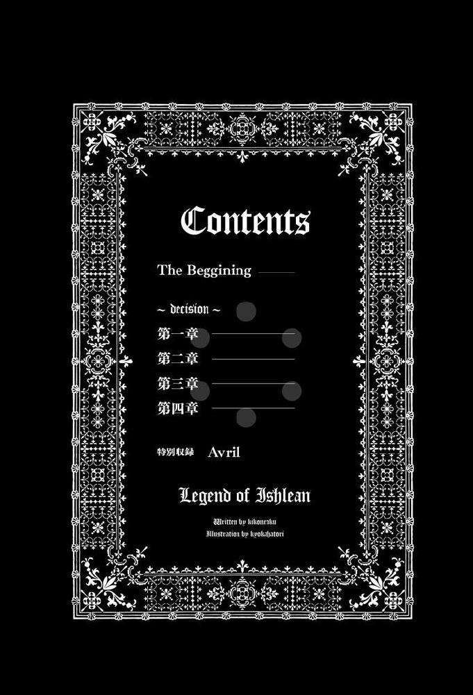

| レジェンド・オブ・イシュリーンI（サーガフォレスト） | |
| 木根楽 | |
| (2015) | |

イシュリーンは身震いした。
暑かった夏が終わったばかりだというのに、秋を一気に通り越し、冬になったかと疑うほどに空気は冷たい。そして、濃く重い霧が包む渓谷は、わずかばかりの先も見通せなかった。
彼女は、霧の中でも鮮やかな緑玉の瞳を瞼で隠した。整えられた眉は美しい曲線を描き、大きな二重の目は閉じられたままだ。母親譲りの形の良い小鼻は、通った鼻筋と共に絶妙な均衡を主張していて、唇は潤いを湛え、凛と結ばれている。月光のような肌艶を今はやや紅潮させ、瞼を開くと、霧の向こうを睨むように見据えた。
「攻勢は......止まったか？」
彼女の問いは自らに向けられたもので、すぐに答えを出す。
──兵達を休ませるには今しかないか。
イシュリーンは冑を両手で脱ぎ、銀色の長髪を宙で煌めかせると、踵を返して歩き出す。
女神ヴィラの生まれ変わりと称えられる美しい彼女が、軍の指揮官として戦場にいるのは、もちろん敵と戦っているからだ。
グラミア王国。
東西横断公道と呼ばれる大陸を東西に貫く公道の上にあり、大陸西方諸国の東端に位置するこの国は、東西交易の玄関口として富を得ている。その反面、大国の侵略や、不安定な国内情勢に悩まされ続け、今も西の国境を接する大国、神聖スーザ帝国の侵略に曝され苦しんでいる。この侵略者に同盟国の多くは蹂躙され、現在においてグラミア王国の為に援軍を出してくれる国などない。南部国境を接するアラゴラ王国とは同盟関係であるが、その国も、長引く帝国との戦争に疲弊し、他者を助ける余裕などなかった。
グラミア王国は絶望的な戦いを強いられながらも、地の利を活かして、頑強に抵抗を続けている。そして、神聖スーザ帝国グラミア方面軍が、占領地であるリュゼに集結し、東進して来るという情報を得て、クローシュ渓谷で迎え撃つべく軍を展開した。
この渓谷は、北にそびえる山脈から流れ出た幾本もの川が作り出す、自然の要害である。起伏に富み、森は広大であった。
戦闘開始から、二日が経過している。
現在、膠着状態なのは、グラミア国軍の勇戦だけが理由ではなく、神聖スーザ帝国軍の慎重さも加味されている。しかし、この敵の用心深さは、グラミア国軍左翼の奮戦が原因であるから、ここは防御側が予想以上に頑張っていると評したほうがいいかもしれない。
グラミア国軍左翼を指揮するイシュリーンは、銀糸にも似た色合いの長髪を誇るように歩いていた。水滴が付着した彼女の髪は、光の粒子をまとうかのように強く輝き、激しく跳ね揺れることから、彼女の歩みが早いと知ることができる。
引き締まった四肢を鎖帷子と甲冑で隠し、胸を締め付けるようなそれにも慣れた自分に、彼女は何も思わない。
王女でありながらも、戦場に立たなければならない理由が彼女にはあった。
イシュリーンは幼少の頃、王国一の戦上手であるオデッサ伯爵を師として学んだ。彼と別れてからも研鑽を積み、実戦で鍛えられた。彼女は美しいだけの王女ではなく、神聖スーザ帝国軍が慎重にならざるを得ないほどに、軍の指揮をしてみせる娘となっていて、王宮で権力を行使する事のみに長けた異母兄弟達と一線を画している。今回の迎撃場所を王に進言したのは国軍将軍レニアス・ギヴであるが、彼にそれをさせたのは彼女だ。
これは、イシュリーンが進言しても通らない現実があるからだ。
王妃の父であり、国務卿でもあるウラム公爵バザールにとって、ウラム公爵家の血が流れていない彼女は邪魔だという理があり、王妃ベアドラにとってイシュリーンは、存在そのものが許せないという感情がある。そしてこの二人が牛耳る王宮は、ウラム公爵家そのものと評しても過ぎたるものではない。
しかしながら、どんな事情、理由があれども、グラミア王国はここで敗北するわけにはいかない。クローシュ渓谷から東は、平坦な地形が続く王国中央部で、大都市であるベオルードにオルタヴァ、そして王都キアフがある。だからというのもおかしいが、これまで戦場に出てくる事のなかったグラミア王ディスムンド二世が、全軍後方まで出張ってきていた。
しかし、彼自身は軍兵に姿を見せることなく、王命は全て軍監を通されている。
父親に会うにも、軍監の許しを得なければならない程度の自分に、自嘲の笑みを浮かべる王女は、それでもここから東には敵を一歩も入れるものかと、悲壮感に駆られて歩を速めた。
敵の攻勢が止まった今を利用して休む兵達は、それぞれの武器や盾を脇に、束の間の睡眠、わずかばかりの食事、傷の手当てとまとまりはないが、誰もが戦う為に備えていた。悲しいことに、この現実は王の出馬によるものではなく、兵と同じ食事に寝床といった王女の存在に起因する。
彼女が近くを進み、兵達は改めて崇敬の念を向ける。
「姫様！」
霧のせいで隠れた数デール（数メートル）先からの声に、イシュリーンは長い睫毛を揺らして応えた。彼女の瞳に、長身の男が歩み寄って来るのが映り、王女は彼の名前を声にする。
「ジグルド......」
青年は立ち止まり一礼した。その青い髪は濃い霧の中でも鮮やかで、同じ色の瞳はどこまでも澄んでいる。
「ジェフリ卿からの伝令です。このまま敵に休む時を与えることなかれ。攻撃命令です」
ジェフリ卿──ジェフリ・スノーワイトは、ウラム公爵バザールの側近である。彼は軍監として軍中にあり、国軍将軍レニアスの近くで全軍を監理しているが、その権限は王の代理とも言える大きさで、この時と場所だけでいえばイシュリーンをも凌いでいた。
王女は、秀麗な顔を歪に変化させた。
彼女にそうさせるだけの伝言をしたジグルドは、視線を濡れた草が泥土を隠す地面へと落とした。グラミア王国最強の剣士で、イシュリーンの副官を長く務める彼は、彼女よりも七歳年上の二十六歳だ。その彼が、軍監からの伝令に怒鳴り返した事実だけを隠して、伏し目がちに説明を始める。
「ジェフリ卿は、優勢な左翼攻勢を全軍に波及させるべく、まずは左翼を敵に突出させ、敵をそれで釣り帝国軍全体の陣形を歪めた後に、中央、右翼によって一気に崩すと仰せです。レニアス閣下も同意しておりますので、これは決定でございましょう」
「レニアスの立てたものであれば信用するが、これはそうではない。そもそも左翼で敵を釣ると言うが、ならば兵の補充が要る。矢、剣、盾も要る。人員の補充はどうして行われない？ 補給は？ 後方に置かれたままの予備兵力から、いくらかの連隊を回してもらわねば無理だ。ジグルド、ジェフリ卿に会う」
神聖スーザ帝国軍一万。後方支援をここから差し引いても、戦闘に参加する兵力は八〇〇〇人近くにもなり、大軍である。
グラミア国軍は六〇〇〇、実際に戦闘への参加は五〇〇〇を下回る。
イシュリーンはこれまで指揮下兵力八〇〇で、敵右翼二〇〇〇以上を相手に善戦しているが、地形を利用しての防御戦術であるから可能であると理解している。攻勢に出るならば、兵力の補充は絶対だと顎を引き、士官達には警戒を命じてジグルドだけを従え、グラミア王国軍中央後方の本陣へと急ぐ。
王女は白銀の甲冑を鳴らして霧の中を歩き、銀色の髪は水滴と汗に濡れた。細い鎖を編み込んで作られた鎖帷子の軽い音と、甲冑の部位がぶつかり発せられる重い音が、混じり連なり二人の足音を消す。
樹木達が突然に霧の中から現れては二人の歩みを乱し、薄く白い幕に覆われた世界は、王女に彼女の未来を突きつけるようであった。ゆえに彼女は、頬を強張らせる。
──私は、それでも戦う。
イシュリーンは緑玉の瞳に、本陣を捉えた。遠目にも明らかにそうだと分かるほどに、はっきりとそれは見える。
グラミアの色である青と黄の軍幕が囲う目的地は、大量の篝火で、霧の中でも鮮明であった。
彼女は我が目を疑う。
「これでは......何かあった時にすぐ場所がばれるぞ」
「敵の......諜報が潜り込んでいれば......と考えないのでしょうか......」
副官の言葉に、王女は頷くも歩みを止めない。
「これを見て、レニアスが軍権を握れていないのは明白だ」
イシュリーンの発言は、多くの問題を集約してジグルドに伝えていたが、彼はその青い瞳を微かに揺らしただけで返事はしない。
二人の姿に、本陣の歩哨が背筋を伸ばして敬礼する。
「王女殿下！」
兵士に片手をあげて応えるイシュリーンは、意識的に笑みを作り、声をかける。
「そのまま。ご苦労！」
歩哨が本陣へと二人を通し、士官達が慌てて彼女を出迎える。その後方、作戦卓や床几が並ぶ広い場所で、青い甲冑に白く長い顎鬚が映える老人と、鮮やかな金色の髪を篝火で輝かせる肩幅の広い男が向かい合って話をしていた。二人は士官達の動きに気づき、彼等の視線が集まる先へと顔を向けた。
老将は苦渋に染まった表情で、イシュリーンに状況を伝えようとするも、金髪の男が口を開き遮る。
「これは王女殿下！ 伝令は行きませんでしたか？」
ジェフリの声に篝火の弾ける音が混じり、王女は軍監たる男に微笑む。
彼はグラミア人ではない。ウラム公爵バザールが、盟友であるトラスベリア王国の選帝公グレイグ公爵ヴィルヘルムに頼んで譲り受けた用兵家である。ジェフリには兄がいて、その男もグレイグ公爵の幕僚であったが、弟のジェフリはグラミア語が堪能であるという理由で、顧問としてウラム公爵の幕下に加わり、今こうしてイシュリーンの前にいる。
王女は、軍監から目を逸らさず言う。
「参った。であるからここに来た。軍監殿のご指示、承知した。が、攻勢に出るには兵、剣、盾、矢を寄越してもらわねば無理だとも父上に進言したい。父上に会いたい」
国務卿の幕僚、それも異国人にと彼女の感情は荒ぶり、声に含まれた棘となってジェフリに向かった。
軍監は不愉快だと鼻を鳴らしたが、直後には優越感で唇の両端をつり上げる。
「私がトラスベリア人であるから、私からの命令には従えないと？ そうであっても陛下と宰相閣下から軍監に任じられた私は、国軍にあって必要とあれば将軍閣下よりも強い権限が認め......」
「すまぬ。そういうわけではないのだ」
ジェフリの発言を詫びで遮った王女は、緑玉の瞳を強く光らせ唇を開く。
「攻勢に出るに必要な兵力と装備を求めているに過ぎない。ジェフリ卿にはご理解頂けるものと思うが？」
ジェフリは分厚い唇を不気味に歪曲させ、次に開く。
「認められません。王女殿下の左翼は囮。本命は中央と右翼！ 予備兵力はここに投入します。これは王陛下のご命令です」
イシュリーンが右腕を後方へと突き出す。そうしなければ、ジグルドが腰の剣を抜き放っていた。
彼女の行動で制された剣士は、王女の肩が震えるのを見て舌打ちを発した。が、篝火の音に邪魔され、それは誰にも届かない。
ジェフリだけで、これを決められるはずがないと、イシュリーンは知っている。同時に、父親がこれをするとも思えない。妃と国務卿の鸚鵡である王とジェフリが、イシュリーンに囮になれと命じるあたり、黒幕である王妃ベアドラと、ウラム公バザールの目論見は何であるか、王女は悩む必要が無かった。
睨みあうイシュリーンとジェフリに、居並ぶ士官達も固まった。彼等の内心を代表したレニアスが、怒気に染まった表情で軍監を睨んだが、王女の微笑に色を失う。
「承知した」
短く言い、踵を返した王女は、銀色の髪をふわりと舞わせる。
彼女の背中にレニアスの驚愕とジェフリの苦笑がぶつかり、それを視認したジグルドが一礼し侮蔑を隠すと、去るイシュリーンに続く。
動揺する士官達の中で、右翼を預かるアルドゥラン・レヴィが、王女を追おうとしたが、彼女自身が手の動きでそれを制した。
イシュリーンは唇を結び、士官達が譲った道を軽やかに歩いた。
本陣を出てしばらく後、彼女は溜め込んでいた憤りを、溜息で外に出す。
ジグルドが彼女に確認した。
「よろしいので？」
「よくはない。が、ジェフリが一人で考えていることではない。私はどうやら、ここで死ねと言われているようだ」
ジグルドには分からない。しかし怒りは抑えられない。
前を歩く姫君は、いつからか本当の笑顔を誰にも見せなくなった。
心からの笑顔を見たものは、はたしてどれだけいるだろうかと、青年は彼女の置かれる環境、状況が、彼女に原因がないことに苛立つ。また、イシュリーン自身がそれを口にすることはなく、だから彼は辛いのだ。
大きくうねった木々の根が、地面から張り出し這っている。それを踏み越え、王女に続く副官は、こんな時にイシュリーンの死を願う国務卿と、操り人形でしかない王を脳裏に描いて、双眸を細めた。
──だが、どうして今なのだ？
王宮内で彼女をよく思わない妃と、彼女の父であるウラム公爵バザールが、どうして今、彼女を排除しようとしているのか。これまでも王宮内でその機会はあったはずだ。問いただしても返ってくることがない故にジグルドは推測するしかできない。
無言の副官に、王女は歩きながら口を開く。
「不思議か？ 王宮で私を殺そうと思えばいくらでも機会があった彼等が、そうせず......今を選んだ事が」
青い髪を揺らして顔をあげた青年は、振り返りもせずに言葉を続ける王女の背中を眺める。
銀髪が、霧の中で揺れ輝いた。
「私とお妃様の不仲は、グラミア人であれば誰でも知っている。戦働きをしていた母上と、王陛下であられる父上様との間に生まれた私は......あのお方にしてみれば、下賤で王家にふさわしくない者の血を引いている犬のような娘だそうだ......犬も気の毒だな。その私が王宮で変死すれば、疑いが生じ、それはお妃様と国務卿殿に向けられるだろう。だからだ」
「風聞を気にすると？」
「そうだが......風聞だけには収まらない。ウラム公爵バザールといえども、これまでの行いから敵は多く、対立する諸侯は少なくない。これは私が生まれた時よりも強まっていて......だから私は反ウラム公の諸侯と、ウラム公の間に立ち、両者の調整にこれまで務めてきた。そうしなければ、今日まで生きられることは無かっただろう。私が変死すれば、諸侯が黙っておらぬ。彼等にとってみれば、ウラム公に対抗するに大義は私だ。私という......王家の人間でいながら、ウラム公家の血が混じっていない王位継承権を持つ娘は、ウラム公を牽制する武器として、彼等諸侯には必要なのだ」
青年は悲しみで微笑むも、それは誰にも見られない。
ジグルドが、イシュリーンの近くにいながら、何も理解していなかった自分への怒りで、歯軋りに頬を震わせた直後、グラミア軍左翼陣地が霧の中から現れ、王女、副官の順で歩き入った。
青い幕を跳ね上げ現れた王女に、士官達が一斉に姿勢を正す。それに微笑み、イシュリーンは言った。
「攻勢に出る。我々左翼が敵陣形を崩し、中央と右翼がその隙を突く。皆、持ち場に戻れ。敵が動き出す前にこちらから仕掛ける」
士官の一人が、不安を口にする。
「姫様、魔導士の数が足りませぬ」
彼女は「案じるな」と言い頷く。
「私がいる。私も前に出る。私の結界魔法で、お前達を敵の魔法から守る。安心して戦え。やるぞ！」
王女の声に士官達が動き出し、金属音の連なりだけが霧の中から二人に届いた。
二人だけとなって、イシュリーンが副官に横顔を見せる。
「ジグルド、あの場でお前がジェフリを斬れば......国軍の兵達は私に味方をしてくれるかもしれんが、我々は帝国と王都からの軍に挟まれる。我々は目の前の敵を倒さねばここから動けない。これは良くない......しかしバザールめ......今このような時に、表に出すことではないはずだ」
王女の声は、これまでジグルドさえも聞いたことのない類のもので、ただ怒っているのではないと青年は察した。ゆえに彼は、ただ黙り聴くと決めた。
「グラミアがどうなっても......己の野心か？ バザール......。父上様も......どうしてこうまで......」
情けないとは言わない彼女は、銀色の髪を指で梳かし、誤魔化す。
「とにかく、帝国を退けなければ先はない。目の前の敵を破り、私心で国を乱す国務卿と、彼に頭の上がらない父上様をお諫めするのはその後だ」
「行動に移されると？」
「レニアスにはまた苦労かけるが、私は死ねと言われたのだ。実の父親に......もちろん父上様が言うはずがない。これは......バザールの言葉に決まっている」
イシュリーンの緑玉の瞳が強く光り、副官は頬を強張らせた。
「私は死ねない。この国を守るまでまだ死ねない。母上様が......母上様の愛した美しいこの国を、宗教狂い共に汚されてたまるか！ バザールの好きにさせてたまるか！」
王女は霧の向こう、神聖スーザ帝国軍が潜んでいるであろう西を睨み吐き捨てる。
イシュリーンはこの時、一筋の涙をこぼした。
──私はまだ死ねない。母上がそうであったように、国と民の為に私はまだ戦わねばならない。
銀髪の王女は、霧の中に溶け込むほどに白い頬を、いつ以来かの恐怖に激しく震わせたが、それをジグルドに見られないようにと、歩き離れる事で隠した。
「矢を放て！ 前進を止めるな！」
イシュリーンの声は掠れていたが、士官達の耳にはよく届き、彼等の指示で兵士達が一斉に矢を放つ。敬愛する姫君に指揮されたグラミア王国軍の左翼前衛が矢を敵にぶつけ、軽装歩兵が盾で身を守り、進み始める。彼等の手には、薄まった霧の中で鈍く輝く長剣があり、斬るというより叩き割る為に刀身は厚い。
攻撃を開始してすでに半刻。
神聖スーザ帝国軍右翼は、初めこそ動揺を見せたがすぐに陣形を整え、グラミア軍中央と右翼の攻勢が激しくないとみて、次々と部隊をイシュリーン率いるグラミア軍左翼へと向ける。
グラミア人達の白刃がスーザ人達の盾を叩く。その音が戦場となったクローシュ渓谷の中に乱れ飛び、人間達の怒声が続く。
グラミア語とスーザ語の罵声が飛び交い、それぞれの神に祈り武器を振るう。
「女神ヴィラの娘を勝たせろ！」
グラミア人達の戦意は凄まじく、それは彼等のすぐ後ろに、銀髪を甲冑から溢し揺らす王女が結界魔法で彼等を守っているからだ。
物理には物理、魔法には魔法。
敵の魔法を防ぐには結界魔法しかなく、これがないと魔法の攻撃に無抵抗となり、たちまち戦局は不利となる。もちろん、グラミア軍左翼に魔導士はいるが、防御戦と攻撃では違う。
攻勢に出た場合、敵に魔法攻撃をぶつける魔導士と、敵からの魔法攻撃を結界で防ぐ魔導士が必要となる。つまり、数がいるのだ。
イシュリーンは今、優れた魔導士でもあることを存分に主張していて、旗下の魔導士の多くを攻撃に回し、数人の魔導士と共に、指揮下部隊全体を守る結界を維持していた。
「姫様、後退すべきです」
王女の隣で盾を持つ副官が進言する。彼は飛来する矢から彼女を守っていて、今もイシュリーンに当たると見た矢を防ぐ。
「敵の陣容がとんでもなく厚い......これ以上は勇敢ではなく無謀ですぞ」
「レニアス、アルドゥランが、中央と右翼から敵を撃つ。それまで耐えねば意味がない」
「しかし、部隊の交代もできず、こちらは戦いっぱなしです。疲弊すると一気に押し込まれます」
「少なくとも、ここで勝たねば先はないのだ！」
叫んだイシュリーンは、感情の高ぶりを声に乗せた。
「皆！ あと一息だぞ！」
だが、実際のところ、彼女でさえジグルドとは同意見である。
──味方の攻め上がりが遅い。何をしているのだ!?
甲冑の下、鎖帷子の内側はすでに汗まみれで、下着を今すぐにでも脱ぎ捨て、水を頭から被りたいという欲求すらある王女は、熱のこもった息を吐き出す。
結界魔法は、魔導士であれば最初に修得するもので難易度は高くない。一応、種類はあるが、ほとんどの場合、一種類の結界で足りる。今、彼女が張っている結界も初級のそれで難しくないものだが、維持するというのは別の話だ。
魔法を発動し続ければ、精神力、体力を少しずつ削られていく。
ジグルドはこれを心配していて、魔法を行使している間は無防備となる魔導士を守るのは常識であり、王女の為に迫る矢を全て防ぎながら説得し続ける。
「今なら後退するだけの戦力があります」
「姫様、どうかお聞き入れください」
「今、後退を始めねば疲れ切った兵から倒れます」
これまでジグルドがここまでしつこく王女に進言することは無かった。それはイシュリーンが、彼の進言を拒んだことが少ないという理由と、拒んだとしてもそれは自分が間違いであると、イシュリーンの説明で彼が理解できていたからだ。
しかし今は違うと、ジグルドは目の前の光景から、自らの判断が正しいと信じる事ができた。
グラミア兵は全員がよく戦っている。
つまり、予備兵力がないのだ。通常ならば戦い疲れた部隊を、後方に温存していた部隊と入れ替え、戦力の維持に努めるのだが、今のグラミア軍左翼にはこれができない。
戦力は時間と共に下降線をたどるは必定で、戦える兵が減るよりも深刻である。
ジグルドは、叱られても構わないと王女の肩を掴んだ。
イシュリーンが揺らめきよろめいて、青髪の青年が抱き止める。
汗に濡れた美しい顔が、冑の下で苦しげに歪んでいた。
「ジグルド......分かった。後退だ」
副官が叫ぶ。
「後退！ 防御陣形！ 軽装歩兵！ 盾！ 弓！ 三連射！」
グラミア軍左翼が、その指示で蠢く。
伝令達の怒声が響き、角笛が鳴り、盾を霧の中で煌めかしながら、左翼は後退を始める。そして同時に矢が吐き出され、それは一度、二度、三度と続いた。
神聖スーザ帝国軍右翼は追撃に移るも、まずは矢を防がねばならず、盾を並べ止まる。そして、帝国軍も激しく応射した。
危険な煌めきが空中で交差し、帝国軍側から放たれた矢の量は、グラミア軍を凌駕している。
「防げぇ！」
ジグルドの怒声。
グラミア軍左翼は、盾を掲げて矢を防ぐも、いくつもの悲鳴が連なった。
「応射！ 応射を絶やすな！ 整然と後退！」
士官達の喚声が応える。
神聖スーザ帝国軍から、魔導士の放った攻撃魔法が鮮やかな色彩を空中に描いた。
火球、氷刃、雷撃。
グラミア軍魔導士達が結界を維持し、攻撃魔法は透明な膜にぶつかり、激しい衝撃と爆音がグラミア人達に降り注ぐ。火球の魔法が宙で渦巻き爆発し、直撃は免れても熱風は届く。数人の兵士が後方に飛ばされ、結界の守る半径が小さくなっていることにジグルドは戦慄した。
「攻撃魔法止めぇ！ 結界魔法に集中しろ！」
イシュリーンの声が響き、伝令達が叫ぶ。
副官の腕から逃れた王女は、疲労が濃い身体に自嘲し言った。
「後退！」
グラミア人達が、一気に後退を始める。
ここで、帝国軍右翼の攻勢が止まる。彼等は、戦闘に参加し疲弊した部隊を、後方の予備兵力と入れ替える事で、戦力の回復を図ったのだ。そして、新たに現れた敵部隊群の中に、重装の騎士達が並ぶのをイシュリーンとジグルドは見つけ、同時に声を発していた。
「聖紅騎士団......」
「シュケル・クラニツァールか！」
イシュリーンの声に、ジグルドの声が重なり、二人は強敵の登場に身震いした。
神聖スーザ帝国が誇る一二の騎士団の一つが、わざわざ前線に現れ、彼女達に襲い掛かろうとしている。
「矢を絶やすな！」
イシュリーンはここで、火球の魔法を発動させた。それは攻撃というより牽制目的で、結界を張っているに違いない敵にぶつけるのではなく、敵と自軍の中央の地面めがけて解き放つ。
凄まじい轟音と爆音が霧を払い、木々が悲鳴と共に倒れる。
黒煙が帝国軍を隠し、また敵からもグラミア軍を隠した。
「後退！」
王女は叫んだつもりだったが、その声は掠れて聞き取れないほどで、ジグルドが彼女を支え後方へと急ぐ。
「後退だ！ 距離を稼げ！」
叫んだ副官は王女の甲冑をまず脱がした。不敬の咎めなど後でいくらでも受けると決めた彼は、鎖帷子と革ベルト、下着のシャツにズボン姿となったイシュリーンを、兵の一人から奪い破ったグラミア国旗で包む。
「姫様、お許しを！」
抱きかかえ走り出した副官は、そうせねばならぬほどの焦燥に駆られていた。護衛が続き、士官達が後退と叫び続ける。
この時、後退進路の先から、軍装の男が現れた。
「何奴!?」
王女を降ろしたと同時に、剣を構えたジグルドが叫んでいた。
現れたのは、伝令だった。
「アルドゥラン閣下から伝令！ 姫様！ ジグルド卿！ すぐにお逃げくだされ！」
「どういうことだ!?」
問い返したジグルドは、伝令から聞きたくもない報告を聞かされる。
「勅命により全軍撤退が決まりました！ ブスカシュまで撤退です。中央、右翼は撤退......既に撤退！」
「勅命!? そんな馬鹿なことがあるか!?」
イシュリーンは激昂し立ち上がると、怒鳴っていた。汗に濡れた髪を手で払いあげ、伝令に掴みかからんばかりの勢いだったが、よろめき片膝を地につけ、苦渋に満ちた声を絞り出す。
「そうまでして私を殺そうとするか!?」
疑惑を声に出した王女は、動けない士官達を眺め、副官の助けを借りて立ち上がると、握りしめた拳を震わせた。
ジグルドの手が彼女の肩に置かれ、イシュリーンは疲労と怒りに染まった目を、彼に向けた。
ジグルドは微笑んでいた。
「姫様、お許しください」
次の瞬間、信頼する相手からの手刀で、イシュリーンは首に衝撃を覚えたと同時に、驚愕で目を見開いた。
鮮やかな緑色の瞳が、一瞬だけジグルドを映すも、彼女はすぐに意識を失う。
「姫様にはお逃げ頂く。一個小隊......姫様をブスカシュにお運びせよ。すぐに行け。残りは──」
ジグルドは後退してくる士官、兵達を見て言う。全ての顔を見たわけではないが、彼は彼等全員に向けて腹の底から声を発した。
「姫様の為に時間を作る！ 俺と共に残れ！」
少しの静寂の後、ジグルドに近い者達から叫び始め、次々と兵達が彼の言葉を伝播しながら振り返ると、武器を確かめ盾を構えた。
「行け！」
鋭いジグルドの声に、イシュリーンを託された士官が頷き、二〇名の兵が続く。彼等を見ない副官は、グラミアにあって、侵略者と戦う代表者たるイシュリーンを守る為に、死地に残ると決めたのだ。
権力者たちの都合による内輪揉めで自滅しようとしているグラミアにおいて、苦労するのは民であることを、この世界にあって、この国に生まれてもなお知る利発さがジグルドにはある。しかし、そんな権力者の一人であるイシュリーンは、戦いとあれば常に戦場に立ち、兵達と同じ物を食べる。そんな彼女だからこそ、彼は近くで守るに徹することができていたし、これからも彼女の為に戦うと進んだ。
霧が揺らぎ、聖紅騎士団を中心とした帝国軍兵の隊列が現れる。
姫様を守ることは、国を守るに通じるはずだと、ジグルドは目を逸らさない。
彼の祖父と父も、グラミア国軍の士官であった。だからというわけではないが、彼等を見て育ったジグルドもまた、国軍に入った。それは外敵と戦う為であり、国を守る為だ。
帝国軍が、薄気味悪い文言を唱え始める。
スーザ教の祈りの一種だ。
ジグルドは舌打ちし、怒鳴る。
「奴らの祈りを止めるぞ！ 正義を押しうる不届き者達を！ 奴らの神に返してやれ！」
グラミア語の喚声が一斉にあがり、矢の射出音が重なる。木々の隙間をすり抜け、両軍から放たれた矢先がそれぞれの敵にぶつかる。盾、甲冑がそれらを弾き、または身体に突き刺さり、戦場で高らかな金属音と絶叫が交じり合った。多くのスーザ語の怒声と、それに掻き消されそうなグラミア語の罵りは、死ぬまで終わることなどないとばかりに醜く激しい。
「ジグルド卿、あれを！」
青い髪の青年は、士官に指さされた前方を睨み、頬を歪めた。理性的で穏やかな彼がこの時に浮かべた笑みは、人を斬ることを渇望した戦士のそれとなっていた。
「聖紅騎士団の総長旗か！ シュケルを狙うぞ！」
ジグルドが走り出す。
複数の士官、兵達が、怒気に染まる両眼で彼に続いた。
イシュリーンが意識を取り戻した時、戦場を離れる兵士の数は当初の半分になっていた。彼女は素早く頭を振り周囲を確かめると、自分を背に乗せ運ぶ士官に言う。
「降ろしてくれ」
「は......」
士官は従い、彼女は軍靴で泥を踏んだ。ふらつくが大丈夫だと、彼女は東を向く。
兵の一人が、預かっていた長剣と短剣を王女に差し出し、イシュリーンはベルトにそれらを留めた。
──ジグルド！ 後で説教だ！
王女は胸中で副官に怒り、だがすぐに感謝に変える。そして、彼にそうさせた自分の愚かさを呪った。
もっと早くに後退を判断していればと悔やむ王女は、撤退せよという勅命を隠し持っていたに違いないジェフリ・スノーワイトへの憎しみで、進む速度をあげる。
上り坂だった。
泥に近い地面は体力を奪う。それでも追われる者達は懸命に進む。
イシュリーンは喘ぎ、大きく息を吸い込むと脚に力を込めた。
──私の為に戦う兵達の為にも、絶対に逃げる！
逃げてどうするかであるが、彼女は決めていた。
国務卿ウラム公爵バザールの専横がある限り、敵国の侵略を前にも、満足に戦えないのがグラミア王国である。国防を成すに、国内の敵を排除する。
決意したイシュリーンに感化されたのか、霧は地表に白い幕を残す程度まで和らいでいた。彼女は木々に手を当て、感触を確かめるように歩く。走り出したい衝動に抗い、体力を温存しながら、起伏に富んだ渓谷の森を進んだ。
どこかでスーザ語の怒声があがる。
王女を逃がすべく残った軍兵がどうなったかなど、彼女は確かめるまでもなく理解している。それでも、あのジグルドならば生きていると信じることができた。それは願いに近い。
またスーザ語が聞こえた。
敵が近い。
本来であれば、敵の追撃を防ぐ殿がその防波堤となるが、グラミア軍のそれはまさにイシュリーンの部隊だった。それも、知らぬうちに殿となっていて、彼女が脱出するためには兵達全員を犠牲にするしかない状況であった。だから彼女は自分を許せない。
──ジグルドに判断させた私は卑怯者だ。
薄紅色だった唇も、今は血の気が失せている。震えるのは気温が恐ろしく低いからで、彼女は安全圏へと急ぎ離れ、暖を取らねば危ないと焦る。
護衛の兵が悲鳴をあげる。
彼は、スーザ人が矢を放つ瞬間を見ていて、その軌道に身体を投げ出し王女を守った。
「いたぞー！」
帝国兵が叫び、王女の隣の士官が彼女を押す。
「姫様、お行きください。またお声をお聞かせくださいますよう」
「借りておく。名は？」
「ウラブス・カプールと申します」
「ウラブス、ありがとう」
一礼した中年の士官が、数名の兵を王女につけ、自らは三名の兵と共に振り返る。魔導士、歩兵と彼が武器を構え、木々と岩を利用し接近してくる敵を迎え撃った。
それを背に、イシュリーンは急ぐ。
──ブスカシュまで辿り着けるか？
渓谷の東側にはブスカシュという町があるが、帝国兵がどこまで進出しているか不明な現在、単純に東に向かうのは危険かもしれないと不安になる。
雨が降り始めた。
小さな水滴がぽつぽつと森を濡らし始める。枝葉にぶつかるそれらが、散発的な音を発して、イシュリーンは戦闘の音がいつの間にか消えていると気付き後ろを振り返ると、ウラブスと名乗った士官が、胴から長剣を引き抜かれる瞬間がそこにはあった。
距離は一〇〇デール（一〇〇メートル）も離れていない。
王女達はなだらかな斜面を登りきり、一斉に振り返る。
イシュリーンは、松明が放つ赤い点を大量に見た。それは見える限りの森に広がっていて、彼女は帝国軍がどうしてそうしているのか理解する。
グラミア軍左翼の殿がイシュリーンとなっている事は敵に知られているのだ。ゆえにスーザ人達は、彼女を懸命に追っている。そして、それはグラミア軍兵が戦場に立っていないという意味でもあった。
垣間見た光景に、現実を突きつけられた王女は、逃亡中だというのに動けなくなってしまった。
「姫様、お急ぎを」
見かねた兵に急かされた王女は、我へと返り跳ねるように振り向くと、急傾斜で下る前へと進む。
後方から放たれた矢を、兵達が盾で防いだ。
敵との距離、およそ五〇デール（五〇メートル）。
兵達はついにその場所に残り、木々と斜面を利用して弓矢で反撃することで時間を稼ぐ。イシュリーンは彼等を見殺しにする自分を責めつつ、それでもこれしかないと諦める。
「姫様！ お逃げください！」
一人の兵が、抜剣と同時に叫ぶ。
イシュリーンは走り出した。
斜面を駆け下り、怒号と絶叫を後方に聞きながら、イシュリーンは森の中へと突き進んだ。枝葉を手で払い、呼吸もままならない肺を叱咤する。脚は斬りおとしてやりたいほどに、動かそうとする彼女の意思に抗う。疲労で踏ん張りがきかず、イシュリーンは下り坂を転がり落ちる。
全身の筋肉が悲鳴をあげ、骨が軋んだ。直後、強い衝撃を右腕に覚える。地面の凹凸は彼女の身体を傷めつけた。
彼女はしばらく滑り落ち、何かにぶつかり止まったと思った時には、大きな木に背中を強打していて呼吸ができず苦しんだ。それでも素早く身体の具合を確かめる。
幸い、骨は折れていない。が、ひどく痛む左上腕部は動かせば涙が出そうだった。右手で顔にまとわりつく髪を払った時、ぬるりとした感触に舌打ちをする。額から頬へと続くその滑りは、赤く温かい。
彼女は立ち上がり、右脚を引きずる。打撲だけで済んだのは奇跡だと神に感謝したイシュリーンは、痛む腕から血が滴っているのを見る。鎖帷子は左肩から下が千切れてなくなっており、痛みの正体は腕に走る裂傷だと分かった。
シャツの袖を噛み破ると、慣れた動作で左腕に巻き、口と右手で縛る。そして自分が転がり落ちた斜面の上に立つ数人の帝国兵を視認し、木々に身を隠しながら逃げた。だが、濡れた地面は、先程まで彼女がいた場所を帝国兵に知らせた。
「近くにいるぞ！」
スーザ語でそう叫ばれたと理解した彼女は、這うように茂みの中を進み、流れる水の音に顔をあげた。方向を変えるべきかと悩み、視線を散らした彼女は、呼吸を整えるように深呼吸をする。そして身体の向きを変えようとするも、大きくなった帝国兵の声に動くのを躊躇う。
イシュリーンは、伸びた草の隙間から、敵の数を確認する。そこには、五人の兵士がいて、手にした槍や剣を苛立ちも露わに振り回している。
彼女は茂みに身を寄せて、聞き耳を立てた。彼等の会話が王女に届く。
「味方はどうした？」
「さっきの兵達が、喚きながらあっちに走っていったから追いかけたんだろう」
「はん......囮に騙されたってわけか？ 本命はこっちのはずだ。足跡が続いている。おい、味方を呼んでこいよ。あいつは魔導士だぞ。魔法で反撃されたら危ない」
どうやら、残った兵が帝国兵の多くを引きつけてくれたらしい。そして今ここにいるのは、魔導士ではない兵が五人だ。
一か八か、撃って出るかとイシュリーンは自問する。
心配なのは、魔法発動まで時間がかかることである。今の彼女は体力、精神力ともにギリギリで、呪文の詠唱なしに魔法を発動させるのは難しい。詠唱の時間を稼ぐ味方はおらず、一人で五人の攻撃を躱し、魔法をぶつけ逃げることができるだろうかと悩む。
イシュリーンは、派手な魔法は使えないと判断し、難しいが敵に察知されにくい真空刃を発生させようと思案する。そして同時に祈っていた。
──主神オルヒディンよ、どうかお力をお貸しください。
祈りを終えた彼女が、次に帝国兵を睨んだ時、彼等の様子が一変した。一方を指差し喚いている。しかし、それはイシュリーンの隠れている草むらではなかった。
「おい、止まれ！ 何者だ!?」
「民間人か!? おい！ 動くな！」
帝国兵達は、何者かに叫んでいた。
イシュリーンは呼吸を整え、魔法発動の為に意識を集中させながら、彼等が叫ぶ先へと視線を走らせる。
クローシュ渓谷特有の急斜面を、木々に寄りかかるようにして一人の男が近寄ってきていた。彼は遠目にもはっきりと分かる異国の出で立ちで、イシュリーンがこれまで見たこともない装いである。
「貴様！ 誰だ!?」
帝国兵の一人が男に怒鳴る。だが、男はまるで夢でも見ているかのようにふらふらと歩き、何か喚いていた。聞いた事もないような言語だった。
「怪しい奴！ 武器は持ってないだろうな!?」
帝国兵達が、スーザ語とグラミア語の両方で男に声を発する。酔っているかのような足取りの男は、グラミア語に反応を示した。
イシュリーンは帝国兵達と男を観察し、見たこともない装いの彼を見つめる。薄そうな生地で作られたであろう上下。内の白いシャツは彼女にも分かったが、首から布のようなものを巻いて垂らしているのは理解できない。しかし手ぶらである事から、旅人ではないと決めつけた。
その男は、スーザ兵に手を振りながら、木に掴まるとグラミア語で言った。
「迷ってるだけ！ ここはどこですか!?」
本当に迷っているとしても、グラミア語を発したのはまずかった。
帝国兵達は一斉に白刃を煌めかした。
男も、帝国兵達も、イシュリーンからすれば拙いグラミア語で会話をする。
「グラミア語だな？ 逃亡兵か!?」
帝国兵の質問に、男が叫び返す。
「逃亡!? すいません！ 事情は分からないんです！」
「いいから両手をあげてこっちに来い！ 変な真似をしたら殺すぞ！」
帝国兵の恫喝に男は両手をあげた。そして、よろめきながらも再び、斜面を下り始める。
イシュリーンは、不思議な格好をした男がゆっくりと歩くのを見て、彼に注意が向いている今、動くべきだと息を止めた。
だが、そう決めて身体を動かした瞬間、鎖帷子が鳴った。
「音がしたぞ！ 近くにいるぞ！」
スーザ語で叫んだ兵の一人が、茂みの揺れを見つける。
「あそこだ！」
──大馬鹿だ！ 私は！
自分を叱ったイシュリーンは、茂みから飛び出していた。ほぼ同時に、悲鳴が発せられる。
「うわああああ！」
不思議な格好をした男が、斜面で転倒し、勢いよく落ち始める。
帝国兵達が口々に悲鳴をあげる。
斜面を転げ落ちた男と、それにぶつかり転倒していく帝国兵達の姿が、イシュリーンの瞳に映った。彼等は避けようとしてぶつかり合い、もみ合った。そこに男が突っ込んできて、スーザ人達は弾かれたようになぎ倒される。
木に衝突して止まった男は、大樹と自分に挟まれて、首を折って死んだ帝国兵を見つめ固まっていた。他の四人は呻きながら立ち上がろうともがいている。しかし、誰もが弱々しい足取りで、お互いにぶつかり、また転んだ。
──主神オルヒディン！ 感謝します！
イシュリーンは加速した。そして同時に、右手で腰の長剣を抜き放つ。ベルトに吊るされていた鞘が音を走らせ、白刃が露わとなった瞬間、立ち上がろうとしていた帝国兵の一人を背後から斬り伏せる。
首の後ろから鮮血を吹き出し、前のめりに倒れる敵兵を無視した王女は、痛む左腕を叱咤して水平に払った。
真空刃が音もなく発生し、立ち上がろうともがいていた帝国兵二人が同時に目を見開く。彼等は同時に首と胴体を切り離され、膝から崩れるように倒れた。
──あと一人！
イシュリーンが視線を一人に定めた瞬間、相手から剣を突きだされ、彼女は考えるよりも先に反応し、のけぞっていた。そこに帝国兵が踏み込み、彼女は後ろに倒れると、起き上がれないまま敵の剣を剣で弾いた。
両者の武器が、双方の手から離れる。
帝国兵がイシュリーンに飛びかかった。
イシュリーンは圧し掛かられて呻いた。甲冑の重みで押し返せない。
敵兵が彼女の腰に手を伸ばす。そこには短剣があった。
彼女は肘を相手の顔面に入れる。鈍く重い衝撃は相手の鼻を砕いたが、男は血に濡れた顔に笑みを作ると、彼女の短剣を奪う。
帝国兵の両目が、残忍な色に染まる。
イシュリーンは、声にならない叫びをあげた。
刹那。
短剣をイシュリーンへと突き刺すべく、殺意を漲らせていた帝国兵の目は力を失う。彼は白目となって、糸が切れたように倒れ、見ればその冑は大きく凹んでいた。
王女は、不思議な装いの男が、大きな石を両手で持っているのを見る。
肩を激しく上下させ、雨に打たれたかのように汗で濡れた彼と、男を押し返し立ち上がった彼女の視線が重なった。
黒髪に茶混じりの黒い瞳で、目と眉はやや垂れている。細面は転がり落ちたせいで泥に汚れていた。身長はイシュリーン程で、グラミアの成人男性にしては低い。
王女は、男が自分よりも年下だと感じた。それは男の身体つきからである。彼女から見て、目の前の男はとても頼りなさそうであった。
「その人は......死んだ？」
彼がぽつりと、彼女に問う。
イシュリーンは、ここで立ち話をしている場合ではないと決めた。そして、助けてくれた相手に非礼ではあるが、現在の自分は礼などできる立場ではないと思う。
王女は、少し早口で言う。
「早く逃げたほうがいい。私は行く。再会できたなら、必ず礼をする......あ、これを証に」
イシュリーンは、倒れた男の傍らに落ちていた自分の短剣を拾い、男に差し出す。しかし男は受け取らず、グラミア語で喚いた。
「逃げるってどこに？ ここは？ ここはどこなんだ!?」
「大きな声を出すな」
イシュリーンが慌てた時、どこかで、スーザ語の響きが聞こえた。
とにかく移動すべきだと、彼女が彼の手を掴む。
「来い。今はまずここを離れる」
突然、雨粒よりも早く豪雨の音色が彼等を襲った。
一瞬後、痛いほどの雨が大地を打つ。
森が水の落ちる雑音で包まれる。
「俺はどうしてここにいるのか分からないんだ！ ここはどこだ？」
「質問には後で答えてやる。今はここを離れる」
二人は歩き出した。
クローシュ渓谷は激しい雨に打たれ、それ以外の一切の音を失ったかのようだ。小川の水量は増え、流れは強くなる。これに進む速度と方向を乱され、王女は方位磁石を懐にしまう。
二人に会話はなく、黙々と進む。それはいつしか、疲労で倒れかける彼女を支える男という図になり、イシュリーンは、無礼なのか親切なのか分からない相手の顔を、斜め下から仰ぎ見た。
雨粒と汗で濡れた男は、だらしなく口を開き喘ぎながら、泥のような地面を必死で進む。途中、聞いたこともない言語で何かを喚いていたが、王女が「静かに」と咎めると、素直に従った。
雨に濡れた地面は重くぬかるみ、呼吸さえ困難な雨の勢いに、イシュリーンが倒れ男も転倒した。身体に力が入らず起き上がれない彼女は、自分を抱え起こして進む彼の横顔を見た。
怒っているような顔。
顔を打つ大きな水滴のせいだけではないだろう。
名前を知らないと思い出したイシュリーンが、名乗り尋ねる。
「私はイシュリーンだ！ 名は!?」
「佐藤成留だ！」
「サトウ!? すまない！ 雨がうるさくて聞こえない！」
「名前がナルだ！ えっと......ナル・サトウだ！ 怒鳴ったら疲れる！」
──ナル・サトウ......変な名前だ。
王女は濡れた彼の黒髪に手を伸ばし、視界を奪うように顔に張り付いていたそれを撫で整えてやる。ちらりと瞳だけで彼女を見た彼は無言で、彼女もまた無言だった。
「お前のおかげで助かった！ 礼を言う」
ナルと名乗った男は、相変わらずの表情だった。
「まだ助かってない！」
喚くように言った彼が立ち止まる。当然、支えられている彼女も止まった。
どうしたと王女が問う前に、彼が前方を指差す。
樹木と水幕の向こうに、ポツンと山小屋が建っていた。
「狩人達が山に籠る時に使う小屋だろう！」
イシュリーンの言葉に、ナルは頷き言う。
「雨が止むまで休もう！」
王女は考える。
果たしてそんな余裕はあるのかと思う。だが、体力の回復を図らねば、見つかっただけで今は最後だと考え、この雨では敵も動けないだろうと思案した。
実際、帝国軍はこの時、組織的な追撃、探索が不可能となり停止していた。だがそれを彼女は知るはずもなく、決断するには勇気が必要だった。
──大軍だからこそ、敵は休む。だが、本当にそうだろうか。これは私が、そう思いたいだけではないか。
悩むイシュリーンは、自分を支えて荒い呼吸を繰り返す男を見た。そして、たとえ無理をしても進むに進めない雨の中で、わずかな距離を稼ぐより、体力の回復が優先だと判断した。
「休もう！」
彼女の声にナルが再び歩き出し、イシュリーンも支えられながら懸命に足を踏み出す。濡れた木々は掴んでも滑る。泥濘の斜面は何度も彼等を転倒させ、その度に二人は泥まみれとなったが、篠突く雨がすぐに洗い流した。
クローシュ渓谷は平時ならば豊かな猟場で、猟師達は我先にとここに入るが、戦争状態である現在、山小屋の中は無人で、藁や薪だけが積まれていた。
冷えた暖炉を見て、ナルが言う。
「ありがたい......火を起こせる......いや、ライターないな」
王女は首を左右に振った。
「駄目だ。ここにいたという痕跡は、限りなく少ないほうがいい。暖炉は駄目だ」
山小屋の扉を閉じた彼は、イシュリーンを藁の上に寝かせると溜息をつく。
「温まらないと死ぬぞ。自分の顔を見られないから......君は今、とてもひどい顔をしている。真っ青だし、唇なんて紫色だ」
激しい震えは、雨に打たれていたからだと解釈していた彼女だったが、蒼白な顔である男に言われ、彼よりもひどいのかと不安を覚えた。
ナルは小屋の中に置かれていた木製の桶を持つと、小屋から出て行く。だがすぐに現れた。
「外に出しておけばすぐに水が手に入る」
彼の説明で理解したイシュリーンは、起き上がろうと身体を動かした。
「寝ていたほうが......」
ナルが彼女に横になれと手の動きと言葉で勧めたが、イシュリーンは苦しそうに答える。
「傷の手当てをしないと......」
彼女は、彼の助けを借りて鎖帷子を脱ぐ。ダブレットの左袖は赤く濡れていて、イシュリーンよりもナルが息を飲み、心配そうな表情で口を開く。
「......大丈夫？」
「大丈夫じゃない......な」
答えた彼女は、左腕の裂傷を見た。傷は大きいが塞がれば問題ないと思うが化膿は怖いと右手指先に炎を点す。
「な！ ななななな！ なんだ!?」
ナルが喚き驚き尻もちをつく。彼はそのままの格好で、彼女の右手人差し指を見て、口をぱくぱくと開閉させた。
「炎の魔法だ......そう珍しいものではないだろう？」
「魔法！ 魔法!?」
素っ頓狂な声を出すナルに、何を驚くとでも言いたげにイシュリーンが水を求める。
「すまないが、水をもらえるか？」
「......」
彼女の口調と目が、まるで常識を知らない子供を見るようなものであったので、言葉を失ったナルはふらふらと外へと向かう。その背中を眺め、彼女は首を傾げた。グラミア語を操っているが、発音や強弱がおかしい。意味は通じるが違和感を覚える。他国の人間が話すグラミア語を聞いている時のような感覚に、王女は彼を異国人と決めつけた。そして魔法を見て驚く事から、彼の国では魔導士が少ないか、いないのだと思う。
現れた彼は桶を抱えていて、彼女の側に置いた。その顔は無表情で、茫然としているとしか、彼女には表現する事ができない。
「腕にかけてくれ」
王女の声に異国人とされたナルが反応し、手ですくった水を彼女の左腕にかける。それを何度か繰り返して血は洗い流された。
「縫わないと駄目だな」
ナルの言葉に王女も頷く。
「だが道具はない。消毒して......服を破って巻く」
イシュリーンはそこで深呼吸すると、だが迷うようにナルを見た。逡巡は恐怖からではなく、悲鳴をあげてしまわないかというもので、この雨であれば大丈夫だろうと思ったが、それでも躊躇う。
「ナル......頼む。私の口を手で塞いでくれ」
言われた男は首を傾げたが、重ねて頼まれ、おずおずと彼女の背後に動くと、右手をそっと彼女の口に押し当てた。
──冷たい。
ナルは彼女の体温の低さに驚く。
そして、何をしようとしているのかと彼女に尋ねるより早く、イシュリーンは右手指先の炎を、自分の左腕の裂傷へと当てた。
「んんん！」
激痛に震える王女から驚き離れたナルは、自らの腕の傷を焼いて消毒する女性の目を見る。強く輝いたそれは、倒れてなるものかという念を彼に伝え、ナルは再び彼女の背後に立ち口を塞いだ。
「今度は離れないから大丈夫」
彼の声に、王女が再び傷口に炎を当てる。
肉の焼ける音と、激痛に漏れる彼女の呼吸。
涙を流し彼の手を濡らす王女は、処置を終えたと同時に身体から力を抜く。
ナルは火傷が酷くならないようにと、赤く醜く焼けた彼女の傷口に水をかける。そして、自分の上着を脱いでシャツの右袖を破ると桶に突っ込み、濡らした後にイシュリーンの左腕に巻きつけた。
左袖も破り、桶を外に出す。
包帯代わりのシャツに血が滲めば、すぐに交換する。
そうしながら、意識を失ったイシュリーンを眺めつつ、ナルはどうしてここにいるのかと考える。
彼は企業の研究室で働いていた。だがその日は人事部に呼び出され、他部署への異動を言い渡された。異動先は営業部で、営業などできないと思うナルは懸命に弁解し、説明を求めたが、
「決定ですから。来月からは営業部首都圏二課に出勤して下さい」
と言い放たれた。
疲れた彼は、赤坂見附駅と青山一丁目駅の中間にある本社近くの公園に入り、ベンチで横になった。サラリーマン達の楽し気な会話を聞きながら、笑える彼等を羨ましく思う。
瞼を閉じ、このまま研究室に帰るのも馬鹿らしいと思えたところで、身体がふわりと浮く感覚に襲われた。
それは一瞬の事で、彼は驚き瞼を開く。
景色は一変していた。
高層ビル群、片側四車線の道路、スーツ姿の男女や車。
それらは無く、彼の前には荒々しく立ち並ぶ木々と、腰まで伸びた草花の群れ。そして、全てを包むかのように揺らぐ白い幕は霧だった。
「ありがとう......」
イシュリーンの声で、思考の沼から這い出たナルは、この女性がどういう人間なのか分からないと溜息をつく。銀色の髪に緑色の瞳は、それだけで日本人ではないと分かるが、ではどこの国の人かまでは分からない。
ナルからすると、訛りがあると思えるイシュリーンの英語は、発音や強弱に違いはあれど会話は成り立つ。一方で、武器に防具に身を固めていた男達の言葉は、全く理解できなかった。ゆえに、彼女は英語圏で生活をする女性であると推測するに止めた。
そして、魔法というものが理解できないと欠伸をしたが、そもそも、どうしてここにいるのか分からないと、口をゆっくり閉じて固まる。
彼女と歩いてこの小屋まで辿り着いたという当たり前の過程は理解しているが、魔法とやらが常識で、英語に似た言語を操る女性と出会ったこの場所、空間、世界というべきか判断のつかないここにいる事実が、ナルには理解できなかった。
彼がいた日本は夏だった。高層ビルと赤坂御用地に挟まれた、青山通りに近い公園は蝉が鳴き、ベンチに寝そべっているだけでも暑かったのだ。それが今は震えるほどに寒い。雨に濡れているのもあるが、気温そのものが低いと感じられた。
ナルは、我慢できなくなった震えに、身体が冷えたまま眠ったらまずいと、イシュリーンを見る。彼女は、やはり小刻みに震えながら、藁の上に横たわっていた。
火を起こして暖を取るべきなのは分かっていたが、固くそれを禁じた彼女の意図を彼は汲んだ。彼とて再び、あの物騒な者達に見つけられたくない。
ナルはとりあえず衣服を干そうと思った。冷たく濡れた服を着ているだけで、体温を奪われるからだ。
問題はイシュリーンである。
女性の服を脱がせるという行為は躊躇う。
しかし、このままでは危ないとも迷った。
本人に決めてもらおうと、ナルは口を開く。
「イシュリーン、聞いてくれ」
彼が彼女の名を呼び、薄く目を開いた相手に言葉を続ける。
「濡れて冷たい服を着たままじゃ危ない。俺は脱ぐ。だけど俺はいいとして君はどうする？ ただ......着たまま眠るのは駄目だと思うけど......任せる」
「脱ぐ」
王女は生きる為に、迷いなく言った。
イシュリーンの言葉に、ナルは動く。彼はネクタイをはずして目隠しにすると、革ベルトで上から縛り止める事で、見ない配慮を彼女に伝えた。そうして自分の服を脱ぐ彼の背後で濡れた音が発せられ、イシュリーンも服を脱いでいるのだとナルは分かった。だから彼はそのままそこに座り、冷たい床に横たわる。
丸まって震える彼は、このまま寝てしまわないようにと、意識を保つ努力をする。すると、乾燥した草のようなものがたっぷりとかけられた。
彼は手でそれに触れ、藁だと知る。
次に、彼の背中に柔らかな感触が伝わる。
イシュリーンだった。
「こうしてくっついていれば、お互いの体温で暖を取れる。変な意味ではないぞ」
彼女の声は震えていて、それは寒さだけが原因ではない。それでも二人は、温まろうと藁に包まれ密着した。
「イシュリーン、何もしないと誓う。だからこうする」
ナルは寝返りをうち、震える彼女を抱きしめる。身じろいだ彼女は、だが力は弱く、すぐに動かなくなった。
「ナル......お礼は絶対にする」
「いや、お互い様だよ。俺もよく分からないままここにいる」
答えた彼は、彼女が泣いていることに気づいた。イシュリーンの嗚咽が彼の鼓膜を揺すり、彼は自然と抱きしめる腕に力を込めた。
「私は死ねない......。早く......この国を平和にしたい。そうしたら......じじ様と暮らしたい」
いくつもの疑問も、今は尋ねまいとナルは、ただ彼女に相槌を打つ。
「母上......神々と共にお守りください。どうか私をお助けください」
祈る彼女から、ナルはイシュリーンの母親が死んでいるのだと受け取った。だから質問はしない。
「オルヒディン......ご加護をどうか私に......じじ様と......」
イシュリーンは眠った。
ナルは、自分だけは起きていようと決めたが、疲労で身体は彼が思う以上に睡眠を欲していた。彼はこの世界について、彼女に関して、これからどうするべきか考える時間を必要としていたが、彼の身体はそれを許さなかった。
二人は身を寄せ合い、すがり合うようにして眠る。
後に、女皇イシュリーンと呼ばれ、周辺諸国を斬り従えた女傑と、亡国の大軍師と呼ばれたナル・サトウ。
限りなくゼロに近い確率で、二人は出会った。
ナルが藁を跳ね除け起きると、横にいるイシュリーンの様子が明らかにおかしかった。
彼女の額に手で触れたナルは、表情を曇らせる。
「熱があるな......」
「大丈夫だ。これくらい、何ともない」
細い声が帰ってきた。
彼は、何ともないという顔じゃないよと思いながら、水をすくった手を彼女の口に近づけた。イシュリーンが薄く目を開き、弱々しく微笑む。それを眺めたナルは、顔色は昨日よりも良く、熱があるのも逆にいいかもしれないと思い直した。
彼女に水を飲ませ、自分も飲んだ彼は半渇きの服を着る。袖がないシャツは見るからに情けないが、着替えなどない。
寝ているうちにずれ落ちたネクタイとベルトに手を伸ばし掴んだナルは、彼女の裸を見ないようにと背を向けた。それでも垣間見えた白い肌と、膨らみとくびれが織りなす美しい均衡が脳裏に浮かぶ。それと同時に、彼女の身体に走るいくつもの痣や傷痕、特に背中に見えた爛れた痕に疑問を持ったが、そこまではっきり見ていたかと自分が恥ずかしくなった。
こんな時に情けない奴と自嘲したナルは、イシュリーンが服を着終えるまで待つ。
「歩ける？」
彼の問いに、汚れて元が何色だったか分からないズボンと、厚手のシャツだけという格好の彼女は気丈に答える。
「大丈夫だ」
ナルはネクタイを彼女の左腕に巻き付け包帯の代わりに使うと、上着までも貸し与えた。
雨が弱くなり、帝国兵の追っ手が迫っているはずの現在、少しでも早くここを発たなければならない。時間の感覚はないが、扉を開けば外はまだうす暗かった。
たっぷりと寝た気がしたが、外の様子からそうではなかったとナルは知った。
その彼の背後で、イシュリーンが膝をつく。
呼吸は荒く、立ち上がるも、一歩を踏み出すとすぐによろめく。
「背負うから」
ナルは言った。
イシュリーンは、見るからに貧相な彼にそれは無理だと思ったが、口を開く前に、ナルは背を彼女に向けてしゃがむ。
「ほら」
王女は逡巡した後、彼の背中に身体を預けた。
濡れた斜面は歩きづらく、さらに女性一人を背負った事でナルの体力はすぐに底をついた。彼はそれでもイシュリーンを放り出さなかった。ナルは彼女の身体を、蔓を使って自分に縛り付けると、ひたすら歩く事に集中する。それでも疲労は彼を蝕み、二人は何度も泥へと倒れ、喘いだ。
「ごめん」
繰り返す謝罪の言葉が、ナルに記憶を呼び起こさせる。
『お前は半端者だ。佐藤家の恥曝しめ』
──違う！
『俺の子供なのに、どうして勉強ができないんだ？』
『ご近所さんに顔を見せないようにしてくださいね。私、恥ずかしくて』
『兄貴、あんな学校も落ちたの？』
──やめろ！
「やめろ！」
声に出ていた。
王女は、ナルの背中で彼の吐く言葉を聞いているが、どこの言語か全く見当もつかない。だが、疲労困憊の自分を叱咤しているのだろうと思い、またその彼に頼るしかない自分の情けなさを嘆く。そして、懸命に前進するナルへの感謝で唇を震わせた。
これまで自分を助けてくれた人達は、王女だからそうしてくれていたと彼女は知っている。それはどんなに否定したくても事実である。そうではない人間がいるとするならば、それはルヒティだけだと、イシュリーンは脳裏に老人を描いた。
オデッサ伯爵ルヒティとの三年間が、自分を人にしてくれたと思う王女は目を閉じる。ナルの背中に背負われながら、あの日、ルヒティの背中で感じた温もりを思い出す。
「ふざけんな！ なんで俺がこんな目に！」
「ここはどこだ!? 月か火星か!? 魔法!? アニメか！」
ナルは、イシュリーンには意味不明な言語で怒鳴り散らしながら進む。よろけ、躓き、倒れても立ち上がり歩く。彼は彼女を傷つけないようにと、倒れる時は前に倒れた。それを言われなくても分かっている王女は、少しでも彼の負担にならないようにと、自分の力で彼にしがみつく。
渓谷の風景が、少しずつ変化を見せる。
道無き場所から、次第に木々の隙間に道のようなものが見え始め、やがては草花の背丈も膝程までしかない場所へと続く。それは人の生活圏が近いことを二人に教えていた。
ナルは大きな木の幹に手をつき、呼吸を整える。膝が笑い、腰は痛い。肺は爆発するのではないかと疑うほどに忙しく動き、噴き出る汗は渇く事を知らない。
それでも自分にしがみつく彼女を、捨てて逃げるという考えは無かった。
彼女が美人だからという理由ではない。実のところ、それも少しはあるかもしれないが、ナルにとって大事なのは、この訳の分からない状況で質問ができる相手が彼女一人であるというものだ。彼は、落ち着いた場所でゆっくりと彼女に質問をしたいのだ。
そして、自分が彼女を捨てて逃げれば、イシュリーンというこの女性は、高い確率であの物騒な者達に捕まると分かっていた。
捕まらない可能性もあるだろうが、それは希望的推測である。
実際、あまり距離を離していないとナルは思っている。
小屋に辿り着くまで、ほとんど進めていなかったと考えたほうが無難なのだ。
休みを取った彼は歩き出す。
歩くという動作を、こうも意識したことがあっただろうかと思う。
ナルはズボンのポケットから、イシュリーンから預かった方位磁石を取り出し、東に向かえという彼女の言葉に従うべく、磁石の指し示す方向を確認する。
汗を拭い、水を飲みたいと思った。
葉につく水滴で唇を濡らし、また後ろの彼女に濡れた葉や草を渡して、同じようにしろと伝える。
いつの間にか、雨はあがっていた。
イシュリーンを背負い進むナルは、ひどく痛む足の裏に苦しんだ。
革靴で山道を歩きまわるなど、自殺行為に等しい行為だと苦笑するも、他に方法はなかった。
ナルは、額の汗を腕で拭う。
──佐藤成留。
──日本人。
──二十五歳。
──男......意味も分からずこんなところで、こんな目に遭っている不運な男。
自分が何者であるかを繰り返し胸中で呟く彼は、くしゃみをしながら歩いた。なだらかになってきた斜面を登りきると、ゆるやかな下り坂を振り返る。木々の密集具合は薄らいできていて、鳥達の囀りが彼の疲労を少しだけ解した。
背中のイシュリーンから力が抜け、ナルは落とすまいと身体を前屈みにする事で耐える。だがそれは、彼の腰と膝を痛めつける。
「クソ！ 帰って風呂入りてぇ！」
「水！ 水だ。水が飲みたい！ ビール飲みたい！ 腹減った！ 卵かけご飯食べたい！」
欲求を怒りに乗せて喚く彼は、それでも、一歩一歩を確かめるように歩き、彼女を落とすまいと滑る足元に慎重さを増す。上るよりも下るほうが難しく、彼は笑う膝に苦労しながら、一本の木を支えに立ち止まった。
肺はただ酸素を求め、心臓は激しい音楽を奏でる打楽器の様だ。
顔をあげた彼は、前方に道を見つける。
ナルから見て、左右に伸びる道は、これまで見てきたどれよりも道らしい。苔だらけの岩や、樹木の中を、縫うように伸びるそれを目指して彼はまた歩き出した。木から岩、岩から木へと移動し、倒れないようにしがみつき止まる。
──休みたい。
──くそ！ なんで俺はこんなに頑張ってんだ!?
木に寄りかかりイシュリーンをそっと降ろす。彼女は浅く早い呼吸を繰り返していて、首に触れれば驚くほどに熱かった。
──水がいる。
ナルはそこで、川はないかと周囲を窺い、道に人影を見つけた。
ナルは慌てて樹木に隠れたが、その人影は一つで、のんびりと歩いているとしか見えず、イシュリーンの敵ではないと思えた。
はっきりと姿を確認できる程に、両者の距離が縮まる。
長身で大きな荷物を背負ったその人物は男だった。
ナルは手をあげ、水をもらえないか訊ねようとしたが、油断した結果、敵であった場合に取り返しがつかないと悩む。
樹木の陰に立つ彼に、男が気付いた。精悍な顔立ちで茶色い髪を短く切り揃え、なにより褐色の肌が異国の雰囲気を見る者に与える。
「おい、どうした!?」
男が何語か分からない言葉をナルに向かって発した。当然意味が通じない。だがナルは、相手の声色に攻撃性はないと思えた。
お互いに歩み寄る。
ナルに近づく長身の男は、茶色の髪をがしがしと左手でかき回し、二重の目を笑うように歪曲させている。鼻は高く口は大きい。三日月の首飾りが、胸元で揺れている。顎髭が目立つのは旅をしていて剃れていないのだろうと、ナルは男の大荷物を見て推測した。子供がすっぽりと入る程の背負い袋を、男は軽々と担いでいて、腰には革袋をいつくもぶらさげている。足元の靴は編上靴で丈夫そうに見えた。
ナルは男の笑みに釣られて微笑む。だが疲労でぎこちなかった。
「言葉、分からない。俺の言葉、分かるか？」
彼の言葉に、褐色の肌をした精悍な男が笑みを浮かべた。
「なんだ、グラミア語か。という事はグラミア人か？ こんなところにいるもんだから、てっきりスーザ人だと......あの人は？」
声は低音だがよく通る声だ。
ナルは、この男の言葉によって、彼の世界では英語である言語が、この世界ではグラミア人が操るグラミア語というものだと察する。
「高熱で......どこかで休ませたいんだけど」
男は、情けなく笑うと周辺をぐるりと眺める。
「俺もよそ者でね。この辺りの事は詳しくない。それよりお前、ひどい顔だな。座って休もう」
「いや、できない。兵隊に追われてるんだ」
男が警戒を顔に浮かべる。
「お前、グラミア軍の者か？ そうは見えないが......」
男がナルのつま先から頭の先までじっくりと見た。普通であれば、見られた方は嫌な気分になるが、そう思えない理由は、相手が常に微笑んでいるからだろう。
ナルは頭を振り答える。
「違う......俺は違う。けど、この人はそうかも」
男は大樹の根元に寄りかかり眠るイシュリーンを眺め、次に背中の荷物を下ろすとゴソゴソと中を探る。
「薬がある。飲ませよう。俺はダリウス。ペルシア人だ」
「俺はナル。ナル・サトウ。日本人」
「ジャパニーズ？ なんだそりゃ？」
ダリウスは破顔し、ナルは落ち込む。長身の男は手に粉薬の入った紙袋を持ち、イシュリーンへと近づくと彼女に声をかけた。
「おい、起きろ。薬だ。飲め」
イシュリーンは瞼を薄く開き、ダリウスを確かめた瞬間、飛び起きた。それと同時に腰の剣に手を伸ばすも、彼にそれを片手で止められ呻く。
剣術や武術に素人のナルでさえ、イシュリーンの動きを何でもないような動作で止めた男の凄さに気づく。しかし、最も驚いたのは、簡単に動きを制されたイシュリーン本人だった。
「敵じゃない。国に帰る途中なんだ。ほら、薬だ」
ダリウスはイシュリーンに横になれと手を払い示し、従った彼女の口に粉末状の薬を流し込んだ。苦味で彼女が眉を顰めたのを見て微笑んだ彼は、腰の革袋を差し出す。彼女がそれに口をつけ、心地よい音を喉で鳴らすのを聞いたナルは、水だと知りダリウスを見ていた。
「どうした？」
視線に気づいた彼が問い、ナルは遠慮で迷う余裕なく頼む。
「水、ください」
「かまわんよ。まあ、彼女の後だな......。それよりも、移動するか。こんなところを見られたら、俺まで追っ手から逃げなきゃならなくなる......この様子じゃそう逃げていないだろ？」
ダリウスはそう言って笑うと、イシュリーンの手から革袋をひったくった。
「飲み過ぎだ。ほれ、お前も飲め」
受け取ったナルは、ひどくそれが軽く感じ、ダリウスを窺う。
「なんだ？」
「あまり、残ってない」
ダリウスは白い歯を見せて笑った。
「俺はこっちにまだ持ってる。全部やるよ」
背中に背負った大きな荷物。その脇にぶらさがった革袋を確認し、ナルは安堵とともに欲求に任せて水を喉に流し込んだ。
「戦場は近いのか？ 街道を避けて旅をしているせいで、あまり情報がないんだ」
彼はナルを見ていた。
問われたほうとすれば答えようがなく、自然と視線をイシュリーンへと向ける。
彼女が熱で上気した頬を震わせた。
男二人がお互いを見る。
ダリウスは事情が分からず、ナルは事情を説明できず、二人は無言だった。しかし、笑みを絶やさない男が無表情となり、ナルの後方を見て、双眸を鋭く変化させる。
甲冑姿の男が五人、木々の隙間をこちらへと向かって来ていた。斜面を下りながら三人を指差し、何事か話し合い接近して来る。
「帝国兵......だな」
ダリウスは断言し、イシュリーンが剣を抜こうとするのを遮ると立ち上がる。
「貴様ら、動くな！」
スーザ教の象徴である太陽を模した旗を掲げ、またそれが描かれた盾を並べて、五人程の兵士達がナルとダリウス、イシュリーンの元へと急ぐ。スーザ語訛りのグラミア語はひどく威圧的で、ナルはあの場所で自分に喚いていた男達を思い出して口端を歪めた。
「おい、お前は戦えるのか？」
「できない」
ダリウスの問いに、即座に否定したナル。あの時はイシュリーンが戦っただけで、彼女を助けたといっても、背中を向けた相手に大きな石で殴りつけただけだ。
「敵はこの娘を見れば俺達も仲間だと思うだろう。言い訳は聞いてもらえない相手だ。お前は戦えない......先手必勝だな」
ダリウスは薄く笑うと、ナルを見た。
「もし、兵達が向かってきたら、足元の手ごろな石を投げて応戦しろ。声をあげろ」
「危ないって......」
「おーい！」
ダリウスがナルの言葉を遮り、両手を広げて声を張り上げる。帝国兵達はお互いに顔を見合わせるも、油断せず警戒を解かない。その彼等に向かって、褐色の男が丸腰で近づく。
「助かった。スーザ神に感謝！ 奴隷が病気で動けないんだ。助けてくれ！ あんたら、帝国の兵隊さんだろ？」
彼のスーザ語が流暢であることは、ナルには分からない。
ナルはしゃがみ、イシュリーンの具合を確かめる振りをしながら、足元の石を拾う。
──威嚇にはなるか......でも、甲冑で身を固めた奴らにきくのかな？
疑いながらも、度胸満点のダリウスを信用する事にした。なにより無条件で水を飲ませてくれ、今も味方しようとしてくれている事実が、彼を信用してもいいかなとナルに思わせている。ただ、ダリウスは自分の為に彼等の味方をしているだけだ。二人と一緒にいるところを帝国兵に見られた今、いかなる言い訳も異教徒であるからという理由で認められないならば、戦って危険を排除するしかないと判断しているだけだった。
「お前達！ 商人か？ 戦場の近くで何をしている！」
帝国兵の一人がそう怒鳴り、ダリウスに接近する。
「いやあ、大雨で動けず、女が体調を崩してこの有り様なんですよ！ そちらはどうしたんですか？」
「関係ない！ 逃亡兵を追っておるだけだ！ 顔を検めさせろ！」
ダリウスは両手を広げ敵意はないと示しながら、すぐ近くまで近寄った帝国兵に笑みを向ける。そしておどけた口調で、
「はいはい！ どうぞ！」
という声を発したと同時に、動いていた。
彼は目の前の帝国兵に手を伸ばす。それは動き出しから終わりまでが一瞬で、誰もがダリウスの右手に剣があるのを呆けたように眺めた。そしてそれを、彼は剣を奪った相手の頭部に叩きつける。剣の腹で殴られた帝国兵は、冑をつけていても倒れた。
驚くナルとイシュリーンの前で、ダリウスは素早く動く。
剣を投げ、ひるんだ二人目の腹部を蹴りあげ、首筋に手刀を撃ちこむ。それと同時に繰り出した蹴りで、三人目の帝国兵が倒れた。ここでダリウスは敵の盾を奪い、横に回転し勢いをつけて投げた。
水平に回転した盾が、空中を凄まじい速度で疾走し、弓を手にしていた帝国兵は逃げようとして背中で受けて倒れる。そして尻もちをつくように地面を転がり、ナルは自分の方向に転がり落ちてくる男に驚いたが、その敵兵は途中の岩にぶつかり止まる。
「うわぁあああ！」
スーザ語の悲鳴があがり、敵兵が逃げ出す。
ダリウスは鼻を鳴らすと、拳大の石を拾っては投げる動作を繰り返した。
逃げていた帝国兵が、遠くで倒れる。そこで振り返ったダリウスは、倒れて呻く男達の腹部を蹴りあげ気絶させると、睨むようにして自分を見るイシュリーンと、その隣で驚きのあまり動けないナルへと近づく。
王女は多対一という状況で、敵を一人も殺さず排除した男に驚いていた。これは殺すよりも難しい事だ。
「逃げよう！」
男はニカッと笑って声を出すと、気絶して動かない帝国兵達をまさぐり、地図や水、携帯食料を奪う。途中、意識を取り戻した者がいたが、ダリウスの拳骨で再び倒れた。
「ペルシア人がここで何をしていた？」
イシュリーンの言葉に、ダリウスが笑う。と同時に荷物をナルに持たせ、自分は彼女を抱き上げた。抵抗しようにも、高熱で力の入らない銀髪の姫君は、褐色の男を睨む。
「国に帰る途中と言ったろ？ さ、逃げるぞ」
ナルはイシュリーンより重い荷物を背負い、騙された気分を味わいながら、ダリウスの背中を必死に追った。
木々が乱立する森の中に現れた集落は、そう大きなものではなかった。道が広くなり、草枝がそれを邪魔していなかったのは、人の生活圏が近かったからだとナルは思うも、様子がおかしいと気づく。それと同時に、イシュリーンを背負ったダリウスも目を細めて前進を止めた。彼は樹木の陰に隠れ、後ろに続くナルに手を突き出し、停止を伝えた。たっぷりと距離を取っているにもかかわらず、聞こえてくる悲鳴は、その村が置かれた状況を三人に突きつけた。
背中のイシュリーンが微かに声を発するも、ダリウスはそれを無視して動かない。
褐色の肌に茶色い短髪の男は、大樹に身を隠して、後ろに続くナルを手招く。
「む......村に行かないのか？ 確かに様子がおかしいけど......」
前方に見える村を指差し、ナルが口を開いた。
「今、帝国軍が略奪の真っ最中だ。のこのこ行ったら俺も、お前も彼女も、あの世行きだ」
「りゃ......略奪!?」
「静かにしろ、馬鹿」
大きな声をあげたナルをダリウスが叱り、頭を押さえつけて身を屈めさせる。二人で大樹に隠れ、しばらく様子を窺った。村からは悲鳴と嘲笑が漏れ聞こえてくる。それは、一方的な暴力を行使する者達と、その被害に遭う者達にはっきりと分かれていて、ナルは唇を震わせ始めた。
「お前、こういうの初めてか？」
ダリウスの声に、異国人の青年は首をコクコクと縦に振った。目には怯えが浮かび、寒さからではない身体の震えが激しい。
「そんなお前が、どうしてこの娘を背負って森を彷徨っていた？」
「た......助けられた。いや、良く分からないけど、助けてもらったと思う。俺も彼女もどちらにしても人がいる町まで行かないといけなかったし、とにかく必死だったから......」
──坊ちゃん育ちが、どうして山の中をうろついている？ この女も何者だ？
悩むペルシア人は、自分へと緑玉の瞳を向けて、熱い息を吐き出したイシュリーンを見る。彼女は瞬きを何度も繰り返し、ダリウスに焦点を合わせ問う。
「ペルシア人、どこぞで傭兵をしていたのか？」
「俺がペルシア人だとよく分かったな」
答えたダリウスが、革で作られた水筒を再び彼女に差し出す。それを奪うように掴んだ彼女は、喉を鳴らして水を飲んだ。そして、一息ついて言葉を紡ぐ。
「褐色の肌は大陸中東部まで行かねばおらぬ。にもかかわらず、他国をうろうろとしているのはペルシア人しか私は知らぬ。民が皆、殺戮好きの傭兵揃いだからな。貴様はここで何をしている？ 雇い主を探しているのか？」
喧嘩を売るかのような彼女の言い様に、ナルが遠慮なく表情を歪め不満を表す。その隣で、不快を苦笑だけに止めたダリウスが口を開いた。
「......喧嘩を売ってるのか？」
彼は頬を歪めてイシュリーンを眺め、さらに水を飲もうとした彼女から水筒を奪った。
「け......喧嘩はやめよう。俺らは喧嘩してる場合じゃない」
ナルが、かろうじて聞き取れるといった声量で二人を諌めた。
「ふん......お前達がだろ？ まあ......水くらいはやる」
「ありがとう。それでも助かるよ」
女の代わりに気まずさを払おうと努める男に免じて、ダリウスは和睦の機会を与えるべく説明する。
「俺は確かにペルシア人で傭兵だったが、今は国に帰る途中だ。アルメニア王国に雇われていたが退役が決まった。ついでに傭兵も引退だ......神聖スーザ帝国は異教徒に厳しいからその国土を避けて、北のトラスベリア経由でペルシアを目指している。船は金がかかるからな。ところが......グラミア王国でも戦争だ。あちこちが騒がしくなった。街道を通れば税金を取られる。ペルシアまで、まだまだ距離があり旅費は大事だ。だから、人目につかない道を選んで歩いていたのさ。満足したか？」
彼は口を一度閉じ、次に開いたのは水筒の水を飲む為だった。喉を鳴らした後、水筒をナルに手渡す。
「残りは全部飲め。お前が一番、頑張ったからな」
そこで彼は笑みを作る。それを受けて、疲労で喘ぎながらも愛想笑いをしたナルは、残った水を大事に、ゆっくりと飲んだ。
「ここで夜まで待機だ。村は殺戮が終われば、人がいなくなるだろう。入るのはそれからのほうが......」
立ち上がろうとしたイシュリーンの肩を、掴んだダリウスが言葉を続けた。
「......いいだろう。お前、同国人を助けたいのは分かるが、死体が増えるだけだ。やめておけ。そしてお前達は休まないと駄目だ」
銀色の髪を揺らして、うな垂れるイシュリーン。
彼女の隣で、茫然自失と佇むナル。
彼は、あり得ない現実を前に目が眩む思いである。いつの間にか立っていた不思議な場所で、武器を持った男達に怒鳴られ、どう考えても無事では済みそうにない状況におかれているにもかかわらず、それでも逃げる選択肢など恐怖で思いつかなかった。とにかく穏便に事を済ませようとした矢先、斜面で滑り転げ落ち、気づけばどこからともなく現れた美女が男達を倒していて、しかし彼女が危機に曝されていた。考える暇などなく、ナルは彼女を助けていた。
近くにあった石で、力の限り男を後ろから殴った。後頭部に当たったそれは、頑丈そうな冑をつけていた相手でさえ昏倒させる程だった。
事態を把握できないまま、逃げなければ危ないというイシュリーンの言葉に、彼は逃げ出した。そして今、こうして彼女を助けている。
今の現実を、理解できる材料が欲しい。
グラミア。
帝国。
略奪。
戦争。
把握している事実から、この世界はナルの世界によく似ていると思えるが、決定的に違うものがある。
魔法。
魔法などあり得ない。
しかし、彼は目の前でそれを見た。
否定したいが、見たものを信じないほどに彼は愚かでも、逃避癖があるわけでもないが、非現実を現実と受け入れられる程に、空想の世界に生きていたわけではない。
ナルは瞳にダリウスを映した。
背が高く精悍で屈強な彼は、素人のナルが見ても、相当に強いのではないかと思えた。しかし本人は漂々とした雰囲気をまとっていて、イシュリーンの無礼にも感情的にならず、力が無いがゆえに、荷物を何度も落としたナルを責める事もしない。
──変わった人だな。
そう結論づけた彼は、イシュリーンとダリウスから視線を転じる。
彼は、自分が歩いてきた道を振り返っていた。
──帰る？ どうやって帰る？
彼は思う。
この世界は、自分が生まれ育った世界ではない。
何故、今こうしてこの世界にいるのか分からないが、帰る方法もまた不明だ。
歩き逃げることに必死だった時は、違う不安が大きかったが、一息つける今は帰る方法を考えてしまう。しかしながら、ここでの自分をどう説明するべきかとも思考する。
自分がイシュリーンやダリウスに、あれこれと尋ねるのと同様に、あちらからもいろいろと訊かれるに違いない。
「なんでそんな質問をする？ お前はそんな事も知らないのか？ 生まれはどこだ？ 何をしていた？」
こう返ってくるに決まっている。
──記憶喪失だという事にしておこう。それで当分は、誤魔化せるかもしれない。
ナルはそう決めると同時に、そうせざるを得ない現状が情けなく、大きな溜息を吐き出していた。
三人は明け方になり、ようやく村へと移動した。
「おい、ナル......、お前はちょっとここで待ってろ。その娘を見てろ」
ダリウスの指示に、ナルは素直に従う。
ペルシア人は村の中に入り、剣を片手に、建物の扉を片っ端から開けて確認する。火がつけられていたが、雨に濡れた村は燃え広がらなかった。しかし、悲惨さを炎が消さないでいたせいで、ダリウスは見たくもないものばかりを見せつけられた。
妻や子供を奴隷として奪われまいと、刃物を手に抵抗した男達の死体が目につく。年頃の女の死体が見当たらない理由は、楽観できるものではない。
ダリウスは、権力者が務めを果たさないが為に、民はこうして不幸を背負い、命まで奪われるかと口端を歪める。そして、手を下したスーザ人と、それを許したグラミアの権力者を胸中で罵った。
──宗教狂いに、能無しの王め。
首や胴を裂かれ、血と内臓を撒き散らして絶命している彼等に、彼は自らが信仰するイラ神への祈りを捧げた。それからも、いくつかの家を確かめてようやく比較的、室内が綺麗な建物を見つける。
奥の部屋では老婆が喉を裂かれ死んでいた。
ダリウスは祈りの後、彼女を抱き上げ外へと運んだ。血に汚れた寝台をひっくり返し、家の中を勝手に漁る。綺麗なシーツを発見した彼は、それを汚れていない部屋の隅へと広げる。
「お許しを。生きる為に使わせて頂きます」
祈った彼は建物から外に出て、家畜が繋いであったらしい畜舎へと入る。予想していた通り、牛や馬等は連れ去られていた。が、藁は大量にある。これと、家畜の糞を混ぜて肥料にするつもりだったのだろう。
藁を家へと運び、寝台代わりに整えたところでナルを呼んだ。
「荷物は俺が運ぶ。お前は娘に肩を貸してやれ」
「あ......分かった」
「いいか？ あまりキョロキョロするなよ。見たくないものを見てしまうぞ」
脅しではない。人が無残に殺されたところなど、ダリウスであっても目にしたくない。平和な国で育ったらしい青年が、それを見れば相当に堪えるだろうとペルシア人は思った。
三人は、ようやく座る事ができた。
ダリウスは、村のあちこちがくすぶっているうちに、湯を沸かすと決めた。煙を敵に見られても、それは自分達に原因があると、彼等が答えを出すだろうと考えたからだ。
しかし、それでも念の為にナルを連れて、村の周囲に簡単な罠を張る。誰かがそこを通れば、地面付近に張られた紐が揺れて、結ばれた木片達がぶつかり合い音が出る簡単なものだ。この作業を終えた二人は、井戸で水を汲み、イシュリーンが待つ家にと運んだ。
ダリウスが水を少しだけ口に含み、すぐに吐き出すといった行為を何度か繰り返した後、ようやく頷いた。
「毒は入れられてない。が、病気になるかもしれんから沸かして飲む。火をおこしてくれ」
「え？ ライター持ってないんだけど......」
「らいたー？ なんだそりゃ？ 火打ち石か？」
「火打ち石？」
ダリウスは呆れて手を腰にあてる。
──平和な国のお坊ちゃんめ。確かに綺麗な手をしてら！
「あ......魔法を使うのか？」
「俺は魔導士じゃないから、魔法は使えない」
結局、火をおこし、鍋をかけるところまで一人でこなしたペルシア人は、その一連の作業を興味深く眺める青年に笑った。
「見た事ないのか？」
「ない。へえ、火はそうやっておこすのか」
火打石を懐にしまいこんだダリウスが、随分と落ち着いてきたイシュリーンに視線を転じて尋ねる。
「どうだ？ 熱は下がってきたか？ 薬は効いたかな？」
「すまない。感謝する」
蒼白だった顔にも色が戻りつつあるイシュリーンは、逡巡の後、微笑んでみせたが、ダリウスはすでに次の作業に入っていて、それを背で受けた。彼はぐつぐつと沸騰する湯を洗った器に移し、空となった鍋に再び井戸で汲んだ水を入れた。
飲み水の確保もしなくてはならないからだ。
「食い物はスーザ人達に持っていかれて残ってない。だから、これを三人で分ける事になる」
干し肉数本を荷物の中から取り出したダリウスに、ナルが腹を鳴らした。
三人で固い干し肉をかじりながら、イシュリーンがダリウスを見た。
「この礼はする」
「そういう言葉は信用しない事にしているんだ。逃亡兵にどんな礼ができるんだ？ ま、女性ながら軍に加わっているという事は、それなりの立場かとも思うが、できない約束はするべきじゃない。無事に帰る事だけを考えればいい」
ナルが、二人を交互に眺め、引きつった笑いを浮かべる。
「何がおかしい？」
イシュリーンに睨まれ、笑みを消した彼は視線を落とす。ダリウスが彼に尋ねた。
「お前、ジャパニーズって言ってたが、それは何だ？ どこの生まれだ？」
「......分からない。どうもぽっかりと記憶がないみたいなんだ」
即座に反応したナルに、ダリウスは目を細めた。そして、その視線をイシュリーンに向けるも、彼女はただ首を左右に振るのみ。
どうやら、彼女も詳しくは知らないようだと、ダリウスは判断した。が、ナルの言う事を信用したわけではない。なぜなら、記憶を失くしているというわりに、それを焦っているように見えないし、何やら考え込む素振りを時にする。
「話したくない事なら話さなくともいい。が、これからどうする？ この娘を親切に家まで送り届けるか？ 俺はペルシア目指して旅を続ける」
ダリウスの言葉に、ナルはイシュリーンと視線を重ねつつ口を開く。
「とりあえず危ない場所から離れるよ。言った通り、記憶がないんだ。どこでどうするか全く決まってないんだ」
イシュリーンが二人に言う。
「ブスカシュまで連れて行ってくれないだろうか？ 察しの通り、私は帝国軍に追われている。ブスカシュにはグラミア軍が入っているはずで、そこでならば、お前達に褒美を与える事もできるだろうし、二人の助けを必要とする事もないだろう」
ダリウスはこの時、厄介事に巻き込まれたくないという思いが強かった。というのも、彼は彼女の言う、褒美という単語からイシュリーンがどういう立場であるのか、うっすらと理解してしまったからだ。
強大な国家であるアルメニア王国で、長く傭兵として、王家直臣として働き今に至る彼には、褒美を相手に取らせる立場というのは、どういうものかは推し量る事ができる。
──グラミアの諸侯の娘？ しかしどうして戦場に出ていた？ いやいや、やめだ。詮索するとロクな事にならん。
彼は疑問を無視して断ると決める。
「おいおい、勘弁してくれ。十分に助けただろ」
ペルシア人の声を聞きながら、イシュリーンは名を名乗っていないことを思い出した。そして、助けてくれた相手に非礼だったと反省する。
「すまない。私はイシュリーンだ。イシュリーン・グラム・グラミア......ブスカシュまで連れて行ってくれれば、必ず礼をすると約束する。情けない話だが、回復するまで時間がかかりそうだ」
彼女が名乗ると、ダリウスが固まり、ナルがその彼を不思議そうに眺める。
「どうした？」
とまで言ったナルを見て、銀髪の姫君は思わず笑った。
──ナルは嘘を言っているわけではない。いや、記憶を失くしているという事を全面的に信用するわけではないが、少なくとも、悪意があって嘘をついているわけではない。彼は本当に分からないのだ。知らないのか、思い出せないか......どちらにしても本当なのだ。
イシュリーンがナルをこう評したところで、ダリウスが姿勢を正し、平伏し、無礼を詫びる。
「こ......これは王女殿下であられましたか。失礼の数々、平にお許しください」
平伏したダリウスを見て、また、彼の言葉を聞いて、ようやくナルも慌て出す。が、どうすればいいか分からないといった様子だ。
「いや、助けてもらって感謝する。で、礼をすると言ったのは嘘ではない。帝国兵達がうろつくこの森を抜けるのはさすがの私も難儀する。今は私だけだ。ナルが助けてくれなければ死んでいただろうし、ダリウスが戦ってくれなければやはり死んでいたと思う。だがブスカシュまで行けば大丈夫......国軍がいる。頼めないだろうか？」
ダリウスは答えず考える。
その隣でナルは目を大きく見開き、イシュリーンを見つめた。
驚きで言葉が見つからないとはこの事で、相手の顔を真っ直ぐに見つめる行為そのものが、王族に対し無礼であるのだが、それを知らないナルは見つめ続けた。
「どうした？」
王女は彼の視線を受けて、怪訝な表情を作り問いかけた。
「あ......いや......」
言いよどみ、記憶喪失を演じる青年は視線を逸らした。
「しかし運が良い」
ダリウスが干し肉の塊を齧りながら言う。
「道中、俺は狼の群れと遭遇した......あちらに襲う気がなかったらしく喧嘩にはならなかったが、お姫様とお前だったら死んでいたかもしれないな」
嫌な事を言うと、ナルはペルシア人を見る。
イシュリーンが干し肉を指で千切り、口に運び咀嚼し飲み込んだ。沈黙を嫌ってかもしれないが、男達に彼女は聞かせる。
「クローシュ渓谷は東西横断公道上にあって有数の難所だ。谷、尾根、川......渓谷東のブスカシュから、西側のリュゼまで横断するのに二日はかかる。ブスカシュとリュゼで、護衛を雇わないとまず獣の餌になる......というのは人が流した嘘だ」
王女の言い様に、男二人が興味を示した。
「獣は考えなしに人を襲うような事はしない。例えば人が負傷し弱っている......人が彼等の住処を脅かした......などの理由があって初めて獣は人を襲う......ほとんどはな。だが、人は彼等を恐れる。それを利用し......商売にしたのがグラミア人たる私の先祖達だ」
ナルは失笑し、ダリウスも思わず噴き出した。
姫様らしくない方だ。
ペルシア人の元傭兵は、彼女をこう評した。彼の知る高貴な、特に姫と呼ばれる方々は詩、踊り、演劇に歌劇、音楽に恋といった話題を好んでいた。
「噂一つで商売を成り立たせる......ですか？」
「噂......嘘もそれが広まり、皆が信じれば事実になる」
王女はそう言うと、唇を舐めて言葉を続ける。
「グラミア王国はクローシュ渓谷で帝国を前に撤退した。敗れたわけではなく自主的な撤退だった......戦況は兵力差を考えれば我々が健闘していたと言っていい......しかし帝国がこれを勝利と広めて、人々がそう受け取り信じると事実になる」
ダリウスは鼻を鳴らした。
「健闘していたにもかかわらず撤退とはよく分かりませんが、そうせざるを得ない理由があったのでしょうな。ちなみに姫様がお決めに？」
「違う、父上だ」
彼女は躊躇う事なく答えた。
ナルは難しい話をする二人の会話を聞きながら、家の中を見渡していた。
木と石で作られた家は、円卓を中心に木製の椅子が五つ並ぶ食堂と、食事を作るキッチンが同じ室内に収まっていて、彼が知る言い方だと、ダイニングキッチンといったところだ。その部屋の隣に足腰の悪い人、おそらく老婆の部屋らしいこの部屋があり、他の家族はダイニングにある階段の上、二階に部屋があるのだろう。この村の中で比較的大きなこの家は、集落のまとめ役か何かのものだと思えた。
三人が座る部屋には、ガラス窓がある。
ナルはそこから外を窺う。
何も見えないからこそ、不安になるというものだった。
「──い、聞いてるか？」
「......え？」
彼はダリウスに訊き返した。
「考え事か？」
「ああ......」
「俺は姫様をブスカシュまでお連れする。お前はどうする？」
ナルは困った。
どうすると尋ねられても、一人で何も知らない場所でどうしようかと悩む。
帰る方法を考えるといっても、手がかりも何もない。しかし、この場所にいたのだから、この渓谷に手がかりがあるのではとも迷う。
決めかねていた彼を後押ししたのは、彼に運ばれ、助けられたイシュリーンだった。
「ナル、また肩を貸してくれないか？」
彼はイシュリーンを瞳に映し、そこで初めて彼女の本当の微笑みを見た。
思わず頷いた記憶喪失を演じる青年は、ダリウスに背中を叩かれ咽た。ナルは抗議の視線を彼に向けたが、それを受け止め笑うダリウスに言われる。
「落とすなよ。姫様は荷物とは違うぞ」
──もう何度も落としたよ。
ナルは苦笑し、嫌な記憶を甦らせたが、それを責めないイシュリーンを窺う。
彼女は笑っていた。
村で休みを取った日の深夜、三人は移動を再開させた。
「地元の者しか使わない山道がある。いざという時、撤退路にしようと事前に打ち合わせていた道の一つだ。そこならば、足場もしっかりとしているし、東に向かう帝国軍を避ける事もできるかもしれない。北は雨で水嵩が増えた川が心配だ」
イシュリーンの言葉によって、彼等は南回りに東を目指す。
だが、帝国軍の部隊は予想よりも広範囲に展開していた。
空が白んだ頃、彼等は敵に見つかってしまう。
ダリウスが石を追手に投げつけ応戦しつつ、イシュリーンを支え走るナルの背中を叩く。
「おい、走れ！」
──走ってるっての！
まだ熱が下がらない王女と、彼女に肩を貸し走るナルは、後方で悲鳴があがっても振り返らない。
ダリウスの投げた拳大の石が、弓矢を構えた帝国兵の右目に命中していた。
このペルシア人と出会えた事が二人にとって天恵であったに違いないと、その強さで示している。
ダリウスはまず飛び道具を持つ敵を狙い投石する。
──探索の為に部隊を散開させている？
だが、後方にもっと部隊がいる可能性が高い。
──一〇人いるか？ 小隊規模？
素早く思考する。
彼は声をあげて突進してきた帝国兵に、くるりと反転して背中の大荷物をぶつけると身を翻す。スーザ語の罵声を発したその男は、荷物共々転がると、大樹にぶつかり目を回した。
すでにダリウスは、次の敵を前にしている。
彼は敵の突き出した槍をひらりと躱す。そして反転し走ると、倒れていた男を踏みつけ、自分の荷物を掴みあげて身体を捻った。
踏まれた男がくぐもった悲鳴を発したと同時に、ダリウスの手から大きな荷物が放たれる。
帝国兵達が慌てて立ち止まり、逃げる。
ペルシア人は、ナルとイシュリーンが逃げる方向をちらりと確かめ、帝国兵達に突進していた。
剣を持つ敵に躍りかかり、わざと攻撃をさせておいて防ぐ。敵が剣を持つ手を掴み、指をへし折り武器を奪うと、横からの斬撃に奪った剣の刃をぶつけて弾き返した。火花と怒声が入り乱れた瞬間、ダリウスは矢を放とうとしていた兵に、右手の剣を投げている。次の瞬間、弓矢を持つ帝国兵は、左脚に剣を受けて悲鳴をあげる。
スーザ語の罵声が彼に向けられ、ダリウスはお返しとばかりに笑みを作った。
剣、槍が彼に迫るが、いずれも彼を傷つける事はできない。ダリウスは屈み跳び走り、全てを躱すと、倒れていた男から弓と矢を奪う。
「殺せ！」
スーザ語の怒声に振り返った彼は、同時に矢を放っていた。
大腿部を貫かれ、つんのめり倒れるスーザ人を見もせず、ダリウスは矢筒を拾い走った。木々を利用し敵の矢を防ぐと、応射し一人、二人と次々に脚を狙い射抜く。汗一つかかない彼は、二人が逃げた方向から、多数の声があがるのを聞く。
──囲まれていたか!? これはもう殺さねばならんか!?
彼は舌打ちを走らせ跳躍して矢を躱すと、独楽のように回転し矢を放っていた。着地し駆ける彼の後方で、肩を貫かれた帝国兵が、転倒し斜面を転げ落ちる。それを背にダリウスは、視線を周囲に散らしながら眉を顰め、次に叫んだ。
「ナル！」
だが、向かう先から発せられる言語が、グラミア語であるとすぐに理解した。
「スーザ人を殺せ！」
グラミアの六連星旗が、木々の隙間から現れる。
グラミア語の喚声が聞こえる。
青地に黄の円が六つ、円形に並ぶ旗はグラミア王国の軍旗で、六連星旗と呼ばれているのはダリウスも知っている。
彼は味方に殺されないよう、こちらに向かって突進してくるグラミア人達には手を振り、追ってくるスーザ人達に矢を放った。
見れば、尾根のあたりに帝国軍旗も多く見え始めた。
後方の部隊が騒ぎを聞きつけ、救援に現れたのだろう。
遭遇戦となる。
ダリウスはグラミア人達と交差するも、誰も彼に構わない。
首を捻るも、二人を思い出しすぐに走り出した。
このグラミア軍は、アルドゥラン・レヴィが指揮する中隊である。
彼は王の撤退命令に従い戦場を離れたが、クローシュ渓谷を抜けたところで、一個中隊のみを率いて渓谷へと取って返した。それは、ジグルドならば必ず、イシュリーンを逃がすと信じていたからである。そして、王女ならば敵の手から逃れ、打ち合わていた撤退路のいずれかを進んでいるとも期待したからだ。
彼のこの行動は、もちろん王や軍監の許可を得てしているものではないため、目立ってはいけない。ゆえに、この時のアルドゥランの指揮下には、一〇〇人程しかいなかったが、王女を保護して逃げるには十分だった。
アルドゥランは、渓谷上流にあたる北回りは、雨で水嵩が増え、険しさが増しているだろうという理由で、南回りでイシュリーンは逃げると推測した。
こうして、アルドゥランに率いられたグラミア軍一個中隊は、ナルとイシュリーンの前に現れたのだ。
ナルは走る先に、甲冑で身を固めた者達を発見して悲鳴を発したのだが、イシュリーンは喜び叫んでいた。
「私はここだ！」
味方を気づかせるには、これで十分だった。
アルドゥランは王女を保護し、さらに彼女が恩人を助けろと命じるので西を窺うと、確かに一人の男が帝国兵と戦っていた。
「お助けせよ」
静かに命じた指揮官に、兵達は「おう！」と応えていた。
ダリウスがナルの隣に立ち、イシュリーンがアルドゥランに事情を説明する様子を眺める。
「大丈夫か？」
ナルがダリウスを心配し尋ねたが、ペルシア人は頷くだけで済ませた。
「それより、これでお役御免だ。褒美を頂いてお別れだな」
握手を求めたダリウスに、ナルは複雑な心境で手を差し出す。
だが、二人の耳にこれで終わりになりそうではないと告げるかのような、イシュリーンの声が届いた。
「馬鹿な！ 私は生きているぞ！」
「王陛下が姫様戦死を発表なされてしまいまして、それに......」
「父上に会う！ バザールの姦計を許さぬ！」
眉を跳ね上げたイシュリーンが、アルドゥランの言葉を遮る。彼は続きを伝えるのが先か、応えるのが先かと迷い、まずは諌めると決めた。
「お待ちください。続きがございます......ん？ 後退せよ......あ、姫様」
彼は伝令の報告を聞き命じ、自ら王女に肩を貸そうとしたが、イシュリーンは無言でそれを拒否すると、自らの足で立とうとする。だが汗が顎から滴る彼女は、熱ですぐにふらつき、正面にいたナルが抱き留める格好となった。
「大丈夫？」
ナルの声を耳元で受け、彼女は長い睫を揺らして目を閉じる。呼吸を整え、恩人である青年から離れるとアルドゥランに言う。
「アルドゥラン、私が無事であると内外に発する。ブスカシュの国軍に合流する」
「それが......」
言い淀んだアルドゥランは、ナルを睨みながら口を開く。どうして睨まれるのか分からない青年は、口をへの字に曲げた。
「ブスカシュに国軍本隊はすでにおりません。一個中隊程度の部隊が残っているだけです。本軍はキアフに撤退です」
「......帝国をブスカシュで迎え撃つのではないのか？」
王女の問いに、伝令の声が混ざる。
「敵！ 増援多数！」
悲鳴と怒声が、はっきりと届き始めた。
ナルはそわそわと周囲を窺うも、他の者達は落ち着き払っているのを見て目を丸くした。
──戦争やってんだぞ。早く逃げなきゃだめだろ！
彼の焦りを無視するイシュリーンは、銀色の髪を激しく揺らして感情を爆発させた。
「ブスカシュを捨てるつもりか!? ベオルードまで敵が来るぞ！ ブスカシュの城壁で敵を止め、外に配置した騎兵で敵の後背を脅かせばまだ十分に勝てるではないか!?」
「......王陛下のご命令とあらば従う他ございません」
ナルは聞きながら、焦ってはいたが生まれた疑惑に首を捻る。だが確証はなく、釈然としない気持ちでダリウスを見た。
目が合う。
ペルシア人も同じく首を捻っていたが、口にしたのは別の事であった。
「それよりも、後退命令を出したなら我らも退きませんと......ここで自ら戦うおつもりか？」
アルドゥランは眉を跳ね上げたが、イシュリーンが彼の動きを手で制した。
「よせ、アルドゥラン。彼等は恩人だ。私がこうしてあるのも、彼等のおかげだ。ダリウスの言う通りだ。ここはまず後退だ」
王女が歩き出す。
頼りない足取りであったが、兵達の手前、自分は大丈夫だと知らしめる必要があるのだろうとダリウスには映る。
──これは変わった姫様だが、嫌いじゃないな。
頬を緩めた彼は、ナルに肘でつつかれ視線を転じた。
「どうした？」
黒髪の青年が小さな声を出す。
「イシュリーンは逃げていた。戦いは負けていなかったけど、撤退命令が出て......それで彼女は逃げていた。王様はつまり、彼女の父親だろ？ さっきの二人の話を聞いて思ったんだけど、彼女......」
「言うなよ、それ以上。ハマりこんでしまうぞ」
「......娘の死を願う親父か......」
「ナル......お前は変な奴だが嫌いじゃない。だから忠告しておく。こういう物事は関わらないのが大事だ。俺はアルメニアでたっぷりと学んだ」
そう言って記憶を辿ったダリウスは、苦笑し視線を前方に向ける。
イシュリーンの背中がそこにあって、それは怒っているようにも見えた。
「ブスカシュというところまで行くのか？」
ナルの問いはダリウスに向けられたものだったが、彼には答えようがない。
イシュリーンに続き、歩いていたアルドゥランが肩越しにナルを見て答えた。
「褒美が心配か？ それならこの先の伝令が待機している場所で渡す。安心しろ」
「褒美目当てじゃない」
気分を害したナルが答え、褒美が欲しいダリウスが目を剥く。
アルドゥランは歩きながら、褒美目当てではないと言った男に肩越しに問う。
「ならどうしてだ？」
「彼女には助けてもらったと思っている」
「貴様......姫様に対し無礼な奴！ 先程も貴様は......」
「よせ」
イシュリーンが臣下を諌め、木々の向こうに見えてきた丘陵地帯を眺め続ける。
「アルドゥラン、やはりブスカシュには入らぬ。それよりも私はブスカシュとも別方向に向かうと見せかけた上で国軍合流を急ぐ。帝国はブスカシュに矛先を集中できない。しかし人を遣わして、ブスカシュの住民達には避難......部隊にはベオルードまで撤退と言え。すぐだ」
アルドゥランは頷き、王女の意図を了解する。
逃げ込んだはいいが出られなくなる可能性もあり、それは絶対に避けたいところであった。それならばブスカシュを囮に使い、自らも囮になることで、帝国軍の迷いを生むと王女は言っているのだ。
「ただちに......しかし姫様、先ほどの発表には続きがございまして、帝国軍が姫様の偽物を仕立て上げ、グラミアを混乱に陥れる罠を用いており、偽物が現れたら、捕えて王都に移送せよ、とも発表なさっております。ゆえに、姫様がキアフにて国軍に合流するのは危険です。当然、検問がいくつも主要街道に張られておるでしょう。ウラム公の犬達が、姫様が現れれば対処すべく待っているものと愚考します」
アルドゥランは、言いたくもない事を言った。
黙った王女に、ダリウスとナルの視線が注がれる。もちろん、歩みは誰も止めない。
「とにかく、逃れる」
イシュリーンはそれだけを吐き出す。
頷いたグラミア国軍将官は、ブスカシュに王女の言を届けるべく伝令を出すと決めた。だが、イシュリーンに伝えるべきと思う事を口にする。
「私めが、ここにいるのはレニアス閣下の協力あってなればこそ......国軍はやはり姫様の旗下で戦いたいと思う者が圧倒的に多いのです。しかしながら、王陛下に向ける剣も持ちませぬ。誰もが、現状を苦々しく思って......」
「アルドゥラン」
忠臣の発言を遮った王女は、肩越しに彼を見る。
「言うな。お前達には感謝している。それで十分だ」
一礼した彼が軍後方へと振り返り進み、伝令の一人を捕まえた。早馬を出せと命じた直後、次々に増える帝国軍を正面に視認する。
アルドゥランは、敵を眺めて口端を歪めた。
「大袈裟な！」
そう吐き捨ててみせた彼は、味方を鼓舞すべく最後列まで出る。
グラミア王国将軍レニアス・ギヴの片腕として、数多の戦場で敵と戦ってきた戦歴を誇る将官は、腹の底から声を発した。
「敵前衛を狙い斉射！ 矢を水平に構え放て！」
数の多さで押そうと突出していた帝国軍前衛が、グラミア軍から放たれた斉射を真正面から受けてバタバタと倒れる。そこにアルドゥランは歩兵を突っ込ませ、自らも盾と剣を煌めかして走った。
金属同士がぶつかり合う激しい音に、スーザ語とグラミア語の罵声が続く。後退していた者達の反転攻勢は、追撃していた者達の勢いを奪い、驚かせる事に成功した。ここでアルドゥランは改めて後退を命じ、歩兵を弓兵の後ろへと隠す。
追おうと前進した帝国兵達の前に、危険な輝きが並んでいた。
「撃て！」
幾人もの帝国兵が一瞬でなぎ倒され、首を矢で貫かれた者が、鮮血を周囲に撒き散らしながら仲間の前進を邪魔する。ある者は腹部に刺さった矢を抜き取ろうと暴れた。
「粛々と、後退と斉射を繰り返せ」
アルドゥランが士官達に命じ、姫に追いつくべく歩を早めた。
グラミア軍の組織だった防戦に、追撃をしていた帝国軍の速度が落ちる。彼等は増援を待ち、数を増やして戦うと決めたようだ。角笛が鳴り響き、戦闘は両者の距離が開いた事で収束していく。しかしそれは一時的なものに過ぎないだろう。
グラミア人達は、東へと移動する。
その先頭で、イシュリーンはナルとダリウスを呼んだ。
「国軍と合流したほうが、褒美の額を増やしてやれたのだが......」
申し訳なさそうな王女に、ナルは首を左右に振ったが、ダリウスは頷いていた。
「肩、貸そうか？」
ナルの声に、イシュリーンは弾かれたように振り向くと、ぶんぶんと首を左右に振った。銀色の髪が乱れ、それを手で整えながら姫君は歩く。
前方にグラミア軍の国旗が見え始める。小隊規模の人数が馬の世話をしていて、彼等は森から現れた仲間に手を振った。
馬に乗ると決めた王女はこの時、耳に届いた叫びに舌打ちする。
「敵！ 騎兵！」
はっきりとそれは聞こえた。
兵の誰かが発した声に、ダリウスとナルも表情を一変させる。
「どこから!?」
王女の声に、ダリウスが忙しく首を振った。
「あそこ！」
ナルが尾根を指差した。
斜面を、凄まじい勢いで駆け下ってくる騎兵の一団。
木々を巧みに避け、凹凸の激しい地面にも速度を落とさない。
黒に赤の縁取りが鮮やかな甲冑が揃う様は、離れていてもよく目立った。
異教徒を煉獄の炎で燃やし尽くすとした聖紅騎士団の騎士達が、見事な手際でグラミア軍へと迫る。
軍後方からアルドゥランが現れ、イシュリーンに叫ぶ。
「お逃げください。防ぎます！」
──防げるわけがない。
ダリウスは即座に否定した。歩兵ばかりで、しかも軽装のグラミア軍が、帝国軍の中でも精強を誇る騎士達の突撃をどう防ぐのか。しかし彼は、アルドゥランと部下達を置いて逃げるを良しとしていない王女に怒鳴った。
「貴女が逃げねば意味がない！ 走れ！」
その声に反応したのは彼女ではなくナルで、彼はイシュリーンの腕を取り、驚く彼女を引き歩き、ついに駆け出す。
馬蹄の轟きは、彼等に迷う時間などないことを伝えていた。
木々は震え、大地が揺れる。
グラミア国軍連隊はアルドゥランの指揮でまとまり、遮蔽物を利用し矢を放つ。敵が突っ込んでくれば散開してやり過ごし、反転する隙を狙い後退をと目論む指揮官は、馬に跨った王女がこちらを眺めていると分かったが、その顔は見えない。
騎兵の先頭まで、距離は一〇〇デール（一〇〇メートル）。
アルドゥランは、イシュリーンの無事を祈り、兵達に叫んだ。
「女神ヴィラの娘を守り、死ね！ 貴様ら、天上で褒めてやる！」
グラミア語の喚声がそれに応え、矢の発射音が連なる。
それを背に、イシュリーンはナルを後ろに乗せ、馬を加速させた。
王女は、後ろ髪を引かれる思いで馬を走らせる。
その彼女に、馬に乗れない男がしがみついていた。
そしてダリウスが馬上となって続き、三騎の伝令が護衛となって続く。
東の空は既に暗く、背後からの斜陽は大地を赤く染めていた。草花が風に揺れる丘陵地帯を、彼等は一塊となって疾走する。
駆け続けた後に、イシュリーンは汗に濡れた馬を労うように速度を落とした。そして、護衛となっていた者達を手招く。
「お前はブスカシュに向かい、撤退と住民の避難をさせろ。私の命令として伝えよ」
「お前は急ぎレニアスに会え。私の無事を彼に伝えて欲しい。他の者には絶対に漏らすな」
「お前は先行し、宿場町に行け。馬を替えて駆ける」
三騎の騎兵がマントを翻して離れていく。
ナルは馬に初めて乗り、その座り心地の悪さに顔を顰めている。時間などなかったから仕方ないが、イシュリーンとダリウスの馬には鞍も鐙もない。それでも鮮やかに馬を操る王女を、ペルシア人は感心したような表情で眺め、後方に振り返る。
クローシュ渓谷は黒く染まり、それを縁どるのは夕陽の放つ赤だ。
追手はない。
彼は視線を転じて、今にも倒れそうなイシュリーンを見た。
「ナル、代われ。お前はこの馬に乗れ。気質が穏やかだし、訓練されているからお前を落とす事はない。姫君はお疲れだ」
「俺、乗った事ないんだけど......」
「座っていればいい」
ダリウスが馬から飛び降り、ナルと代わろうとしたが、イシュリーンが抗議の視線を向けてきたので苦笑した。
ナルなら良くて俺は駄目かと、ペルシア人は面白くて笑ってしまった。だが顔を伏せて隠し、彼女の抗議を無視する。彼は姫君の後ろに乗ると、イシュリーンを左腕で抱え、右手で馬の手綱を握った。
ダリウスが操る馬の後ろに、馬に運ばれるナルが続く。
「姫様......熱が下がるまでは無理はできません。お許しを」
断りを入れたペルシア人に、王女はコクリと頷いた。
「ダリウス......ペルシア人は誰も彼もダリウスだ。家名は？」
彼女の言う通り、ペルシア人の男子はダリウスという名前が多い。各国で傭兵として働く彼等だが、名前は数種類だけとも言われる。例えば、ペルシア人の集団に「ダリウス！」と叫べば、全員が振り向くと笑い話にされるほどである。
だからダリウスは苦笑し、悪意なく問う王女に答えた。
「ダリウス・マキシマムと申します」
「アルメニアにいたと言ったな？」
「はい、申しました」
二人の会話に、ナルがあげる悲鳴が混じる。
「うわあああ！ ゆっくり！」
日本語で喚く彼は、二人には何を言っているのか分からない。馬に乗れない彼が、何か喚いているという程度にしか取られなかった。
「ナル、静かにしろ」
ダリウスが騒ぐ男を諌めると、イシュリーンが肩越しに彼を見上げ言う。
「彼は頑張っている。初めて馬に乗っているのだ。許してやれ」
「......万が一にでも、敵の斥候に聞かれたらどうします？」
ダリウスの言を受けて、姫君は優しい声色でナルに言う。
「ナル、もう少し静かにして」
──無理だ！
胸中で怒鳴った青年は、馬にしがみつくようにして耐える。
「馬は乗り手の呼吸に合わせようとしてくれる。グラミアの馬はよく訓練されている。大丈夫だ」
ダリウスがナルに声をかけた。その語尾にイシュリーンの問いが重なる。
「ダリウス・マキシマム。聞いた名だ。アルメニア王国の外人連隊長として、帝国との戦争で雷神と呼ばれた傭兵の名だ。お前か？」
ダリウスは無言だった。
銀髪の姫君が、続けて問う。
「もし仮にそうだとして、お前は引退したと言ったな。アルメニアにいれば要職で苦労なく過ごせたかもしれないのに、どうしてだ？」
「まあ、人には様々な価値観がありましてね。俺はそういうものに何の価値も見いだせないのです。俺はもう四〇を過ぎて、老いただろう両親の元に帰ろうかと孝行心を芽生えさせたわけで......」
イシュリーンは言葉通りに受け取らない。
何か隠しているなと感じた彼女だったが、褒美目当てだとしても助けてくれるダリウスに嫌なものは感じておらず、唇を結んだ。
その彼女の耳に、ペルシア人の囁きが届く。それは彼女に向けられたものではなく、何かを祈っているようだったが、ペルシア語を操れない王女には、ダリウスの紡ぐ祈りが分からない。だが他人のそれを聞くような真似をしない彼女は、疲労と熱に瞳を瞼で隠した。
東から西にかけて夜の幕が空を覆い、星々がはっきりと現れた。その下をゆっくりと、馬を労わるように進む三人は、放っていた伝令の一人が駆け戻って来るのを見つけた。
彼等が、宿場町に入ったのは、しばらく経ってからの事である。
伝令はイシュリーンの指示に従い、馬の替えを用意していたが、宿の手配もしていた。それは彼なりに王女を心配してのもので、急ぐべきだが王女には休みも必要だと、彼女を説得する。
「僭越の罰は後日、王都にて受けます」
彼は一礼し譲らない。
ダリウスは、一兵卒にまで慕われる王女の横顔に、複雑な表情を見つけて微笑む。
「姫様。湯浴み、食事も大事です」
ペルシア人の言葉に、ナルが続けて喋る。
「栄養あるものを食べて、一晩だけでも暖かい部屋で寝たほうがいい」
こうして彼女は承諾し、伝令職にある兵に感謝を示した。
宿場町は夜でも賑わっていたが、しかしそれは日常とは違う。グラミア軍が敗れたという報が広まっているからで、逃げるか否かで慌てているようだ。
それでも、宿の主人は客がいれば商いを優先してくれて、煉瓦造りの建物に入った彼等は、二つの部屋に分かれる事になった。もちろん、王女はフードで顔を隠している。下々の者達が彼女の顔を知るはずもないが、人前に堂々と曝すほどに不用心ではない。
二階建ての宿は大きく、浴場も整っていてナルは喜ぶ。日本人たる彼にとって、風呂こそ疲れを忘れさせてくれるものだ。普段は風呂を楽しむというより、洗うといったものだが、この時ばかりはゆっくりしたいと思う。
だが、着替えも何もないと気づく。
「ダリウスさん、荷物は？ 服を貸してほしいんだけど」
「帝国兵に投げつけて俺はスッカラカンだ。だいたい、俺の服......お前はブカブカだろ」
身長差がある。
これに対応したのは兵で、彼は宿の主人に交渉し、人数分の着替えを用意させた。
「ありがとう、助かるよ」
ナルだけではなく、ダリウスも喜ぶ。そして何より、イシュリーンが最も嬉しかった。汚れた衣服のままだからだ。
「あと、医者も呼んでくれておりますから、湯浴みが終わりましたらお声をかけてください。連れて参りますから」
コズン・ギラというその兵は、王女の怪我も心配していて、破傷風になると大変だからと彼女に医者を勧めた。
自室に人一人が入る事ができる浴槽が運ばれ、王女は喜色を浮かべコズンに笑みを見せる。他の者も使う浴場に比べ、自室に運ばせると別料金を取られるのだが、王女である彼女に、他の者も使う浴場に入れとするなど、コズンにはできないため仕方がない。
着替えを渡されたイシュリーンは、一人となった室内で汚れた衣服を脱ぎ去り、一糸まとわぬ姿で湯に浸かると、腕の傷口を濡らさないように注意した。そして包帯代わりに巻かれていたナルのシャツを取り、化膿は酷くないと安堵する。湯を手ですくい肩にかけ、髪を濡らし洗いながら、埃と泥で汚れていた髪に赤面した。
──こんな汚れた格好で、ナルにくっついていたのか。
必死であった時は感じる事のない羞恥も、今は叫びたいほどに恥ずかしい。頭から湯をかけて髪の汚れを落としながら、不思議な青年を脳裏に描く。口角があがった口は微笑みを湛えているようで心地よいし、良い声をしている。だが、垂れた眉毛と目はとても強そうではないし、見惚れてしまうような美形ではない。背も男性にしては低く、イシュリーンとそう変わらない。見るからに痩せていて、彼女でさえ殴れば倒せてしまうのではないかと疑う程だ。しかし、彼は彼女を支え、時には背負い運んだ。途中、倒れたりはしたが立ち上がり、決して彼女を見捨てなかった。
彼女はそんな彼と出会えた事を、主神オルヒディンに感謝する。
智を司るという神々の王は、能力的には勝てない格上相手に智謀で戦い勝利を収め、神々の世界において頂点に君臨している。それも女神ヴィラを救う為にそうしたと言われるほど、この神は人間くさく感情的である。
イシュリーンは、身体を手で撫で、汚れを湯の中で落としつつ、人間くさい神に感謝した。
──だからオルヒディンは、私にナルを遣わしてくれたのかもしれない。
主神から見て、自分は気の毒に映ったのかと思うと彼女は苦笑した。
彼女がナルに感謝するのは、他にもある。
彼は自分の事を、王女イシュリーンとして扱わない。
妾腹の子。
忌々しい娘。
将来、敵になるか？
我々にとって使える。
彼女を利用すれば......。
国務卿を排除する大義となる。
取り立てられれば出世できる。
イシュリーンは王女であるから、彼女の周囲は当然、こう考え彼女との態度を決めるのだが、彼女の立場を知ってもナルは態度を変えない。そういうものに関係がないと思っているのか、はたまた本当に記憶がないのか。彼女の知るところではないが、しかし自分を王女として扱わないナルを彼女は好ましく見ている。これは彼女にとって他の誰にも感じないものだった。それでもイシュリーンはどこかで、改めないといけないと思う。
例えば、誰かの前でナルが彼女にこれまで通りの態度を取るならば、無礼な奴、礼儀を知らない愚か者とされてしまう。現にアルドゥランはナルをそう見ていた。
──いや、彼は去るのか......。
身体を洗う手を止めた彼女は、湯煙の中で溜息をついた。
寂しいという気持ちを覚えた彼女は戸惑い、だが自分は確かにそう感じているのだと諦めた。そしてジグルドの無事を祈り、自分もこうして無事なのだから、強い彼なら間違いなく大丈夫と、自らに言い聞かせる。
国務卿バザールを倒すに、ジグルドには力を貸してほしいと脳裏に描き頼んだところで、彼女は彼以外に頼れる人物の名を口に出す。
「ルヒティ......手紙を出すべきか」
彼女が、信頼という言葉では足りない程の想いを向ける相手は、グラミア王国東端に領地を持つ貴族である。その彼との連絡手段に迷う彼女は、浴槽の脇に立つ衣装掛けから、清潔な浴衣に手を伸ばし立ち上がった。
水滴が滑り落ちるほどのきめ細かい肌は、潤いを取り戻していて、他者がそこにいれば男女問わず見入ってしまうに違いない。
彼女は浴衣をまとい、浴槽から出た。
着替えをしながら思考する。
帝国の侵略を利用して、イシュリーンを排除しようとする国務卿に対抗するに、レニアスに協力を求めようと考えていた彼女だったが、諸侯を巻き込むほうが効果的だと考える。この時、真っ先に駆け付けてくれるだろう人物はルヒティしかいないと分かっているが、彼の領地は遠いがゆえにどう連絡を取るべきかで悩む。
彼との三年間を思い出す。
イシュリーンが四歳の時、彼女の母は死んだ。どうして死んだかイシュリーンは当時の年齢でもはっきりと理解していた。周囲の大人達を信用できない彼女は、実の父親もそうだとしていて、母との思い出に閉じこもった。もともと、王であった父親は妃に頭が上がらない男だったが、これでいよいよとなる。
幼いイシュリーンは王宮から追い出された。
家庭教師をつけ預けるという名目で、オデッサ伯爵ルヒティの屋敷へと連れて行かれたのだ。
だが、彼女にとってこれは吉と出た。
この老人は彼女を迎え、知識よりも大事なものを彼女に与えた。
温もりだ。
イシュリーンは母を失い、それを与えられることがなくなっていたが、ルヒティから受け取る事ができた。
彼女は決める。
いつか、ルヒティが杖をもってしても歩く事が難しくなった時、自分が彼を背負って生きようと。
誰にも話した事のない彼女の想いは、湯で温まったイシュリーンの胸中でふわりと浮かぶ。
──ルヒティを頼りたい。だが、どうやって連絡を取る？
王女は唇を結び、濡れた銀髪を結い上げながら、部屋の中をぐるぐると歩き悩んだ。
ナルはこの国──というべきか、この世界というべきか判断する材料がないため、まとめてこの世界と解釈しているのだが、ここでの風呂は自分がそうだと思っているものとは似ているようで違うと知った。
湯に浸かることはせず、身体を洗うだけである。
だが、それでも汚れを落とせるのはありがたかった。
自分の身体を伝って流れた湯が茶色いのを見て、彼は驚き声をあげてしまい、周囲の男性客に驚かれる。
「貧相な身体だな」
贅肉のない引き締まった身体を誇るダリウスが笑い、ナルに頭から湯をかける。首を左右に振って水滴を周囲に撒き散らした青年は、そこで再び視線を浴びてしまった。
「が、よくあの方を運んだな」
褒めるなら普通に褒めろとダリウスを睨んだナルは、彼女を『あの方』と呼ぶ彼の意図を汲む。周囲には他の客もいるからだ。
「彼女を運んだといっても、ほとんど進んでなかったけど......あの様子じゃ」
雨があがった後に追いつかれた事を思い出した彼は、逆にあの雨で休めたと思えたし、小屋があって運が良かったと思う。
身体の汚れを洗い落した彼等が、あてがわれた部屋へ戻ると、部屋の中ではコズンが革袋の中身を円卓の上に広げて数えていた。
金貨に銀貨、銅貨だった。
グラミアでは、伝令職には金が支給される。それは単独で広い範囲を移動しなければならない可能性があるからだった。
「国軍に合流すれば問題ないだろ？」
ダリウスの声で、彼は二人へと視線を転じる。
「あ、上がられましたか？」
「お前もどうだ？」
元傭兵の声にコズンは立ち上がり、彼等とすれ違うように室外に向かう。部屋の衣装掛けにはナルのスーツが上下揃えられてぶら下がっている。これは、破れた箇所はあるが捨てたくないと言った持ち主の意向を尊重してのものだ。
「姫様のご様子を見て参ります」
部屋から出て行った兵の背中を目で追い、「服、ありがとう」と言ったナルに、ダリウスの声が届いた。
「ナル、お前は大陸東部から来たのか？」
ダリウスから見て彼は黄色人種に見える。だから彼は、この記憶喪失の青年が黄色人種の比率が高い大陸東部の人間だと思った。
「大宋国から来たのか？」
大陸東部にある大国の名を出したペルシア人に、ナルは首を傾げた。
「うーん......大宋国というのはどこです？」
そこからかとダリウスは思い、説明するのも面倒に感じて窓に近づく。外を眺めた彼の後方で、三人部屋に並ぶ寝台の一つに寝転がったナルは、清潔なシーツの有難さに目を閉じた。
一日か、二日か、それとも三日間か。時間の感覚が全くないが、この身体の悲鳴は間違いなくこれまでにない運動の結果だと、彼は痛む足腰を揉む。
筋肉痛になるのも久しぶりのナルは、窓から外を眺めるダリウスの背中を見て、彼がいればイシュリーンも大丈夫だろうと思った。一方で、自分はどうするかと考え、日本に帰りたいのはもちろんだが、どうやってとまた思案する。
あの不思議な現象から随分と時間が経つが、現在まで再びそれが起きる予兆などない。いや、あの時もそんなものは無かった。予兆とは何を指してそうだと分かるかさえ不明である。
──漠然と待つのは恐い。
ナルは、考えながら仰向けになった。
白く塗られた天井がそこにある。
扉が開く音で、彼とダリウスがそちらに視線を転じた。
コズンが立っていた。
「姫様がお二人をと。食事の用意もしております」
いつの間に食事をとナルは喜び、気が利く兵士に感謝する。
王女の部屋へと訪れた二人は、三人部屋を一人で借りた姫君の前に立った。
ナルはこの時、椅子に座り二人を待っていたイシュリーンを見て言葉を失う。
月の光が集まったかのように輝く髪は、まだ少し濡れているからこそ、艶めかしい美しさだった。緑玉の瞳は力を取り戻したかの様に輝き、潤いに満ちた唇は微笑みを作っていた。借り物の衣服でも彼女が纏えば上質のものに見える。これまでの彼女も十分に美しかったが、今、目の前のイシュリーンが放つ美こそが本来の彼女であると突きつけられた青年は、ダリウスに背中を押されてようやく動く事ができた。
「話がある。食事をしながら......」
イシュリーンの声にダリウスが恭しく一礼してみせ、彼女の許しを得て椅子につく。彼は円卓に並ぶシチューとサラダ、黒パンに喜びナルを手招いた。葡萄酒もあった。
「私は出発の段取りをして参ります」
辞したコズンに遠慮したナルだったが、イシュリーンに促され椅子に座る。彼女はコズンがわざとそうして退室したのだとナルに伝えた。
「彼は頭がいいな。私がお前達と他には聞かれたくない話をしたがっていると察してくれたのだ。兵卒に止めておくのがもったいない」
二人より先に葡萄酒を杯に注いだ彼女は、水でそれを薄めて喉を潤す。さすがにナルも、彼女より先に食事に手を出す不作法はしなかった。
「食べよう」
ダリウスがシチューの具を匙ですくい、しげしげと眺めナルの器へと入れた。
「やる。俺は牛は駄目だ」
「牛だってよく分かったな？」
「......勘だ。グラミアは牛をよく食べる国の一つだ。その国にあって、コズンが姫君に栄養のつくものと考えたらな、十中八九、牛だろう......おっと、シチューも駄目だな。一緒に煮込んでいたら駄目だ」
ダリウスはシチューの器をナルに寄せ、代わりにサラダをごっそりと自分の取り皿へと盛った。
「ん？ 肉？ のような何だろ？ すごい美味い」
ナルはプルプルと柔らかな具を咀嚼し、美味に舌鼓を打った。
イシュリーンは、ダリウスが牛を拒否したのは信仰のせいだと分かっていて、彼がイラ神に祈っていたのを思い出していた。
月の神とされるイラ神は、牛を食べる事を人に禁じている。それは、イラ神が人間界に現れる時、牛の姿に化けるからだと言われている。
「ダリウス殿、ナル殿、まず聞いて欲しい」
王女の改まった口調に、シチューを頬張るナルと、野菜を咀嚼していたダリウスが姿勢を正す。
「もう......二人が知っている通り、我が国は帝国の侵略を受けている」
この絶世の美女と、仕方なかったとはいえあの様に一夜を過ごしたのかと思い出したナルは、彼女の声を聞きながらとても自分はもったいない事をしたと思い、次にそれを後悔する。
「どうした？ 人の顔をじっと見て」
銀髪の姫君に怪訝な顔を向けられて、記憶喪失を演じる男が赤面し咳払いをする。それを横目に眺めた褐色のペルシア人が薄く笑った。
一目惚れしたかとは問わないダリウスは、誤魔化すようにシチューを匙で口に運ぶナルを眺める。
彼等を交互に見て、イシュリーンは話を本筋に戻した。
「先の戦闘では情けない事に惨敗したが......いや、強がっていても無駄だ。グラミアが負けた今、私はお前達のおかげでここにこうして座っていられると思う」
宝石のように輝く瞳に怒りを浮かべた王女は、杯を満たした葡萄酒を一気に飲む。
「そもそも、こちらには戦う意思さえ無かった。王陛下......父上は国務卿の傀儡に成り下がって久しい。これを私は否定し続けてきたが、我が身を持って知った今、それを否定する術はない」
「帝国の陣容は？ あの騎兵は聖紅騎士団のようでしたが、間違いございませんか？」
ダリウスの問いにイシュリーンは頷き、意味不明と顔に書いてあったナルの為に説明してやる。
「帝国......神聖スーザ帝国はスーザ教団の教皇が統べる国家だ。その教皇の下には一二人の枢機卿がいて、彼等の下に同じ数の騎士団がある。軍団制と言うべきか......枢機卿がそれぞれの方面軍の責任を負っている。グラミア方面軍はフリードリヒ・シュタイッツ枢機卿の指揮下で、彼には周辺国に誇る聖紅騎士団がある。総長のシュケル・クラニツァールを、ダリウス殿は知っているか？」
尋ねられた元傭兵は、首を左右に振る。
「噂程度には......俺がアルメニアにいた時は、反対側を侵略している軍団くらいにしか思っておりませんでしたから......。ですがグラミア王国の盟友国であったリヒシュテク公国を、一年で併合した手腕は見事の一言に尽きます」
二年前、グラミア王国の南西にあった一つの公国は帝国によって侵略され、併合されてしまった。グラミア王国も援軍を出し、イシュリーンはこれを率いて戦ったが、シュケル・クラニツァールの前に敗戦を重ね、さらにグラミア本国との国境を脅かされて撤退を強いられている。
「この男は......リヒシュテク公国併合に集中し、しばらくは出てこなかったが、今年の春にリュゼに現れた。それから我が軍は連敗中だ。しかし、クローシュ渓谷では地形と気候を利用して五分以上に戦えていた......あのまま戦っていたなら、押し返せていたかも......いや、もしもはない。やめよう」
彼女は喋り終えた後、サラダを口に運ぶ。それはナルから見てポテトサラダに近いと思えるものだ。
葡萄酒でサラダを胃に落とした彼女は、ナルに説明を続ける。
「グラミアが苦戦するのは、まず敵が強い事、援軍を出してくれる同盟国がない事、対外に国内がまとまらない事の三つだ。で、お前達に頼みがある」
「臣下でもなく、褒美も未だもらえぬ私は、それでも頼みに応じねばならない義理はありません。断るという選択肢はもちろんあるのでしょうな？」
ダリウスの辛辣な物言いに、イシュリーンは片眉をあげ気の強いところを表すが、すぐに瞼を閉じて答える。
「いや、二人は私の臣下ではない。これまでの厚意に報いる褒美は必ず取らせる。これはイシュリーンとして約束する。しかし、今の私には何もない。それでも、お前達だから頼みたいのだ」
ダリウスは彼女の態度に、彼の知る王族とか権力者とは違うものを感じ取った。そして、彼女はこういう人柄で、美しい上にその賢さから民にも人気が高い反面、これを妬み快く思わない者達がおり、今の状況が生まれていることを理解する。彼女が国の為に戦うのも、当初は彼女を良く思わない者達が強いたものであったかもしれない。だが、その積み重ねが彼女の人気を高める結果となり、渓谷での一連の騒動を招いたのかと、彼はイシュリーンとグラミアの為に怒りを覚える。
食事の手を止めて思考するダリウスと、手と口を忙しく動かす食欲旺盛な黄色人種に、イシュリーンの声が届く。
「コズンには役目を与えた。ゆえに私は一人となるが、お前達も察している通り、グラミア国内であっても私は一人で移動するに不安がある。風呂に癒されながら改めて考えてみたが......キアフやベオルードという王国中央部に向かうのは危険であると思えた。そこで頼みだ。ルマニア地方のモルドバを治める伯爵を訪ねてみようと思う。ここから近く、前伯爵と現伯爵の兄とは面識があり、為人も知っている。力を貸してもらえないかと交渉する。上手く纏まるまで、護衛として供をしてくれないだろうか？」
「ダリウスさんは分かるけど、俺も？」
黒パンを千切りながら尋ねたナルに、イシュリーンは微笑み答える。
「お前は私を助けてくれた」
彼女の声は穏やかで、本当にそう思ってくれているのだとナルは思えたが、肩をすくめ言う。
「運が良かっただけだ。二度とできない」
「ナル、だがお前は間違いなく一度私を助けてくれた。だから私は、お前を信用している。誰にでもできる事ではない。その結果私はここにいる事ができているのだ。ありがとう」
女神の微笑とは、今、目の前にあるとナルとダリウスは思えた。
だがそれも一瞬で、彼女は表情を曇らせる。
「情けない話だ......帝国の侵略に遭っているというのに、国務卿は政敵排除に忙しく、父上は彼と王妃陛下に頭が上がらない......。故に外の敵と戦う為に、内側を一つにする必要があると私は考えるに至った」
二人は王女の説明を聞く。手を止めていた彼等に、王女が食べながら聞けと微笑みと言葉で促した。
食事を再開した彼等に、イシュリーンは述べる。
「ルマニア地方は......前のルマニア公爵が健在だった時はウラム公すら手が出せぬ大貴族だった。その親族にあたるのがモルドバ伯爵家だ。前の当主はミローシュ卿で、私が信頼するルヒティの友人でもあり、私もよく知る人物だ。事情があり、次男のマルーム卿が現当主、長男のアルキーム卿が家宰として領地を上手く治めている。彼等からルマニア公爵にも掛け合ってもらおうと考えている」
ナルはシチューを啜りながら、いくつかの疑問を覚えたが、ダリウスが先に尋ねた。
「お聞かせ下さい。ルマニア公爵家が、ウラム公も手が出せぬ大貴族だったと過去形であるのはどうしてですか？ それとルヒティ卿とは？ そして、姫様は何を掛け合ってもらうのです？」
イシュリーンはシチューを頬張り、好物の具に、食事ができる感謝を覚えた。そして穏やかな表情を保ち、姿勢を正してダリウス、ナルと見て口を開く。
「ルマニア公爵家は今、相続で揉めていてな......お家騒動中だ。であるから、親族であるモルドバ伯爵家と共に掛け合うほうが良いと考えた。ルヒティは私の師で、祖父とも言える人だ。グラミア東端のオデッサ地方を治める貴族で、東方の異民族相手に、国軍と共に外征時......いかなる時も負け知らずだ。で、ルマニア公家には、ウラム公と戦うに力を貸してもらえないかと掛け合う」
ダリウスは匙を置き、王女に尋ねる。
「そのルヒティ卿を訪ねるのが最も早いのでは？」
「遠い。ここは現在、王国南西部の北端。彼の領地はルブリン地方と、ベオルードとキアフがあるグラミア中央を通る経路か、ルマニア地方から南に抜けて、アラゴラ王国から黒洋海に出て海路で行くか......だ。偽物が出ているから捕えろという布告が出ている今、諸侯の全てを信用できない私には取れない選択だ」
ナルが王女に質問する。
「諸侯は臣下じゃないのか？」
彼は不思議に思う。
つまり王はこの国の頂点で、彼女はその娘である。微妙な立場であるとは聞かされているが、それでも臣下である諸侯よりも上のはずで、聞く限り封建制度のこの国では、イシュリーンは命じる側であるのではないかと思う。
「残念ながら、違う」
イシュリーンが答え、続ける。
「グラミアは単純な王制ではない。地方を統べる諸侯の集合体で、最も力あるグラム家に王位がある。グラム家は私の家......イシュリーン・グラム・グラミアというのは、グラミアの王権を持つグラム家のイシュリーンという意味だ。昔......ウラム公爵はグラミア統一を画策した。これは私が生まれるよりもずっと前だ。当時の諸侯は、対抗手段として大連合を組み、中心たるグラム家を王としたのだ。それからウラム公家もそれに従い加わって、グラミアという王国ができた。つまり、諸侯の連合国家だ。ゆえに諸侯は独立心が強い」
ダリウスは頷く。
対帝国に、国軍だけで対抗している疑問に対する答えがこれだとも思えたのだ。つまりグラミアが一枚岩ではなく、帝国からの侵略に諸侯が軍兵を出していないのは、被害に遭っているのが自分の領地ではないという意識と、対帝国に参戦すれば、国務卿であり、王妃の父であり、王太子の祖父にあたるウラム公に力を貸すことにも繋がり、政敵とも言える相手に協力をするつもりなどないからだ。
二人を見るイシュリーンが、言葉を紡ぐ。
「ルマニア公家は、グラミア南部の大貴族だ。騒動が収まればだが、動員兵力は諸侯の中で、ウラム公、ロッシ公に次ぐ規模になる。これを核に、諸侯に対ウラム公を働きかけ、王家を国務卿から取り戻す。その為に、まずはモルドバ伯爵家族と会う。それに......ルヒティにはコズンに手紙を持たせた。私が檄を発すれば、彼は必ず味方してくれるものと信じている」
何もない現在ではあるも、細く頼りないが道は絶対にあるとイシュリーンは信じた。
「ウラム公を倒す。復讐ではない。これは道理だ」
ナルもダリウスも姿勢を正していた。前者は緊張で、後者はこれを自分達に話す王女が、自らにも言い聞かせているのだと知って、そうしている。
「改めて頼みたい。モルドバ伯爵家族と会うまで、一緒に来てもらえないだろうか？ 担保も何もないが、もう少し、私にお前達の時間を貸して欲しい」
ダリウスが先に応える。
「どうせ俺は南に行くのです。遠回りにはなりません。ナル、お前は？」
流し目をダリウスから向けられ、懇願するような視線をイシュリーンから送られたナルは、匙を置き考える。
何やらとんでもない事になっていると彼は瞬きを繰り返した。そして、始まりが荒唐無稽な作り話のようなもので、今はそのおまけだと考える。さらに彼は、自分がいるべき現実はここではなく、どうすれば帰る事ができるのかと悩む。もしかしたらこれは夢で、自分は突発的な事故にでも遭って、意識を失っているのではないかと考えたりもしてみた。
パッと目が覚めて、病室の白い天井が目に入るのではないかと期待したが、それはまだ起きない。
明日、明後日にそれが起きるかもしれないが、何も保証はない。
だが、とりあえずは今を生きなければならず、ただその時を待つなどできない。腹が空くし、喉は渇く。雨が降れば凌げる場所がいる。
ナルは、選択肢が実はないのだと気づく。
いや、ただ闇雲にもがき自分の世界に戻る方法を探すというなら、そうすればいいが、それには今日を生きられるかという不安が大きい。であるならば、今は彼女と行動を供にするべきではないかと考えた。
ナルが口を開く。
「いいよ。どうせ、俺には何も当てがない」
元の世界に戻る方法を探すのは後だとナルは決めた。まずは、生活する場所を得る為に、今のところは一人より、三人で行動したほうが安全だと彼は思う。
イシュリーンが二人に改めて食べろと勧め、話は難しいものから、いくらか和んだ内容へと変わる。ダリウスが暮らしていたアルメニアや、旅の途中で寄ったトラスベリアの様子に、イシュリーンは楽しみ、ナルは興味深く聞いた。
食事を終え、あてがわれた部屋の寝台へと潜り込んだナルは、疲れてはいたが寝付けず考えてしまう。
日本に帰ってからの事だ。
コネで入った会社でも、退職勧告に近い異動を言い渡されたと彼は思っており、だから転職活動をしなければと気が重い。
学生時代も、社会人になってからも、自分はずっとこうだと、彼は毛布を頭までかぶり奥歯を食いしばる。
帰りたいが、帰った世界は、はたしてどうかと考える。
それでも、生きるか死ぬかを突きつけられる事はないと、彼本来の世界への未練を大事に抱える。そうしなければ、本当に帰る事ができなくなるのではないかと恐ろしいからだ。
蛇口を捻れば水が出る。それが当たり前の世界がいいと、ナルは結論に達した。
──転職活動しなきゃ......人工知能に携われる仕事がいいけど、そんな贅沢は許されないんだろうなぁ。
唯一、努力が認められたのがこの研究であったが、しかし祖父に阻まれた。大学に残れていたらという恨みもあるが、結局は家族に従った自分が情けないと自責に終わる。だが、学費を払ってもらう身分では、どうする事もできないと自らを慰め、諦めた。
もしかしたら、この転職がきっかけとなり、自分は独り立ちできるかもしれないとナルは期待する。それでいくらか楽になれた彼は、眠りに就いた。
草原に、柔らかな風が吹く。
先日まで繰り返し地面を叩いていた雨が嘘のように、それは優しく草花を撫でた。穏やかな夕刻の丘陵地帯を、金属のこすれ合う音を高らかに鳴らしながら、西に大きく傾いた太陽を背に進む軍勢がいる。それは進軍というより、戦闘に備え展開するといった表現が正しい。攻城兵器を解体し、部品ごとに運ぶ荷馬車の列が丘の上で止まり、兵士達が慌ただしく準備を始める。巨石や鎚、百本ずつに束ねた矢の束を、それぞれの部隊へと運ぶ。その周囲を騎兵達が慌ただしく駆け巡る。伝令、斥候が複雑に入り乱れ、馬蹄の轟きにスーザ語の怒声が重なった。スーザ神の旗を高らかに掲げ連ねる彼等は、神聖スーザ帝国グラミア方面軍一万である。その中を、一際目立つ騎馬の一団が、馬までも甲冑で固めた威容で兵士達を圧倒する。誰もが頭を垂れ、彼等に道を譲った。その中央に、この軍勢の指揮官がいた。
男は頬の傷を指で撫でると、鼻を鳴らす。
彼の前方、なだらかな斜面を下った先に、小規模の城と町が城壁に囲まれている。それを眺めた指揮官の髪は、血の様に濡れた赤であった。頬に目立つ刀傷が走るその男は、知性を感じさせる青い瞳でブスカシュを捉えている。冑を小脇に抱え、馬に揺られて進む彼は、副官の報告に頷いた。
「猊下のお気持ちは分かるが、焦ったところで良い事にはならぬ」
赤髪の男は眉根を寄せた。
シュケル・クラニツァール。
神聖スーザ帝国が誇る聖紅騎士団の総長。
齢三十五でありながら、居並ぶ騎士達を追い越し、異例の早さで出世したのは間違いなく実力であると言われていた。現に、彼が率いる神聖スーザ帝国グラミア方面軍は、常に前進を続けている。
シュケルは、右斜め後方に付き従う副官を肩越しに見た。
「ミヒャイル、キアフまでは遠い。大軍であるからこそ、下手な小細工は必要ない。兵站を整えながら、後顧の憂いを断つべく、拠点を一つずつ潰していけば良いだけだと、報告用に文面を整え送れ」
シュケルの副官であるミヒャイル・ロアは、女性かと見紛いそうな容姿であるが、総長よりも長身である。彼は友人でもある総長から視線を転じ前方を見た。その目にブスカシュと、そこに迫る自軍が映る。
「閣下、しかしながら枢機卿猊下は、今は何よりも分かりやすい功が欲しい時期。聞き入れてもらえぬでしょうな」
騎士団の名称に合わせ、戦闘時には髪を赤く塗る総長が、馬の鬣を優しく撫でる。
「教皇選挙か......だが、西部方面軍がゴーダ騎士団領国、アルメニア王国の前に休戦条約を結ばされてからそう経っていない。猊下の優位は動くまいよ」
現教皇であるミハイロ二世は病篤く、次期教皇の座を巡って一二人の枢機卿で構成される枢機卿会は割れていた。そこには妥協、策謀、協調、対立、従順が複雑に混ざり合っていて、その根底には感情と理性があった。
どの枢機卿が次期教皇となるのか予測不能の事態だが、それでも二人が猊下と呼ぶ枢機卿の優位は確実だ。なぜなら、帝国東方の侵攻が順調だからである。
リヒシュテク公国併合を成し、いよいよとグラミア王国へと当たっている現在、先のクローシュ渓谷では王自ら率いて現れたグラミア軍を倒し、ついにグラミア中央部へと進出が可能となった。渓谷の東は、西側に比べて開けた平野部である為、帝国軍による侵攻速度は増すものと内外で言われており、それは事実となるだろう。
フリードリヒ・シュタイッツ枢機卿は当初、グラミア侵攻に懐疑的であった。というのも、グラミア王国は複雑な内情を抱えている為、東西横断公道から見込まれる金銀より、面倒のほうが大きいと考えていたからだ。だが、教皇が『神がそう望んでおられる』と言えば、それは絶対に服従しなければならない命令となる。
最初こそフリードリヒは、グラミア王国の様子を窺い、地方貴族達が本気で王家に加勢しない程度に戦っていた。それでも兵力にものを言わせ、戦況は優位に進む。満足とまではいかないが、不満でもないといった状況が続く。しかし、教皇が突然の病に倒れ、教皇選挙が噂されると焦り始めた。
フリードリヒは、下手に地方貴族を刺激してしまうことで、墓穴を掘らぬようにグラミア侵攻を進めてきた。だが、教皇の為ではなく、自分の為となると話が違うとばかりに、彼は遅まきながら本気となった。
フリードリヒは自分の幕下にあって、周辺国に名を轟かせるシュケルと、その騎士団投入を決定した。優勢である戦況を、圧倒という表現に変えたこの総長だったがここにきて慎重な動きを見せている。それが、本国の枢機卿にはなんともじれったく映っているのだ。
「シュケル、一気にキアフを陥落せしめよ。さすれば教皇の座は間違いなく我のものとなる」
枢機卿の焦りはシュケルも理解できる。仮にここで教皇に就けなかった場合、彼は死ぬまで枢機卿に甘んじる可能性が高い。
そう考えた枢機卿が、この機会を逃してはならないと考えるのは至極当然であると言える。しかし、そうと分かっているからこそシュケルは慎重なのだ。フリードリヒの利益がすなわち彼の利益となる為、ここまで優位である状況を、焦りから一変させるわけにはいかないと考えていた。
反面教師がいる。
西部方面軍の担当枢機卿二人は、焦りで自滅したようなものだ。確かにゴーダ人とアルメニア人は強い。それでも、彼等宿敵同士が手を組むのを易々と許したのは、大局を見ず、目先の功を焦ったからだ。連戦連敗し、冷水を浴びた様に彼等が目を覚ました時にはもう既に遅かった。
シュケルは思う。
同じ轍を踏むわけにはいかないと。
彼等の失敗を知りながら、同じ事を繰り返せば、フリードリヒが彼等よりも能無しであると証明するようなものだ。最初の過ちは誰でもする。それを二度、三度と繰り返せば嘲笑されるのも無理はないと、彼は結ぶ。
シュケルは前方に視線を向けたまま、背後に控えるミヒャイルに命じた。
「俺は猊下を信用している。猊下も俺を信用なされよと、文面を整え送るように」
総長は、副官が従者に指示を与える様子を一瞥し、ブスカシュを前に神への祈りを捧げる自軍に視線を向ける。耳に心地よい響きが流れ込み、彼は瞼を閉じた。
「あなたと共に我はあります。その慈悲をもって、弱き我ら子を導きくださいますよう」
──神よ、俺の邪魔はするなよ。
言葉とは正反対の願いを胸中で発したシュケルは、祈りを終えると目を閉じて、右手を素早く動かし印をきった。
彼が瞼を開いた時、祈りの声は消え、不気味な沈黙の中で、草を撫でる風だけがざわめく。
「敵、一〇〇！ 石弓五基！ 距離二〇〇！」
伝令の声を耳に入れながら、総長は馬を数歩進めた。
クローシュ渓谷での勝利から五日程が経つ。
敗残兵を殺し尽くし、村々から財貨を奪い、人命もろとも家屋を焼き払いながらグラミア王国中央部に侵入を果たした帝国軍は、獰猛な野獣の如き牙を剥き、指揮官の攻撃命令を待った。
クローシュ渓谷とその周辺から、グラミア人が消えたとまで言われている程の殺戮を成しても、彼等の凶暴性は今なお旺盛である。
聖紅騎士団を中心に編成された軍団が、攻城兵器を並べ、火矢を天へと向ける。盾を並べて舌舐めずりをした帝国兵達が、城門の上で怯えるように潜むグラミア人達を睨んだ。
イシュリーンの指示も空しく、撤退も避難も間に合わなかったのだ。
シュケルの耳に、ミヒャイルの声が届く。
「閣下、猊下へご指示通りの内容で手紙を送りまする」
無言で頷いたシュケルに、ミヒャイルは歩を進めすぐ後方に控えた。副官の青い瞳に、異教徒を殺し尽くそうと、その時を待つ兵達の背が映った刹那、総長の外衣がはためく。
「始めよ！」
シュケルの右手が前方に突き出され、握られた拳でミヒャイルの視界からブスカシュが隠れた瞬間、角笛が吠えた。それが鳴りやまないうちに、兵士達の歓声が地鳴りのように湧き起こる。
大地が震え、風が止んだ。
「スーザ神！ 唯一の神！ 我らの神！ 偉大なる神を讃えよ！」
スーザ人達は熱狂的に喚き、祈り、疾走した。
攻城兵器を曳く農耕馬や牛が、鞭に打たれて興奮する。
大量の火矢が、夕闇を背に、宙に吐き出され続け、空気を切り裂く音がスーザ人達を囃すかの如く戦場を駆け巡る。
ブスカシュの守備隊からの応射も、猛り狂った巨獣の前には無力であった。
城塞都市を射程範囲内に捉えた投石機が、巨石と狂気をブスカシュにぶつけ、城壁もろともグラミア人の命と戦意を撃ち砕く。
崩落した個所から、暴力の雪崩が都市内部へとなだれ込み、スーザ人が、グラミア人が、それぞれの神の名を叫んだ。
圧倒的な矢の幕で空を隠されたグラミア軍は、盾を頭上に掲げ、遮蔽物に隠れ、恐れ慄き闇を嫌った。しかし降り注ぐ鉄の雨は、無慈悲な暴力をブスカシュに描く。
矢の援護を受けたスーザ人達は、いかなる蛮行も異教徒相手ならば神に許されると暴れまくる。
守備兵達は懸命に抗ったが、多勢に無勢でたちまち囲まれ八つ裂きにされる。少数であった者達が、さらに孤立し囲まれ斬られ、突かれ、殴られ死んでいく。
そして、帝国軍の獲物にされたのは守備隊だけではない。
ブスカシュのグラミア人は、皆が平等にスーザ人の凶刃に曝された
幼子を抱えたまま槍に貫かれた父の手が、妻であり母である女性の手から離れる。彼女は悲鳴をあげる形で口を開いたまま、スーザ兵に抱き留められ、崩れ燃える家屋の裏へと引きずり込まれた。屈辱と悲しみに濡れた女の声が、絶叫に変わり途絶える。
娘をさらわれ、息子を生きながら焼き殺された親の悲鳴は、この惨事を防がなかった権力者達への怒りと、自らの無力さで絶望に満ちていた。
ブスカシュのあちこちで、石ころ程にありふれた悲劇は、スーザ神が飽きるまで止む事は許されないとばかりに終わりは見えない。
血に濡れた白刃を市民達に向け、神の名を叫びながら、湧き起こる残虐性に身を任せたスーザ人達。
そこには、神も国も正義も無かった。
市街地での圧倒的状況を知らせる伝令が、馬蹄を響かせブスカシュを離れる。それは草や土を跳ね上げ岩を飛び越えると、騎士達を従える総長に報告する。
「馬上から失礼致します！ ブスカシュ陥落！ 守備隊は全滅！ 住民を皆殺しにしている最中でございます！」
「見れば分かる」
シュケルは鼻を鳴らし笑うと、顎を反らして言い放った。
「民衆を解放せよ。来世で正しき神を崇め奉る事ができるようにな！」
彼はあえて悪逆非道の道を選んだ。それは、キアフに逃げ帰ったグラミア王国の国軍を、巨大な城門の外へとおびき出す為だ。あの勇敢な姫君であれば、必ず民草を守る為に野戦を選ぶであろう。追っ手を振り切り、戦場周辺から完全に離脱したイシュリーン王女を殺す事こそ、グラミア王国軍兵士の戦意と希望を絶ち切る最良の方法であるとシュケルは分かっていた。
国王が、王族が、将軍が、いかに戦おうとしたところで、戦う本人達の心が折れていれば、それは紙人形のように容易く破る事ができる。
「殺せ！ 殺しつくせ！ 怒り狂って飛び出して来たところを仕留めてやる」
シュケルは口端を歪めた。
帝国軍は、ブスカシュに阿鼻叫喚の地獄絵図を描いて見せる。住民達の悲鳴は彼の佇む丘の上まで届いてきそうだ。
「閣下、イシュリーンは出てくるでしょうか？」
ミヒャイルの声に、シュケルは頬を歪め言う。
「あの小娘は国を一人で背負っているつもりだ。出てくるさ」
シュケルは、マント止めを指で撫でると馬を進める。魔導士達が市街地で破壊魔法を連発しているのを、赤黒い炎の大きさと爆音の連なりで知った彼は伝令を手招く。
「都市はあまり破壊するなと伝えろ。ベオルードを攻めるに後方の拠点に使える」
離れていく騎兵が、草花を撒き散らした。
律動的な馬蹄の響きは、すぐに戦場の混沌とした狂騒で掻き消される。
「クリストフ！」
シュケルに呼ばれた側近の一人が、馬を進め控える。彼は司祭であると同時に騎士で、聖紅騎士団の部隊指揮官である。
クリストフは冑を脱ぎ、赤茶色の髪を溢すと、切れ長の目をさらに細めて一礼する。
「控えております」
「本隊はこのまま東進する。お前は第三、第六歩兵大隊と第五騎兵中隊、輜重中隊二個を一個連隊として率い、南回りに王家直轄領を蹂躙しろ。ルマニア地方と王家直轄領を分断し、南部諸侯と王家を切り離せ」
「承知致しました」
騎士と、彼の従者が総長から離れる。
シュケルは視線を前方に定めたまま、離れ行く馬蹄の音に満足すると、周囲の騎士達に速度をあげると宣言した。
「ブスカシュに入る！」
宣言し向かう総長と、続く騎士達を見送ったミヒャイルは、畏まる従者から手紙を渡され、しげしげと眺める。
それは帝都からシュケルへと届いたばかりもので、副官はナイフで封を開いて内容を確かめる。従者がミヒャイルの顔色が変わっていく様に喉を鳴らし、何事かと窺い見た。
ミヒャイルが、内容を要約して口にする。
「ザンクト・ドルトムントから、最前線に至るまでの後方支援部隊の規模を縮小して、戦闘参加兵数を増やせと仰せだ......」
従者が眉を顰めた。
戦闘とは、戦う兵の多さも大事だが、兵が戦いに集中できる状態の維持も大事であると、彼等は知っている。特に物資は最たるもので、これを前線に送り続ける支援部隊を縮小するのは大軍である帝国軍にとって、自分の首を絞める行いだとミヒャイルは思う。そして当然、このような指示に従うシュケルではないと知っている。
ミヒャイルは従者に命じた。
「俺の責任において実行する。猊下のご指示を一時的にでも現実のものとせねば、総長閣下がご不興を被る。ただでさえ......猊下からの強行策を容れないのだからな......軽んじているわけではないと見せねば......」
従者が頷きながら、心配を口にした。
「しかしながら、前線が必要とする物量は変わりません」
「護衛の数だけを減らす。閣下には......本国からの増援だとして部隊の増加を説明しよう。だがいつまでもはできない。少しずつ本来の姿に戻す。一月を目途にする」
「畏まりました」
ミヒャイルは表情を硬くし、周囲の従者、騎士達を見る。そこには気象予報士や書記官などもいて、誰もが緊張した面持ちであった。
「閣下のお耳に入れる必要はない。何かあった時は、俺が責任を取る。幸い......グラミア軍はキアフまで退いた。後方を脅かすのは獣ぐらいであろうよ」
副官は彼等に言いながら、自分にこそ言い聞かせていた。
宿場町を出発して二日後、イシュリーンとナル、ダリウスは、モルドバ伯爵領ガラツィにいた。無事な姿で入る事ができた。いや、ナルが慣れない馬に乗り続けたせいで股を痛めている以外は、三人とも無傷である。彼はイシュリーンの後ろに乗せてもらっていたのだが、その理由は馬に一人で乗れないことと、男二人が馬に乗るより、馬への負担が軽いことからだった。そして、ダリウスが操る馬には、荷物が積まれている。
旅人姿の三人は、ガラツィの街並みを眺めながら、中央に見える城へと向かった。
ガラツィは、モルドバ伯爵家の城下町として城壁に囲まれた市街地に、市場や学校、診療所や宿場が揃った人口五〇〇〇人の都市である。ここを本拠とするモルドバ伯爵家を頼ると決めたイシュリーンだったが、現当主のマルームとは面識がない。が、その父親の事は良く知っていたし、現伯爵の兄とは面識があり、その優秀さはよく知っていた。彼は王都にもその能力の確かさが届くほどの人物で、若いのに白い眉という外見から、白眉は賢者の証とも称えられている。
「賑やかだな」
市街地を見てダリウスが発した感想に、ナルが無反応を通す。彼は股擦れと疲労で顔色が悪い。会話をする気力もない様な顔で、力なくイシュリーンにもたれかかっている。
ダリウスが、眉根を寄せて心配を口にした。
「おい、大丈夫か？」
「大丈夫じゃない」
ペルシア人の顔も見ずに答えたナル。
彼を追いこんでいるのは、この二人の他に頼るべき相手がいない状況だった。そして、イシュリーンに頼りにされたというのに、情けない様を曝す自分が恥ずかしいのだ。
股擦れによる体調不良が、それらの良くない感情を大きく育て、彼を蝕んでいる。
「ミローシュはきっと受け入れてくれるだろう」
元気のない青年を元気づけようと、イシュリーンがわざと明るい声を出す。その髪の香りも通常時であれば、ナルにとって魅力的なものであったに違いないが、この時ばかりは神経を逆なでする。
彼女によりかかるしかない彼は、日本で疎外されていた頃と何も変わっていない自分に大きく溜息をついた。
無言を通す彼のせいで三人は会話が続かず、賑やかな街並みをただ眺めながらモルドバ伯爵の居城に入った。
城門の警備をしていた二人の兵士に、イシュリーンが顔を見せる。しかし、彼等は王女の顔など知らない。だからこの時も、怪しげな女が伯爵閣下に面会を望んで来たと思った。王都からは、王女の偽物を語る女が現れたら直ちに知らせろと通達が出ている。それでも、兵達は堂々とした美女を前にして、家宰であるアルキームの判断を仰ごうと決め、上官に報告した。
モルドバ伯爵マルームの兄アルキームはこの時、自分の執務室でジャガイモの収穫量を記した羊皮紙に目を通していた。彼は伸ばした金色の髪を後頭部で一つに縛り、背中へと流している。細面で学者を連想させる容貌の彼は、家督を弟に譲って以降、家を支える為に家宰として伯爵家を取り仕切っている。
扉が叩かれ、アルキームは白い眉を動かし、次に顔をあげた。手にしていた羊皮紙を卓上に置いた彼は、烏の羽根から作ったペンの先をインク壺に突っ込みながら口を開く。
「どうした？」
アルキームの声に、伯爵家の武官が一礼と共に部屋の中へと入って来た。そして、王女の偽物を語る三人連れが現れたと報告する。
「ご確認頂けますか？ ご隠居様を訪ねて参ったと申しておりますが......ご本人であられるか否か、我らには判断がつきません。偽物でしたら捕えます」
「ふむ、王女殿下か......さて」
アルキームは立ち上がり、執務机に立てかけてあった杖を右手に持つ。これは右足が不自由だからで、これが弟に家督を譲った理由である。一八の時に落馬し、それ以来まともに動かない。
右脚を引きずり歩いたアルキームは、士官が開いたままの扉から通路に出ると、肩越しに言った。
「お館様と父上にも、知らせておいてくれるか？」
「は......では、本物の可能性が高いと？」
「分からない......が、何やら胸が騒ぐ」
昔から勘が良いと言われてきた彼の言葉に、武官が一礼し廊下を反対側に歩いて行く。
アルキームは、歩きながら考える。
──クローシュ渓谷での国軍惨敗は......撤退命令が出たというが、王女殿下を殿にしたのは陛下......つまりそういう事かもしれない。
彼の勘の良さは、齎される情報から導き出した答えの正確さに表れているのだが、彼本人も自覚がない。周囲に勘が良いなと言われ、そうなのだと信じてしまっている。その彼は階段を降り、暗い通路を抜け、城の中庭へと出る。城壁に囲まれた広場の先、城門脇の小屋の前で、一人の女性と二人の男が彼を見た。
あれはまさしく姫様だと、アルキームには分かった。
──あのような美女が、そう何人もいたら、グラミアは今以上に侵略されるぞ。
彼は、自分に笑みを見せるイシュリーンに会釈で応えた。
一方で、どういう意図でここに来たかが問題だとも考え、杖を運ぶ手の動きが散漫になる。
王都キアフからは、鳩によりイシュリーン戦死の報が届いている。そして偽物が現れたら捕えて移送せよとまで言ってきている。なぜわざわざ、自国の姫君の戦死をふれ回り、さらに偽物が現れるとまでして、姫の生存を認めない必要があるのかと疑う者は、この国の内情を知らないに違いないと彼は歩き、姫君の後方に控える二人の男を交互に観察した。
長身で見事な体躯。精悍な顔立ちに鋭い眼光。褐色の肌は大陸中央から南部にかけての人種に多い。その中でも、この男はペルシア人であろうと推測した。
そして色白で黒髪の青年。少年かとも思ったのはその身長の低さだ。だが、顔を近くで見て自分とそう変わらないのではないかと改めた。この時、アルキームは二十八歳。上という事はないだろうが、十代という事もないだろうと思う。
「アルキーム卿。久しいな」
イシュリーンが、金髪に白い眉の男を見て間違いないと声を発した。
その声に伯爵の兄は一礼し膝をつこうとするも、イシュリーンがそれを止める。
「良いのだ。脚は大丈夫か？」
「ご覧の通りの有り様でございます。いっそ、斬り捨てようかとも思いましたが、親からもらった大事な身体でございますゆえ」
微笑みを浮かべるイシュリーンが、左右の男を紹介する。
「紹介しよう。ペルシア人で国に帰る途中でありながら、私を助けてくれたダリウス・マキシマム殿。そして、ちと事情があり記憶を失っていながら、私を救ってくれたナル・サトウ殿だ」
ダリウスと紹介されたペルシア人は、尋常ならざる腕前であるとアルキームには感じられた。会釈をして視線をもう一方の男に向けた彼は、不思議な印象を見る者に与える青年の黒い瞳を見つめる。しかし、その目の下には隈が刻まれ、疲労で今にも倒れそうに見えた。
「風呂、食事をどうぞ。話はその後に伺いましょう。どうせ長い話に決まっておりますでしょうからな」
アルキームの言葉に、ダリウスがすうっと目を細めた。
「心配するな。貴公らの命を奪おうというのではない。我々はどちらかというと、貴公らの味方だ」
内心を読まれたと感じたペルシア人が眉をあげる。それに笑った銀髪の姫君だったが、すぐにそれを沈め目を伏せた。
「かたじけない......重ねて申し訳ないが医者を呼んでもらえぬか？ ナルが股擦れで苦しんでいるのだ」
アルキームは、目を見開きナルを見た。
馬に乗り慣れない男が、どうしてこの状況に置かれた姫の供をしているのかと不思議に思ったが、赤面し地面に顔を向けた黒髪の異国人に向けて優しく声をかける。
「風呂に入り汚れを落とした頃に、診てもらえるよう手配する。ご安心なされよ」
ナルではなく、イシュリーンが感謝を述べた。
一州を治めるモルドバ伯爵の城と館は広く、急な客人にもすぐに対応できるだけの人員が揃っていた。イシュリーンには豪華な客室を、二人には武官用の部屋を用意したアルキームは、隠居した父親を訪ねる。
彼は既に弟も待っていると近侍から知らされていた。
樫の木で作られた扉を開いたそこは、父親のミローシュの部屋である。窓から差し込む陽光の暖かみはミローシュの人柄を表すもので、そこには妻への愛情がある。壁にはずらりとミローシュを描いた絵が並べられていて、これは既に他界した妻から、夫へ向けられた愛情を示すものであった。その室内の中央に円卓があり、親子が座り紅茶を楽しんでいた。
杖をつき、彼等の視線に目を伏せて応えたアルキームは、父親と弟に近づき、椅子の一つに座る。
ミローシュは鷲鼻が立派な老人で、前髪の生え際が後退しているが七〇過ぎにしては豊かであると言える。目は蒼く、それは兄弟二人にも継がれていた。彼は妻を娶るのが遅く、よく息子達ではなく孫達だと友人にからかわれたりもした。
アルキームの弟、マルームは兄と同じく金髪碧眼である。長身で筋骨逞しい堂々とした、いかにも武人肌の貴族といった風体で声も大きい。
「兄上、姫様は本物でしたか？」
近侍が扉を閉じた音に、兄は父と弟を交互に見る。
「本物の王女殿下です。イシュリーン様です。間違いございませぬ」
彼の言葉に弟が腕を組む。兄と同じく髪を伸ばしているのは、単に切るのが面倒だからである。その当主が横目で父を見た。
「父上、如何致しましょう？ 姫様が我らを頼って訪ねて来られたのは、やはり何かあったのでしょうか？」
息子達に笑ってみせたミローシュが、皺だらけの手で紅茶の杯を口に運ぶ。白い髭を揺らしてそれを飲んだ老人は、杯を卓に置いたと同時に再び笑い、言った。
「あの国王は結局、王妃の押しの強さに負けたというところじゃろ。これではっきりとした。王家は今や王妃とその父、ウラム公によって好きなようにされておる」
「では、軍の支持を集める姫を狙うのもそれで？」
マルームが鋭い視線を父に向けると、それを受けて微かに頷いたミローシュが口を開く。
「であろうよ。先日の戦闘での国軍の不甲斐なさ、お前達も聞いたであろう。一部の味方を戦場に残し、撤退したというのは本当らしいな。どうやら、その残された部隊にイシュリーン様がおられたわけじゃ......」
ミローシュが長い眉毛を指でつまみ整えながら、兄弟を眺め発言を促す。この父親は息子達を認めていて、道楽したさで隠居したのではなく、自分よりも彼等のほうが相応しいと思えたからである。それでも、経験による助言は惜しまない。
「しかしルマニア公爵家がごたごたしております現在、お助けする余裕などありません」
アルキームの言葉に、ミローシュは顎を引いて髭を揺らした。
ルマニア公爵はルマニア地方を治める大貴族で、立場上、モルドバ伯爵はその支配下にあるのだ。三州の直轄領を持つこの公爵は、同じルマニア地方に領地を持つ四つの伯爵家に影響力を持っていた。その内の一つがモルドバ伯爵家である。
そして二人の母親であり、ミローシュの妻であった女性の実家だ。妻を娶らないミローシュを心配して、前ルマニア公爵デルガドは自分の姉を彼にあてがった。彼女は絵を描かせると抜群に上手いが、他の事は何をさせてもダメで平凡な容姿、そして会話が成り立つのも難しい程の言語障害があった女性で、ルマニア公爵家の女性といえども嫁の貰い手がなかったのである。
前ルマニア公爵は厄介払いができたと思ったのか、姉にも幸せが訪れたと思ったのかは一部を除いて誰にも分からない。
だがそれには裏話があり、ミローシュは知っている。
当事者だからだ。
彼の妻ミレーナは、その絵の才能から一人の男に求愛された過去があった。恋など理解できない彼女だったが、自分の絵を褒めてくれるその男に懐き始めてしまう。これは彼女が家族と離れて、王都のルマニア公爵家別邸で生活をしていたからで、相手も同じく、王都に別邸を構える貴族だった。
この貴族が問題だった。というのも、デルガドは姉に求愛する貴族が大嫌いだったからだ。
「妻を亡くして随分と経つ。独り身も寂しく、ミレーナどのを娶りたい」
その貴族から申し出を受けたデルガドは、思わずこう言っていた。
「悪いが、姉はミローシュ卿に嫁がせる約束でな。もう婚約している」
この彼の嘘を、事実とする為にミローシュはミレーナと夫婦になった。
最初こそ、主家の当主たるデルガドの体面を保つためであった。それにミローシュは、貴族の結婚など家を繋げる程度にしか意味はないとまで割り切っていた。しかし、純粋なミレーナに彼は惹かれ、病で亡くなるまで大事にした。妾もおかなかったのは貴族にあって珍しい。
だからかもしれないが、ミローシュは妻の実家であるルマニア公爵家が揉めている現在、口を挟まず、手も出さずに静観していた。
情けなさに目を背けたかったといえば笑えないが、しかしこの心情が最もしっくりときてしまう事に、ミローシュは自身を嘲笑う。
隠居の父親は、愛した妻が残してくれた二人に語る。
「先代の公爵閣下はご立派な方であったが、一つだけ失敗を犯した。跡目を決めず死んだ事だ。雀の涙程の財産しか持たぬ小貴族でも相続が起これば揉めるものだ。小さな土地、少額の金品を奪い合い、醜く肉親同士で罵り合う。ルマニア公爵家ともなれば必然であるな」
親族を批判した彼は、やや断定的であったがそう間違ってはいないと思っている。
現ルマニア公爵はサリマンという長男が継承してはいるが、兄の相続に意義を唱えた次男と、二人の対立を見て距離を取るべく離れた三男は、それぞれを担ぐ臣下達と共に対立を深めている。
「亡き母上も天界で嘆いておられる事でしょう......」
マルームの言葉に老人がふむと頷いた。絵に特化した才能を持つがゆえに、他の事が全くできなかったミレーナだったが、家族を何よりも愛していた。その彼女が、甥達の争いを目の当りにすれば、絵の具を部屋中に撒き散らして怒り、不満を表すのではないかとミローシュは髭を揺らす。
ミレーナを妻としたミローシュと、彼女を母とした兄弟は主家たるルマニア公爵家と血の繋がりを持つことから、それぞれの派閥から味方せよとの使者が入れ替わり訪ねて来る。
二人の兄弟は、父が沈黙を保っているのは愚かな甥達を諌めてやろうと企んでいて、その時期を見計らっている為だと考えていた。親子は話し合い、王家が頼りにならない現在、ウラム公爵派から家と領地と領民を守るには力が必要だと確信していた。しかしながら、彼等の企みは国内の支持を受けられなければ、批判、非難に曝されて、忌々しいウラム公爵派に大義を与えてしまいかねない。それ故に慎重なのである。
現当主マルームが口を開く。
「姫様が我らを頼ってくださったのは好機です。兄上、進めましょう。姫様のお力を借り、我らがルマニアを統べる大義を得ましょう」
アルキームは腕を組み、相変わらず臣下として扱ってもらえない不満と共に、弟の思い切りの良さを羨む。
「お館様......姫様には何も力はございません。イシュリーン様が女神ヴィラの生まれ変わりとして敬われるのは、王家の一員であり、侵略者相手に戦うからです。失礼ながら......姫様は王家によって死んだものとされ、偽物が現れるとまで広められた現在において、まずはお逃げ頂くのがよろしいでしょう」
マルームは沈黙し、兄と父親を交互に眺めた。
「父上、オデッサ伯に相談してみては如何でしょうか？」
当主の発言に老人は「あいつか」と呟き顎鬚を右手でしごいた。
「確かにルヒティの爺なら知恵を捻り出すだろうが......」
言葉を止めた彼は、ただ窓の外を眺めるように視線を二人から外した。
高価なガラス窓は、この部屋で病に伏していた妻を思ってミローシュが手配したものだ。こうすれば室内からでも外を眺めて、寝台でも絵が描けるという気遣いだったが、彼の妻は夫ばかりを描いていた。そしてその絵のミローシュは、いずれも微笑んでおり、ミレーナを見つめる夫がいつもそうであったと察する事ができる。
その絵の数々は、今も室内の壁にずらりと掛けられていて、事情を知らない者がこれを見れば、ミローシュは自己陶酔していると勘違いしてしまうだろう。
老人は若い二人が自分の意見を知りたがっていると分かっていた。ではどうするかと考える。決定事項は既にあり、そこからどうするかと悩む。
決まっている事は、イシュリーンを捕えないというものだ。
ミローシュも兄弟もこれは共通のもので、彼等は彼女の期待に応えていたが、それは双方ともにこの時は知りえない。
ではどうするか。
一つ目は、アルキームの案であるが、イシュリーンをどこかに逃がす。その先は国外かオデッサ伯爵領になるだろう。後者はともかくとして、国外ともなれば候補先を考えねばならず、これはまだ答えがない。
二つ目は、モルドバ伯爵領で隠棲してもらう。ただこれは危険が伴う。もちろん、イシュリーン本人、モルドバ伯爵家の双方にである。
三つ目はマルームの案で、ルマニア公爵家の息子達から、公爵位と領土を奪取する大義に使うといえば言葉は悪いが、それが事実である。どう繋げるかはこれから考えなくてはならないが、マルームに良い案があるかもしれないと、ミローシュは次男を瞳に映した。
「マルーム、姫様の助けを借りてルマニア地方を奪取するというが、具体的に姫様にどう助けてもらうのだ？」
よく訊いてくれたという顔で、次男が兄と父親を見た。
「まず、姫様はウラム公爵との対立は避けられません。この国で姫様が姫様として過ごされるに絶対です。しかしイシュリーン様には兵も臣下もおりません」
「供の者が二人、いたな」
アルキームの補足に当主は笑う。
「たった二人で何ができますか？ 数千の軍勢を動員できるウラム公爵が相手です。姫様は必ず、臣下、兵を必要となさいます。そしてそれらを支える民と、民が暮らす土地が必要でしょう。食糧、武器......手ぶらでは戦えません」
マルームは紅茶で舌を湿らせると、続く言葉を紡ぐ。
「姫様は我らを頼られ、我らはルマニア公家に相続で揉めている場合ではないと説くのです。しかし彼等は容れないでしょう。逆に自分と結べと迫ってくるのは明白なれば、我らは仕方なく、ウラム公爵と戦うしかない姫様を支える為に、三馬鹿を追い出しルマニア地方を掌握......というのは如何でしょうか？」
当主が短時間で描いた図に、アルキームが首を傾げた。
「まず、ウラム公と我らは表立って対立することになります。次に、三馬鹿が揃って我々を排除しにかかるかもしれません。次に、ルマニア地方の諸侯が我々につくか疑問です。ルマニア地方を我々が掌握するまでウラム公が待ってくれるだろうかという懸念もあります。例えばこれらが全て上手くいったとしても、問題はルマニア公家の三馬鹿との戦いに勝つ必要があり、各個に倒すとしても、兵力はあちらが上です。ここは当初の予定通り、ルマニア地方の諸侯を介入させ時間をかけて、三馬鹿の戦いに油をまいてやるのが良いのではないでしょうか？」
従兄弟を三馬鹿と言ってみせた兄弟にミローシュは苦笑し、マルームの案は使えないが面白いとも感じた。
「ともかく、これまで返答を保留してきたからこそ、ここで我らが名乗り出る手も打てます。姫様を助けウラム公を討伐する大義を掲げれば、ルマニア公家を掌握する事は可能でしょう」
マルームは兄に訴える。
アルキームは弟を諭すように言う。
「これまで沈黙を保っていたのは軽々に動かないと決めていたからです。姫様に頼られて悪い気はしませんが、これとそれは別と考えるべきです。」
二人のやり取りは平行線を辿りそうだとミローシュは思い、わざと杯を卓上に強く置いて音を立てた。
兄弟は静まり、父が口を開く。
「姫様のお考えをまずは伺ってみたらどうか？ お逃げになられるか否か、まずはそこだ」
老人は黙った二人を交互に眺め、そこが肝要だと続け立つ。
「皆でお目通りしよう。挨拶もまだでは失礼だ」
確かにそうだとマルームが立ち上がり、アルキームを助け立たせる。彼等は近侍を呼び、イシュリーンがいる部屋へと走らせた。
モルドバ伯爵家の者達が話し合いをしていた時、イシュリーンはナルの部屋にいた。治療を終えて寝台で眠る彼を眺め、どうしたものかと考えたが、寝台に近寄り腰掛けると彼の寝顔を覗き込んだ。
「どういう事情があるのか分からないが、私の為にすまない。感謝している」
囁いた彼女は、脳裏にジグルドを描いていた。
一息つけた今、イシュリーンは信頼する青髪の副官は逃げ延びたかと考える。そして彼女を逃がそうと帝国軍と戦ったアルドゥランの無事を祈る。
主神オルヒディンと、彼の恋人であった女神ヴィラに祈ったイシュリーンは、自分一人を生かそうと、どれだけのグラミア人が命を失ったかと唇を震わせた。顔も名前も知らない兵卒であっても、彼等にも家族があり、愛すべき相手がいると姫君は知っている。だからこそ彼女は彼等と共に戦場に立ち続けた。この国を愛した母の願い、兵達の想い、それらは自分の祈りに通じると、彼女は視線を泳がせる。そしてそれは、薄汚れあちこちが破れたナルの衣服で止まる。これは彼が元々身に着けていたものだ。スーツなのだが、イシュリーンには薄い不思議な衣服だとしか分からない。
この不思議な服が、ナルの苦労を彼女に伝える。
渓谷でイシュリーンを背負い、支え歩いた彼の奮闘の跡がそこにはあった。
「ナル......」
姫君は彼の名前を声に出していた。
寝台で眠っていた彼がくぐもった声を発し、身動ぎする。
ナルが目を覚まし、彼女が声をかける。
「起こしてしまったか......」
「いや......何か用？」
イシュリーンはムッとして口を尖らせた。
──用が無ければ来てはならなかったか？
口に出せば、自分の偉そうな態度を、後になって後悔すると飲み込んだ王女は、欠伸をして寝台から這い出るナルを目で追った。彼は水差しと、果物が盛られた籠が置かれている卓に近づく。
なんとも不思議な男だと彼女は瞬きをする。彼女の立場を知ってもなお、彼は全く態度を変えない。だが、イシュリーンにとってそれは不快ではなく、新鮮で何か嬉しく感じられるものだった。
彼女自身、ナルの自分への態度に腹を立てない理由は分からない。嫌じゃないと思える。だからこの時も彼女は、水差しから杯に水を注ぐ彼の背中に声を発する。
「これからモルドバ伯と話をするだろう。一緒に来てくれ」
「俺は......もうここまでだ。結局役に立たなかったし、申し訳ない」
ナルは水の入った陶器の杯を右手に、左手には梨を持ち振り返ると、目を伏せて言った。彼は今、自らに怒っている。イシュリーンに頼まれ、その気になって供をしたが、役に立たないどころか足を引っ張る存在でしかなかった。それでも、手を差し伸べてくれる彼女は、憐れみでそうしていると決めつけ、彼はたまらなく悔しいのだ。
自身への苛立ちで無言の彼に、イシュリーンの声が届く。
「ナル、ではどうするつもりだ？」
「......それは考えるよ」
梨を齧った彼は、そのまま窓へと移動した。板窓を押し広げた彼は、窓枠に杯を置き立つ。その彼のすぐ後ろに、イシュリーンは歩み寄ると、入って来る心地よい風に銀髪を揺らした。
ナルは動かない。
だが、その手から梨がこぼれ落ち、窓枠に当たると室内を転がった。
イシュリーンがそれを拾い、汚れを指でふき取ってナルの隣に立つ。
彼は、窓からの風景に見入っていた。
だが当の本人であるナルは、目の前に広がる市街地の光景に、これは現実なのだと見せつけられていた。
赤を基調とした煉瓦の屋根が並び、それらが、ぐるりと円形に町を囲んだ城壁までずらずらと続いている。その隙間から見える住民達は、確かにそこで生活をしていた。
野菜を売る為に声を張り上げる者達。
籠を掲げて、何やら叫んでいる子供達。
梯子や道具を担ぎ、賑やかに道路を闊歩する何かの工員達。
煙突から吐き出される煙。
築年数を感じさせる煉瓦や石、木等で作られた建物群。
せかせかと急ぐスーツ姿の波に慣れていた彼には、新鮮で異様な光景だったが、そこには紛れもない生活があった。これまで、非日常の中にいた感覚から、この世界の日常を目の当たりにして、彼は、日本に帰る事などできないのではないかと恐怖する。
嫌な上司も、毎日の満員電車も、存在しないこの世界。
苦手な家族が、彼の脳裏に浮かぶ。
「帰りたい」
ナルは、ぽつりと呟いていた。
彼の脇で、イシュリーンが緑玉の瞳を揺らす。
「どこ......に？」
彼女の問いは、子供が大人に尋ねるような口調となっていて、それは目の前の青年がとても小さく感じられたからだ。
ナルは蒼白となった顔を、彼女に曝した。
「一人にしてくれ」
乱暴に突き出された手に姫君はよろめく。腹を立てた彼女は、無礼な相手を睨んだが、ナルの様子が尋常でないと感じて動けなくなる。
「一人に......してくれ！」
怒鳴り声をあげた彼は、イシュリーンに背中を向け、窓から見える市街地を見据えた。
彼は激しい怒りに身を震わせ、どうして自分がこんな目にと、その場で蹲る。
扉が音を発して、一人になった事に気付いた彼は顔をあげたが、イシュリーンと入れ替わるようにダリウスが立っていた。
「お前、姫君相手にありえん。ここはグラミア貴族の館だ。考えろ」
「うっさいな。一人にしてくれ」
ダリウスはそれを無視して果物籠から林檎を掴みとる。それを齧りながら、彼は窓の外を見ながら言った。
「記憶喪失か何か知らんが、これからどうする？ それを知りたくてな。俺達はお役御免だろう。で、お前は行く当てもなさそうだから誘ってやろうかと思ったんだ。姫君を背負って山の中を進むのは大変だったろう。その根性を俺は買っているし、何かの縁でこうして数日を過ごしたんだ。ペルシアに帰って商売でも始めようかと考えている。お前、働くなら雇ってやるぞ」
驚いたようにナルが顔をあげる。その黒い瞳が揺れ、口はあんぐりと開いたままだ。だが、パクパクと動いた彼の口から、感情のせいでひどく震える声が吐き出される。
「どうして親切にしてくれるんだ？」
「親切にしてほしそうな顔をしているからだ」
からかわれたと、カッとなって立ち上がろうとしたナルに、ダリウスは手をヒラヒラとさせ言う。
「そういきり立つな。だがお前は誰かの親切が無ければ野たれ死ぬか、どこかで奴隷として働くしかない。それも人生だが......お前は良い奴だ。死なれたら残念だからな」
「俺が良い奴かどうかなんて分からないだろ？」
「ふむ......悪い奴ではない。悪い奴なら、弱った姫君に乱暴を働いているだろうし、彼女を助けようともしなかっただろうし......」
「それは悪い奴じゃない。クズだ」
ナルは立ちあがった。
「ま、その欠片程度の正義感も持たない奴らが多いからな。で、どうする？」
黒髪の青年は、茶毛短髪の中年に椅子を勧め、自分は寝台に腰掛けた。
「教えてくれ。ここはどこだ？ いや、グラミアという国だというのは分かった。戦争しているのも分かった。根本的に......地球のどこだ？」
地球という単語を意図的に出した彼は、相手の反応で確かめる事ができると考えた。
ダリウスは目を見開いて答える。
「地球......聞いた事があるな。古代文明時代の人々はこの世界をそう呼んでいたか？ すまん。ちょっと記憶が怪しい。が、ここがどこだと聞かれても答えようがない......ユーロ大陸西方にあるグラミア王国だ。これで満足か？」
ダリウスは答えながら、記憶喪失ではないなと思い、相手の反応を待つ。
ナルは笑っていた。だが、それはすぐに萎む。
「は......ははは......古代文明ね......笑える」
「どうした？ お前、古代文明を研究している学者か？ 研究者か？」
「研究者というのは合ってる」
「記憶を無くしているわけではないんだな？」
ダリウスの問いに、ナルは頷いた。情報を得るに隠したままでは難しく、またこのダリウスは悪い人ではないと思えたからだが、そう考えた時、相手に言った自分の言葉を思い出して苦笑を浮かべた。
「説明しようがない。気付けばあの森にいたんだ。一瞬で違う場所、違う世界に立っていたと言えば信じてくれるか？」
「信じない。が、お前が言うなら信じてみようとも思えるから不思議だ。確かにお前は、浮世離れしている。姫君への態度といい......いろいろとな。言葉が通じて助かったな」
「本当だ。どえらい不幸の中のささやかな幸福だ」
「まあ、いいさ。どうする？」
ナルは、とんでもない事を告白したつもりだったが、目の前のペルシア人はさして気にする風でもなかった。
「どうするって？」
「お前が記憶喪失でも、一瞬で知らない土地に飛ばされた男でも、これからも生きなければならないってのは変わらない事実だ。で、どうする？」
迷うナルは、これだけは確かめておこうと質問する。
「その前にはっきりさせたい。ダリウスさんはグラミアを去るのか？ イシュリーンはこれから戦う事になりそうだぞ」
何を今さらとでも言うように、問われた中年は破顔した。
「言ってるだろ？ 俺は傭兵稼業で生きてきて、こうして里帰り中なんだ。たまたま、姫君とお前にあの森で会ったから助けたが、何も好き好んで戦っちゃいないよ。それよりもナル、お前は姫君を呼び捨てにしては駄目だ」
ナルはここでようやく自分の英語、この世界でのグラミア語がおかしいと気づく。
「え？ 一応は丁寧な言い回しを選んでいるし、呼び捨てになんてしてないけど......」
「していた。発音が弱いな......音程も独特の癖がある。だから呼び捨てに聞こえるのかもしれん。俺も満足にグラミア語を操れるわけではないが、お前よりは上手い。俺みたいに母音の発音をはっきりとさせろ。こうしろ......イシュリーン様。もしくは、姫様......だ。様は音の変化だ。練習しておけ」
ナルは、とんでもない失敗をしていたのかと恥ずかしくなる。
これまで、英語でも丁寧な言い回しをしてきたつもりだったが、全くそうではなかったとこれで気づいた。とんでもなく失礼な男だと思われていたかもしれず、それでも彼と普通に接してくれたイシュリーンに感謝を覚える。そして同時に、先ほどの自分の態度を悔いると、自らの拳で自分の右頬を殴った。
何をしていると問う目つきのダリウスに、ナルは言う。
「去るんだろ？ もうグラミア語は覚える必要はない」
ペルシア人は「ああ」と声を漏らし、続ける。
「どうせ勉強するなら、アルメニア語とペルシア語にしろ。教えてやる」
「どれだけの言葉を話せる？」
「ペルシア......グラミア、トラスベリア、アルメニア、スーザ、コーレイト......ゴーダ語も数えておくか」
「傭兵っていうから、頭のほうは全くだと思っていたけど違うんだな......」
ダリウスは、傷ついたという顔でナルに抗議し、口を開いた。
「あのな......馬鹿に傭兵は務まらんよ。いや、なっても死ぬだけだ。そういえばお前、いつくだ？」
「俺？ 二十五歳だけど」
「二十五!? にしちゃひょろいな......」
「うっさいなぁ。そっちはどうなんだ？」
「俺？ 四十三だ」
「意外におっさんなんだ」
ムッとしたペルシア人。それを見て、失言に気付いたナルが頭を下げた。
「ごめん。つい......」
「年齢不詳なのはお互い様だ。で、どうする？」
ナルが考え込んだのを見て、ダリウスは苦笑した。
だが、急かしても仕方ないと考え、ナルを放置して果物籠に手を伸ばす。室内が薄暗くなり、ダリウスが蝋燭に種火から火を移した。寝台で両手両足を投げ出したナルは、天井を眺めたまま動かない。
ついに陽が暮れて、空には星々が輝き始めても、ナルは寝返りをうったりするものの答えを出さず、ただ横になっていた。寝ているわけではないのは間違いない。
ダリウスは欠伸をして、このまま答えが出るまで待ち続けると明日になるとばかりに去ろうとしたが、扉の外から甲高い近侍の声があがり、アルキームが訪ねてきたと知る。
近侍の少年が扉を開き、杖をつく伯爵の兄が会釈をする。
「よろしいか？ イシュリーン殿下がお呼びだ」
「かまいませんが、大事な話の最中ではございませんでしたか？」
ダリウスは相手が貴族という事もあり、口調に気をつける。と同時に、イシュリーンの前では度々、それを欠いていたなと反省し、ナルの事を言えないと胸中で溢す。
ダリウスは別れの挨拶くらいしようと思ったが、自分達を呼ぶイシュリーンの意図に訝しむ。
ただ、あの場所で会ったというだけの関係である。確かに王女を助けたが、それは礼金目当てのものだ。これは嘘ではない。長旅の途中で、王族からの礼金など有難い事この上ない。
──まさか、これからも手伝えと言うのではないだろうな。
彼が視線をナルに向けると、黒髪の青年は事態を把握できず呆けている。
返事をしない二人に、アルキームの苛立ちがたっぷりと含まれた声が投げつけられる。
「殿下がお呼びなのだ。来るように！」
彼の声は、拒絶を許さぬ勢いであった。
イシュリーンに呼ばれて伯爵の部屋に入った二人は、そこで王女と伯爵兄弟によって取り決められた事を知らされる。
イシュリーンはモルドバ伯爵家に留まり、彼等の協力を得る為に、まずは彼等に協力すると決めた事を二人に伝えた。
どうしてそれを自分達に知らせる必要があるのかと、首を傾げた異国人二人は、イシュリーンの発言を待ち、彼女は応えるように艶のある唇を動かした。
「ナル......記憶が戻るまで私の手伝いをしてくれ。いろいろと雑務が増える。行く当てもないまま彷徨うより、ここにいて記憶が戻るのを待つのがいいと思う。秘書役がいるのだ」
記憶喪失など嘘だろうが、一人で行く当てもなく彷徨うのは危険だと考えた彼女は、助けられた礼はしたいというものと、彼とここで別れるのは寂しいという感情から、ナルを誘うと決めた。
声に出したものと本心は違えど、彼女がナルを慮っているのは間違いない。
しかし、その気持ちを知ってか知らずか、ナルは黙りこんだ。そのせいで、不安げに揺れた緑玉の瞳を見たマルームが、ナルに咳払いをして見せる。それは『姫様が頼んでいるのだ。早く承知せぬか』という意味であったが、記憶喪失を演じる青年は相変わらず黙ったままだった。
「嫌か？」
我慢できず、イシュリーンが細い声を発した。その様にダリウスが目を丸くする。それにしても王女らしくない方だとその顔は言っていて、アルキームに睨まれたペルシア人は顔を伏せた。
ナルがようやく頷く。
「分かった。いいよ」
「貴様！ 王女殿下になんという──」
マルームの怒声に、首をすくめたナル。アルキームは不自由な身体でありながら、腰の剣に手を伸ばしていた。
「待て！ いいのだ。ナルは友人だ。これでいいのだ」
イシュリーンの発言に、アルキームが鼻を鳴らして席についた。椅子が激しく軋み、彼の剣が甲高い音を発して鞘に収まったことに、ダリウスはホッと息をついた。
マルームは金色の髪を指で弄りながら、叱られた犬のようにイシュリーンを眺めた。
「姫様......、かしこまりました。ですが、皆の前ではそうもいきませぬ」
銀髪の姫君は頷くと、瑞々しい唇を開き、耳に心地よい声を男達へと届ける。
「わかっています。ナルには私から教えます。それはそうと伯、父上には私の事を知らせぬと申す伯の考えを教えて下さいますか？」
マルームの視線を受けて、アルキームが姿勢を正す。その彼から見て、イシュリーンの雰囲気が変わったように思えた。これまでの気丈な姿だけでなく、なにやら柔らかさを見る者に与える美女は、微笑みを湛えてアルキームを見つめている。
伯爵の兄は、美しい姫君に見惚れてしまい、すぐに誤魔化すような咳払いをすると言葉を発する。
ここでダリウスが腰をあげ、一礼し声を出す。
「では、私はこれで」
ナルの落ち着ける場所ができて良かったと、ダリウスは安堵と共に、自分は関係ないと決めつけた。そして、これで待つ必要もないとばかりに去ろうとしたが、彼もイシュリーンによって止められる。
「ダリウス、雇い主の許可なく去る事は許しません」
「は？」
「貴方を傭兵として、私が雇います。アルメニアで活躍なさった貴方の経験、ぜひとも私の為に活かして下さい」
ダリウスが苦笑した。
「それは断る事もできますか？」
彼の問いにイシュリーンではなく、伯爵兄弟が憤ったが、王女が二人を制して口を開く。
「できますが、してほしくありません」
苦笑を閉じ一礼したペルシア人は、こんな人だからこそ断るのは忍びないと思えた。それでも彼はしばらく迷う。焦れた伯爵兄弟が催促の咳払いを何度もしたが、ダリウスは全て無視した。
彼はこの姫君を助けたいという気持ちを抱いていたが、一方で、再び戦争の中で生きるのかと悩む。
あの中に戻るのかと瞼を閉じたまま動かない。
イシュリーンは、そんな彼をただ黙り待つ。
「承知いたしました」
ダリウスが声に出して応えると、彼女は飾らない微笑を皆に見せた。
中年の傭兵は、ナルとイシュリーンを助けた時から、こうなる事が決まっていたのかもしれないと思った。彼は引退を決めていたが、気の毒な二人の為に、また剣を振るおうと頷き、膝をつき頭を垂れる。
この時、アルキームは何かを思い出したように顎を引くと、マジマジとダリウスを眺め問うた。
「貴公、......もしかしてあのダリウス・マキシマム卿か？ アルメニア王国外人連隊の指揮官として、帝国相手に勇名を馳せたあの雷神マキシマムか？」
ダリウスは照れくさそうに頬を掻きながら椅子に座った。
「私の名前はご存知であったでしょうに......」
イシュリーンが、アルキームに紹介したからだ。
「いや......すまぬ。ペルシアにはダリウスという名が多くてな。誰も彼もダリウスだからな......ああ、すまぬ。悪かった......。ま、そんな俺でもアルメニアで傭兵として働いたダリウス・マキシマムとなると、一人しか知らない」
アルキームの弁解に、ペルシア人は苦笑し顎を撫でた。
「勇名を馳せる事が出来たのも、賢明な指導者と勇敢な部下がいたからこそ......それはそうと、殿下はナルに説明をするべきでありましょうな。彼は何も聞かずここに残ると決めました。それは殿下がそう望んでいるからでございますぞ」
横目でナルを眺めたダリウスに、当の本人は顔を赤くして俯いてしまう。さすがに恥ずかしくなったのだろうと、口端を歪めて笑ったペルシア人は、このような場でなければ、またからかってやったのにと呟く。
「そうだな......ナル。私はお前を好いている。まずはその事を伝えておきたい」
ガタガタと椅子を鳴らして狼狽える一同を見て、イシュリーンは自身の発言がいらぬ誤解を生んだと悟り、白い肌を朱色に染めて立ち上がった。
「ち......違う！ その......友人だと思っているという意味だ。男女のそれとは違う......」
彼女の弁解にナルが眉の両端を下げ、半開きの口から長い吐息を漏らす。
苦笑が重なる室内で、姿勢を正したイシュリーンが口を開いた。
「そもそも......どうして私が王家から邪魔者とされているか、ちゃんと話していなかった。私は......私の母は父上に仕える魔導士であった。国軍でな......王の近辺を守る魔導士連隊の部隊長をしていた。だから、父上とも接する機会が多く......二人の間に私が生まれた」
王女は水を飲み、舌を湿らす。
「だがそれは、王妃陛下の怒りを買う事になった。軍務から離れた母は王宮で私を育ててくれたが、娘の私が見ている前でも、それはもう......ひどい仕打ちだった」
ナルは彼女に「もういい」と言った。しかし、王女は首を左右に振る。
「母が死んでから......それは私に向けられた。私は幸か不幸か魔導士の血を継いでいた為、戦働きを強いられた。なぜかはもう分かっているな？ ではなぜ、母と違って王宮内でそうしなかったのかを説明する」
イシュリーンの瞳が大きく揺らいだ。
伯爵とその兄は、唇を噛んだまま下を向いている。
「父上......国王陛下はいわば傀儡に近い。現在、王宮で力を持っているのは王妃陛下の父であるウラム公爵バザールだ。彼は王太子殿下の祖父でもあり、国務卿でもある。他国で言う宰相だな。彼にとって、自分の家族でもなく、ただ王家の血を流しているというだけの私は邪魔なのだ。が、一方で邪魔な私を王宮内で殺したとあっては、例えその証拠がなくとも、ウラム公は疑われる。次期王の祖父として、それは良くない事なのだ。王族殺しになるからな......」
「分かった。......そのウラム公とかいう奴の事を嫌いな人達が、君を担ごうとしてるんだね？ この人達みたいに」
ナルが非難めいた視線を、モルドバ伯とその兄に向けた。
二人は、ギクリとしたように身体を強張らせると、お互いに見つめ合い、すぐに否定する。
「ば......馬鹿者。そういうわけではない」
「そ......そうだ。兄上の申す通りだ。我らはあくまで姫様の御身を案じてだな」
「俺はいいんだ。俺はただ、記憶を取り戻すまでここにいるだけだ。でも、彼女には本当の事を話したほうがいい。君達が彼女を助けようとしているそこに、話せない内容があるなら彼女を連れてここを出る。ダリウスさんと二人で必ずそうする。どういう話し合いをしていたのか、全て話して欲しい。俺はもう帰る事ができないんだ。ここしかない」
イシュリーンは首を傾げ、ナルの発言の最後に疑問を覚えたが、そこに執着する事はなかった。それは伯爵兄弟がいるからではなく、尋ねても教えてもらえないと分かっていたからだ。
たじろぐマルームとアルキーム。
彼等を真っ直ぐに見つめるナル。
ナルを見つめ瞬きを繰り返すイシュリーン。
ダリウスはこれらを眺めて薄く笑った。
ナルは自室に入った。
自室といっても仮宿で、そこには彼の私物は破れたスーツしかない。
伯爵兄弟とイシュリーンの話し合いで決まった事というのは、彼女は逃げる事はせず、ウラム公爵に対抗する為に、モルドバ伯爵家は力を貸すというものと、その見返りに彼女が彼等に協力するというだけであった。具体的なことはこれから相談しようとしていたところに、ナルとダリウスの同席を求めたイシュリーンによって、二人はあの時、呼ばれたのだが、ここでナルが伯爵家を牽制した格好となったので、実際に物事をどう動かすかを決めるのは明日にしようというアルキームの申し出により、話し合いはお開きとなった。
気まずいままの今、せっかくの協力者に追い出されたらどうしようかと彼は不安になる。それは自分というより、イシュリーンを慮ったものである。
彼は寝台に座り、右手で持っていた重い革袋を見る。それはモルドバ伯爵マルームが、王女を助けた礼としてナルと、ダリウスにくれたものだ。
この重みは金貨によってのものであるが、彼にはどれだけの価値があるのか分からない。
ナルは思う。
自分は日本に帰る方法を知らないし、分からない。であるなら、今をどう生きるかを考えたほうがいい。その中で、焦らず帰る方法を見つけるしかない。
寝台に腰掛けたまま、どうするべきか考え続ける。どれくらいそうしていたか分からない程の時間を消費してようやく彼は顔をあげ、欠伸をした。
「いいよ......て言ったのはまずかったかなぁ」
独り言を発したナルは、また欠伸をしたが、扉の外からかけられたイシュリーンの声に姿勢を正す。
「ナル、入るぞ」
会いたくないとはもう言えない。
彼は彼女に迷惑をかけてしまったと思っており、それを謝罪すべきだと思っている。
ナルが立ち上がった時、扉が開かれイシュリーンが現れる。白いゆったりとしたワンピースのようなものを纏った彼女に、ナルはドキリとする。
銀色の髪も白い肌も輝きに満ちていて彼は見惚れた。
「ナル、服を直そう」
イシュリーンの声に間の抜けた返事をしたナルは、彼女が抱える裁縫箱に視線を落とす。
「借りて来た。上手くはないができるぞ」
スタスタと室内に進んだ彼女は、衣装掛けに収まっていたナルのスーツへと向かう。
彼は、その背中に声を放った。
「そんな事しなくてもいいよ。君は王女なんだろ？」
彼女は衣装掛けからスーツを手に取り、卓の添え物であるような椅子に座り、卓上に裁縫箱を置き開く。針と糸、ナルという順で視線を転じた王女は、伏し目がちに口を開いた。
「ナル、先程は秘書役がいるなどと言ったが......実は私はこれまで、誰かとこうして対等な関係で接するといった事がなかった。だから......だからやっぱり、お前には申し訳ないが......もう少し、一緒にいたいと思う」
ナルは恥ずかしさから、彼女の顔を見る事ができなかった。
だが顔を伏せても口は開いた。
「ごめん。さっきは不必要な事を言って、君に迷惑をかけたかもしれない」
「迷惑？」
彼女は、ナルの上着を眺め応える。
「あの二人を疑うようなこと言って......でも、だったら出て行けと言われたら困っていたところだった。ごめん」
「ダリウスが褒めていたぞ」
イシュリーンの言葉にナルは、彼女がダリウスのところを訪ねた後に、ここに現れたのだと知った。
「それに、私もあれには助かった」
彼女が微笑みを彼に見せる。
ナルはこれまでの人生で見てきたどんな女性よりも、美しいと思える彼女に、激しく動揺して背を向けてしまう。
「ごめん......ちょっと......彼のところに行く」
イシュリーンは頷いたが、ナルには見えない。
「うん......時間がかかりそうだ。慣れてなくてすまない」
ナルは、王女の声を背に扉を閉じると、数日前の彼女と、今の彼女とは別人のような印象を受けていることに気づいた。そして同時に、そんな彼女が人を躊躇いもなく殺した事実を脳裏に描く。
複雑なものを覚えた彼は、隣の部屋にいるダリウスを訪ねた。
彼は何やら窓の方向に向かって平伏している。
「何？ 儀式？」
ナルの呼びかけを無視したペルシア人は、しばらく祈りの言葉を捧げながら、上半身を起こしたり倒したりを繰り返した。
ようやく、それを終えたダリウスが、立ち上がり振り返る。
「イラ神に祈りを捧げ、俺はどうするべきかを尋ねていたのだ」
信心深いなと笑ったナルに、真面目な顔をしたペルシア人は水差しに口をつけてそのまま飲んだ。
「で、神様はなんて？」
「ふむ......神の声が聞こえたというより、俺は俺と語り合っていたのだ。神に祈るとはそういう事だ。神はそれぞれの心におわすと、我がイラ神は仰っておられるからな。つまり、俺のやりたいようにやれだ。で、どうして俺のところに来た？ 殿下がお前を訪ねて来たはずだろ？」
ナルは苦笑する。
ダリウスが水差しを卓に置き、ナルを見た。
「お前......殿下に変な気を起こしそうになって、俺のところに逃げてきたな？」
「......そこまでのもんじゃないよ。殿下って？ イシュリーンのこと？」
「あ？ ああ。だからお前も改めろ。国によって王家の女子に対して用いる呼称は違うが、あの方は王女殿下とお呼びするほうがしっくりくるな。ま、無難でもある。で、あの殿下はとんでもなく美人だが、お前のような異国人で、素性も怪しい男がどうこうできる相手ではない。一緒に色町にでも行って発散するか？」
「そういうんじゃないし、そういうところは苦手だ」
素直じゃないなとダリウスは笑い、窓の外を指差した。
「グラミア人の女性を知るという事は、グラミアの文化を知るということだ。行かないのか？」
「すごい理屈だな......でも苦手なんだよ、本当に」
「不健康だな。男たるもの、女性と楽しい一時を過ごす事で英気を養うのだぞ」
「金の関係だろ？」
「金の関係だからこそだ。馬鹿だな」
ダリウスの言葉に、ナルが『そんなものかな』と呟く。どう見ても女慣れしていない青年が、彼には可笑しくてたまらない。
「まあ、無理に誘うつもりもない。それより、お前はこの国の事をもっと知らねばならない。教えてやってもいいが俺も異国人だ。となると、お前が頼れるのは殿下しかいない。二人きりがつらいなら、お邪魔虫かもしれないがいてやってもいいぞ」
「それなんだけど......どう考えても俺が役に立てるとは思えないしさ......今から秘書ってのを断ったら駄目かな？ もっとこう......雑用係みたいな手伝いが相応しい気がする」
ナルは、情けない顔をして項垂れていた。
「ナル、お前は何か遠慮しているみたいだが、言っておく。お前がいなかったら王女殿下は死んでいた。間違いなくだ。お前が殿下を救ったのだ。堂々としていて良いと思うぞ」
ダリウスの言葉に、ナルはピクリと反応する。
「いいか、ナル。お前は記憶を失ってここにいるんだろ？ つまり、ここにはお前にとってのしがらみはない。お前はしたい様にすればいいんだ。お前が考え、選び、道を進むのだ。と......俺の神が俺に申された事はお前にも当てはまるのではないか？」
ペルシア人に、ナルは小さな息と共に言葉を吐き出す。
「だけど......それに俺はいつ消えるか分からない。話したけど、違う人間なんだ」
「俺には同じ人間にしか見えないが？ 笑うし怒るし悲しむし喜ぶ。人はそんなもんじゃないのか？ ま、古代文明の始まりがいつか分からないが、俺達はずっと、数千年......数万年とそうやって紡いできたんだ」
「難しい事を言うなぁ......前も言ってたけど古代文明に詳しいのか？」
「ああ？ いや、知っている事は少ない。今の世界は古代文明が滅んだ後にできた文明社会だという程度だ......」
ナルは古代文明に興味を持ち、これを調べれば帰る方法も見つかるかと考える。だがそれは今すぐにとはいかない。時間がかかる事でもあるし、助けも必要になるだろう。であるなら、イシュリーンの誘いは、そういうものを調べたいとする自分にとっても悪い事ではないと思えた。それでも、どう彼女の助けになるか分からない自分に自信が持てない。その不安が迷いの原因であるから、彼はこう口にしていた。
「俺は彼女を手伝えるだろうか？」
「そう迷う事自体が答えではないか？ 以前、どこで何をしていたか知らないが、今のお前も間違いなくお前で、ナルだ。今のお前は何をしたいか......それでいいんじゃないか？ 俺は王女殿下をお助けするのも悪くないと思っている。金もそこにはあるし、どうも放っておけないクソ真面目な姫君だし......不幸になるにはまだお若いと思えるからな......だから、お前も手伝え。俺はお前を認めている。殿下をお救いしたのは間違いなくお前だ。誰が何と言おうとお前はよくやった。そんなお前を俺は気に入っている。どうせ当てなどないだろ？」
「......ああ、そうだな。ありがとう......秘書......やるよ」
答えたナルに、ダリウスが薄く笑うと大きく頷いた。
イシュリーンはナルの服を繕いながら、伯爵兄弟との会話を思い出していた。彼等は、彼女に協力関係を求めた。だが今の彼女はそうする事でしか生き延びる術はないように思える。いや、いずこかに逃げ延びるという方法もある。しかし、彼女にはその選択はできない。ではこの伯爵領で見つかるまで暮らすか？ 限られた平穏に満足するか？ できないと彼女は瞬きし、視線をナルの上着から逸らす。それは、自分の下手な裁縫を視認するのが嫌だったという理由もある。
「逃げ道がないというのも大変だな」
彼女は、自分が置かれた状況は最悪の一歩前だと理解していた。それでも、国と民を見捨てるなどできないと、一人のグラミア人として、王家の者として、当たり前の気持ちであると彼女は信じた。
ジグルドが彼女を逃がしたのは何の為であったか？
アルドゥランが殿を引き受けたのはどうしてか？
ただ自分だけが救われれば良いわけがないと、イシュリーンはナルの上着に視線を戻し、彼に怒られないかと出来栄えに眉を寄せた。
これから手直しを誰かに頼めば間に合うかと悩む彼女の気を知らず、ナルが戻って来た。
「イシュリーン......いろいろと教えてほしい事があるんだ」
王女は、修繕途中の服を膝の上に広げたまま、ナルが椅子に座るのを待つ。
彼は自分の服を眺め、「ありがとう」と微笑み、王女を困らせた。
自己評価ではどうみても失敗であるそれに、感謝をされては対応に困ると赤面した姫君に、ナルは尋ねる。
「俺は知っての通り、記憶を無くした男だ。剣も使えないし馬にも乗れない。そんな俺を友人だと言ってくれて嬉しいよ。だから、記憶を取り戻すまでは、ここにいる。だから教えて欲しい」
イシュリーンはナルの上着を長椅子の背もたれにかけ、彼と向かい合う。
「何が聞きたい？」
なぜか鼓動が早くなる彼女。
「どうして、逃げ出さない？」
「それは無理だ。私を助けてくれた者達は、私がこの国から逃げ出すなど期待していない。それに私はどうしてもこの国を平和にしたい。母上の事もあるし、ルヒティに恩返しをしたい。ルヒティ......の事は話したな？ 詳しく話すと長くなるが、彼は私の恩人だ。この国で、あの王宮で、私が生きているのは彼のおかげだ」
イシュリーンは瞼を閉じ、オデッサ公爵ルヒティとの日々を脳裏に描く。笑う事を取り戻し、誰かに優しくされたり、優しくするといった喜びを思い出したのは、間違いなくあの老人と繋いだ手の温もりがあったからだと信じている。
目を閉じたままの彼女の耳に、ナルの声が届いた。
「本心からの望みか？」
彼女は頷く。だが、ナルの問いに従い、本当にそうかと自らに問うた。この時、彼女は脳裏にウラム公爵バザールを描いていた。イシュリーンの脳内に現れた五〇過ぎの公爵は、伸ばした顎鬚を左手でしごきながら彼女を見下し笑っている。余裕と軽蔑と同情がそこにはあり、イシュリーンは舌打ちを発した。そして国務卿を頭の中から追い出した彼女は、気遣うナルに瞬きをして感謝を伝える。
この危機にあって、グラミアが帝国相手に集中できない元凶は、彼女にとって倒すべき相手であり、絶対に負けたくない相手でもあるあの男だ。
だが帝国も放置などできない。彼の国は確実にグラミアを侵食し、その神の威光を以て、異教徒を滅ぼす事が正義であると公言すらしている。
ジグルドの笑みを思い出し、アルドゥランの勇気に感謝した彼女は、ナルを見つめた。
緑玉の瞳に、黒髪の青年が映る。
「グラミアを守りたい」
「分かった。戦う方法は、ダリウスさんと相談すればいいだろう。彼は傭兵をしていたと言っていたし、君が目的を果たす上で戦いは避けられないだろ？ 俺は戦えないから、雑務を遠慮なく言ってくれていい」
彼はそう言い、頷く姫君に続ける。
「でも、グラミアを守りたいと言った君は、これまでの話からさ......その悪い公爵だけではなくて、君のお父さんとも戦うだろ？ それを分かっている？」
王女には返す言葉も無かった。
「戦場に残されたから......憎い？ それをしたお父さんが憎い？」
王女は瞼を閉じた。長い睫毛を揺らした後、薄く開くと震える自分の手が見える。
彼女は自問し、父親に対して驚く程に憎しみも感謝もないと感じた。母親を見捨てるような行いをした父親を、どう思っているのかよく分からない。胸中に浮かび上がってくるものといえば、王としての務めを放棄した情けない王という思いだけで、王女はそんな自分に驚きを覚えて、また瞬きをした。
「家族を憎むのは......簡単にできる。でも、戦うには勇気がいると思う。もし、お父さんの事、憎いだけならやめたほうがいい。伯爵には詫びて、君が会いたがっている人のところに逃げ込んだほうがいいと思う」
イシュリーンは、迷いを払うように頭を振った。
「私は、王女だ。理由はそれだけで十分だ。相手が父上であっても、国の為に戦う。私の為に死んだ者達の為に、私は彼等の分まで進まねばならない」
彼女は唇を閉じ、ナルをじっと見つめた。決心をさせてくれた相手に、感謝の視線を送った後、ナルの発言から生じた疑問を口にする。
「お前は戦った事があるのか？」
「逃げて......いや、記憶を失ってるから分からない」
明かすのか誤魔化すのか徹底できない自分に苦笑したナルだったが、でも今は確証を得ないままに彼女を巻き込むのはやめようと思った。ダリウスは極端にいえばナルと同じで、責任のない立場だからこそ明かしたのだが、目の前のイシュリーンは違うと思い、言うのをやめた。
ナルは自らの答えに意味ありげに微笑む姫君から顔を隠すように俯くと、こういう真っ直ぐな人は、これまで出会った事が無く新鮮だと思った。
「ダリウスさんを呼んで来よう。相談をして、伯爵達と話をしよう」
ナルは立ち上がり、ダリウスを呼ぶべく部屋から出て行った。イシュリーンは彼が部屋から出て行く一挙手一投足を逃すまいと見つめ、その背中が扉の向こうに消えた後、どうしてそうしたのかと首を傾げた。
翌日の朝。
モルドバ伯爵とその兄、そして二人の父親。
この三人の眼前にイシュリーンは立っていた。三人から見て、一晩で何が起きたのかと驚く変貌を遂げたかのように堂々と、さらに美しく、自信に満ち溢れた姫君に相応しい威厳でこう告げた。
「グラミアの敵と戦います。ウラム公......しかしまずは帝国を倒します。力を貸してください」
押し黙るモルドバ伯爵とその家族。
ダリウスは珍しい見世物を楽しむかのような面持ちで、隣のナルを肘で小突いたが、黒髪の青年はジロリとペルシア人を睨むのみだった。
ナルはこれまで、認めて欲しいと願いながら叶わなかった。社会で、学校で、家庭で、それを望むも誰も彼に言ってくれなかった言葉。いや、言われた事はあるが、それは社交辞令と言って差し支えない程度のもの。
だがそうではなく、本心からその言葉をダリウスは言ってくれた。
ナルは彼の言葉で、求めるだけでは得られない、行動し成せば得られるのだと気付いた。そして、これまで求めて得られなかったその原因が、他者の無理解だと決めつけていたことに気付かされた。
急激に人は変わるものではないが、気付きやきっかけは転機となり得る。
ナルに本心を吐露させられたイシュリーンもまた、愚痴や弱音、隠す事のない本音が言える相手を求めていた。彼女の立場がそれを奪っていたのだが、ナルは違った。幸か不幸か彼は作法を知らず、グラミア語が不慣れな為、言葉遣いも不作法だったが、しかしそれがイシュリーンに新鮮さと親しみを感じさせる。そんなナルという青年だからこそ、笑われてもおかしくないような想いを言えたのだ。
グラミアを守りたい。
今は力もなくただの逃亡者である彼女が、どの口で言うかと思われかねない事も、ナルが相手だから言えた。
ダリウスはまさか、全ての発端は自分にあるとは露知らず、そんな二人を交互に眺め、そして三人の貴族に微笑む。
「皆様、申し上げてもよろしいでしょうか？」
イシュリーンの傭兵となった男が一礼し進み出る。彼は椅子に座った王女と、対面するように置かれた三つの椅子に腰を落とす伯爵家族を上目使いに見た。
「許します」
イシュリーンの声が凛と響く。
一斉に背筋を伸ばす三人の貴族。彼等はイシュリーンが信用する貴族だけあって、この国にあって比較的、王家を敬う者達だった。
ペルシア人は再度、頭を深く下げ、笑いたい気持ちを静めた後、口を開いた。
「姫様の仰られる事、誠に理に適っておりまする」
「どう......適っておるのだ？」
モルドバ伯爵マルームが声を絞り出す。その声はひどく震え、それは怒りではなく動揺によるものだった。彼等にしてみれば、イシュリーンの突然の変化に対処しようにも思案が追いつかない。確かに彼女を敬愛し、その強さと凛々しさに惹かれているとはいえ、自家の利になると思えばこその忠誠、崇敬である。
困惑する三人の耳に、ダリウスの声が届く。
「神聖スーザ帝国による侵略に国土が曝されている現在、これを討つは王家の務め。愚かにも......王家、ウラム公、その他貴族達は内に目を向けるばかりで民の苦しみを放置しておりまする。ここで、王女殿下自ら立ち、モルドバ伯爵家が支えるとあれば、その名声は国中に知れ渡り、さすがモルドバ伯と拍手喝采でございましょう。貴族とはいえ民意を無視できませぬ。水が高きから低きに流れるがごとく、モルドバ伯爵を中心とする勢力が王国南部に誕生致す事でございましょうな」
前伯爵のミローシュが、ゆっくりと首を動かしダリウスを見据えた。それを受けて、元傭兵は言葉を続ける。
「それだけではございませぬ。イシュリーン殿下は国軍の支持を集める王族の方。王家と国軍の間に楔を打ち込む事も可能でございましょう。そしてそれは、ウラム公の力を削ぐ事にもなり、さらに国軍が我らに味方すれば、国内最大の軍事力を有する事にもなりまする。ルマニア公爵家など目先の小石は、後から自然と転がって参りますでしょう。閣下、ご判断を」
昨夜、三人でモルドバ伯爵を味方に引き込むにはどう話をすればいいかと考えた結果、ダリウスが今、述べた内容となった。ただ帝国やウラム公爵と戦うのに協力しろと頼んでも、彼等は己の利に関係しないと判断すれば応じない。しかしそこに、野心を刺激し、利益を匂わすものを混ぜれば、反応を示すだろうとなったのだ。
ダリウスが一礼し、一歩、後退する。その隣でナルが彼を眺めていた。
「なんだ？」
小声で尋ねたペルシア人に、黒髪の青年も小声で返す。
「なんでも力で解決する人だと思ってた」
彼の発言は、伯爵家を取り込む為に用意した提言の多くをこの傭兵の頭脳が捻りだしたものであるからこそだ。
「ふん、馬鹿に傭兵は務まらん」
得意げな顔を作ったダリウスは、イシュリーンの視線を受けて畏まる。
「お三方、私の従者の言、いかがでしょうか？」
王女の穏やかな口調と笑みは、表面通りのものではないと分かっている三人。
ミローシュがまず、椅子から立ち上がり膝をついた。
「この老体、この歳になりようやく恥じるという事を覚えました。殿下、お許しください」
床に額がつくほどの勢いで頭を垂れた父に、次男が慌てて続く。だが、アルキームは不自由が理由ではなく、動きが鈍い。それでも、二人と同じように、可能な限り姿勢を低くして見せた。
「モルドバ伯爵家の忠誠、私は決して忘れません。私は功には報いる人間です。後悔はさせません」
「殿下、しかしながら帝国の動員兵力は万を超える軍勢でございます。大胆にも大きな兵数で多方面に展開しているそれを破るは、我らの兵力だけではとてもとても......」
マルームが平伏したまま言葉を発した。彼の意見は最もで、大望だけでは事は成し得ぬとイシュリーンは頷く。
「それに関しては私に考えがあります」
そう言い放ったイシュリーンの笑みは、誰がどう見ても悠然たるものだった。
「ちょ......本気で言ってんの!?」
ナルの声が部屋の中に響き、小さくなったイシュリーンとひっくり返ったダリウスの耳に入った。
「あ......あそこはああ言うしか無かったのだ。許せ」
綺麗な女性、それも負けん気が強いと思っていた女性に上目使いで許しを懇願されて、許さない男性はいないだろう。ナルとてそうだった。
彼は見るも無残に小さくなる王女に微笑みを浮かべ、そのまま顔だけをペルシア人へと向け言う。
「という事でダリウスさん、考えて下さい」
「おま......おおお前！ 馬鹿な事を！」
ダリウスが椅子に手をかけ、身体を引き上げながら喚いた。
「俺より、ダリウスさんのほうが、そういうの考えるの、得意なはずじゃないのか？」
兵力差をどうするか。が議題である。
少し前、伯爵家族と別れ、イシュリーンの部屋に集まった三人だったが、そこで彼女が開口一番、
「兵力差を補う考えなどない。どうしよう」
と眉根を寄せたのだった。
そして現在。
腕を組み唸るダリウスと、彼を眺めるナル。
その横顔を見つめたイシュリーンは、この男に焚き付けられて、とんでもない事になったと思う。だが、なぜかそれは心地よかった。
しかし、姫君は帝国との戦いを思い出し、次に必ずぶつかるウラム公爵と、王家に対しての複雑な想いに、表情を歪に変化させた。そこに一抹の不安がよぎるも、頭を振る事でかき消す。
ナルが彼女を見る。その目を正面から見てしまい、なぜか紅潮してしまう王女。
誤魔化すように笑った彼女に、黒髪の青年が口を開く。
「イシュリーン、この国の事を教えて。いや、諸侯の独立心が強いのは聞いたけど、対帝国にここまで他人事であるのは理解に苦しむんだ」
銀色の髪を手で押さえるように撫でながら、王女が立ちあがる。できるだけ優雅に歩く事を意識し、窓際の棚から羊皮紙、筆と墨の入った壺を持った彼女は、ナルが自分にどこまでも態度を変えないことに喜び頬を緩めたが、そうと気づいて表情を引き締める。それには強い意志が必要だった。
イシュリーンが先ほどまで座っていた長椅子へと戻ると、ナルが彼女に肩を寄せてきた。
無意識に距離を取った彼女に、ナルが驚き、次に笑った。
「あ、ごめん。礼儀知らずで」
──ああ、すまぬ......そうではないのだ。誤解だ......そう、困った顔をするでない......。
胸中でナルに謝罪するも、口には出せないイシュリーン。
腕を組み唸るダリウスを前にイシュリーンがナルに説明を始める。紙に絵を描き、文字を記していく。このほうが彼が理解しやすいと考えたからだ。
「連合国家に近いのは話したな？ この国の貴族は皆、極論かもしれないが、まずは家だ。自分達が無事なら他家の領地......王家直轄領がこれにあたるが、これが他国に侵略されても大事とはならない」
「という事は......自領が危機に曝されて初めて慌てるわけだ......」
現在の彼等は、王家の領地が侵略を受けているに過ぎず、まだ慌てる事はないと思っているのだ。ガラツィに入った際、侵略を受けている国にしては、地方貴族がのんびりと構えているように感じた事にも合点がいった。
グラミア中央部から南に離れたこの土地は、穏やかに賑やかに人々が生活している。その風景は、戦争を知らないナルの目にも異常に映ったのだ。
だが、他部署の問題は他人事だと思って眺めていた、過去の自分を思い出したナルは、自分もまた彼等とそう違わないと自嘲した。
「そうだ......が笑うところではないぞ」
ナルの自嘲を、そう窘めたイシュリーンは表情を曇らせる。
悲しい現実を再確認しただけだからだ。
「だったらケツに火をつけてやればいい。貴族達を侵略の脅威に曝してやれば、嫌でも戦うだろ？ 帝国軍を引きずり込めばいい」
ナルはすました顔でそう言った。
彼の声と表情に、冗談を言っているわけではないと王女は目を丸くする。確かにそれなら、貴族達は慌てふためき協力するが、民は苦しむだろうし、どうやってそれを成せるのだと困惑する。
「そんな事をすれば、民が被害に遭う。それに、どうやるのだ？ 帝国とて馬鹿ではないぞ。彼等が狙うは王国中央部だ。戦線を拡大させるのは難しいぞ」
「そうならないように君が戦う。勝つ。どうするかは、そこの賢い人が考えてくれるよ」
顎をしゃくってダリウスを示したナルに、ペルシア人が目を剥いた。
「ばばば馬鹿野郎！ 俺を何だと思ってる!? 俺は──」
「雷神マキシマムでしょ？ 名に恥じない活躍しなきゃね」
罵倒をナルに遮られ、口をぱくぱくと動かし固まるダリウス。イシュリーンとナルの視線を受けて、そのまま椅子にストンと座った。
彼は吹っ切れた様子のナルを見て、これが本当のこいつかと驚くと共に、猫を演じていた化け猫だと評し、気にかけてやって損したとまで胸中で毒づく。
「ダリウス、我が友がこう申している。頼んだぞ」
イシュリーンの言葉に、雷神と呼ばれる男は、大袈裟に溜め息を吐き項垂れる。
だが彼は微笑んでいた。
また俺は若者達に振り回されるのかと、ペルシア人は精悍な顔つきを柔和なものに変化させ、記憶を辿り知人達を瞼の裏に描いた。
時を同じくして、前当主の部屋で、伯爵家族も三人で膝を突き合わせていた。
イシュリーンに協力する考えを子供達に話して聞かせたミローシュに、当主で次男のマルームが一礼し、顎を引き言う。
「畏まりました。こうなっては腹を決めます。確かに、殿下の申された事は、ご尤もでございますれば」
ミローシュは立ち上がり、酒瓶が並ぶ棚から一つの瓶を掴む。それを見たマルームが磨かれたグラスが並ぶ棚へと近寄り手伝い、三人が囲む卓上には度数が高く上等な酒と、職人が一つひとつを丁寧に仕上げ作ったグラスが並ぶ。
隠居の父が、スコッターランド産のシングルモルトをグラスに注いでいく。琥珀色の液体が、三つのグラスに注がれて波打った。
ミローシュは上機嫌だった。
彼は王女とのやり取りに触発されたのか、皺が刻まれた顔を紅潮させている。そして、一人だけ不満げな兄に声をかけた。
「アルキーム、不満があるような顔をしておるな」
父親に指摘された兄は、単純な弟を見た。その目は当主を気遣う家臣というより、弟を心配する兄そのものだった。
王女の奮起に触発されて、何やらその気になっている弟は、兄から見て危なっかしい事この上ない。だが、彼にとって問題だったのは、父までも王女に毒され、何やらやる気を出している事だ。
確かに、王女は立派だとアルキームも評価している。
彼女は王族の中にあって、地方貴族とも親交を持ち、軍にあっては兵士達と寝食を共にする。内務にも懸命に当たる稀有な存在だった。しかし、だからといってモルドバ伯爵家を危機に曝してまで助ける理由にはならないと冷や汗が吹きだす。
不満ではない。
不安なのだ。
「不安......でございましょうな。いえ、イシュリーン殿下をどうこう申し上げるつもりは毛頭ございませぬが、果たしてこれは当家にとって良い選択であるか......不安なのです」
老人は、グラスを息子達に配った。
「かのトラスベリア人達は、騎兵で突撃する前、強い酒を一気に呷るそうだ。真似てみよう」
アルキームに返答する事なく、そう言ったミローシュがまず呷る。二人の息子がそれに続いた。
三人で息を吐き出し笑い合う。
「高い酒を馬鹿な飲み方するのは最高です」
マルームがカラカラと笑った。もう酔った様だ。
「アルキーム、殿下はきっとこの国を変える。それはウラム公がどうの、王家がどうのというものをはるかに飛び越えていくじゃろう。それに真っ先に馳せ参じ、偉業を支えたとあっては、我がモルドバ伯爵家は末代まで名を残すであろうよ。こう考えよ。これは、グラミアにあって、当家が飛躍する好機であるとな」
「父上、どうしてそう思われまする？」
アルキームの言葉に、シングルモルトを自らの杯に注ぐミローシュが口端を吊り上げた。
「考えてもみよ。ああも堂々と帝国を破り、ウラム公を成敗すると言ってみせた者がいるか？」
「口では何とでも言えます」
どこまでも懐疑的な長男に、父は右目だけを細めた。
「違うな......口に出す事は勇気のいる事だ。口から出された言葉は、もう引っ込める事はできぬ。王女殿下ともあろう方が、軽々しくもあのような事を口にしてはならぬのだ。そうと分かっておられるにもかかわらず、殿下は......イシュリーン姫様は、はっきりと我らに宣言なさった。アルキーム、他家の者達を前にして、あのような事をお前は冗談でも言えるか？」
言えるわけがない。言ってしまえば、あれはどうなった？ 約束が違う。信用ならない。そして周囲は敵だらけとなる。
「つまり殿下は腹を決められたのだ。我らもそうすべきだ。姫様を......あの美しくも悲しい殿下を放りだし、家を守る事に必死となるか......あの方の下で働き、飛躍する機会を得るか、だ」
マルームが、落ち着きない様子で父と兄を見守る。その視線を受けて兄は、父親に抵抗した。
「協力すれば成功すると考えるのは危険でございましょう。失敗する確率のほうがはるかに大きい」
アルキームは、現当主である弟の為に父に抵抗し、そして押し黙った。彼とてイシュリーンを嫌っているわけではない。これは間違いない。あの王女には素直に頭を下げ、敬意を払う事ができる。だが、家を傾ける可能性がある行動には賛成できない。
彼は慎重をもって良しとする性格であるがゆえに、棘の道にあえて踏み入る決断を恐れて悩んでいた。
そんな兄を思考の沼から引き上げたのは、それまで口を閉ざしていた弟だった。彼は穏やかに、しかし興奮した表情でアルキームに語る。
「兄上、確かに心配はござりましょう。が、兄上がいる限り、当家は大丈夫です。いつも無茶をする私を支えてくれる兄上がいるからこそ、私は果敢に飛び出せます。つまり、私と兄上が揃っている今だからこその決断だと、私は思うのです」
マルームがまっすぐに兄を見た。酔ってはいるが、正気を保っている弟の言葉に、アルキームは声を出せない。
「兄上、維持は衰退の前兆とも申します。賭けではなく、決めたからには目的を達する為に全力を注ぎましょう。それに兄上、帝国の胃袋が王国中央部だけで収まらなかった時、そこで慌てても後の祭りでございます」
アルキームは当主の言葉を反芻した。それは二人にはかろうじて聞き取れる程度の声量であったが、聞かせる為のものではない。
この時、扉が激しく叩かれた。
三人が一斉に視線をそこに注ぎ、ミローシュの許可を得て扉は外から開かれる。
「申し上げます。帝国軍の別動隊が王家直轄領を蹂躙しながら南下しております。兵力は不明ですが、このまま南進を進めれば、そこは当家の領地でございます！」
モルドバ伯爵家北部から駆けて来た伝令は、汗を滴らせたまま報告を終える。
兄は、父と弟を見た。
「どちらにしても、戦わねばならないのなら......兄上、決めましょう」
マルームの声に、アルキームは白い眉を歪ませ腕を組む。
報告を終えた伝令を労う父の声に、兄は瞼を閉じた。
弟はあえて何も言わない。
「決断できないのもまた罪か」
声を溢したアルキームは瞼を開くと、その瞳にミローシュとマルームを交互に映す。
彼等の表情から、その意思が固いと見てとった彼は、胸中の靄を払わぬまま頷いていた。
ダリウスは自室に戻り、窓に向かって膝をつく。瞼を軽く閉じ、両手を頭上に掲げて祈りの言葉を囁きはじめる。ゆっくりと身体を前に倒し、両手の平を床につけ額もそうする。一呼吸後、身体を倒した時のような早さで起こしていく。
この一連の動作を繰り返しながら、ペルシア人は考えていた。
「兵力差をどうするか......敵が大軍であるからこそ効く手を打つしかないが......」
祈りは、思考が漏れ言葉へと変化していた。
神聖スーザ帝国の東部方面軍は大軍である。一万を超える兵力は、戦闘員だけでも七〇〇〇、八〇〇〇にも及ぶだろうと彼は推測し、さらにその数が消費する物資は、膨大なものになるに違いないと結論づけた。
「姫君は賛成くださるだろうが、諸侯である伯爵家族はどうかな？ 決戦主義に凝り固まっていなければいいが......」
彼は呟き、紡ぐ言葉を、それを境に祈りへと戻す。
だが思考は止めない。
彼は、アルメニアで傭兵として戦っていた日々を思い出す。
アルメニア国軍最強と、内外に認められた外人連隊の連隊長を務め戦ったこの男は、神聖スーザ帝国の侵略に対し、当時と同じ方法を今回も採用する事にした。だが、決定的に違うのは手持ちの駒だ。戦い慣れた傭兵で編成された外人連隊と違い、伯爵軍は不揃いの林檎に等しいと彼には思える。
戦力は数だけではなく、訓練の度合いも大事だ。特に、部隊での運動が、滑らかに速やかに行われないと意味などない。こう考える彼は、アルメニアから見て東の田舎国家と言っても差し支えない国の、さらに地方領主の軍が、組織だった動きができるはずもないと溜息をついた。
そして彼は苦労して諦める事にした。
無いものを欲しても無駄だ、今の駒でどう成果をあげるかだと決めたダリウスは、やはり自分の考えた方法が良いだろうと迷いを払う。
信心深いペルシア人は瞼を開き、立ち上がる。アルメニアで悲しみを覚え、それでも内戦を生き抜き、帝国との戦争では獅子奮迅の活躍をしてみせた彼だからこそ、神への祈りは空気と水に等しい。
開け放たれた窓を目の前に、ダリウスは素の自分に戻る。その顔は、イシュリーンやナルに向けるものから一変していた。スーザ人から悪魔と恐れられたその鋭い眼光は、あの二人でさえも直視できないであろう。
雷神と異名を持つ男が、窓から見える西の方角を睨む。
赤い太陽が、揺れるように稜線へと吸い込まれて行く。
夜になり、また朝が来るのだ。
その事実に、彼は小さく舌打ちを発し、誰にも聞かれる心配のない今だからこそ呟いていた。
「また、俺は戦うのか」
──アルメニアにいた時は、守るべき人がいた。
彼は思う。
──今度はどうだ？ 敵を殺し尽くし満足するほど俺も若くない。俺はこの戦いの中に何を見出すのだ？
ペルシア人は窓枠に手を置き、固く閉じていた唇を動かした。
「未亡人を......俺はまた増やすのか」
『イシュリーン・グラム・グラミアである。私は帝国との戦闘にあって戦死したとされていたがそれは偽りである。私は無事である。憎き帝国はその強欲さで国土を侵している。私は生ある限り、これと戦う。モルドバ伯領ガラツィにて皆を待つ。民を守る義戦にこそ、勇み集え』
ナルがそう書かれた紙をマルームに渡した。それを両手で受け取った伯爵が、書記達に掲げて見せ、近くにいた従者に渡す。
「これを全土に配れ」
マルームは背の低い青年を見た。少年かと間違えるほどの彼は、視線を背中で受けさっさと移動を始める。
「ナル殿！ もっと丁寧なほうが良くはないか？」
イシュリーンの檄文の事を言ったのだと、ナルは理解した。
「いいんすよ。頑張る女の子って感じが出てるから」
「しかし、褒美を取らすとか、重用を約束するとか、そういうものがあったほうがだな」
「そういうもので集まる奴らは、そういうもので転ぶ......。どこの世界も国も一緒だ。彼女には、そういう奴らはまだ必要ないんだと言うダリウスさんに賛成です」
伯爵には言っている意味が分からなかった。だが、何やら真剣味を帯びた声色のナル。その隣に並んだマルームがその顔を覗く。
「ナル殿......何があった？ 何かこう......以前と雰囲気が違うな」
「もう、遠慮して人の顔色を見て、言いたい事も我慢するって事はする必要ないんですよ」
ナルは自分より頭一つ分、背の高いマルームを見上げた。
「俺は記憶喪失なんですから......」
ガラツィにイシュリーン一行が到着して三日が経つ昼。
何かと王女を助けて動き回るこの異国人が、外見の印象通りではないのだと伯爵は見直していた。
「それにしても貴公は、おかしな男だな。おお、そう言えば、昨日もダリウス卿と街へ出かけたみたいだが、連日、どこに行っているのだ？」
相手が伯爵であろうとも、態度を改めないナル。この時も、同僚や友人に接するかのように「は？」と声を上げていた。それは、聞くなという意味で、マルームは気分を害したという事を表情で伝えるも、ナルはそれに無言を返した。
二人で狭い通路を並んで歩く。城の一画から隣接する居住施設へと移動する途中、狭い通路で幾人もの士官、文官とすれ違う。彼等は二人の為に壁に背を当て、道を譲る。そこを縦に並んで二人は躱すのだが、伯爵であるマルームの前に出るナル。苦笑しながらナルの後頭部を見下ろす伯爵を、道を譲る臣下達が目を丸くして眺めていた。
「なぁ、ナル殿。記憶を失っているのに、どうして計算式やらを覚えているのだ？ 予算の計算をさせたら早かったと兄上が喜んでいたぞ」
マルームの質問に、ナルは立ち止り、彼にぶつかりそうになった伯爵はたたらを踏み止まった。この伯爵はどこの誰かも分からない異国人と仲良くなろうと努力をしているのだ。これから嫌でも共にイシュリーンを支えていかねばならない仲間だと考えている彼は、どうせなら気兼ねなく付き合えたほうが良いと思い、いろいろと話しかける事を心がけていた。この時もそういうものからそうしたのだが、ナルが予想外の反応を見せたので固まってしまった。
なにか、まずい事を言ったかと考える伯爵に、振り向いた異国人。
見下ろす格好となったマルームの額に、延びた金色の髪がはらりとかかった。
「その件に関しては、決して、二度と、口に出してはいけません」
口調とはかけはなれた動揺を浮かべるナルに、マルームは目を見張る。ナルにとって運が良かったのは、イシュリーンに名前を呼ばれた事だった。彼はくるりと踵を返し、白い服が眩しい王女へと向かって歩いていった。
マルームは髪を手で掻きまわしながら、ナルがどうしてあのような態度と発言をしたのかと悩みながら、背中を見せ離れて行く彼と反対方向へと進んだ。追いかけるのは気まずかった。
そのマルームから逃げるように、イシュリーンへと歩み寄りながらナルは、自分の迂闊さに呆れていた。
例えば、慣れとか習慣だったと言い訳するにも、前振りがいるだろと自分を罵りながらそれでもイシュリーンの笑みに、ナルは内心を隠して笑って見せる。
「ナル、どうした？ 険しい顔をしていたように見えたが？」
「なんでもない。ダリウスさんは出発した？」
王女は、銀色の髪を輝かせて白い歯を覗かせる。そして昨夜、ダリウスと向かいあった時間を思い出した。
イシュリーンに、彼女の無事を公表せよと進言しに来たダリウス。
彼は寝室に入るという事を固辞したが、王女は笑ってそれを許した。よからぬ事をしてきても、魔法で撃退してやろうという自信と気性を備えた王女に、ペルシア人は紳士的に振る舞う。彼は扉を閉めるように重ねて言われてようやくそうすると、そこで両膝をついた。
「殿下、国内で高い人気を誇る姫を利用させて頂きまする。姫が表に立つ事で、また先頭に立って戦うと公にする事で、姫ならばと馳せ参じてくれる貴族もおられるでしょう。まずはそういう貴族を見極める為にも、ここは褒美や出世で釣る事なくお言葉を発せなさいませ。いずれ決着をつけねばならぬウラム公との戦いにおいて、本当に信頼すべき仲間だと判断する材料にもなりまする」
イシュリーンを殿下と呼んだダリウスに、呼ばれた女性は驚くも表情には出さない。そして彼女は彼に発言を促しながら、その提言で軍の指揮官だけをさせておくには惜しいと、彼を評した。
「そしてこれには、まだ理由がございます。殿下があえて、このモルドバ伯領にいるという事実を公表する事で、王家と殿下が切れたと国内に周知せしめる事ができようかと存じます。ウラム公との決別と、対帝国を同時に宣言するようなもの。国内は対帝国に向かう一方で、ウラム公につくか、殿下にお味方するかに分かれる事になりましょう。日和見共も当然、現れるでしょうが、彼等など端から当てには致しませぬ」
そして、これが最も重要でございますがとダリウスは続ける。
「これで、帝国軍はモルドバ伯領に目を向ける事となります」
ダリウスは、モルドバ伯爵の気が変わらぬうちに、イシュリーンと共に戦うしかない状況を作れと進言しているのだ。
この男を手放したくないと、銀髪の姫君は望む。
思えば、彼が軍を離れる事を許したアルメニア王家も同じだったであろうと推測する。それでも、こうして本人の意を汲み、軍を離れる事を許可した遠く離れた偉大な国家に、改めて崇敬を覚えた。
「ダリウス、これからは全てにおいて相談をする」
真顔でそう言ったイシュリーンに、ペルシア人は笑みを浮かべた。
「残念ながら殿下、私は一軍を率い帝国と戦って参ります。相談はナルになされるのがよろしいでしょう」
「ナル？」
イシュリーンは戸惑いを浮かべる。
「はい。あの男、確かに華奢で剣も農具も持てませぬが、教育を受けた者だと私は見ました。なかなかに世の中を斜に構えて見るという事もしておるようでございますし、あの森の中を、殿下を背負って歩いたという根性も私は評価しております」
この男は、こういう言葉使いと態度を取ろうと思えば取れるのだなと口端を吊り上げイシュリーンは思う。彼女から妖艶な微笑を向けられたダリウスは、一礼した後、彼女を窺う。
「分かった。では、これからナルに相談事を持ちかける。が、私が心配しているのは彼の事情だ」
「ご心配めされるな。彼は記憶を失っているわけではございませぬ」
ダリウスの言葉に、イシュリーンも頷いた。だいたい、記憶を失った男がこれまでの様な発言をするはずがない。ナルの発言と事情は矛盾している。その事をダリウスに伝えたイシュリーンに、彼は笑った。
「なるほど......これは恐らくでございますが、話せない事情があり、それを説明する事ができないがゆえに、記憶を無くしたと申しているのです。そして彼の人柄と、殿下を助けたこれまでの行いから考えますに悪意はございません。時がくれば、ナルのほうから告白するでありましょう」
ダリウスは、荒唐無稽なナルの事情をあえて隠した。証拠がないだけではなく、これは本人が明かすべきだという常識に照らした結果である。
この様な昨夜のやり取りを思い出していた彼女は、隣を歩くナルの横顔を眺めた。
そして思う。
──それにしても、王女である私の隣を歩くとはどういうつもりなのだろうか。いや、女性に並び歩くなど、恋人でもあるまいし、ナルは何を考えて......。
恋人という単語で、鼓動が早くなり思考を止めたイシュリーンの目に、笑みを浮かべ、彼女に顔を向けるナルが映った。どこまでも邪気のないそれに、王女も自然と頬が緩む。
「ナル、相談がある。聞いてくれるか？」
命令ではなく、頼んでしまう王女。
彼以外の誰にも取る事のない態度は、した本人もされた男も気付かない。
「いいよ」
──いいよ。か......だが、悪くない。
イシュリーンは、素直にそう感じる事ができた。
グラミア王国は揺れた。
いや、元々、ぐらぐらと揺れていたのだから、大いに揺れたと表現すべきか。
戦死と国内に発表されていた王女。その死に多くの国民と国軍兵士は動揺し悲しんだ。彼女亡き後、対帝国戦はどうなるのかと不安に思う者達は多く、それは国軍の中にこそいた。こういう時、鎮める役目は国軍将軍たるレニアス・ギヴにあるが、彼は王家というより、ウラム公爵への批判と非難を、喪を理由に登城せず自邸に籠るという行為で表していた。
だが、王女は生きていた。
国内に発せられた彼女の檄文に、誰もが喜び安堵した。そして、疑惑を王家へと向ける。
「姫様が戦死したと、確かめもせずに発表したとは、一体全体どういうつもりだ？」
「父親のくせに、娘の無事を祈らず願わず、早々に諦めるものか？ これは王がというより、王の後ろにいる妃と舅を疑うべきだ」
「王はあの妃の操り人形だ。妃が指を動かせば、あの人形は踊りだすのだからな」
「そうだ。姫様がモルドバ伯を頼ったというのがおかしいではないか。普通、このキアフにお帰りになられるはずだ」
「つまりは、帰る事ができないという事だ。腑抜けの王に狡猾な舅、そこに身の程知らずの派手な女がついているのだからな。帝国でなくとも与しやすいと見るだろうよ」
「おい！ 静まれ。兵士達が歩いているぞ」
「かまうものか！ 姫様を戦場に残し逃げ帰ってきた臆病者達めが！ 恥を知れ！」
キアフ市民達の厳しい視線にさらされた王家と国軍。
彼等が親しみを込めて「姫様」と呼ぶのは、王族の中にあってイシュリーンただ一人という現実は、グラミア王家と民衆の距離を端的に表現していると言っても過言ではない。
そしてこの現象は王都のみに留まる事なく、国内に伝播した。人の悪意ほど伝わるのは早い。伝わる過程でそれは膨らむ。
「王家、ウラム公爵は姫が邪魔なのだ。帝国の前に姫を置いて撤退したのは、敵の手を借りて姫を殺す算段だったのだ」
民衆の中で、噂が出るまで、そう時間はかからなかった。
これは事実であり、王家にとって笑い飛ばす事などできない事態だった。形を取り繕う動きも叶わず、結果、さらに嘲笑を浴びる事となった。
王妃の父で、王太子の祖父、さらにグラミア王国の国務卿でもあるウラム公爵バザールは、民が一年がかりで稼ぐ収入に匹敵する高価な葡萄酒を、床にぶちまけ怒鳴った。
「すぐに国軍を出せ！ 貴様ら軍人の不甲斐なさが国を傾ける！」
葡萄酒を顔に浴びたレニアス将軍は、頬を伝い顎へと落ちるそれを舌で舐めた後、一礼した。
喪を理由に登城を拒んでいた将軍を、兵士によって連行したウラム公爵は、卓を拳で殴りつける。その両眼には凄まじい怒りが宿り、白目は赤く充血していた。
国務卿の執務室を退室した老将は、白髪ばかりとなった頭を撫でながら、滴であっても貴重な酒に呆れた。その後方に、音も無く青年が付き従う。青い髪が歩くたびに揺れた。
「これ一滴で、一人が救える。のう、ジグルド」
濡れた手の平を眺め、呆れたレニアスは青年の名を呼んだ。
畏まる青年は、巨大な王宮の奥深く、内宮と呼ばれる方向へと視線を転じた。澄んだ空の様に鮮やかな髪を右手で撫で、失った左腕へと視線を向ける。
「姫様を守れず、左腕を失い......何度、命を絶とうかと考えておりましたが、しかし、そうせずに良うございました。閣下が私を部屋に閉じ込め、監視してくれたおかげでありましょうな」
レニアスは照れて笑った。
老将は傷つきながらも帰還したジグルドを迎え、したくもない役回りをした。それは、
「王女殿下、ご帰還せず」
と、片腕を失いながらも帰還を果たした男に伝える事だ。
これを聞き、剣で自らの命を絶とうとした青年は、しかし、片腕となった事で均衡を失い倒れてもがいた。涙で濡れた頬を床につけ、情けなさと怒りに身体を激しく震わせたジグルド。
その彼を自分の屋敷に閉じ込め、人をつけた。
ジグルドが死ぬ事ばかり考えていたからだ。そして、王家が相手では正しい事もそうと提言できない己の卑しさを反省し、姫の仇を討ち、ウラム公を排除する為にはこの士官の力が必要だとレニアスが考えていたからだ。
老将軍は磨き上げられた大理石の上を歩きながら、前方から向かってくる男を瞳で捉えた。
ジェフリ・スノーワイト。
トラスベリア人の用兵家は、不機嫌さを露わに歩みが早い。すれ違い様に視線を交差させた将軍とウラム公爵の幕僚は、言葉は交わさず離れた。
「閣下、ウラム公は軍をモルドバ伯爵領に向けるでしょうか？」
ジグルドの問いにレニアスが頭を振って否定を示す。
「そんな事をすれば......ウラム公は国内の諸侯に、疑惑は本当であると証拠を与えるようなものだ。そうなれば......ルブリン公、ロッシ公ともに黙ってはおらんよ......ん？」
老将軍は進む先に、白銀の甲冑を身につけ並ぶ仕官達を見つけて首を捻った。その先頭には右目に眼帯をつけた痛々しいアルドゥランの姿があり、こちらを見るなり彼はすぐにでも駆け出しかねない様子であった。
レニアスは可笑しくなり、続くジグルドだけに聞こえる声量を出す。
「はて、こいつらは誰の為に戦おうとしているのか」
これを受けて薄く笑ったジグルドは、立ち止まったレニアスの後方につく。グラミア王国将軍が、一同を前に歩みを止めると、濡れた白髪を手で払い彼等を見た。
ジグルドは左袖を揺らして佇む。
葡萄酒で濡れた老将に一同が目を見張るも、レニアスの口から発せられた言葉で表情を整えた。
「ご苦労！」
士官達が踵を鳴らし敬礼をする。
「打って出る！ 支度をせい！」
レニアスの言葉に、集団が一瞬で散開した。
イシュリーン王女の檄文から三日後の現在。
ガラツィでは、伯爵軍本隊が出征準備を整えつつあり、これに合流する周辺諸侯の軍を吸収していた。といっても、モルドバ伯爵の主家にあたるルマニア公爵家は沈黙し、国内において大きいと見られている諸侯も、これに同調するかのように動かなかった。
彼等の言い分はこうだ。
「なぜ、モルドバ伯爵なのだ？ 頼るなら、自分であろう。確かに歴史ある家であり、若い当主と兄は優秀であると聞く。だが、自分のほうが領地も広いし爵位も上だ。気に入らん」
大貴族達の不満は、非協力となってイシュリーンに向けられ、これを気にする中小貴族達の多くも大貴族に倣った。
しかし、そんな彼等を嘲笑うかのように、有力貴族の一人が王女に味方すると公言したのは、国内に驚きをもって受け止められる。
「対帝国に、国の危機に、立たぬ腰抜け共は座して黙せ。手柄は全て儂が頂く」
グラミア王国において、軍神と謳われる戦上手のオデッサ伯爵ルヒティである。彼の爵位は伯爵であるが、その領地は二州と半。抱える兵は異民族相手の戦いで手練れ揃いであり、士官達も一騎当千の猛者ばかりと言われている。この伯爵家は王家よりも歴史が古く、元々はグラミア中央一帯を支配下に置いていた。しかし今より百年と少し前、彼等から見て新興勢力であった現王家に逆転された。それでも現在、国内での影響力だけを見れば、ウラム公爵より上だとする者達は多い。
王女は無条件で感激した。
コズンに手紙を託した甲斐があったと、彼女は喜ぶ。
しかし、彼女の元に集まるのはオデッサ伯爵を除いて、モルドバ伯領と領地を隣接する小貴族達で、軍勢が膨れ上がるとまではいかない。それに、オデッサ伯領からモルドバ伯領までどうしても日数がかかる。合流しオデッサ伯爵の顔を見るまでは安心できないというものだ。
なかなかに苦しい状況に困るイシュリーンの部屋で、相談役であり友人である青年が姫君を慰める。
「これでいい。この国の貴族達が、何を考えどう動くかの試金石になった」
穏やかな声色でそう言ったナルは、紙や羊皮紙を抱えて笑みを浮かべる。だが、イシュリーンは表情を曇らせたまま、ナルの慰めを否定する発言をした。
「しかし、兵がやはり少ない」
「それは最初から分かっていた。逆に、これで良かった面もあるよ。食糧や武器を揃えるのが大変になるからね」
書類を眺めながら、
「小麦をもっと追加しないとな......」
と呟くナルに、イシュリーンが視線を転じた。
二人だけの室内。ガラツィの中央に鎮座する城の居住区で、愚痴を聞かせられる役目となった男に王女は遠慮なく苛立ちをぶつける。
「ナル！ 私はあのような事を言った責任を取らねばならぬのだ。どこの者かも分からぬお前とは違うのだ！」
「そうだね。じゃあ、どうすればいいか考えようね」
本当に怒っているのだぞ。と伝える為に顔を背けたイシュリーンに、ナルは苦笑する。
こういうのを見ると、普通の女の子と変わらないのに、生まれた場所がそうだったというだけで、彼女はいつも重圧の中にいなければならないのかと顎を引き、こちらに背中を向け拗ねている彼女が、過去の自分に思えた。
そしてそれは、苦い記憶を、彼に呼び起こす。
「ナル！ お前のせいで笑い者だ！ 家庭教師もつけ、最高の環境を用意し親の務めを果たしたのに、お前は俺の気持ちを裏切ったな！」
父親の罵倒が蘇り、彼は笑みを浮かべていた口元を引き締める。
これまで、どうして自分だけがと拗ねていたナルは、前を向く為に苦しむイシュリーンを見て悟る。
──逃げていては、いずれ捕まる。だからといって目の前の現実から逃げ出すのも勇気がいる。立ち向かうのはもっと大変だ。だから俺らは苦しむんだ。逃げるも向かうも苦しいのなら、今までみたいに逃げては駄目だ。
ナルは無言で、イシュリーンの背中を見つめていた。
食事の量が日を増すごとに減る王女。彼女は椅子に座ったまま窓の外へと意識を向けた振りをしていると、ナルは感じた。
彼女が自分の言葉を待っていると察し、声をかける。
「イシュリーン、悪かった。君の感じる重圧など、俺には理解してあげられない。だからもっと愚痴を言ってくれ。俺に怒ってくれ。そうしたら最後は笑ってよ。俺はそれでいい」
開かれた窓から一吹きの風が室内に舞いこみ、王女の髪をさらさらと撫でた。その柔らかそうに揺れる銀髪に、触れたいと思うも我慢したナルは、振り向いた王女の表情に薄く唇を開いて固まる。
「ナル、悪かった。だが、恐いのだ。私は恐いんだ、ナル」
ナルは、彼女の本心に触れたような思いに感情の琴線をかき鳴らす。自然と伸びた手を、自分でも驚くように眺めた彼は、イシュリーンが瞬きして首を傾げるほどに慌てて誤魔化し、その手を引っ込めた。
たっぷりと時間を取り、自分の感情を沈めた異国人が口を開く。
「イシュリーン、信じてはもらえないだろうが、俺がここにいるのは、君を見捨てたくないという想いもあるからなんだ。いや、それも結局は、後に自己嫌悪の原因になりそうだという本音もある。恐いし本当は嫌だ。でも、俺は君に感謝してるし、友達だと思ってくれて嬉しいんだ。これは素直にそう思う。だから何でも言ってくれ。一人では怖くても、二人ならマシだ」
「一人？ 私は一人じゃない。お前がいるしダリウスも......」
そう答えながら、自分は素直じゃないと王女は思う。そして、自分の発言を、本心ではないとナルの口から否定して欲しいと願った。
「いや、君はいつも一人だ。本当の自分は絶対に見せない。誰も見たことがないのかもしれない。たくさんの殻でそれを隠してるよ。俺もそうだったから、分かるよ」
まただと、イシュリーンは瞼を閉じ考える。
──また、ナルはこんな事を言う。記憶を無くしているはずなのに......ナル、一体何を隠しているのだ？
イシュリーンが口を開こうとした時、ナルは赤面し立ち上がっていた。それは余りにも芝居がかったセリフを吐いたと、恥ずかしくなってしまったからだ。
銀髪の姫君が手を伸ばし、ナルの袖を掴もうとしたが彼は離れていた。
イシュリーンは咄嗟に彼の名前を呼ぶ。
「ナル！ まっ......」
「ごめん！ アルキームさんとこに行かなきゃ」
逃げるように室外へと出た友人が、閉じた扉の向こうで足音だけを王女に残す。
「ナル、何を隠しているのだ？」
伸ばしていた手を膝の上に置いたイシュリーンは、友人が出て行った扉をしばらく見つめた。
彼女は動けないまま、視線だけを落とす。
──ナル、何を隠している？ どうして、嘘をついているのだ？
考えたところで自分には分かるはずもないと諦め、立ち上がった時、先ほどのナルの動作を思い出した。
それは、退室する彼に手を伸ばそうとしていた自分と、あの時の彼の動作が似ていたからだ。
──ナルは私に触れようとしていた？ ありえない。私からならともかく、男であるナルから、王族でも貴族でもない彼から、私に触れようとする事などありえない。という事は、ナルはやはり、作法も何もかも記憶と共に失っている？ 当たり前の作法すら分かっていないのは、その証拠なのか？
逃亡中は気にもならなかった。そうしなければ、死んでいたかもしれない。だが、今は違う。
だから彼女は考える。
──私は嫌じゃない。でも、どうしてこう思う？ 危機的状況を共に乗り越えた仲間だからか？ 私の為に、ここに留まると決めてくれたからか？
イシュリーンは違うと思い、閉じた扉をただ見つめる。
頭の中の想いが、声となって出る。
「私は、王女ではなく、一人の人として接してくれるナルといたいのだ。ルヒティのように......彼は私を人として扱ってくれる」
そして同時に、記憶を取り戻すまでという限定的な関係を思い出し、抗うように首を左右に振う。
銀糸のような彼女の髪が、その所作で乱れ舞った。
彼女を悩ませた男は、アルキームの執務室に急ぐ。
彼は自分の中に芽生えた不思議な感覚に驚いている。そして、このとんでもない世界で今を生きるしかない自分が、彼女にすがるしかない現在、彼女を女性として見るべきではない。しかしながら現代社会の日本で飽きるほどに溢れていた美女達とは、桁違いの美貌を持つイシュリーンを前に、男である自分は悲しいくらい動揺してしまう。
「どんな状況でも......俺は男でムッツリか？」
自問し、答えを出せないまま歩く彼は、何やら忙しく動く兵達を、通路右手の採光窓の外に見る。彼等は城の庭と思われる広場を動き、また幾人かは馬に乗り城外に飛び出していった。
城壁に囲まれた花崗岩の城は、巨大ではないが堅牢で、苔がところどころに色をつける見張り塔は高い。その先端に伯爵を見つけたナルは首を傾げ、何やらそこから怒鳴っている様子に、ただ事ではないのではと思う。
歩みが早くなる。
アルキームの部屋を目指し進む彼は、甲冑に身を固めた兵達とすれ違い、その都度、会釈をして道を譲った。ここでは新参者で余所者であるという自覚から、遠慮と配慮は大事だと決めているが、言葉遣いだけはどうにも直らない。それは決定的に発音が違うところに原因があり、ナルが英語だと知る言語に近いグラミア語は、音の強弱や発音で尊敬語、謙譲語などを使い分けているからだった。
このあたりの事情を、伯爵家族は王女から聞かされ、とりあえずは無礼を許すとしたが、いつまでもそれに甘えてはいられない。かといって忙しくなってきた今、いつ練習をするのかと悩む。
アルキームの部屋が通路左手に見えてきた時、その扉が開き、冑の羽根飾りが立派な兵が一人、足早に去っていく。
入れ替わるように伯爵の兄を訪ねたナルは、城内の騒がしさの理由を尋ねる。
「帝国軍がモルドバ伯爵領に侵入する構えだ。これは本隊とは離れていた別動隊で、凡そ一二〇〇の軍勢だ。王家直轄領の村々を焼いていたが、斥候がこちらの土地に入り始めた」
ナルはイシュリーンの檄が引き起こした動きだと理解し、彼女が無事でここにいると公表した狙いはこれだと気づく。
ダリウスがイシュリーンに提言し実行させたこの檄は、モルドバ伯爵家が対帝国に戦わざるを得ない状況を作るためだったのだ。
それを今理解したナルは、ダリウスが筋肉馬鹿ではないと再確認する。しかしながら、この事態に対処するに、ダリウスはいない。
ナルはどう対処すべきかと悩み、そんな事を自分が考えられるはずもないと諦める。しかし、ただイシュリーンを頼り生きるのも不甲斐ないと、日本にいた頃の自分を思い出し、拳を握った。
そんな彼を、訪ねて来た要件は何だとアルキームは訝しみながら見つめる。
「ナル殿、要件があったのではないか？ まずはそれを聞こう」
ナルはそれで「ああ」と漏らし、咳払いをして伯爵の兄に質問をぶつけた。
「食糧を買い付ける先を固定しているのは理解できない。他に安いところはないの？」
「我が伯爵家は、いつもこの商会を使うと決めておるのだ」
「この商会しかないの？」
「それは、我が領内にという意味か？」
頷いたナルに、アルキームは椅子を勧めた。それに会釈をして座る男を見て、全くの無作法者でもないのかと眉を跳ね上げた彼は、それでも言葉使いと礼義は知らない人間だと思う。
「その前に、ナル殿。我らであればそなたの事情も知っているゆえ我慢する事ができる。しかしこれから、そなたの事情を知らぬ者達とも接する機会が増える。姫様の雑務を一手に引き受け忙しいのは分かるが、作法と言葉を学んだ方が良い。今日から、食事の後は部屋に来い。稽古をつける」
「そんなに......ひどい？」
これまでの不満を込めて、アルキームは大きく頷いて見せた。
「ナル殿、殿下は王族の方であられる。例えばそなたが、他の者達が見ている前で、殿下の事を御名前でお呼びする事があろうものなら、それはとんでもない事になるぞ」
記憶を失ったという異国人は、アルキームの申し出に一礼した。これを見て、伯爵の兄は意外そうに目を細めた。
──こいつ、本当の無作法者ではないという事か？ 知らなかっただけか......。ま、覚えておらぬという範囲がどこまでのものか分からぬが、そういうしがらみから解かれて羨ましい事だ。
アルキームは声には出さずそう思う。そして本題に移った。
「で、商会を決めて購入する事に不満があるようだが」
「ダリウスさんと街に出てあれこれと見て回って思ったんだけど、この商会から、例えば塩漬け豚を購入する単価......これは街で売られている塩漬け豚とそう変わらない。大量に買うのに、安くさせられないの？」
アルキームは腕を組み、ナルの言っている意味を考える。
ナルは羊皮紙を広げた。
「たくさん買うんだから、一個当たりの値段を交渉する事はできないのかな？」
アルキームはようやく、ナルの言いたい事を理解できた。
「いや......商人達はそういう考えをするだろうが......俺は領主側だ。そういう考え方がある一方で、商人達が困らぬようにしてやらねばならん。彼等に雇われている者達の事まで考えねばならぬのだ。彼等は税金を納めてくれている。その税金は利益から支払われている。彼等の利益が薄くなると、それは巡り巡って我が伯爵家にやってくるのだ」
アルキームはそう答えた。
「ははぁ。それで農家から直接仕入れもしてないわけだね。商人達を仲介する事で、お金が巡るようにしているってことか。分かった。だけど、これから限られた軍資金を回していかないといけない。ここはこれまでのやり方を見直す機会でもあると俺は思うけど、アルキームさんはどう思う？」
こくこくと頷き、書類や羊皮紙を確認していくナルを眺めていた貴族が、身体を揺らし姿勢を整える。
「まず姿勢が駄目だ。背筋をそう丸めるな。俺のようにしてみろ。そして、相手の目を見るな。首の付け根から胸の辺りを見るようにしろ。そして身体を正対させるな。このように、斜めに並ぶようにしろ。これが目上の方々と二人だけで接する時の作法だ。分かったか？ で、先ほどの解答だが、一理ある。考えてみよう」
「こう？」
身体を動かし、アルキームの真似をするナル。
「今の発音も駄目だ。意味は通じるが駄目だ。俺と同じように発音しろ。これでよろしゅうございますか？ 急ぐ時はこうだ。よろしゅうござるか？ 言ってみろ」
「これでよろしゅうござりますか？」
「少し違うな。これでよろしゅうございますか？ だ」
「これでよろしゅうございますか？」
アルキームは苦笑しながら頷いた。
「そうだ。あと、同じ意味を持つ言葉でも、相手によって使いどころを分けるのだ。例えば、思う？ では乱暴だ。思われますか？ お考えですか？ いかがでございますか？ だ」
「......ちょ......ちょっと書く物を取って来る！」
「ナル！ 取って参ります！ だ！」
飛び出す背の低い男の背中に、アルキームの声がぶつかった。
派手な音を立てて閉じた扉に、伯爵の兄は薄笑いを向ける。いつの間にか、彼の名を呼び捨てていた自分に呆れ、憎めない奴だと感じていた。
アルキームは視線を手元の書類に戻す。そこには刻々と集まる周辺貴族達の名と、率いてきた兵数が記されている。ずらずらと並ぶそれを眺め、木と石で作られた計算機を弾き、こめかみを押さえる。
「はは......。万を相手に千に満たぬ軍勢で戦おうとしているのか、我らは」
ダリウスが率いて出発していった騎兵一〇〇人の他、ここにとどまっている者達が八六七人。モルドバ伯爵軍だけを見れば、六〇〇に満たない。
「......いざという時には、お館様だけでも落ち伸びて頂くしかないか」
アルキームは金色の髪を手でかき回した。
そしてナル。
廊下を足早に進み、すれ違う人達に驚かれるような顔を向けられるも、彼は全く気付かない。驚かれている原因は、ナルが日本語をブツブツと呟いているからだ。それはグラミア人からすれば、何を言っているか全く分からない、一本調子で不気味な呪文にしか聞こえない。
「せっかくの機会だし、あんまりこっちを信用してない感じのアルキームさんから教われば仲良くなれるかもしれない。ラッキーだ」
伯爵の兄が聞けば、怒りだしそうな事を呟きながら自分の部屋へと入る。紙と筆を持ち、墨は借りると決めた。
「でも、やっぱり英語なんだよな......地球とどう関係してんだろ」
ナルは独り言を言いながら部屋から出る。開けっぱなしにした扉にも気づかず、彼は再び周囲を唖然とさせる呪文を吐き出しながらアルキームの部屋を目指した。
ガラツィのナルに、筋肉馬鹿という評価を改めさせたダリウスは、モルドバ伯爵領から北西、帝国軍を前に国軍が撤退した事で、王女が置き去りとなり、危機に陥っていた場所に入っていた。
騎兵一個中隊一〇〇のみを率いて急行したこのペルシア人は、渓谷に到着するなり全員を馬からおろした。騎兵一〇〇といっても、地方貴族であるモルドバ伯爵家と周辺小貴族が所有する騎兵全てをかき集めたものである。これができたのはダリウスが対帝国で勇名を馳せていた過去があるからで、彼は忌まわしい日々が、今ではこういう意味を持つのかと唇を歪めていた。
その視線の先に、木々に挟まれた道を進む帝国軍輜重部隊がいる。
「宗教狂い共め、堂々と運んでやがる」
鎖帷子で褐色の逞しい身体を包み、外衣とマントを纏った男が忌々しげに声を吐き出す。彼は重くなるという理由で甲冑を拒んでいた。
彼は木々の隙間に伸びる街道を、物資で溢れかえった荷馬車を進ませる帝国軍の図々しさに口端を歪めた。中天まで上がった太陽からの光を反射して、荷馬車に満載された武器や防具が煌めいていた。
「ダリウス卿、本当に？ 偵察だけでなく？」
仕官が背後から小さな声を発し、ダリウスを振り向かせる。
「当たり前だ。ただの偵察や斥候ならこんな人数はいらんよ」
褐色の肌に汗を浮かべたダリウスは、後方に控えた五人の仕官達を見た。歴戦の彼でも、戦闘前は冷や汗を流し恐怖する。だが、恐れる事を忘れないからこそ、強くなれるのだとも彼は知っていた。
「しかし、野盗の真似をする為に我ら......」
「伯爵閣下から俺は全権を託された。言う事を聞かぬなら帰れ。必要ない」
鋭く細められたペルシア人の目に睨まれ、仕官達は主張を飲み込む。
グラミア王国中央部と西部の境目であるクローシュ渓谷。その東端に大胆にも進出したダリウスの狙いは、敵の兵站を荒らすと同時に、前にと集中する敵にここは敵国であると突きつける事である。いつ、どこで敵に襲われるかという恐怖は、国で畑を耕していた農民兵が主力の帝国軍には効果的だと、彼は過去の経験から分かっていた。
「いいか、敵は大軍だ。だから物資消費量は莫大なものだ。それであんなに、一生懸命に運んでいるんだ。お前ら、食糧や武器が戦場に届かなくなったら、どうなる？」
仕官達が顔を見合わせる。そして、一人の男が口を開いた。
「た......戦えません」
「では、襲おう。これは始まりに過ぎぬ。小さな石も積み上げていけば山となるという諺がペルシアにはある」
散れ！ と手信号だけで指示を出したダリウスに、無言で士官達が移動する。それぞれ二〇人ずつで構成される小隊へと戻り、輜重隊を襲うと部下達に指示を出す。誰もが早口で、配置の指示も忙しく、だが静かに行う。
クローシュ渓谷東端の森林地帯を東西に走る街道は、東西横断公道から分かれ延びる道の一つで、西へ向かえばグラミア王国西部へと続く。そこは、神聖スーザ帝国の占領地となっているリュゼ地方で、帝国本土から送られてくる物資を、グラミア国内を東進するグラミア方面軍に送り続ける拠点のリュゼがあった。この都市はグラミア西方の中心都市であったが、現在は帝国支配下にある。
ダリウス達がいる場所から東に向かえば、そこはあのブスカシュ。現在、帝国軍の前に瓦礫と死体の山となっているそこを越えて、さらに東西横断公道を東へと進めば、東西横断公道と、南北縦断公道が交わる、交通と流通の一大拠点たるベオルードがあり、ここはグラミア王国にも、神聖スーザ帝国軍にとっても重要な都市だ。
グラミア側としては、ここを奪われたら終わりだとダリウスは結論づけた。
北、南、東へと、大軍を向かわせる事のできる拠点として使われ、さらに王都キアフを攻撃する攻城兵器の生産までできてしまう。もっとよくないのは、物流が止まる事で、帝国との戦争状態である今も、各国はグラミアのキアフを東西横断公道の玄関として利用しているが、それはキアフとベオルードの二つをグラミア王家が押さえているからだ。であるから、ダリウスはベオルードを包囲されるだけでもグラミア側が受ける打撃の大きさを理解しているし、これを防ぐ為に、クローシュ渓谷を防衛線としたイシュリーンの考えを支持する事ができた。それでも愚かな王と、国家の危機を利用し野望を叶えようとするウラム公爵のおかげで、この国はガタガタだ。
「しかし守りきることができるのと、失うのでは天地の開きだ。それに例えば......さらに長期化すれば東西横断公道経由の物流が滞り西方諸国が帝国のグラミア侵略に介入する可能性もあるし、それを促す動きを取る事で戦闘での不利を覆す事もできるのではないか」
ダリウスが思考を声に出し、戦いの中で身についていた癖が蘇ったと薄く笑う。
一人の士官が彼に近づき、どの部隊が突撃し、どの部隊が掩護するかと問う。口早に指示を出したダリウスは、離れて行く士官の背中から視線を転じて宙を見つめた。そして、戦いを前にしてイラ神に祈った。
「神よ、主の敵は我の敵。これを討つ力と勇気と知恵を与えたまえ。そして討たれた敵の魂を、家族の元に届けたまえ」
彼は祈りの言葉を紡ぎながら、帝国以上にグラミア王家に腹を立てる。
自国民が虐殺されても軍を動かさなかった王家が、イシュリーン生存の報で慌てて軍を発する愚かさに、彼はこれだけで十分に怒れると瞼を開いた。
「まずは......我が物顔で他人の土地を歩く奴らを急襲だ」
奇襲は少数ゆえに発見されにくい。そして、敵の心を砕くからこそ少数でも勝てるのだ。
貴族の兵で騎兵となるのは精鋭である証で、彼等一〇〇人を預かった指揮官は、木々の隙間から長蛇の列を成す帝国軍輜重部隊を睨む。
展開が遅いと、焦れるように大樹の樹皮を指で毟り取るダリウス。その後方に、ようやく士官の一人が立ち、指揮官に準備は完了したと報告した。
ダリウスは、イシュリーンの戦士となってスーザ人達を見る。
死んだ人間など見飽きる程に見てきた男は、またそれを増やすかと、瞼で視界に闇に落とす。深く息を吸い、吐き出した彼は、一切の迷いを捨てていた。
王女軍の別動隊一〇〇の兵を従えた男が、無言で右手を挙げ、振り下ろした。
次の瞬間、ダリウスは駆け出していた。
身を屈め、疾走する彼は、右に左に駆ける兵士達を一瞥した。誰もが、すでに白刃を煌めかせ、草木を踏みつけ前へと進む。
帝国軍輜重部隊の一人が、迫るグラミア人の集団と先頭のペルシア人を見て、驚愕で目を見開いた。
「敵！ て......」
「ぶち殺せ！」
ダリウスの怒声が、帝国兵の悲鳴をかき消す。
彼の部隊は二手に別れた。立ち止った二個小隊四〇人が、弓に矢をつがえ弓弦を張る。放たれた矢達が、身を低くし走る味方を越えて、急襲され狼狽する帝国兵達の悲鳴を大きくしていく。それでも彼等は神の名を叫び、武器を煌めかせた。
「死ね！」
褐色の男が躍動する。
右手の剣を水平に払ったダリウスは、一瞬の動作で逃げる敵兵の首を斬り飛ばした。左手円形の盾で、振り下ろされた刃を防ぎ、身体を回転させ敵兵の脚を脚で払う。背中から地面に落ちたその男の首を踏みつけ砕くと、前を睨んで腹の底から声を張り上げた。
「王女殿下の御為に勇み戦え！」
グラミア語で怒鳴った後、さらに敵の死体を増やした指揮官は、独楽のように回転した。素早く水平に走らせた刃で、二人のスーザ人を同時にのけ反らせる。首から血煙を噴き上げ倒れる彼等を一瞥もせず、先程と同じ意味の言葉をスーザ語で怒鳴り続けた。
敵の恐怖を煽る為だ。
二〇台の荷馬車を、たった五〇人で守っていた帝国軍。
枢機卿からの指示を実行したミヒャイルが原因であった。だがダリウスは、これまでのグラミア軍の不甲斐なさがそうさせていると憤り、ますます殺意を膨らませていく。野盗や猛獣から、物資を守る為に輜重隊についていた護衛部隊は、そんなものより獰猛で危険な集団に襲われたのだ。そしてその指揮官は、スーザ人達にとって災厄そのものだった。
ダリウスは血で濡れ斬れない剣を投げ捨てると、迫る敵兵の斬撃をくるりと躱した。同時に敵の後頭部を盾で殴り、敵兵を絶叫と共に大地に倒す。その男の背中を踏みつけ、盾を水平に投げたダリウス。盾は宙を回転して飛び、スーザ人の顔面を砕いた。それが地面に落ちる寸前、黒豹の様に追走してきたペルシア人の手が掴む。土と草の上を前転し立ち上がった時、彼は倒れた敵から奪った剣を煌めかせる。迫るスーザ人の大腿部を突き、立ち上がった時には、脚を押さえて倒れる敵兵の頭部を胴体から斬り飛ばしていた。
右に白刃、左に盾と、次々とスーザ兵を神の元へと送り込む男は、その背中で味方を鼓舞する。
ペルシア人の強さを目の当たりにしたグラミア人達。
彼等は改めてこの男を認め、その武勇に遅れをとるまいと奮戦した。興奮するグラミア語の罵声が、スーザ語で発せられる悲鳴を押しのけ森が騒いだ。枝葉に人血が注がれ、木々は樹液を滴らせているかの様に濡れる。
戦闘は、終始グラミア軍が圧倒し終わった。
「逃がすな！」
一人残らず殺されたスーザ人。街道に転がる彼等の死体を睥睨し、血に濡れた剣を投げ捨てたダリウスは、帝国軍が運んでいた物資に近寄る。
「おい！ 死体を曝すぞ！ そっちは物資を運べ！ すべて頂く」
荷馬車の一つから、新しい剣を奪った指揮官に、士官の一人が歩み寄った。その出っ歯の男は返り血でいくつもの赤い点を顔に作っていて、勇戦したのは語らずとも明らかだった。
「死者おりませぬ。負傷、三名。が、いずれも軽傷で復帰可能。移動致しますか？」
白刃をすらりと走らせ、外気に触れさせたダリウスが口を開く。
「なまくらの剣だが、ま、どうせまたすぐに使えなくなる。替えは大量にあるから困らんな。移動する！ 敵の輜重部隊を、今なら襲い放題だ」
指揮官が、慌ただしく撤収作業を始めるグラミア人達に叫ぶ。
「いいか！ 俺達がどれだけ敵の輜重達を襲うかで、殿下の勝敗が決まると思えよ！」
戦闘が完全に終わり、街道に転がる死体を見た男は、両膝を地に付き、イラ神への祈りを囁く。
「神よ。この者達に安らかな眠りを。彼等の親、妻、子の悲しみを癒し賜わん。神よ。この者達に......」
その祈りは、部下達の作業が終わるまで続けられた。
イシュリーンは地図を睨み、整えた眉を寄せる。髪を右手でかき上げながら、視線を彷徨わせて、髪留めを寝台の上に見つけた。立ち上がり歩み寄ると、それを細い指で摘み上げ、長い銀髪を後頭部で一つにまとめる。美しい装飾が施された髪留めも、彼女の髪に収まると主張を弱める。
「殿下、それはナル殿の案で？」
ミローシュが口を開いた。
前伯爵は皺を寄せ、優雅に椅子へと腰を下ろした王女を眺めた。イシュリーンは今となっても執務室を持つ事をしない。寝室に机を運びこませ、起きたと同時に向かっているのではないかという有り様だ。書類や羊皮紙、諸侯への手紙が散らばるその上に、無造作に地図が広げられ、緑の瞳二つと、青い瞳二つがそれを眺めている。
「そうだ。この二つはナルが進言してきた事だ」
昨日の事である。
ナルはイシュリーンを訪ね、自分なりに考えた帝国軍を退ける方法とやらを彼女に伝えた。
一つ。帝国軍は物資調達を主に輸送と略奪で補っている。輸送に関してはダリウスが対応しているので、もう一方の手段を奪う。略奪するには対象がそこにいる必要がある。避難させ、空にする。
二つ。モルドバ伯爵領に迫る帝国軍別動隊は、一つ目でも述べた通り、必ず村々で略奪行為を働く。村人達を避難させるまでは同じだが、仕掛けをする。
ナルの案は焦土化作戦とその応用であった。
「何を言い出すかと思えば......やれやれ。どうやって避難させるつもりか知らぬが、土地を敵に明け渡すなどもっての他だ」
とミローシュは反論した。そして続けて、焦土化作戦など国力が大きく領土の広い国が取るべき方法で、グラミア王国には不似合いだとも続ける。しかし王女は、ナルの言葉をそのままにミローシュに伝えた。
「ミローシュ、畑はまた耕せる。建物は建てられる。でも、命は別のはずだ」
彼女は老人に話しながら、昨夜のナルの台詞を思い出す。
「人がいれば復興できる。その土地を愛する人達がいれば、町は、村はいつか必ず蘇る。俺はそう思う。一時的に見れば大怪我かもしれないけど、怪我なら治る。でも、君は彼等の治療を全身全霊で助けなければならない。敵を追い払い、悪い公爵を倒した後、君は全力でそれをすべきだ。そこに私心とか損得を入り込ませるような事をしたら、君であっても軽蔑する」
ナル自身にも分からない重みをもって、彼の言葉は王女へと届いた。
そしてイシュリーンは、ナルがどうしてこのような考えを思いついたのか興味を持ったが、どうせ、答えてもらえないと分かっているから確かめなかった。
「避難というより、逃げ出させるという言い方を彼はしていた」
イシュリーンは、ミローシュに向かって喋りながら、ナルの言葉を思い出す。
「人は、危機的状況では噂で動くものだと俺は思う。水がなくなると言えば、無くなりもしないのに水を買う。一時の現象もそれを煽る。噂を流せればそれでいい。敵を罠に嵌めようとすれば苦労するけど、自国民を動かすのは簡単だ。不安を煽り、あの森で見た村の惨状を広め、怯える彼等には死にたくなければ財貨を抱えて王都に逃げろと広める。ただし、モルドバ伯爵領の村々は急ぎ避難をさせる必要がある。こちらは強制的にでもするべきだ。抗議も後日には感謝になるだろう」
昨日のナルが発した言葉を、イシュリーンは伝える。
「ミローシュ、敵を騙すのは準備も計画もいるが、領民を動かすのは比較的容易い。また、これは必要な事であるし、帝国を苦しめる事にもなる。やる」
「確かにそうでしょうが......」
老人は手元の杯を持ち、空であると気付いた。声を張り上げ人を呼ぶ。
「おーい！ 水を持ってきてくれ！ ......しかし殿下、うまくいきますかな？」
「試しても損はない。なにせ、噂を広める手間しかかからぬからな」
扉が開かれ、若い女性が一礼し入室する。彼女は伏し目がちに二人へと近づき、イシュリーン、ミローシュという順で水を用意する。
その動作を目で追いながら、ミローシュが口を開いた。
「しかし、地味ですな。武器や食糧を奪う。敵の略奪を阻止する。確かに補給に困るでしょうが、スーザ人達がそれで消えるわけではございませぬ。これだけでは勝てませぬぞ。で、我々に接近する別動隊への仕掛けとは何です？」
退室する女を眺めるイシュリーンが答える。
「勝てなくても良いというのがダリウスの考えだ。私も同意見である。そもそも寡兵で大軍に勝つ事など不可能だ。まずは帝国軍を王国中央部から撤退させる事を第一の目標とする。仕掛けは後で説明しよう」
「雷神マキシマム......。確かにその高名は聞き及んでおりますが、所詮は傭兵。そこまで信用してもよろしいので？」
これは意地悪とか、不信からのものではなく、ミローシュは王女を試しているのだ。彼は、イシュリーンがあのペルシア人をどこまで信用できるか、任せられるかと心配なのである。なぜなら、これまでイシュリーンは国軍にあって、対帝国の戦略を練り、陣頭指揮を執っていた。レニアスという頼りがいのある老将軍が控えていたといっても、彼女は自分で考え行動していた面が強い。これまでそうしてきた者達の多くは、自分に自信がある。他者に任せるという事を不安に思う者達も当然いる。それは有能であるがゆえの欠点かもしれないが、ミローシュはそれを心配していた。
──双頭龍でさえ、一方を斬られてからのほうが難儀な怪物となる。軍とて同じ。頭が二つとあれば、手足は動かせぬ。
言葉を発する事のないミローシュに、王女は微笑を向けた。
「信用できる。いや、私は彼を信用している。彼の案によって敗れるとすれば、それは必定であったという他ない」
ミローシュの頬が緩むのを見て、この老人に試されていたと感じたイシュリーンだったが、この時は不快ではなく心地よかった。
「我らが敵の補給を困らせるのは、何も勝つ為ではない。後退させる為だ。それに、我らよりよっぽど、戦いたくてうずうずしている者達がいる」
イシュリーンの言葉にミローシュは呆れた。
「で......殿下。まさか国軍を利用なさろうと？」
これまで自分が率いていた者達を、王女は噛ませ犬にしようと言っているのだ。
「私が今、優先するべきは国と民、そしてそなた達......私を助けてくれている者達だ。しかし、利用するなど人聞きが悪いぞ。彼等は彼等なりに動いた結果、帝国と戦う事になる」
イシュリーンが地図を指し示し、発言を続ける。それを老人は黙って聞いた。
「神聖スーザ帝国の東部方面軍一万。といっても、実際に戦闘参加するのは、もう少し少ないだろう。これを彼等は我が国内で大きく二つに分けている。一つは王国中央部から東へ向かう本隊。これの狙いはキアフしかない。現在、ベオルードを包囲しているが、これと我が国軍はぶつかるつもりだろう。もう一つは、このモルドバ伯領へと向かっている別動隊。間違いなく私を狙ってくる」
彼女はそこで、筆を走らせ始めた。
「だから私はここを脱出し、キアフへと向かう」
「は？」
口を開き、正面からイシュリーンを見てしまったミローシュであったが、彼女は緑玉の瞳を輝かせただけで咎めなかった。これまでナルに散々にやられている。もう慣れたという思いに笑った王女が、地図へと再び視線を戻した。
「王都を国軍が発った。これに合流すると嘘を流せば、帝国軍は転進するか、軍を分けるか......彼等は自然と、王家直轄領以外の土地、日和見達の領地を抜け、忙しい王女とやらを捕まえるのに必死になろうな。この意味が分かるであろう？」
ミローシュは、唸り腕を組んだ。
──噂を流すだけで、敵と味方を翻弄する。悪い策ではない。だが、もう一押し欲しい。
「殿下、それならば、このご多忙な王女殿下を本当に動かす事で、奴らは信じるでしょう。王女殿下の身の丈や髪の色に近い女子に、護衛をつけて発たせまする」
イシュリーンは、瑞々しい唇を震わせ、それを手で隠すと楽しげに笑った。
ナルが見ていれば
「苦労や不安も吹き飛ぶよ」
と言い出しかねないほど、それはもう美しかった。
「よし、そうしよう。オデッサ伯爵には使者をたてる。こちらに南街道で来ているそうだから、向かわせれば途中で会えるだろう......ナルを呼んでくれぬか、ミローシュ」
老人は、卿をつけずに名を呼ばれ、深く一礼する。
それは、イシュリーンがミローシュを臣下として扱った証で、彼はこの時、自分がこう呼ばれるのを待っていたと知った。
彼の脳裏で記憶が蘇る。
友人であるオデッサ伯爵ルヒティの王都別邸で、幼き日のイシュリーンと彼は会った。それからルヒティを訪ねる度に挨拶をしてくれる小さな姫君に、彼は同情と親しみを覚える。友人の口から聞かされる姫君自慢に笑い、彼女が去ってもなお姫君の為にと裏で動いていたオデッサ伯爵と共に、ミローシュも王女を心配していた。
王妃ベアドラ。
あの女がイシュリーンの母親に何をしたのか、ミローシュはルヒティから聞き、知っている。
そして、幼子であったイシュリーンへの仕打ちも知っている。
畜生が妃かと怒り怒鳴った過去を、ミローシュは鮮やかに思い出していた。
彼は当時の想いを完璧に甦らせ、この国の諸侯としてどこまでも己都合であったと恥じると共に、目の前の姫君の臣下になれたのだと頭を垂れる。
その老人の耳に、美しく育ったイシュリーンの声が届いた。
「ミローシュ、マルームもここに。ナルの考えた仕掛けをもって帝国軍別動隊を倒す。その場に私も立つが、指揮はマルームに任せたい」
「承知いたしました。では」
手を叩き、近侍を呼ぶミローシュの顔は微笑んでいた。
食事を終えたアルキームは、作法とグラミア語の講師役としてナルの前に座っていた。
これは昨日から行われており、侍女を遣わし呼ばなくても、異国人は彼の執務室に訪れ、二人で卓を挟んだ。ナルはこの時、伯爵からもらった服を着ている。
マルームが一五歳の時に着ていた服だとナルが知れば、屈辱にわなわなと震えるに違いない。
ぴたりと肌に張り付くような屋内用のズボンは毛織地で、そのまま乗馬もできる。絹の下着は首の付け根まであり、見ただけではどちらが表か分かりにくい。同じ素材のシャツはボタンが背中側についていて、恐れ多くもイシュリーンにそれを止めてもらったナル。そのシャツの上に袖無しのチュニックを重ね、首に羽毛で作ったストールを巻きつけていた。
暖炉で薪が派手な音を立てる。
蝋台の上で炎がいくつもゆらゆらと揺れ、講義に集中し過ぎたナルは、何度か前髪をそれで焦がした。
扉の外でマルームが声をあげ、兄の部屋へと入る。彼は、真面目な顔をして講義を受けるナルを見て、感心したように頷き二人の近くに座ると、異国人をからかい始めた。
「違う！ 申し訳ございませぬ。だ！」
伯爵の声で、蝋燭の炎が激しく揺れ、いくつかが消えた。アルキームが迷惑そうに目を細めるも、無言で種火を消えたそれらに近づける。
「も......申し訳ござる......？ えっと、申し訳ございませぬ」
と、ナルの声。
「もう一度！」
「申し訳ございませぬ」
「まだ足りぬ」
「も......ももも申し訳ございませぬ」
「まだまだ！」
「もうよろしいでしょう、お館様」
呆れた兄に、弟は楽しげに笑って見せた。彼はナルに、何度も謝罪の言葉を言わせておもしろがっているのだ。いや、これまで無礼を無言で許してやった彼からしたら、まとめて謝罪してもらう好機だと感じていた。
「そうですよ！ 申し訳ございませぬ。はもう覚えた」
「覚えた。ではない。覚えました。もしくは、よく分かりました。よく、分かり申した。だ」
アルキームに指摘され、ナルはなんとも情けない顔を作り机に突っ伏した。
「こら！ そのような態度はいかん」
「......申し訳ございませぬ」
叱ったマルームが、謝罪したナルを指差し笑った。
「いやあ、痛快だぞ、ナル。しかし、お前は意外と素直だな。もっとひねくれて......王女殿下のご威光を利用し偉そうな態度を取る不届き者ではなかったのだな。安心した」
伯爵が椅子から立ち上がり、兄の許しも無いまま棚の瓶を掴むと、隣に並んでいたグラスを二つ、脇で挟むようにして運び、再び椅子に座る。上機嫌でシングルモルトをグラスに注ぎ、目を細めて舐めるように飲んだ。いつもは講義が終わって、ナルが退室してからそうする伯爵であった。しかしこの日は違った。酔った姿を見せても大丈夫だと、ナルに対し彼が感じたからだ。
酒を飲む伯爵を羨ましそうに眺めるナルを見て、アルキームが口を開いた。
「なんだ？ お前も酒が飲めるのか？ 飲むか？」
「頂きます」
「ちょっと違うな。頂戴致します。と言え」
訂正しながらグラスに酒を注いだマルームは、気さくな人柄を表すかの様に、ナルへと手ずからグラスを渡す。それを両手で受け取り、グイッと飲んだナル。
「うわ！ ウイスキー！ しかもすごく美味い！ なんだこれ？ シェリーの香りがついてるな」
「なんだお前？ 酒の味が分かるのか？ いいだろう。飲め。ウイスキーと、お前の国では言うのか？」
「......頂戴致しまする」
しまった！ とは顔に出さず、聞こえない振りをしてグラスを掴む異国人。マルームにそれを注がせるような事はさすがにしなかった彼は、グラスにたっぷりと琥珀色の液体を注いだ。
ぐいぐいと飲み、目を輝かせる小人に、兄弟は呆れる。
「お前、あれだけ俺のところに物資調達を工夫しろと言ってきたくせに、高い酒は牛のごとくか」
アルキームが嫌味を言うと、マルームが兄へと、酒で満たしたグラスを差し出しながら口を開く。
「牛に失礼です。牛のほうがよっぽど上品に飲む」
「では何です？ 牛ではなければ馬でもありますまい」
「兄上、彼等に失礼でしょう。彼等は畑を耕し、物を運び、戦で役に立ちまするゆえ」
気分を害したというナルの視線に、兄が開きかけた口を閉じる。それを見て、マルームも倣った。
「すまない」
「悪かった」
二人は声を揃えてしまい、顔を見合わせ吹き出した。厳しい状況から抜け出す光明のない現在、ナルをからかう事でその鬱憤を晴らした彼等は、さらに酒を飲もうとする異国人から、競うように瓶を奪った。
「高い酒をそう無遠慮に飲むな！」
マルームの声に、ナルはわざと
「申し訳ございませぬ」
と言ってみせ、二人はまたカラカラと笑う。腹を抱えながらアルキームは思った。
──まだ信用することはできんが、悪人ではなさそうだ。
それは自分を諌めるかのような、慎重であるがゆえの思いであった。
「ナル、楽しくなってきたところだが、先に休ませてもらう。明日はお前の立てた策とやらで出撃だ」
伯爵の声にナルが頷き、グラスの中で揺れていた酒を一気に飲む。
呆れる兄弟の視線を受ける小男は、自分がイシュリーンの役に立つか否か試される試練を前に、微かな震えを手に感じていた。
モルドバ伯爵領北部一帯は、王国中央部から続く丘陵地帯だ。人の腰までもあろうかという草がどこまでも大地を覆っていて、遠目に見れば、風に撫でられ発生する緑のさざ波に溜息をつけるだろう。だが人はその場に踏み入ると、自然に曝される。
害虫、毒花だ。
しかるに人は道を造り、自然を愛でる余裕を保ちつつ通過するのかもしれない。
街道に沿って南下する帝国軍別動隊一個連隊一一〇〇は、斥候を南、東に放ちながら王国中央部から南へ順に村々を襲い戦果をあげ欲望を満たしてきた。
そこにイシュリーン生存の報がグラミア国内を駆け巡り、当たり前のようにシュケルも知った。聖紅騎士団総長はモルドバ伯爵領を、別動隊に襲わせると決め指示を出すと共に、増援を遣わすともした。
だが別動隊を預かるクリストフは、シュケルが送ってくれるという増援を待つだけの時間は無駄だと判断し、手元の兵力だけで、ルマニア地方モルドバ伯爵領への侵入を決める。これは対帝国を訴えたイシュリーンの出鼻を挫こうという狙いがある。次に、王女に味方するなら攻めるぞという事実を、グラミア諸侯に見せつけるためである。
シュケルによるグラミア侵攻は、王家直轄領だけを狙うといったもので、それは独立心が強く、王家とウラム公爵家に不満を持つグラミア諸侯に、帝国による侵略は他所事であると、ベオルードを包囲するまでは勘違いしていてほしいからであった。
実際、グラミア王国で防衛に出てくる軍勢は国軍のみだ。
だが、諸侯の軍をイシュリーンが率いて、国軍と連携を取り始めれば厄介である。
クリストフは、シュケルからの指示で総長の意図を察すると、王家直轄領とモルドバ伯爵領の境界で一泊し、いよいよと南進を命じた。
帝国軍を前に、モルドバ伯爵家は住民を避難させ始めた。これはナルによってイシュリーンへと提言されたもので、帝国軍を前に村々がどのような扱いを受けているかを知っている彼だからという理由もあるが、それ以上に、少ない味方で多数を退けるにはこれしかないように思えたからだ。
帝国軍別動隊は、モルドバ伯爵領ガラツィを目指し、その途中にある村々は焼き尽くすとした。クリストフは遠慮なく侵略者の権利を行使するとしたのだ。
「蛆虫を殺せ！」
馬上でそう言い放ったクリストフは、前方に見える村を指し示していた。モルドバ伯爵領に入って最初の略奪だとばかりに、スーザ人達が強欲そうな光を放つ目で集落に迫る。
ところが、村は空だった。
家屋は生活の痕跡をたっぷりと残していたが、人も家畜も穀物もなく、スーザ人達の物欲を満たす物は何もない。
報告を受け、村へと入ったクリストフは、さっさと逃げ出したのかと舌打ちを発する。
「南下する。斥候によるとここから南にまた集落がある」
丘陵地帯は木々の乱立する林が増え始め、その中を伸びる道を南に急ぐ彼等は、次こそはと興奮した。
しかし、その次もまた空だった。
誰もが落ち込み残念がったが、次こそはとお互いを鼓舞し合う。
「グラミア人を殺せば、それだけ神は幸福を約束してくれるそうだ」
「司祭様も仰っておられた。異教徒の赤子は悪魔の子らしい。生かすは後の災いを呼ぶそうだ」
「異教徒は鉄串で突いても傷がみるみる治るそうだ。今度、試してみよう」
「おいおい、爺や婆にしておけよ。男や女は使い道があるんだからな」
彼等の会話に、下品な笑い声が混じる。
クリストフにしてみれば、農民兵が多い帝国軍にとって、略奪行為は士気を維持するにも必要だと理解している面もある。だから三つめの村が見えてきた時、彼は左手の平に右拳をぶつけて音を弾けさせるほどに喜んだ。
「よし、斥候を放ち、逃げていないか確かめよ。騎兵でまずは退路を絶ち、歩兵連隊で蹂躙する。配置を急げ」
兵達が慣れた動きで移動を始める。部隊間の距離を取りつつ、個々の位置取りを確かめ合う。
斥候が鏑矢を放った。
斜陽の空を、口笛のような音が走る。
「いたな!? 騎兵！ 歩兵連隊も進め」
クリストフの指示で、まず騎兵が駆け始めた。林の中、集落に向かって木々を躱しながら速度をあげ、突進する。
集落から馬に乗った若者達数名が飛び出し、一斉に南へと逃げ始めた。
斥候が、彼等を追い始める。
騎兵は、村の出入り口を防ぐ事を優先した。
歩兵二個大隊も、村へと接近する。
彼等は出会った者達を、片っ端から切り刻むと決めている。
しかし、村はまた空となっていた。
士官達を連れて村に入ったクリストフは、それでも家畜や食料が置かれている事に満足する。
斥候の一人が戻ってきて、彼に報告をした。
「村人数名がいたところを見つけ合図を出したのですが、彼等はこちらを見るなり、馬を放し、それに乗って逃げていきました」
「追っているのだろうな？」
クリストフの確認に、斥候が一礼する。
「は、二〇騎で追っております」
頷いた指揮官は士官達を集め、西の空を眺める。林の中からでも、赤く揺らいで落ちそうな太陽が見えた。
「夜になる。周辺を交代で警戒。大きくない村だが、兵達が休むに十分だろう」
荷馬車に満載されていた食糧の毒見をさせた指揮官は、安全であると分かり皆に配れと指示を出した。そして村の家屋に、片っ端から踏み込み確かめろと厳命し、自分は畜舎の近くに床几を置いて座る。地図を部下から受け取った彼は、それを眺めて明日にはガラツィだと唇を結んだ。
帝国軍別動隊は周辺を警戒しつつ、村で一夜を明かそうと交代で休みを取り始める。
異変が起きたのは、空に月が浮かぶ頃であった。
「斥候が戻ってこない？ どういう事だ？」
「敵でしょうか？」
クリストフの問いに、問いを返した士官は、続けて可能性を口にする。
「モルドバ伯爵家の兵力は五〇〇から六〇〇程です。迎撃に出て来たとしても、我々が遅れを取る相手ではないように思いますが......」
「うむ......が、今ここで奇襲を受けるのはまずい。周辺に異常はないか？」
馬は鞍も鐙もはずしているし、兵達も甲冑を脱ぎ緊張を解いている。
士官は背後の兵に振り返り、首を左右に振った兵に頷くと、正面に向き直しクリストフに答えた。
「異変は無いようですが......」
「こちらが発見できていないだけかもしれんがな......」
クリストフは苦い薬を飲んだように顔を歪ませ、村の周囲を囲む林は敵を隠すと思えた。
実際、彼等の敵はいた。
この時、既にマルームはこの村に接近していた。敵に村を取らせることで、そこに敵兵を集め止め、食糧や水を置いておけば休みを取るだろう。そして夜が近ければ更にその確率は上がる。そう推測したナルは、イシュリーンにも相談し奇襲地点はこの村だと決めていた。
住民に扮して斥候を残していたのは、敵が到着する時刻を知るためだ。彼等は、敵に見つかったと同時に逃げると決められていて、また敵が間違いなく村に入ったと味方に知らせる役目を持っていた。
この時、この村の南二〇〇〇デール（二キロメートル）の地点に伯爵軍は待機していて、夜になって接近するとしていた彼等は、闇に目を慣らして前進を開始する。もちろん、こちらの騎兵を追っていた敵騎兵は倒してある。それは情報を持ち帰られたくないからだ。こうして、夜まで待機した伯爵軍は、静かに確実にスーザ人達が占領している村に接近を始める。
伯爵軍五〇〇は、弓が得意な者達を前に進み、とぼとぼと村の周辺をうろつく歩哨を射殺しながら接近した。
林の中では、弓矢の斉射は使えない。
マルームは、ぎりぎりまで敵に気づかれたくないと考えていたが、何やら騒ぎ出した村を見て作戦を変更する。
「奴ら、何か勘付いたか？ 仕方ない。殺るぞ」
マルームは手信号で突撃を命じた。
距離は五〇〇デール（五〇〇メートル）もないと目算した彼は、声をあげずに走れと命じた。弓矢を構え低姿勢で駆け始めた前衛は、歩哨達を矢で倒しながら追い越していく味方を掩護する。
その先頭で、マルームは迎撃準備が整っていない敵に突っ込めと声をあげた。
「よし！ 大声あげて驚かせろ！」
松明をあちこちに燃やし明るい村は、闇に慣れたグラミア人からすれば恰好の的であった。彼等はそこに走れば敵がいると知って、槍と剣を頼りに突っ込む。
鎖帷子を脱いでいたスーザ人は慌てふためき盾と剣だけで立ち上がる。
甲冑を脱いでいた者が多く、彼等は着るべきかと迷った。
グラミア人達は篝火を片っ端から倒し、矢と魔法の助けを借りて、スーザ人に斬りかかる。
マルームは、イシュリーンから派手に突っ込めと言われていて、それは敵が北へと後退する動きを促す為だ。
そして、クリストフはこの通りとなる。
止まり戦えば犠牲が増えること、そしてこの一戦がこれで終わりではないという二つの理由から、彼は後退を命じた。運悪く騎兵達の馬は休ませていたので鐙も轡も、蹄すら交代中とあって使えず、彼は部隊毎に迎撃しつつ、北にと声を張り上げた。
グラミア語の罵声がスーザ人達にぶつけられる。
「死ね！」
「武器を持ってない奴らとしか戦えないんだろうが！ ええ!?」
農民兵が主力の帝国軍は、数が多いが個々は強くない。一方のグラミアでも多くの諸侯がそうである。しかし徴兵対象の領民には、五日に一度の訓練が課されているモルドバ伯爵領の兵は、比較的まともだった。
奇襲によって戦う準備を敵から奪ったマルームは、魔導士達に魔法を放てと命じ、弓矢を持つ者には狙いよりも量を求めた。
クリストフ率いる帝国軍別動隊は、それでも指揮官の判断が早かった事もあり、痛みを伴いながらも後退に成功する。
後退戦の指揮を執りながら士官達に指示を出すクリストフは、敵が北側だけを囲っていなかったのは何故かと、村を出てから考えた。東、南、西側と、反包囲をしていた敵が、北側だけを包囲しないとは考えにくいと続け、罠かと気付いて冷や汗で背中を濡らす。
そして、彼はそれが正解であると、進行方向から放たれた魔法によって知ることとなる。
村の北側に回りこんでいたのはイシュリーン率いる中小貴族の兵だった。彼女の率いる兵は魔導士を中心に編成した連隊で、逃げて来た帝国軍に襲い掛かってきた。
魔法攻撃は、結界魔法で防げる。
だが、敵が魔法攻撃をされたと気づかない場合、とてつもない破壊を齎す。
最も魔法攻撃に適した戦術は奇襲だと、王女は経験から知っている。遠目にも目立つ火球や雷撃の魔法ではなく、真空刃をもってスーザ人を斬り刻もうと決めていた。他の魔法に比べ難しく、人を選ぶ真空刃の魔法も、発動する側が準備万端であれば、一斉攻撃が可能となる。
スーザ人達は、初撃の真空刃で多くが薙ぎ倒され、混乱する帝国軍別働隊は、体勢を整えようと慌てたが、イシュリーンはそれを許さない。彼女は、部下の魔導士達よりも少し遅れて、魔法を発動した。
それは、彼女でさえ呪文詠唱を必要とする高等魔法である。
長い呪文を、最後には叫ぶ王女。
「......大気震え！ 風鳴きて！ 来たれ風神！ 我の敵を討て！」
イシュリーンの魔法が完成する。
風神踊刃は、帝国軍別動隊の頭上で発生し、無数の真空刃が大地に向かって突き刺さる。さらに円を描くような突風の渦が人間達を巻き上げ、空中で血と肉の残滓を、花火の如く演出した。
スーザ人達は神に祈り逃げ、魔導士はいたが結界を張る余裕もなく、南から追うマルームの伯爵軍と、北で待ち構えるイシュリーンの混成連隊によって挟撃され組織としての反撃は許されなかった。
この時、クリストフはイシュリーンの風神踊刃によって、寸単位に刻まれ、兵達を指揮する事など不可能であり、これが帝国軍別動隊の敗北を決定的なものにした。
スーザ人達は、まとまりのない命令に右往左往し、逃げる者と戦う者で争い冷静さを失い、潰走へと崩れた。
イシュリーンは、合流したマルームに撤退を命じて、下手に追撃するよりも、勝利の宣伝に使うと伝えた。
この戦闘においては、イシュリーンやマルームが戦場での指揮を執っているが、作戦自体はナルが考えたもので、これには王女や伯爵も注目した。実のところ、二人はあえてナルの作戦を採用している。それは、彼の居場所を王女の近くに作る為だ。もちろん、彼等がナルの作戦を検討し、使えると判断した結果であるのは言うまでもない。そして、修正を加えて確率を高めていた。 しかしながらマルームは、それを差し引いてもナルの評価を、悪い奴ではないが使えるのかという疑問形から、意外に使える奴だという評価に改めていた。そしてイシュリーンは自分の為に考え、話してくれた彼を嬉しく思っていた。
「勝利をガラツィに知らせろ......喜ぶだろう」
イシュリーンの言葉に、伯爵が伝令を走らせる。
王女は、ナルを早く喜ばせたいと思い、そう命じた。これは彼が、記憶を失い王女の近くにいる男。友誼で役職を与えられた男。偶然に助けたから偉そうにしているなどといった集まった小貴族達からの陰口を、一掃させるためでもある。
止めろと命じるのは簡単だが、こういうものは沈殿して、さらにひどいものへと変わる事を知っているイシュリーンは、これでナルへの周囲の評価が改まると考えたのだ。また陰口にも反論せず、しかし傷つきながらも黙々と雑務をこなす彼を、早く安堵させたいとも思っていた。
居場所を得られないのはとても辛い事だと、彼女は自分の経験で知っていた。だから彼女は、これでナルが、自分の近くで居場所を得られると思い、殺戮の現場となった戦場を前にしても、微笑む事ができていた。
ガラツィに、オデッサ伯ルヒティが到着した。
檄文を発してから十日後。帝国軍別動隊相手に勝利して三日後だ。
雪混じりの雨が、ぱらぱらと地面を叩く昼過ぎの事だった。そしてこの日は、国軍が王都を発った日でもある。
待ちに待った援軍の到着にガラツィの住民達も沸いた。彼等も不安を感じていたに違いないが、王国でも高名なルヒティの名がそれを振り払った。
そして彼の軍勢。
その数は千を超え、王国を代表する武門である事をまざまざと見せつける。整然とガラツィ市民達の視線を浴びて、城へと向かうその軍勢の中央に、輿に乗った小柄な老人が満面の笑みで歓待に応えていた。
「ナル、あれがオデッサ伯だ」
近づいて来る軍勢を、城の見張り台から見下ろすナルとアルキーム。
ナルは、ついにイシュリーンが『じじ様』と慕う人に緊張する。その彼の隣に立っていたアルキームが、「下りよう」と促す。
伯爵の兄はナルの手柄と人柄で彼への理解を深め、無用に疑いを向けなくなっていた。だから彼は堂々と背中を曝す。右手の杖で石畳の通路を叩きながら、先に階段を下ったのはその表れだ。その後を、片脚が不自由な男に合わせるかのようにゆっくりと下りるナルは、王女の言葉を思い出していた。
「オデッサ伯ルヒティは、前にも言った通り、頼りにしたいと思っていた大事な人だ。そして、グラミアにあって生きる軍学書と呼ばれている。百戦して百勝。本人は笑ってそれを否定するが、常勝の指揮官だ。伯の軍も強い。王国東部にあって、常に東方から侵入してくる異民族の討伐をしているからな。こなした戦闘の数だけでいえば、おそらく周辺国含めても一番だ」
これをナルに話すイシュリーンは、嬉々としていた。
彼はその美しい笑顔を脳裏に描き微笑むと、前を歩くアルキームに尋ねる。
「でも、他家の領地をよく無事に通過できましたね」
ナルの質問に、アルキームは笑った。
「勝てない相手だと分かって、喧嘩を売る奴がいるとすれば、そいつは馬鹿だ」
つまり、相当に強いという事かとナルは感心する。だいたい、爵位はマルームと同じ伯爵であるはずのオデッサ伯爵が、千を超す軍勢を揃えた事実からしても窺えると彼は思う。さらに、経験ある兵士達が揃っている。兵士一人ひとりも強いのだろうと納得した。
しかし一方で、異民族の侵入が繰り返され、次第に衰退しグラミア王家に逆転されたに違いないともナルは推測した。今、領地を空にしてイシュリーンの為に到着したその隙に、自領を異民族に犯されたらどうするのだろうと考えながら、塔の様にそびえ立つ見張り台から外に出る。土がむき出しの庭を歩き、途中出迎えに忙しいマルームに一礼する。
モルドバ伯爵は自ら、オデッサ伯爵の兵士達を出迎え、彼等は感激を隠す事なく、用意された兵舎へと進む。三千人収容の兵舎が隣接するモルドバ伯爵の城はその昔、南部侵攻の拠点の一つとして使われていた。グラミア王国南部国境を接するアラゴラ王国と同盟関係となって三〇年あまり、使われていなかったその兵舎が、ひさしぶりに千を超す兵士達を迎え入れる。
しかし、王国一の武門、オデッサ伯爵の到着にも、イシュリーンは姿を現さない。その事から、ナルは自分がどれだけの不敬を彼女に対して行っていたかを思い知らされ、それは平社員が、社長にボタンをかけさせる以上のものであると悟り、今さらながらに顔を赤くしていた。
「どうした？」
アルキームに声をかけられ、ナルは誤魔化す様に笑うも、喋った。
「いや......オデッサ伯爵に失礼がないようにしないとと思って......」
「なんだ、ようやくか？ 愚か者め。だいたい、お前は俺達にも無礼だ。改めろ」
「改めまするでございます」
「改めます。で良い。アホ」
二人のやり取りを、「楽しそうな事をしてるな、おい」とでもいう目で眺めていたマルームは、オデッサ伯爵の輿が、城門をくぐった辺りで表情を整え、姿勢を正す。背筋を伸ばし、顎を少し逸らす。右足を軽く前方に出し、その真後ろに左足を隠した。
「かっかっ！ ミローシュはどうした？ 爺め、くたばったか!?」
つるりとした頭部を右手で撫でながら、豊かな口髭を揺らしたオデッサ伯爵ルヒティが姿を現す。
団子鼻で目は開いているのか分からない程の糸目。顔にはいくつも痣があり、両頬には大きな黒子。そして、紺色で大きめ長袖のチュニックは、輿に座る老人の首から下をすっぽりと隠していた。
ナルには黒子爺にしか見えなかった。
「誰が爺だ！ おぬしだって爺だろうが！」
隠居の身であるミローシュはこの時、二人の息子とナルより後方、ルヒティから見て城に近い場所に立っていたが、恐ろしく大きな声で息子達を委縮させ、ずんと前に出る。
「腰抜けのお前が、よくぞ殿下を担いで宗教狂い共と戦う決断をしたな！ 見直したぞ」
ルヒティの声は大きく、それを発する度に白い顎鬚がもぞもぞと揺れる。
「我らが立つまで、王国の端で小さくなっておった分際で偉そうな！ 後から出て来て偉そうな顔をするんじゃない！」
「言うわ！ おいぼれ！ はっきり言っておくが、ミレーナどのは俺に惚れておったのだ。それが政略結婚でお前に嫁いだに過ぎぬ。いつまでも勝ったつもりでいるでない！」
ミレーナとは伯爵兄弟の母親で、ミローシュの妻だった女性の名だと、ナルはアルキームから耳打ちされ知った。
「不細工面のくせに自信過剰な奴だ！ 負けを負けと認めぬから、常勝だとほざいておるのだろう！」
ナルから見て、ミローシュとて美男子とは思えなかった。鳥のくちばしを連想させる大きな鼻が、その原因である。
「アルキームさん、本当にこの人が、強い伯爵なのですか？」
「......まあいい。以前に比べて成長を認めてやる。そうだ......敵無しの戦歴だ」
ナルにはどうしても、ぎゃあぎゃあとうるさいこの老人が、そんな大層な人物には見えなかったのである。彼は呆れたように口を半開きにして、二人の老人が罵り合う様を見ていた。輿を担ぐ屈強な兵士四人も、さすがに笑いを堪える表情が怪しい。
ふと、ルヒティがナルを見た。
「おい、爺、お前は隠し子がおったのか？」
「だからお前のほうが爺だ！ 違う、彼は王女殿下のご友人にして、書記のナル・サトウ殿だ」
ミローシュの言葉に、自分がいつのまにか書記になっていたのかと知るナル。だがこの時は驚いてばかりもいられず、慌てふためき頭を下げた。
その頭上で、輿からナルを見下ろすオデッサ伯爵が鼻を鳴らし、「使えるのか？」とミローシュに尋ねる。
「王女殿下は信を置かれている。我々の土地に侵入した帝国軍別動隊が撤退したのは彼の策だ。それに、焦土化作戦も彼の案だ」
何やら照れるナル。自分の策が王女に認められたのが嬉しかったからだが、その彼の後頭部に固い物が振り下ろされ、目から火花が出るほどの痛みに叫んだ。その場から飛び退き、転げ、尻もちをついて、ナルはルヒティを見上げた。
黒子爺の手には、樫の木から作られた杖があった。
「こりゃ、顔を見せろ」
言えばいいだろ！ とナルが不満を顔に浮かべ、立ち上がり口を開こうとした時、再び杖が振り下ろされる。絶妙に加減されたそれは、ナルに「痛い」と思わせ、怪我をしたといってもせいぜい瘤ができる程度に抑えられていた。だが、ナルが腹を立てるのも仕方ない事だった。
「痛いじゃないですか！」
慌てる周囲を宥めたのは、ナルを殴った本人だった。ルヒティは伯爵家族を手の動きで制すると、樫の木に視線を向けて口を開く。
「民を利用したその小狡さを咎めただけの事。策は良い。だが、自国民を騙すのは賛成できん」
オデッサ伯爵は視線を転じてナルを見た。微かな隙間を茶色い瞳がぎょろりと動く。
「お前、進む道を間違えると邪となるぞ」
ルヒティの言葉は、ナルの腹に重く沈んだ。
気落ちしたまま城へと向かうナルは、伯爵兄弟の後ろに続く。その後方に、ミローシュがぶつぶつと文句を吐き出し進んでいたが、ナルはルヒティに放たれた言葉の意味を考えていて足が止まりがちであった。
ミローシュが、ナルの背中を小突き咎める。
「おい、さっさと進まんか」
ナルは八つ当たりだと思うも、口にするのは堪えた。
城の一階、入口から入って左手奥に進んだ場所は、宴などにも使える広間となっていて、輿を降りてスタスタと歩き進むルヒティの前方に、遠目からでも美しい王女がいた。
広間には侍女や警備兵が壁際に立ち、その中央をコツコツと大理石を杖で叩くオデッサ伯爵が進む。
モルドバ伯爵家族と、ナルが広間へと入った後、両開きの扉が静かに閉められた。
広間のほぼ中央で立ち止まったルヒティは、微笑む王女に深く一礼し、両膝を床につけ、胸のあたりで腕を交差させた。
「久しいな」
頬の皺が動いた事で笑ったのだと周囲の者達が理解できる表情をイシュリーンに向けたルヒティは、挨拶もそこそこに焦土化作戦の中止を進言した。
「民を利用するに大器無しと申しまする。殿下、確かに焦土化作戦も有効かと存じまするが、殿下の首を絞める事になるやもしれませぬ」
イシュリーンは白い頬に血を通わせ、瑞々しい唇を開いた。
「では、いかがする？」
一礼し、進み出たオデッサ伯爵が白い顎鬚を揺らす。
「民を避難させるはよろしいかと......。堂々と殿下の発言として広めなされ」
「......そう言うが、もう始めてしまったぞ」
眉根をイシュリーンが寄せた。それは不快感からではない。
「なに、王女殿下が改めて言を発せられればよろしいだけの事。結局は一緒でございます。過程が大事でございます」
さらに言葉を続ける老人の声が、視線を落としたままのナルの耳にも届く。
「殿下、スーザ人共を追い返して終わりではございますまい？ こうして馳せ参じたのは、ついに殿下が対ウラム公の決断をなされたと理解したからでございます。あの強欲めを成敗し、グラミアを安定に導く決断を殿下がなさったと、この老体は忘れかけておった覇気に身を震わせた次第でございます。いかがでございましょうか？」
イシュリーンは、城の広間で押し黙った。彼女はしばらく沈黙を守る。一際豪華な椅子に、純白のローブと赤いストール姿の美女は、つんと上がった鼻先をミローシュに向けると、瞬きした。
一礼したミローシュが人払いをする。
部屋に残ったのは両伯爵とアルキーム、ミローシュ、ナル。そして彼等を一同に見下ろせる場所で、イシュリーンが苦笑した。
「オデッサ伯、では貴公はこの私に、対ウラム公の戦であっても味方すると申すか？」
ルヒティは杖の先端で床を突いた。小さなひび割れがそこに走り、彼は発言を続けた。
「このルヒティ。老体となりながらも今日まで生き恥を曝しておったのは、殿下が立つ日を待ち続けておったからでございます」
ルヒティの小さな背中を正視できないナルは、その威圧感に圧倒されていた。よぼよぼの黒子爺が、見た目通りの人物ではないと知り戦慄すら覚える。
「この爺さん、すげぇな」と、素直に感心するナルの隣で、兄弟が喉を鳴らしていた。
「オデッサ伯はまたどうして？」
「さあ......姫様の教育係であられた方ゆえと考えるのが、妥当ではないでしょうか？」
マルームに、アルキームが答えるのが漏れ聞こえ、ナルはそれでも首を捻る。先生だったという理由で、無条件に味方するものなのかと理解できない。
「で、殿下。殿下の偽物は既に王都に向けて発ったのでございますな？」
ナルは、意識をイシュリーンに向けた。
「昨日、準備が整ったゆえ発たせた。レニアス宛ての手紙を届けるようにとな。王都から軍が発ったと聞く。三日から四日で彼と合流するだろう」
耳に心地よいイシュリーンの声にルヒティが力強く頷く。
「承知致しました。これで、敵が軍を分けてくれれば尚よろしいが、ま、そうでなくても相手に勝つ方法を考えまするゆえ、ご安心くだされ」
ルヒティは、何でもない事のように言ってのけ、ミローシュを呆れさせる。
「あいつ、殿下の前でも自分を格好良く見せようとしおる。女子が前だといつもこうだ。嘆かわしい奴」
呟くミローシュの声は細く小さかったが、ナルの耳に飛び込み、彼を苦笑させた。
ナルは雑務の合間をぬって、城の庭へと出た。それは彼が先ほど部屋の窓を開け広げ風にあたっていた時に庭で舞うように跳ねる銀髪を見たからだ。
夜更けにどうしたのかと思い、部屋から出て庭へと急いだナルは、館と城を繋ぐ内庭の隅で、王女が誰かと向かいあっているのを見つけた。相手は彼女程の身長で、すっぽりと身体をローブで隠した姿である事から、ルヒティだと気づく。
ナルは抗いがたい興味に、息を殺して庭を飾る樹木や岩で身体を隠しながら近寄り、だがこれ以上は無理だという距離にあった大樹に身を寄せた。
声が微かに聞こえてくる。
「姫様、よう堪えましたなぁ......自慢の......ですぞ。これから堂々とお近くで......守りますからな」
「ルヒティ、ありがとう」
二人は抱きしめ合う。
イシュリーンは膝を折り老人の胸に頬を寄せ、ルヒティは彼女の髪を撫で背中を摩る。
この二人の結びつきには、間違いなく例の三年間があるとナルは察するが、たった三年でこうまでなれるかという冷めた自分に気づいた。
ナルは自分の家族を思い出す。
二十五年間も家族でいたのに、彼等はナルをいないものとして過ごすようになっていった。その原因に自分があるとも考えるが、しかしそれはどうなのかとも思う。
俺は親の所有物ではないと、彼は唇を結んだ。
だが、今は無性に会いたいともナルは思う。
こんな世界にいる今、あんな家族でも、家族であるのは変わらないと気付いていた。
彼は、足音で思考を止めた。
王女が、俯き加減で庭を突っ切り、城へと戻っていく。
ナルは、オデッサ伯爵が去ってから、部屋に戻ろうと考えていた。
だが、老人は動かなかった。
待つ間、ナルは彼に殴られた事を思い出し不満を甦らせる。そして、自分の案の何がいけなかったのかと考え、あの黒子爺は、どうしてケチをつけたのかと、彼は息を吐き出す。
その時、気づかれたのか、初めから気づかれていたのかは不明だが、ルヒティの声が彼に届く。
「何をしておる？」
ナルは進み出ると、一礼し詫びを示した。
「申し訳ありません。立ち聞きするつもりはなかったんですが......」
「嘘をつくな。ま、悪巧みしているわけではなさそうだから、今回だけは許してやる」
彼の苦手な爺は歩き、ナルへと近づく。二人は向かい合った。
「ナルといったか......お前、殿下を利用し何とする？」
それは決して威圧的な声ではなかったが、ナルは口を開く事ができない。老人の言葉を否定できない自分に動揺する。
「記憶を無くしていると聞いた。本当か？」
続けて尋ねられ、ナルは答える。
「ほ......本当です」
老人は喉を鳴らした。
「記憶を無くしている者が、あのような事を進言せん。まあ良い。殿下が信頼なさっているという事は、悪人ではないとも思う。だが、嘘をつくならもっと徹底したほうが良いだろうな」
ナルは無言で踵を返し、城へと戻るべく歩き出した。
二人の距離が一気に広がり、その空間に冷えた空気が淀んだ。
そんな二人のやりとりを知らないイシュリーンは、微かに濡れた睫を指で払い自室の扉を開くと、溜め息と共に緑玉の瞳を揺らして室内を歩いた。閉じられた木窓を押し開き、闇夜に浮かぶ星達を見上げる。
昼前までは、雪混じりの雨が降っていた。しかし、午後からは見事に晴れ、雲一つない。突き刺さるほどに冷たい空気を肺に吸い込み、冬が来ると全身で確かめた。
オデッサ伯爵は、相変わらずの優しさで自分を包み、あの頃と同じように撫でてくれた。彼との素晴らしい三年間は、王妃によって追い出されて始まり、またその三年間が終わったのも、王妃が彼女を王宮へ連れ戻したのが原因だ。
「ベアドラ......」
冷たい空気は、まさにあの女性だとイシュリーンは瞼を閉じる。
そして、ルヒティの人柄と能力を信頼している彼女ではあるが、多数の兵力差がある現在、いかにして戦うかに頭を悩ませる。
彼女は、あの老人一人に任せるわけにはいかないと考えていた。
幸いにも、ダリウスからの報告は、連戦連勝とあった。あの武人の強さは噂以上であった。たった一〇〇人の一個中隊は、帝国軍の輜重隊を襲い続け、物資を奪い続けている。
「ダリウス......すまぬ。私の為によくぞ付き合ってくれた」
ペルシアの男性は他国で腕を磨き、強くなり帰国した後、家族と国を守る為に戦うという。
その国の男子は、幼い時から戦闘技術を習得する事に明け暮れる。それは弱い事を罪とする、彼等の価値観だ。戦い方を身に付けたペルシア人は、齢一七になると成人と見なされ、家を追い出される。これは、他国で傭兵として戦い経験を積ませる為だ。
「敵を十人殺せば、帰って来る事を許す」
ペルシア男子はこうして、国外で傭兵となり、同国人同士でも殺し合い、経験を積み帰国する。そしてその男子は、生ある限り家族と国を守る。一人のペルシア戦士が出来上がるその陰には、多くの悲しみが付きまとう。だから彼等はイラ神を信仰しているのだろうと、イシュリーンは月を見上げた。
月の化身とされるイラ神。民を闇から守る神と、信者達は信じている。
ダリウスのように、傭兵として高名となり過ぎ、雇い主から手離されず帰国が遅れるという者達もいた。だが、それは圧倒的に少数だ。なぜなら、異国人を要職に就けるなど、どこの国でも嫌がる。それでもそうなるのは、よほどの実力者だけだろう。そのダリウスが、ようやく帰国を許されたというのに、彼はイシュリーンの為に残ってくれた。
「路銀と連れは、多いほうが良い。とは、アルメニア王国の諺でございます」
そう言って笑ったペルシア人の無事と、彼の部下達が欠ける事なく合流する事を祈り、王女は自らの神の名を呟いた。だが、そうしながらも戦を始める自分の矛盾に気付いた彼女は、秀麗な顔を瞬時に歪め、窓枠に手をつき溜め息を吐いた。
「勝たねばならない」
彼女は、自分に言い聞かせるべく声を出し、木窓を閉じた。
神聖スーザ帝国軍はベオルードを包囲している。その司令官シュケルが、物資の届きが悪くなったと副官を叱ったのは三日前。そしてさらに時を経るうちに、司令官の怒りは激しいものに変化していった。
こうして今に至り、彼は幕舎にミヒャイルを再び呼びつけ、叱るのではなく怒鳴った。
「俺は前の敵と戦いながら、後ろも気にせねばならんのか！」
「申し訳ございませぬ！」
ひれ伏し謝罪するミヒャイル。その金色の後頭部を見下ろした赤い髪の総長は、興奮を鎮めるように瞼を閉じる。
副官に、自らの過ちを被せるとは何事かという愚痴を胸中に溜めこみ、気付いていながら、副官に任せ続けた自分を責める事で感情の高ぶりを封じ込めた。
彼が、らしくもなく部下に八つ当たりしたのは、敵の予想外の動きと、味方であるはずの本国のありえない動きが重なり、堪えがたい苛立ちを感じていたからだ。
まず敵。
グラミア王国はイシュリーンが王都に帰還せず、南部の貴族と共に兵を挙げた事で、シュケルに「王国貴族も戦うのか」と思わせた。これまでグラミア王家の直轄領だけを狙って進軍してきた帝国軍は、グラミア王国の貴族達に遠慮していたと取られても間違いではない。それは、いくら私兵とはいえ、数は力であり、彼等が国軍に合流すれば、いかに帝国軍とはいえ、苦労するのは見えている。
シュケルは、火は小さいうちに消せとばかりに、グラミア中央部を騎行戦術で蹂躙していた別動隊に、そのまま南下しイシュリーンを討てと命じた。ところが、モルドバ伯爵領にて惨敗。増援を送ったがクリストフが戦死とあって、指揮官を誰にするかと悩んだ。というのも、クリストフを一蹴してみせた敵には、自分か、ミヒャイルが当たらねば不足ではないかと迷ったからだ。しかし現実にそれは無理だ。自分はベオルード攻略、ミヒャイルには全軍の管理が大事である。ではどうするかと思っていた矢先、イシュリーンがキアフを発った国軍と合流すべく、少数の護衛だけを引き連れ、グラミア南部から北上したとの続報が入った。
次に味方。
現在、グラミア王国中央部の要衝ベオルードを包囲する大軍は、何も城壁を前に昼寝をしているわけではない。果敢に弓と投石機で攻撃をしかけているのだ。それは、王都に籠った国軍を野戦へとおびき出す為でもあったが、それ以上にこの都市を落とす事は重要だった。ここを押さえれば、最前線に物流と防衛のための生産拠点を設置できる為、ここは喉から手が出る程に欲しい。にもかかわらず本国は、物資運搬、警護を任務とする将兵を任から解き、物資備蓄拠点のあるザンクト・ドルトムントに呼びもどし、前線に送りだすべく再編成をしていた為、必要な物資が補充されないのだ。進まぬ侵攻に、忍耐の限界を超えたフリードリヒ・シュタイッツ枢機卿の指示を、副官が総長の耳に入れず実行していた。と、今になってようやく白状したミヒャイルを眺めたシュケルは、歯軋りと共に言葉を漏らす。
「猊下が......」
枢機卿相手に、気を使うしかなかったミヒャイルの事情もよくよく分かるところであり、そういうものに曝してしまったと、シュケルは己を恥じた。
だが怒りは増す。
彼は、自分よりも戦を知らない者の指示を必要とする男ではない。
シュケルの危険な声色に、ミヒャイルは震えながら頷く。
「は......少しでも多く、戦闘に参加させよとのご命令でございまして」
「それで輜重隊の護衛が手薄となり、我が軍は矢が尽きようとしているのか？」
「......神のご加護を祈るばかりでございます」
ミヒャイルの言葉に、シュケルは唇を噛んだ。
「神に祈ったところで、下々のする事にいちいち手を差し伸べたりはなされん。近隣の木を切り倒し、矢を作れ。鏃はつけぬとも良い。威嚇にはなろうよ」
聖紅騎士団の総長は卓上の杯を払い落とし、鈍い音を立てて、地面を転がるそれを睨む。
「俺に報告もなく猊下のご指示を優先するとは！ 偉大な猊下であろうとも、帝都にあって指揮は執れんのだ。ミヒャイル！」
「申し訳ございませぬ」
脳裏に次々と弁解が並び、出掛かるも飲み込み地面に額をつける副官。
たとえ、総長の耳に枢機卿の指示を伝えたとしても、戦を知るこの赤髪の指揮官が首を縦に振る事はないと彼は知っていた。しかしそれは、帝国と教団の権威を著しく傷つける行為で、敬愛する総長の不幸を見たくないとの副官の思いが、枢機卿からの指示を彼のところで止めた理由である。
ミヒャイルは、男色家の多いスーザ教会上層部の慰みとなっていた自分を、救ってくれた総長の顔を見る。険しく危険な顔つきを崩さない男は荒々しく床几に座った。
ベオルード包囲は、まだまだ続きそうだ。
さすがにひと揉みとはいかない城塞都市を囲み、盛んに弓と投石機で攻撃を続けるも、城壁は厚く高く、グラミア人達の士気は旺盛だった。死んだと思っていた王女の生存が、一時的に守備兵達を奮わせていたのだ。
ここにきて、帝国軍の侵攻は止まっている。
その様な苛立ちの原因に味方、さらには上に立つ者にあるとすれば、それを斬り殺して正す事はできない。怒りのやり場を失い、胸中で膨れ上がる憤怒に顔色を変えながらも、副官の苦しい胸の内を知る総長は、努めて感情を消した声を発する。
「南へと向かわせた軍を分ける。軍を分けるは愚者の行いと言われるが、ここはそうする。元々、我らの数的優位は変わらぬのだ。騎兵一個連隊二〇〇に王女を追わせ、そのままグラミア軍後方につかせよ。機動性を重視し、軽装で揃えよ......残りは、生意気なモルドバ伯を攻めさせる。夢見たさに張り切った償いをさせてやる。指揮官は......騎兵はロイス、モルドバ伯爵攻めはレーヴでいいだろう。それから──」
シュケルは立ち上がりミヒャイルを引っ張り起こす。彼がいつまでも大地に這いつくばり謝罪していたからだ。
「ミヒャイル！ これからは全て、俺に確認を取れ。お叱りは俺が受ける。良いか？」
笑みと表するには凄まじい表情だったシュケルは、頬を引きつらせ頷く副官の腕から手を離した。
「兵站を以前の正しき姿に戻せ。前線に向かうべく編成中の兵達に本来の務めに戻れと命じよ。ザンクト・ドルトムントには、整い次第、十分な護衛と共に物資を吐き出せと言え」
総長の言に、ミヒャイルは長い睫毛を振るわせた。
「しかし閣下。現在において既に矢が足りませぬ」
「敵に奪われるよりマシだ......待て」
総長は踵を返そうとした動作で立ち止まると、顎を掴んで思案を始めた。その横顔を眺め、副官は彼の言葉を待つ。
「俺は何に怯えている。俺も結局、猊下の焦りに感化されておったか......」
総長はそう呟くと、白目の部分が少ない目をギロリと動かした。それは瞳が大きいというより、目が細いからだったが、それをさらに細めた男の眼光に、ミヒャイルでさえ寒気を感じる。
「敵の敵は味方という。ウラム公にとって王女は邪魔だ。奴の手をもって、小娘を差し出させる。国軍に合流した途端に縄にかけられ、気の毒にも怯える事になるだろうよ」
「しかし、王女がいまさら、伯爵を見捨てて国軍に合流致すのは何故でございましょうか？」
斥候の報告では、王女は数人の護衛を引き連れ、確かにガラツィを発ったそうだ。
副官が頭を垂れたのは、総長の目から逃れる為であった。
「予想以上に貴族が動かぬ事が原因と見た。と同時に、俺であっても地方貴族の素人くさい兵士を率いるより、国軍を率いたほうが勝率は高いと判断するわ。俺であればそうする。いや、それ以外、この軍容を誇る我が軍に勝つ手はない。ま、それでも勝つのは俺だが」
断じた男が地図を睨む。
「ベオルードと、国軍三〇〇〇で我が軍を挟撃すれば、兵力差がそのまま戦力差にならぬ。これまで地形や気候、天候を利用し少数ながらあっぱれであった。これまで上手くいっていた方法を、これからも取れるのであればそうする。さらに各都市に散らばる守備兵を合流させ、四方八方から我が軍に攻撃する腹積もりと見た。王国中央部であればそれができるからだ。だが、これも王女が軍権を掌握していればこそだ。悲しいかな、今はまだ軍権は王女ではなく王、つまりウラム公にある」
シュケルは地図にさらさらと考えを記していく。矢印や数字、文字がずらずらと並ぶ様を、ミヒャイルは感心をもって眺めていた。
「クローシュ渓谷では、腰抜けの王に助けられた。王女がそれ以前のように指揮を執っていれば、こうも簡単に抜けなんだわ」
シュケルが幕舎の外に向かって声を張り上げる。一呼吸後、腰を屈めて従者が姿を現した。
「ウラム公に使者を遣わす。休戦をしたい。イシュリーン王女本人との交渉を求むと伝えろ。そしてこう付け加えよ。公にとってもそれがよろしかろう。と」
従者が無言で外に出る。
ミヒャイルは覇気を漲らせるシュケルを窺った後、口を開いた。
「うまくいくでしょうか。藪をつついて蛇が出て参りませんでしょうか？」
「蛇が卵を抱えて出て来るわ、ミヒャイル。今、思えば渓谷での戦闘も、そういう事だったのだ」
シュケルは短剣を卓に突き刺した。それは正確にキアフを貫いている。
「今度こそ、ウラム公の期待に応えてやろう。彼等は自らの首を絞めるとは知らず、国の要を差し出すだろうよ。この国を取るに都市を陥とし、国王、貴族を皆殺しにする必要はない。王女を陣頭に引き立て、剣を突きつければ城門は開く。彼女を慕う民がそうする。もっと早くにそうすれば良かった。俺もまだまだ愚か......」
なぜか、そこで言葉を止めたシュケルは、細い目を限界まで広げた。
「俺は......馬鹿だ」
「は？」
ミヒャイルが、怪訝な表情で細目の男を眺めてしまった。それを受けて、総長は苦笑と共に副官に考えを伝える。
「ミヒャイル、いつでも軍を退く用意をしろ」
「は......は？ はぁ？」
無礼であるという考えを吹き飛ばすほどの衝撃で、ミヒャイルは思考停止の状態で固まる。
「グラミア王国を取るに、スーザ神の加護も、我が兵達の血も必要ない。グラミア人同士の血が流れ、国土が荒れた後、大軍でこれを進めば、易々と手にする事ができるものだ。あの小娘、檄などで対立を深め、表面化させおった。これは収まらぬ。戦わせ、残ったほうを、俺が討つ」
ミヒャイルは表情をようやく整え、片膝をつき一礼する。
「承知致しました。閣下、ウラム公への使者は中止でございますな」
「いや」
どこまでも彼は狡猾だった。
「イシュリーン王女あっての強いグラミアが蘇った。ベオルードが陥とせぬ今、さすが王女と称え軍を退くと、俺が側近たちに漏らしていたとグラミア国内に広めろ。ウラム公には、貴国王女に敬意を表すると伝え」
──これで荒れる。
シュケルは断じた。
副官が、慌ただしく幕舎を飛び出す背中を眺め、総長は腕を組み、瞼を閉じる。
「さて、俺も忙しくなる。ここは自ら猊下に説明せねばならんな。帝都か......一年ぶりに家族にも会える」
──抜き放った剣をどこに向けるか悩め、イシュリーン！
シュケルは高らかに笑った。
イシュリーンにとって、重要な知らせが届いた。
寝室兼執務室で彼女は、ナルから悪い知らせを聞く。
「帝国が撤退を始めた。と言ったのか？ ナル」
「はい。ベオルードの包囲を解き、西へと進んでいます」
王女はこの時、白い絹の長袖シャツに厚手のスモックを着ている。踝まで隠したスカートもまた厚く、見るからに温かそうだった。
彼女は、友人に椅子を勧める。一度目は固辞し、二度目は遠慮を示し、三度目にようやく座ったナルを見て、王女は不機嫌を顔から消した。
二度目でも座らなかったのは、相当に気をつけている証拠であると、イシュリーンは感心するも、悲しくも思う。
「随分と成長が見えるぞ。だが、悲しいぞ、ナル」
偽りない本心を、素直に言葉として出した王女は、自分でそれに驚き頬を赤らめた。しかしこの時、ナルは書類に視線を落としていて気付いていない。いや、彼女の言葉すら聞いてなかったようだ。
「姫様、これは相当にまずいのではないかと思います」
書類を見ながら彼が言った。
「何でだ？ 民が苦しみから解放されたのだ。喜ぶべき事だ」
「......王家との対決が早まったと見るべきで、帝国と王家、ウラム公をぶつけ、王家の力を弱めてから戦う案は使えません。それに帝国は、ほぼ無傷です」
イシュリーンは苦笑した。
ナルから、相談役らしい言葉が聞けるようになってきたなと頬を弛める。いや、焦土化作戦を考えたのは彼であるから、侮り過ぎたかと反省した。
外見はなんとも頼りないのにと、イシュリーンは笑ってしまい、ナルが首を傾げる。
「姫様、楽しむ時ではないですよ。皆さんが集まりますから、いつもの部屋に行きましょう」
長袖のチュニックですっぽりと身体を隠したナルは、この国は寒いといって毛糸の帽子で耳まで隠している。太く黒い眉毛は下がり、目も同じように垂れ気味で、お世辞にも強そうには見えない。いや、強くないからこれは間違いない。グラミア人に比べてという意味での低い鼻。これらがナルを、頼りなく鈍そうな男という外見に仕立てていた。それでも良いところはある。
唇の両端が少しだけ上向きであるので、いつも微笑んでいるように見える口と、心地よい低音の声。そして、ほっそりとした顎は髭が薄く綺麗だった。
「分かった、行こう。だがその前に話がある」
「何でしょうか？」
ナルがイシュリーンの首のあたりをわざと見ている。それは、目を見るなと教わったからだ。
「ナル、私はお前のその態度と言葉使いが嫌いだ。どうして、名前を呼んでくれない？ お前まで姫とか殿下とか呼びだすと、私は自分の名前を呼ばれる事がなくなる。もしかしたら、自分の名前をそのうち、忘れてしまうのではないかとも思っているぞ」
最後のは冗談だとナルには伝わった。彼は笑おうと表情を明るくしたが、それをすぐに沈めた。
それは礼儀作法からではない。
彼は彼女の言葉から、母親を亡くした彼女はもう、誰からも名前を呼ばれないのだと悟ったのだ。確かに王家の者達であれば、彼女を名前で呼ぶだろうが、その者達こそ敵なのだと彼は奥歯を食いしばる。
無言の二人は、自分達を呼ぶ声で動いた。
「王女殿下！ ナル殿、皆様が書斎にてお待ちになられております！」
侍女の声に、イシュリーンが立ち上がり、それからナルが続く。王女のやや後方を歩く友人に彼女は振り返った。
目が合う。
不意打ちを食らい、目を合わせてしまった男が慌てるも、イシュリーンの瞳に魅了されたように逸らせなかった。
「ナル、私はお前の事を友人として見ていたい」
「友人......か。ありがとう、イシュリーン」
男の気持ちを知る由もなく、イシュリーンは扉を開き通路へと踏み出す。城の奥部にある居住区の通路は、ゆったりと造られていた。後方に続くナルとその隣を歩く侍女が何やら小声でやりとりをしている。王女の耳にその声は断片的にしか届かず、何を話しているのか分からなかった。
階段を下り、居住区二階の通路をまた歩き、南東の端にある扉の前で、畏まる侍女を見つけた。
扉が開かれ、イシュリーン、ナルという順に書斎へと入る。書斎の奥には円卓が置かれ、六個の椅子がそれを囲むように並べられ、既に四人の男が座っていた。彼等はイシュリーンを確認し、立ち上がるもすぐに膝を折り頭を垂れる。だが、アルキームのみ、膝を折らず、代わりに腰を折るようにして後頭部を彼女に見せた。
水で薄めた葡萄酒を満たした杯が並ぶ円卓に近づき、イシュリーンが椅子に座ると同時に、男達は身体の向きを変える。
「楽になさい」
王女の言葉で、彼等は椅子に座った。それらを眺めながら、ナルはわざと遅れて椅子の横に立つ。
誰も何も発しない。
「帝国軍が撤退している今、我々はいかに動くか。それを決めるべきです」
イシュリーンの発言に、ミローシュが一礼し口を開く。
「帝国が軍を退いた今、対帝国の大義はございません。苦しくなりましたな」
王女の視線を受けて、ルヒティが顎鬚を揺らした。
「申し上げます。まず姫様がここにおられる意味を国内に広めます。これは姫様の言によってではなく、行動によって成します。つまりは、帝国が退いた今となっても王都にご帰還なされない王女殿下に何があったのか？ これを国民と貴族が、推測する状況と情報を、目の前に出してやれば良いだけの事」
老人はそこで言葉を止め、座ろうとしないナルを見た。
「許す。......ゆえに殿下はこれまで通りここに留まるだけでよろしい......」
ナルが音を立てずに椅子に座る様を眺めるルヒティが喋り続ける。
「......でしょう。いずれ王陛下による帰還命令が出されるものと思いますが、ここで改めてなぜ帰れぬか、これを発しなさいませ」
老人は葡萄酒で喉を湿らすと、濡れた顎鬚を手の甲で拭きながらさらに言葉を紡ぐ。
「問題はマルーム卿と私がどう動くか。これで日和見共が腹を決めるでしょうな」
名前を出されたマルームが、金色の眉を寄せてルヒティに視線を転じて、その声を聴く。
「マルーム卿、まずは殿下を王都に帰すわけにはいかぬと発せよ。その理由は、戦場に捨て置かれ、命からがら自分を頼ってくれた王女殿下を、みすみす敵がのさばる王都に行かせるなど看過できん。とでも言えばよかろう。次に儂」
オデッサ伯ルヒティが、王女の胸元を見た。
「儂は殿下の御元に馳せ参じ、直臣となる事を許されたと申します」
老人の言葉に、王女は目を見張った。彼女が何かを言おうと口を開きかけるも、ルヒティが一礼しそれを遮る。
「姫様、楽しい事をしようとしているのに、私だけ仲間はずれはご勘弁を......」
「た......楽しい？ お前、ついにボケたか！」
ミローシュの罵声に、ルヒティが笑う。
「ミローシュ、お前はどこまでも情けない。思い通りにならなかっただけで動揺するようでは、今の殿下をお支えする事などできん。状況とは作るものだ。それも一方的ではない。いくつもの思惑と感情が重なり、この世は動いているのよ。それを操りながらも瞬時に対応するべく頭を切り替え、判断を下す」
老人は口端を吊り上げ笑う。
「わしとて野心がある。ミローシュ、お前もそうであろう？ 貴様らも同じであろうが」
オデッサ伯爵は伯爵家族を順に見た。それを受けてアルキームが口を開く。
「野心......はございますが、家を傾けてまでというのは如何でしょうや？」
「アルキーム！」
ミローシュの鋭い声を無視し、伯爵の兄はルヒティの視線を正面から受ける。その二人を諌めるかのように、イシュリーンが咳払いをした。解かれたように二人が王女へと意識を向けた。
「ルヒティ、アルキームの心配も尤もである。この国にあってそなたが異質なのだ」
姫が苦笑混じりに声を出し、アルキームが視線を落とした。膝の上で握った拳を見つめ、イシュリーンの声を聞く。
「ルヒティ、それにそなたの領地はどうなっておる？ 上ばかり見ておると、転んでしまうぞ」
顎鬚を揺らして笑った老人が、腕を組み、頭を振った。
「異民族共は仲間同士で殺し合いの真っ最中。フン族、ゴート族、ザクセン族、ヒッタイト人......それぞれがそれぞれの財貨を狙って争っておりまするゆえ、ご心配には及びません。ま、一年は大丈夫でしょうな。頼りがいのある孫もおりますしな」
「あっ......」
ナルは小さく声を発するも、それを無視してルヒティは言いきった。
イシュリーンだけがそれに気付き、彼をちらりと見るも、友人は俯いて顔を隠し、その表情は窺えない。
ナルはルヒティの言葉に、この老人が異民族達を争わせている張本人だと悟ったのである。だから彼は顔をあげ、老人を見た。大きな黒子を歪ませて笑うルヒティは、丸めて膝に乗せていた地図を、卓の上に広げる。
「ミローシュ、ルマニアを取れ。それでアルキームの悩みも消える。儂が軍を出してやるゆえ心配するな」
「と......唐突に何を言う......いや、それは確かに狙っていた事ではあったが、このような時に」
「このような時だからだ」
オデッサ伯爵はそう答えながら、王女に顔を向けた。
「殿下、まずはこのルマニアを掌握致します。王国南部にあり、背後はアラゴラと敵はおりません」
「簡単に言うが......」
ミローシュの言葉を遮り、ルヒティが伯爵兄弟を見る。
「ご両人、ルマニア公家を乗っ取れるのはおそらく今しかない。相続問題で揉めておる今、殿下がここにおられ、儂がいる今しかない。取ってしまおう」
マルームが紅潮し、アルキームが蒼白となる。
「殿下、大義名分がいりますれば、まず殿下がお命じになられませ。帝国侵略の危機にもかかわらず、身内で争い兵も寄こさぬ不届き者めを罰せよと......。近くに王女殿下がありながら、兵の一つも出さなかった罪を問うとすればよろしいでしょう。また、これは必要な事でございます。国内の貴族達に、殿下の姿勢を見せる。一番、厄介なのは、態度をはっきりとさせない者共。敵か味方かはっきりせぬなら、敵だとはっきりさせたほうがよろしい。この動きをもって、王国を二つに割ります」
ルヒティの説明にイシュリーンは苦笑を浮かべる。
「ルヒティ、それでは私がとんでもない悪者になるぞ」
「おや？ 悪者になるのは嫌でございましたか？」
王女はちらりとナルを見た。
ルヒティが団子鼻を鳴らす。
「いや、大事の前の小事。それに、風聞を気にして動けぬというのも馬鹿らしい」
イシュリーンがナルに意識を向けたまま声を発し、それにマルームが一礼し続いた。
「であるなら、我らこそ軍兵を出し、ルマニア公領へと向かうべきではございませぬか？」
アルキームもこれには頷く。彼等は元々、ルマニア公爵家を乗っ取るつもりであったのだ。王女を担いだ、そもそもの狙いはそこにあった。
「王女殿下の命で、我がオデッサ伯軍を動かす。これを国内に知らしめる。あの気の強い王妃も、これには青ざめるであろうよ」
ルヒティは皺を深く刻み笑い、さらに言葉を続けた。
「ウラム公に味方する貴族がどれだけおろうとも、所詮は烏合の衆。音を立ててやれば、わっと散るのが道理でございます」
ナルは城の中庭に出ていた。スーツ姿だが、それだけでは寒いと思い、風除けのマントとストールまで装着した彼は、手頃な岩に座り、池を見ていた。
──ルヒティという爺、気に入らねぇ。
これが正直な気持ちである。だが一方で、頼りになるとも思う。これは恐らくではあるが、今この時、あの老人がいなければ、打つ手無しの状態で、ダリウスの帰還を待つだけでは無かっただろうかと彼は思うのだ。
その青年の背中に、可憐な女性の声がぶつかる。
「ナル！ お前の好物を作ってもらったぞ。一緒に食べぬか」
振り返れば、そこに銀髪の王女が花柄のワンピースとマントを揺らして微笑んでいる。皿を両手に持っており、そこから温かそうに湯気が立ち上っていた。
「こ......こんなところで？ 中に入りませんか？」
「戦場にあっては外で食べていた。外で食べるのも一興だぞ」
それはあの宿場町で、ナルが喜んで胃に収めていたシチューで、彼は立ち上がり皿と匙を受け取る。中身は何だろうかと思いながらも、美味いのは間違いないと確かめもせず口へと運ぶ。
ナルに岩を譲られ、そこに座ったイシュリーンは、膝の上に皿を載せ、友人と同じ方向を眺めた。
ナルは彼女の横顔を眺め、少し前を思い出す。それは、書斎での話し合いが終わった時だ。あの場で、ルヒティは王女と二人で話がしたいと訴えた。
「大切なご相談がございます。殿下」
彼に付き合ったイシュリーンが、その内容を自分に伝える為に、ここに来たのだろうとナルは分かっていた。
──お払い箱にするように言われたかな？
ナルは、我ながら情けないと匙でシチューをすくいながら、イシュリーンの言葉を待つ。
「ナル、お前には申し訳ないが......」
当たりかな？ と彼の表情が曇る。
「ルヒティの下でいろいろと学んでくれ。彼に付き添い、その軍と行動を共にしてくれ。しばらく、会えなくなるが......」
沈黙。
冷たい風が一吹きし、イシュリーンが目を細めた。
彼女は、ナルが気分を害しているだろうと思い、しかしそれも、無理のない事だと視線を転じる。魅力的な流し目を無意識に作るも、向けられた友人は、匙を咥えたまま身動きしない。しかしそれは、怒っているとか、悲しんでいるというものではなく、理解できないというものだった。
「なんで？」
敬語も作法も忘れた男に、王女はクスリとする。
そう、これこれ。これがナルだと、彼女は目を細めて笑った。
「ルヒティがどうやらお前を気に入ったようだ。私に頭を下げて、自分に預けてくれと頼んできた。私としてもお前がもっと頼れる友人となってくれるのは嬉しい。お前の気持ちを無視して申し訳ないが、どうか聞き入れてくれぬだろうか？」
ナルはイシュリーンの言葉に、ただただ驚いた。
そして、次に笑う。
イシュリーンも笑う。
二人でしばらく笑い合い、ナルがようやく声を出した。
「気に入られてはないと思うけど......いいよ。勉強してくる」
──いいよ。か......。
ナルの「いいよ」が好きだとイシュリーンは思い、ゆっくりとした瞬きを一度だけすると、薄く唇を開いた。
その澄んだ緑玉の瞳に、ナルは胸を締め付けられる。
彼女ともしばらく会えなくなるかと残念に思うも、自分にこんな笑顔を向けてくれるイシュリーンを助ける為に、彼は頷いた。
「イシュリーン、待っていてくれ。きっと君を守れる男になって帰ってくるから」
言ってしまって、告白じみたセリフだと気付いたナルは赤面する。しかし、王女は嬉しげに頷き、シチューへと意識を向けた。
気まずさにナルがシチューを匙でかき回す。何かの塊をすくい、しげしげと眺めて口へと入れる。甘くトロリとしたそれはやはり美味く、しかし何か分からない。
「イシュリーン、このシチューの具は何だ？」
王女は、唇を舌で舐めると答えた。
「牛の脳みそだ。ご馳走だぞ」
聞かなければ良かったと、ナルは、自分の皿を見つめ、急速に衰える食欲に溜め息を吐いた。
そして、庭で何やら話しあう二人を、城から見下ろす男がいる。その後方にさらにもう一人。
「ミローシュ、姫様の楽しげな事......ナルは一体、どういう男なのだ？」
「よく分からん。が、悪人ではない。これまで一緒に生活をした我らが証明できる」
ルヒティが苦笑し、窓から離れて友人の座る椅子に近づく。ツイカの注がれた杯をミローシュから受け取り、安楽椅子に身体を預け、顎鬚を揺らす。その耳に、ミローシュの声が届いた。
「はは......あの殿下が信頼しておるのだ。悪人ではない。殿下はあの王宮で、辛酸を舐める日々を過ごしておいでだった方だ。人を見る目は確かだ」
ミローシュが熱い息を吐いた。それを見て、杯の中を覗いたルヒティが笑う。
「ツイカごときで酔ったか？ 爺」
「酔った。いろいろあり過ぎだ。隠居の身で良かった」
オデッサ伯爵が、隠居の老人に杯を掲げて見せる。
「隠居に乾杯。だが、最後の大仕事だ。存分にやろう。恐らく、儂の集大成となる。初めて姫様とお会いした時から、こうなる事を望んでおった......姫様と引き離されてから、この様な再会を、待ちに待っていた」
ルヒティの脳裏に、涙で赤く目を充血させた幼女が描かれた。銀色の髪は腰まで届き、白い肌にはいくつもの暴力の証拠が見られた。何か細く固い物で殴られたと悟った伯爵は、瞬時に王妃の趣味を思い出す。
弦楽器。
「伯、しばらくイシュリーンを預かってくれ。母が死に、王宮内で孤立してしまった。頼む」
王の言葉に頷いたルヒティも、あの時はまだまだ頭部に髪があった。それが今ではと自分の頭部を撫でる。
優秀な教え子との生活は三年間。
しかし、この三年間でルヒティの人生を変えた。いや、余生を楽しもうとしていた男に覇気を与えた。
「姫を助け、敵を討つ時が来る。必ず来る。その時の為に刃を研ぎ続けねばならぬ。まだまだ隠居はできぬ」
決意の言葉を思い出し、老人はツイカを喉に流し込む。カッと熱くなった喉を駆け下りた酒が、胃袋を焼く。
「くはぁ......ミローシュ、お前のとこのツイカは強いのう」
熱い息に声を混じらせたルヒティは、酒と興奮で顔を赤く染めていた。
ダリウス率いるモルドバ伯爵軍一個中隊が、ガラツィに帰還した。
ペルシア人は帝国軍撤退を知り、こちらも同じく撤退と決め、奪っていた物資を全て燃やした。逃げる時は素早くという信条からで、残念がる部下達を宥めた。
「トラスベリア人達は、逃げる時は身軽にしろと言う。かの勇敢な彼等も、逃げる時は身を軽くするのだ。俺達もそうしよう」
こうして、身軽に素早く撤退を果たしたダリウスは、休む間も無く城に入った。
彼が王女の前で膝をついた時、珍しく頭を忙しく振る。
ナルがいないからだ。
それに気づいた王女が、可笑しそうに口を開く。
「ナルなら、ここにおらぬぞ」
「はて、逃げ出してしまいましたか？」
「こら、ナルの代わりに怒るぞ」
イシュリーンがわざと表情を歪める。
ダリウスは恐縮して見せた。
扉が叩かれ、王女の寝室兼執務室にマルームが現れる。
「兄上は、物資調達の段取りに忙しいゆえ来れませぬ」
伯爵に一礼したダリウスは報告を始め、どれだけの敵を倒し、その物資を奪ったかを誇るでもなく淡々と語る。
「──という次第でございます。敵の動きがあまりにも鈍く、我らにとってありがたいものでしたが、お味方の死傷者が一割に及んだのは私の責任でございまする」
「いや、ご苦労だった。それより、これからも私の為に力を使って欲しいと思う。対帝国ではなく、対ウラム公、そして王家だ」
イシュリーンの言葉に、マルームがぴくりと身体を動かした。それは、王女の口から王家という言葉が出たからだが、かといって見つめるのも不敬である為、一礼し誤魔化す。
「私は傭兵でございますれば、褒美さえ頂ければ働きます。して、殿下。ナルはどこに？」
イシュリーンは薄く笑うと、ナルの前では決して見せない厳しい表情を作る。
「ルマニア公を討つよう、オデッサ伯に命じた。彼はその軍に従軍している。伯爵付き参謀だ」
ペルシア人が姿勢を崩し、片手を床につき均衡を保つ。
「ダリウス殿、そう驚く事はない。ナルはどちらかというと学ぶ為に従軍しているのだ」
マルームの声にダリウスが息を吐き出す。
──そうだな。確かに鍛えれば使えると殿下に進言したが、こんな短期間でいきなりそうなるものでもあるまい。
一人で納得したダリウスに、イシュリーンの声が届く。
「ダリウス、よく生きて帰ってきてくれた。今日は休むが良い」
深く一礼した男に、退室を命じた王女。
彼女の白い指先が宙を泳ぎ、部屋の扉を指差す。二度、同じ動きをされて立ち上がった男は、伯爵にも一礼をした。
「ダリウス殿、後で部隊編成に関して相談がある。良いかな？」
マルームの声に、顎を引いたペルシア人が扉から通路へと移動する寸前、イシュリーンの声が背中を押した。
「ダリウス、湯浴みをするように。匂うぞ」
扉を閉じ、自分の腕を嗅ぎながら通路を歩く男が苦笑する。
──野山を駆けていれば、匂いの事など気付かぬ。俺はまた生きて帰ってきたな。
通路ですれ違う使用人達が、鼻を押さえて素通りしていく。
彼は途端にむず痒くなり、腕や首をかきながら通路を進んだ。
「ルマニア公家、許すまじ。近くにおりながら挨拶も寄こさぬとは良い度胸である。オデッサ伯、その武勇をもってルマニア公家を罰せよ。国の役に立たぬ貴族などいらぬ。モルドバ伯をもってその後継とする」
イシュリーンの言は王国全土を駆け廻り、これは本当にあの王女の発した言葉かと、誰もが疑い様子を窺う。しかし、あのオデッサ伯爵ルヒティが、自軍を率いてモルドバ伯領からルマニア公領へと侵入すると、衝撃が走った。
王家はこれに反発。
「予を無視して勝手な事をするでない」
という意味の手紙を携えた使者を、王宮からガラツィに向かわせると共に、国内に王家の立場を公にする。
「ルマニア公爵家の事は、公爵家が決めるべきである」
これはつまり、イシュリーンの激に応じる云々だけでなく、その家の後継問題に関しても口を出さないというもので、これまでと何か変わったという事はない。
王家や貴族達の動揺をよそに、国軍はベオルードに入ったまま動かないというおかしな状況となり、国務卿であるウラム公爵バザールが再三の帰還命令を出すも、レニアス将軍はこれを無視して言う。
「未だ帝国の脅威が消えたわけではござらん。いつ、取って返し攻めてくるかもわかりませんので」
この様な情勢の中で、ナルはルヒティの隣にいた。
オデッサ伯爵軍一〇〇〇は、五日前にルマニア公領へと入った。
現在地点はルマニア公領西部に広がる平野。この地点で野営し動かない彼等。
斥候や伝令が忙しく動き回り、兵士達が交代で休む。それがここ四日間ほど続く。ルマニア公爵を罰する為に、侵入を果たしたはずのオデッサ伯爵軍は、なぜかぴたりと動かなくなった。
その中央に設置された幕舎の中で、ナルはルヒティにツイカを注いでいた。
まだ昼間である。
「閣下、あまり飲まれないように」
「はは、モルドバは大して豊かでもない土地だが、このツイカは美味い」
杏のツイカに頬を弛める老人。
オデッサ伯爵はルマニア公爵領に入る前、斥候や伝令を放った。そしてこの場所までやって来ると、軍を止めた。毎日、酒を飲んでいるようで実は、使者を遣わし公爵家を翻弄しているのだ。
『王女殿下の命で嫌々、出陣だ。貴公領内をそれらしく通過するゆえ、お見逃しくだされ』
とルマニア公爵サリマンに手紙を出しながら、その対抗馬である弟のルイールには、
『味方するなら殿下に取りなす。貴公をルマニア公爵として自分も推薦しよう』
と使者を遣わし、末の弟アーリマンには
『二人の兄と和がなった。それでも刃向うなら滅ぼす」
と手紙と使者で脅迫した。
ナルがその真意を問うと、ルヒティは笑いながら言う。
「人はな、白いと言っているのを無理に黒とは言わせられぬものだ」
ツイカを喉に流し込んだ老人が、続けて説明する。
「いいか、ナル。ここになんとか穏便に事を済ませようとする領主がいる。そして、その兄を追い落とし自らが立とうとする弟と、二人の争いを眺め、これは信用できぬと身を守る為に武器を手にした末弟がいる。これらを操るにはまず、彼等の考えを尊重してやるのだ」
老人は不敵に笑った。
「いつ、調べたのですか？」
「ガラツィに到着して暇だったからのう。時間はいくらでもあるし、ミローシュと子らはルマニア公家の親族だ。が、近すぎるゆえに見えなくなる事もある」
黒子を歪ませ白い顎鬚を揺らして笑った老人が、杯をナルに差し出す。そこにツイカを注ぎながら、ナルは「なるほど」と頷いた。
「閣下は、彼等が対閣下にまとまるのを、これで防いだという事ですね？」
ルヒティは満足げに頷く。
「そうだ。この方法は何もルマニア公爵家だけに通じるものではない。この国の貴族共を見よ。いや、この世界、儂でさえ己の利を優先させるものだ。それを利用する事こそ、謀略の基本と思っておる」
「ははぁ......なるほど。異民族同士を争わせた方法もそれですね？」
「ほう。お前、外見通りではなく利口だな」
ナルが表情を固くした。
ルヒティはつるりとした頭部を、音が出るほどに叩き撫でる。
「怒るな。お前、感情がすぐに顔に出る。記憶を失う前もそうだったのか？」
「......記憶を失う前の事など分かりません」
「ははは......ほうか。いや、そりゃそうだろうのう」
ルヒティが笑い、グイっと杯を傾けた。すぐに熱い息を吐き出し、ナルに空の杯をつきだす。
「注げ」
という意味だったが、ナルはイシュリーンの言葉を思い出していた。
「ナル、ルヒティは酒に目がない。が、昔ほどに強くないにもかかわらず、それを否定する為に飲むという有り様だ。酒を求めるだけ飲ましておれば、彼はひっくり返って倒れてしまうからな。気をつけるように」
王女の助言に従ったナルが、ツイカの入った壺を背後に隠した。
「終わりです。閣下」
「もう一杯だけ」
「駄目です」
「ケチ！ あと一杯だけ飲ませろ」
「なりません」
二人の押し問答が止まらない幕舎の外で、伝令が声を張り上げた。
「閣下！ ルマニア公爵家のルイール卿から使者でございます！」
「ちっ！ 酒もおちおち飲めんのか」
ルヒティが忌々しげに腰を浮かし、樫の木から作られた杖をつく。
「ナル、さっそく動き出した馬鹿がいる。お前ならどうする？」
ナルは、ツイカの壺を巧みにルヒティから隠しながら、一礼した。
「申します。ルイール卿は野心溢れる御仁です。彼に兄を攻めさせ、我々は彼の背後を襲います」
「まだ甘い」
ルヒティは樫の杖でナルの頭をポカリとやった。
「いっ！ また!?」
頭を押さえたナルを見た老人が、「カッカッカ」と笑う。
「ルイールは元々、兄を攻める気満々じゃ。だが兵力に差がある為にこれができぬ。では、末の弟はどうか？ 戦力差はルイールのほうが上だ。彼にアーリマンを討たせ、我らが兄を討つ。これで彼は喜んで我らの前に現れるだろう。そこを殺せば済むのだ」
殺す。という単語で、嫌悪も露わに顔をしかめたナルだったが、それをすぐに消した。
──俺は何者になろうとしている？ 甘い正義に酔うな、馬鹿。
ナルは、幕舎から進み出るルヒティを急いで追った。
西向きの窓から陽光が差し込む室内で、イシュリーンはアルキームの報告を受けていた。が、その表情は虚ろである。
その原因はナルだが、それは艶のあるものとはまた違う。彼女は馬にも乗れず戦えないナルを、あのルヒティがどう鍛えるのか心配なのだ。
また、へばって転んで笑われておるのではあるまいかと、心配で溜め息を吐いたイシュリーンを眺め、アルキームが遠慮がちに口を開いた。
「殿下、お疲れでありましょう。改めまする」
顔をあげた彼女は、アルキームから物資調達の状況を報告されている最中であったと思い出す。
全く頭に入っていなかった。
「すまぬ。疲れているのかもしれない」
聞いても頭に入らないなら、またにしてもらったほうが良いと彼女は思った。
イシュリーンは陶器の杯を掴み、水で喉を湿らせた。冷たい水に、外の気温も計れる。
退室しようとするアルキームの動きが止まる。それは扉の外から発せられた声によるものだった。
「お伝え致します！ グラミア王国軍レニアス・ギヴ将軍閣下より使者がご到着！ 殿下にお目通りをと申しておりまする！」
イシュリーンの瞳に活力が戻った。
「会う！」
慌ただしく離れていく足音。
それが静まり、ようやくイシュリーンが立ち上がった。
王女は淡い朱色のストールを首に巻く。ふわりと白い肌を包み隠すそれを、指で整えた彼女は、頭を垂れたアルキームに声をかける。
「レニアスに手紙が届いたな」
「はい」
顔を伏せたアルキームの前で、黄色のローブを羽織り、鏡の前で表情を確かめるイシュリーン。口角をあげ、微笑みを作るまでしばらくかかった。
それを扉の前で待っていたアルキームが、彼女の為にそれを開いた。彼はすれ違い様に声を発する。
「味方になりますかな？」
王女は立ち止り、視線を落とす伯爵の兄を見た。
「分からぬ。が期待せずに会うとしよう」
通路を進み、突きあたりを右に曲がった王女。階段を下り、侍女や兵士達に笑みを向け労いながら進んだ先は広間であった。上座のほうからそこに入った瞬間、広間中央に膝を折り、二人の男が目に映る。そして、より上座に近い場所で頭を垂れる士官は、青い髪をしていた。
「ジグ......ジグルド！」
作法も無視して叫んだ王女。
青い髪の男が顔をあげ、笑みを浮かべて再び一礼した。
イシュリーンは身体の奥が熱くなるのを感じながら、震えの止まらない自分に言葉も出ない。すぐにでも駆けより、抱きしめ無事を喜びたい気持ちを全力で抑えた彼女は、マルームの声で我に返った。
「殿下、使者がお待ちでございます」
入口付近に立っていた伯爵の声に、イシュリーンは表情を改める。喜色を消し、顎を逸らせて上座に置かれた椅子へと座る。
「グラミア王国王女イシュリーン殿下を御前にして申し上げます。王陛下は此度の殿下のなされた事の全てを許しつかわすゆえ、早々に帰還せよ。とのお言葉でございました」
そう口上を述べたジグルドが、王女の耳に聞こえ慣れた声で朗々と書状を読み上げる。それをただ聞きながら、イシュリーンはそれらの全てを頭から追い出す。
「......如何でございましょうや？」
ジグルドが読み上げ、書状を脇に控える士官に渡す。頭を垂れた彼に、緑玉の瞳が輝いた。
「将軍は王陛下のお言葉を伝える為だけに、お前を遣わしたのではなかろう。申せ」
ジグルドが、素早く首を左右に振った。
マルーム伯爵が人払いを命じ、広間の窓は全て閉じられる。イシュリーンと伯爵兄弟の前で畏まった青髪の青年は、そこで初めて数歩、進み出た。
それを見て、イシュリーンが椅子から腰を浮かす。
唇を激しく震わせ、無意識に右手を彼のほうへと差し出していた。動揺で瞳が色を無くし、銀色の髪は乱れる。
王女の口から、激しく震える声が出された。
「ジグ......ルド。腕が......」
動いた彼に合わせて揺れた袖。
その意味を理解した王女の声に、本人は笑みを浮かべていた。
「殿下をお救いしますのに、主神オルヒディンが腕一本、所望されました。安いものでございますれば、笑って称えて下さいますよう」
王女は無言で顔を伏せ、乱暴に広間から飛び出す。大きな音で軋んだ扉から通路に飛びだして、驚く者達を無視して一気に走った彼女に、ジグルドはただ瞼を閉じた。
「ジグルド卿、殿下が落ち着かれるまでゆるりとなされよ。そちらの方も」
モルドバ伯爵マルームが、二人の使者に声をかける。
彼等は一礼し、伯爵に礼を述べた。
侍女達が二人を部屋へと案内しようと入室してきた時、アルキームが杖をつき、ジグルドに歩み寄る。
「お初にお目にかかる。アルキームと申します。お館様を補佐しつつ、王女殿下の大望を支えようと、無力ながらお仕え致している次第」
「ジグルド・バルバドスと申します。ご高名はかねがね......。殿下を担ぎあげ、よからぬ事をと思うてはおりませぬな？」
アルキームは苦笑した。
無礼だと怒る事もできたが、相手は国軍の使者であるし、剣豪と国内に名を轟かせる青年である。殿下への想いが、言葉と態度から遠慮を奪ったかと、寛大にも苦笑で止めたのだ。それに、ナルと過ごしてからというもの、無礼には慣れたとも思った。
「そう、お疑いなされるな。殿下御自ら、貴公の疑惑は解かれるでしょうが、まずは名を名乗ろうと思った次第」
ジグルドは長い睫毛を揺らして己を恥じた。袖を翻し一礼した彼は、片手を胸にあてる。
「ご無礼を。どうも......王宮内にあって、警戒するのが常でございましたゆえ......お許しください」
その言葉から、アルキームは眉をひそめた。
イシュリーンが、王宮内でどのような境遇であったか、ジグルドの言から窺えるというものだ。
向かいあう二人に、マルームが声をかける。
「兄上、使者殿はお疲れだ。話は後になさるがよかろう。使者殿、王女殿下にお伺いを立て、時と場所を用意するゆえ、しばし休まれよ」
ジグルドは一礼し、それに従った。
扉を内側から閉め、ストールをむしり取ったイシュリーンが、それを寝台へと投げつける。耳飾りが激しく揺れ、輝きと音を発した。椅子を蹴倒し、卓の上を手で払う。顔を押さえ、膝から崩れた。
「なんて事を......わ......わわ......私は何という事を」
剣を極める事を志し、幼い頃から熱心に鍛錬を積んだというジグルド。
王国最強となっても、周辺諸国に名を轟かせようとも、努力を惜しまず更なる高みを目指していた。
──その彼は、私のせいで道を絶たれた......。
顔を覆った手がたちまち濡れ、目から溢れる涙を手の甲で払った。
──ジグルドは、もう以前のように剣を振れない。
彼女は寝台にすがりつき、柔らかな毛布を涙で濡らした。鼻水まで溢れだし、人には見せられないほどに顔を汚した王女は、救いを求めるように顔をあげる。
そこには誰もいない。
無茶苦茶に毛布を掴み、床へと投げる。棚を倒し寝台へとぶつけた王女は激しく肩を上下させた。
破壊音の静まった室内で、一人、立ちすくむイシュリーン。
胸の奥から、叫びにも似た声が口から飛び出す。
──どれだけ感謝をしても足りない彼に、私は......。
「私は！ 彼の道を絶って生かされているというに！ 私は！ 私は......」
震える声が涙に濡れ、彼女は再び手で顔を覆う。
イシュリーンの慟哭は、夜となっても静まる事は無かった。
オデッサ伯爵軍は、ルマニア公爵が居城を置く都市ブレストに侵入した。ブレストは人口三万人を超える都市で、その中央には巨大な城がそびえている。市街地を二重の城壁で守り、その中にまた城壁を備えた城があるという造りのここは、まさに王国南部最大の貴族が居を構えるに相応しいものといえる。
だが、どれほどの城壁があろうとも、戦う準備が整っていないままに市街地に侵入されては、その実力を発揮できない。
「領内を通過させて頂くお礼を申し上げたい」
ルヒティの申し出に、城門を開け放ち出迎えに姿を現したサリマンは、オデッサ伯爵軍兵士に捕らえられてようやく、騙されたと知り憤慨し喚いた。その彼に対し、ルヒティが一喝する。
「うるさい！ 騙されたくらいでいちいち喚くな。今さら、どうにもならぬわ」
ルヒティは口端をねじ曲げ、太った身体を震わせ怒るサリマンに笑う。それが公爵の怒りに油を注ぎ、顔を赤くし語彙を尽くして罵声を吐き出す。
「ナル、この男をどうするべきかと考えるか？」
異国人は耳を塞ぎ、罵詈雑言から鼓膜を守ると口を開く。
「申し上げます。ルイール卿に送って差し上げるのはどうでしょうか」
ルヒティは微かに眉を動かした。
「......甘いし卑怯だ」
ルヒティはナルに説明をする。
「お前はまず、この男に生きるという可能性を残そうとした。次に、この男を自ら殺したくないと考えた。そうして敵対勢力に送りつけるという結論に達したな？ 例えばこれが、送りつける事で敵対勢力が二つに割れる可能性があるなら良い手だ。だが今回、それは考えられない。となると、生かしておく必要がない。そして、お前は彼の命を絶つという事を、他人の手で成そうとした。これは駄目だ。そのような甘い考えでは、いつかお前が死ぬ事になる」
頭の中を覗かれたような気がして気持ち悪い。
ナルが眉を寄せたのは、そのような気持ちと、殺されると悟ったサリマンの悲鳴の大きさからだった。
「これこれ、サリマン卿。そんな大きな声を出したところで助かるわけではない。落ち着け」
この爺、悪魔だとナルが呆れる。そして、他人事だと感じている自分が嫌になる。
兵士達に引き立てられて行くサリマンの叫びはいつまでも続き、ナルの視界から消えても激しかった。しかしそれが、断末魔へと変わった後に静まる。
「殿下に伝令を走らせよう。このブレストに本拠を置く事を進言する」
ナルが歩きだしたルヒティのやや後方に従う。市街地は静まりかえり、戦闘らしいものが全く発生しないまま、ルマニア公爵家はその城を奪われている。
サリマンは死に、彼の家族もまた同じ末路を追うが、それをいちいち口にしないルヒティもナルも、やはり女子供の悲劇には弱いところがあった。
そうであっても、二人はルマニア公爵家族を生かしておけないという共通認識がある。それは、モルドバ伯爵がルマニア公爵になる事が決まっている現在、その治世を脅かす存在は許すわけにはいかないからだ。
ルヒティが、地下牢へと閉じ込めた公爵家族の処刑をプレドヤクに命じる。それは言葉によってではなく、頷きのみを以て為された。
プレドヤクは無言で一礼し去る。その背を見て、すぐに歩き出したルヒティは、わざと陽気な声を出す。
「ナル、彼等をどうする？」
老伯爵の指し示した先には、突然の事態に抵抗もできず武器を取り上げられ、降伏を強いられたルマニア公爵家の武官達がいて、彼等の後方には、指揮系統の混乱で戦わず投降した兵達が並んでいた。
「はい、殿下の軍に。ですが、拒む者は無理強いしません」
ルヒティが御影石の通路を歩き、左右に立ち並ぶ自軍兵士達を労う。そうしながら、従者の一人に声を発した。
「聞いたであろう。手はずせよ」
従者は一礼し、ナルにもそうして立ち去った。彼は捕虜となった敵兵達に向かって声を張り上げる。
「王女殿下は軍兵を集めておられる！ 我こそ......」
その声から意識を転じ、ナルは巨大な城の内部に感心した。
そこは、これまでの彼が知る城というものとは異質だった。
広い通路、部屋、豪華な装飾の壁や天井、磨き上げられた床。防御施設の性格が強かったガラツィの城と比べ、ルマニア公爵の城はまるで、ナルの想像する王宮に近い。
「公爵ともなれば、王みたいなもんだ。このルマニア地方はグラミア内では気候に恵まれ、人も少なくない。先代公爵の時は、かのウラム公ですら軽々しく扱えなかった大貴族だった」
ナルは、オデッサ伯爵の声に耳を傾けた。
「ルマニア地方は貨幣経済への転換が進んでいる。経済も南のアラゴラとの交易で潤っている。ま、今は彼の国が大変な時期であるから落ち込んでいるが......それでも東西横断公道から離れた場所では珍しい。市街地を見たじゃろう？」
ナルは老人の後を歩きながら、どこに向かっているのかという疑問を抑え込んだ。一個小隊の護衛に二人は、進みながら会話を続けた。
ナルが、ブレストの街並みを脳内に再生し、感想を述べる。
「綺麗でした。その......ガラツィに比べて清潔です。人通りは私達のせいで途絶えていましたが、あの広い道路は、それだけの人で賑わうからこそだと分かります」
「下水道が完備されておるからな......。国内でもそうそうない。そしてこのブレストならば、北に行くのも、東西に行くのも便利だ」
「ですが、逆にあっちこっちから敵が迫ってきませんか？」
ルヒティが、地下へと下る階段の前で止まった。
暗闇が支配する地下に、松明を掲げた数人の兵士達が下りて行く。その背中から視線を逸らす事なく、老人はナルに言った。
「そうだ。だからこうまで都市の防御に気を遣ったのだな」
「普通にやったら、勝てませんでしたか？」
階下で、兵士達が叫ぶ。
「異常ありません！」
ナルが先に下り、ルヒティが続いた。
「普通とは何だ？」
老人の質問に、苦笑し階段を下るナルが答える。
「城壁を囲んで、攻撃して陥とす事です」
ポカリときた。
ナルはさすがに予感をしていて、声を出すのは耐えたが、痛いのには変わりない。
「例えば、籠る敵兵の十倍で攻め寄せても勝てぬ事だってある。城攻めとはそれだけ難しいのだ。包囲する前に内通者を作っておくとか工夫がいるな。それでもまだ難しい。だから儂は、城攻めは極力しない」
地下に下り立ったナルは、兵士達の持つ松明に照らされた大量の金貨に目を見張った。さらに持てば重いであろう布袋も大量に蓄えてあり、中身は何かと推測するまでもなかった。一人の兵士が、その袋を剣で裂く。ざぁっと音を発し、穀物かと勘違いする程に勢いよくこぼれ出す金貨。
「アルキームも喜ぶだろう」
ルヒティが、黒子を歪ませ笑った。
イシュリーンは、ガラツィを出てすぐの丘陵地帯に立っていた。その横には、片腕を失った青年がいる。
国軍からの使者、ジグルドは一刻ほど前、王女にレニアス将軍に合流するよう進言してきた。だが、これを一蹴した王女。二人の話し合いは平行線を辿り、伯爵兄弟とその父は、安堵しつつも、王女の胸の内を思い悲しんだ。
遠駆けに誘ったのはイシュリーンだった。護衛をつけるといったマルームに、笑みでそれを許さなかった王女は、
「もう回復した。剣も魔法も存分に使えるゆえ心配するな」
と言って今に至る。
冷たい空気が張り詰め、見上げればどす黒い雲が空を覆っている。昼過ぎだというのに暗い地上で、姫は軽やかに馬を降りる青年に驚いた。二人でしばらく散策をして、色褪せた大地に、白い花弁を広げるプリムラが咲き誇る一帯を見つけた。
「思えば、花を愛でるのも久しい」
「姫様はそれだけお忙しゅうあられました」
ジグルドが青い髪を風に揺らす。
イシュリーンは青年と向かい合う。彼は膝を折ろうとしたが、それを王女が阻んだ。彼女は両手を彼の背中に回し、その胸に頬を預けて震える声を吐き出す。
「許してくれ......私のせいで」
「許しませぬ......」
驚いたように顔をあげた王女は、そこに微笑むジグルドを見る。
「と申せば、いかがなさいます？」
「脅かすな......」
イシュリーンは顔を伏せ、瞼を閉じた。
「姫様......本当に、王家、ウラム公を敵に回すおつもりですか？」
「もう既に敵だ......。彼等のせいで、私は......私だけじゃない！ 多くの兵士が命を失ったのだ」
イシュリーンは微かに顎を引いた。
「彼等は私が邪魔だ。そして父上までも......そうなってしまった。いや、もしかしたらもっと前からそうだったのかもしれない。が、堂々と声に出し、意思を露わとしたのだ！」
王宮に彼女の居場所はない。イシュリーンは、だからといって自分の命を彼等に差し出すとは毛先ほども思っていない。自分は聖女などとは違うと分かっている。
「私は弱い女だ。自分の命を差し出して、国が安寧を取り戻すなら......など考えも及ばない。私は......自分が可愛いのだ。死にたくない......」
そう言いながら、彼女は唇を噛んだ。
──自らの生命を惜しいと思う私は、他者の生命を奪う事で我が身を守ろうとしている。兵士達に戦えと命じる私は、死にたくないと願っている。
「私は......野心、大義、そんなもの......。民の為、国の為とか言っておきながら、そこには己可愛さがあっただけの事だ。そのせいで......私はお前の道を絶った」
ジグルドが、姫から離れた。
「この様なところ、誰かに見られたら片腕では済みませぬ......」
副官だった男が、切れ長の目を彼女から逸らして、空を見上げた。
「姫様、何かこう......素直になられましたな。失礼はお許しください。しかし、以前の姫様は、私であっても胸中をそう曝されるお方ではございませんでした」
イシュリーンは薄紅色の唇を微かに開き、暗褐色の空に視線を転じた。ジグルドの見る方向を見ているようで、彼女は一人の青年を脳裏に描いていた。
──ナル......私がこうなったのもお前のせいかもしれない。
ジグルドと二人でいても、脳裏に記憶を失ったはずの男の笑顔がちらつく。
彼女は一時的に離れているだけだというのに、もう明日にでもナルの笑顔を見たいと思う自分に戸惑う。そしてこの想いがジグルドに向けるものとはまた違うと感じ、言葉も無く瞼を閉じる。
ジグルドは、足元のプリムラを踏みつぶさぬように注意し、王女から離れると、残った手で、馬が待つ方向を指し示した。
「帰りましょう、姫様。ひどく空気が冷たい。雪になります」
ジグルドとの距離を感じた彼女は、悲しげに微笑むと歩きだす。ナルであれば、雪が降ろうが雨が降ろうが、彼女の気の済むまで二人でいてくれるに違いないと勝手に考える。
イシュリーンは、自分の愚かな想いに舌打ちをしていた。結局、自分に優しくしてくれる者だけを見ようとしているに過ぎないと、胸中で自らを罵った。
二人が無言で馬へと向かう間、暗雲から、はらはらと粉雪が吐き出され始めた。それは次第に数を増し、枯れた大地に、白い花を咲かせ始める。
「姫様、誰しも死にたくないものです。だから必死に生きるのです」
ジグルドは前へと進みながら声を出す。それは雪に邪魔されながらも、イシュリーンの鼓膜を撫でた。
彼女は激しさを増す雪に目を細める。ジグルドの背中を追い、丘を登ると馬が二頭、寒空の下で嘶いた。その一頭に跨った片腕の青年が、周囲の安全を確かめ口を開く。
「将軍閣下は、ベオルードに各都市から兵を集めます。これは、必ず反転してくる帝国軍に備える為です。と同時に、国務卿の好きに国軍を動かせぬようにする為でございます」
イシュリーンは馬に跨り、ジグルドの横に並んだ。
「ウラム公からは帰還命令が出ているはずだ。無視するのか？」
「はて？ その様なものは届いておりませぬ。我らが国務卿から受け取った最後の命は、帝国軍を討てというものでございました」
国務卿の命にそうやってとぼける気かと頬を弛めたイシュリーンは、そのまま馬を加速させ、ガラツィへと駆ける。その後方で、片腕ながら巧みに馬を操るジグルドが、自分を追い抜き疾風となった王女に続いた。
「姫様！ あまり速度をあげると、誰も追いつけませぬぞ！」
イシュリーンは、ただ前方だけを睨んだ。
オデッサ伯爵軍が、ルマニア公領に侵入して十日。ブレストをオデッサ伯爵が占領して三日が経過した現在、ルマニア公爵領ブレストから南へ約一〇〇〇〇デール（一〇キロメートル）の地点で、ルマニア公爵家の弟二人は憎しみと保身でぶつかり合っていた。民にとって迷惑なのは、彼等二人の争いに巻き込まれる事だ。点在していた家屋からは住民達が逃げ出し、双方の軍兵は味方であった者達同士で剣を交える。
三日前、ルイールは、オデッサ伯爵が兄を攻めたという報を知り、「これで公爵は俺だ！」と醜く弛んだ顎を震わせる。アーリマンはオデッサ伯爵に兄二人が騙されていると知り、これを知らせようと使者を遣わすも無残に殺され、戦いは避けられないと悟った。
太陽が東の空高く駆けあがり、中天へと差しかかろうとした頃、両軍は出会い、戦闘が始まった。
ルイール軍六〇〇と、アーリマン軍五〇〇は陣形を整え丘陵地帯で激しく怒声と悲鳴、そして斬撃と矢を浴びせ合った。
一進一退の戦況が一変したのは、太陽が中天から西へと傾いた頃である。
戦場の北側、一際高い丘の上にルヒティとナルの姿があった。それはいつのまにか現れたというのが相応しい。彼等が立ち止ると、その周囲に十人程の護衛らしき兵達が並ぶ。
兄弟の軍にあって、彼等に気付く者などなかった。殺し合いの真っ最中である。目の前の敵を倒し、自らの生命を守るに必死である。
だが、彼等の耳に、高らかに鳴らされた角笛の咆哮が飛び込むと、頭を殴られたように皆で、一斉に戦場の北に視線を転じた。
斜面を駆け下り、馬蹄を轟かせる軽装騎兵の集団が、槍先を揃え突っ込んでくるのをルイール軍兵達が指差し叫ぶと、アーリマン軍兵達も喚きふためき隊列を乱した。
両軍が大混乱となるのに、時間はそうかからなかった。
ナルは眼前に展開するオデッサ伯爵軍の強さに舌を巻いた。そして視線を微かに動かし、横で「かっかっか」と笑う老人を見る。その二人の後方に、五〇〇の伯爵軍が殺気を抑え整然と並んでいる。
全ての始まりは今から五日前。ルイールからの使者が、オデッサ伯爵軍の野営地を訪れた時だった。
使者を迎えたオデッサ伯爵ルヒティは、すぐさま使者を送り返し次男に
「わしがルマニア公爵を攻めるゆえ、貴公は末弟アーリマンを攻撃するように」
と伝えた。そしてこう付け加える。
「これで貴公の忠誠を殿下に証明せよ」
ルイールは承諾した。
しかし、それだけで満足しなかったこの老人は、斥候を放っていた。
兄弟が軍兵を率い、それぞれの拠点を発ったとの報告を受けたルヒティは、刻々と移動する両軍の情報を受け取りつつ、ブレストを手中に収めるべく努めた。そして、齎される情報から、この都市から南へ半日程度の距離にある丘陵地帯のどこかで両軍はぶつかると推測し、さらに注意深く兄弟の軍の行方を探る。
「両軍ともに、ブレスト南の丘陵地帯に入りました。閣下の推測通り、この場所で始まりそうです」
この報告を受けたルヒティは、すぐさまに軍をまとめてブレストを発つ。一個中隊のみを都市に残し、残りの全軍で戦場に急進したルヒティは、騎兵を用いて両軍を側面から攻撃したのだ。
そして現在、目の前で騎兵に蹂躙される兄弟の軍を眺め、ナルが老人に視線を転じた。
「たった一〇〇で、こうまでなりますか？」
素人から見ても見事に崩れる兄弟の軍に、演技ではないかと勘繰る。
「戦とは、数だけで決まらぬ。戦っているのは人間だ。人間は何に負ける？ 己の心だ。これを倒せば、人は立ち上がれぬ」
戦場から離れた丘の上に立つ二人。その後方で、オデッサ伯爵軍兵が剣と槍を構え、指揮官の命を待っていた。まさに彼等の望む言葉を、伯爵が発しようとしているのだと、彼等は老人の背中で悟っていた。
「頃合いだのう。よし、加減するなよ」
ルヒティの声に、角笛が吹き鳴らされる音が重なった。
五〇〇のオデッサ伯爵軍が二人を飲み込み、追い越し、加速を始める。獣の遠吠えにも似た角笛に、人間達の咆哮が重なり響く。
「陣、戦法、剣の振り方、槍の突き方、魔法......確かにそういうものも戦う上で役には立つ。が、本当に頼るはここだ」
老人が杖で、ナルの頭部をポカリとやった。
「いつっ......」
ナルの目に、騎兵で陣を乱され、部隊が混ざり合い右往左往する兄弟の軍が映る。そして、そこに矢を放ち続けながら、突っ込むオデッサ伯爵軍を見た。
彼等は進みながら数列に並ぶ。そしてこれまた前進しながら、前列が矢を放ちしゃがみ次の矢を番える。その脇を中列が追い越し、矢を放ちしゃがむ。さらに後列がという順に前進し、興奮に任せない隙のない動きをまざまざと見せつけた。無駄のない機能美に見惚れたナルの横で、ルヒティが腕をあげる。周囲を固めていた護衛の中から、一人が馬に乗り、さっと離れた。
「魔導士連隊を投入し、決める。ナル......後で陣形の講義をしてやる。知っておいて損はない」
「しかし閣下......貴方の戦いに陣形が役に立っているようには思えませんけど......その......騙し討ちです」
ポカリときた。
頭を抱えるナルの横で、樫の杖をぶんぶんと振りまわす老人が笑う。
「役に立つ。例えば目上の者達から主導権を奪う為に、さも賢く自分を見せる為に陣はどうだと申せば、ほう、戦を知っておるなと思う者も多い。それに......やはり基本を知らねば応用ができんからな。しかし、それらを含めても、正面からぶつかり合うのは馬鹿の行いよ」
ルヒティが凄みのある笑みをナルに向けた。
「しかたなく正面からぶつかる場合は、どうするのですか？」
「うむ。そういう時もあるな......分かった。機会があれば、正面からぶつかって教えてやろう。が、しばらくはあるまい。時間と兵が惜しい。次は、ルマニア公爵傘下の貴族達で、モルドバ伯につかぬアホ共を討伐するでな。殿下や皆が到着するまでに、掃除を終わらせておこう」
ナルは視線を転じ、戦場を見た。
オデッサ伯爵軍の魔導士連隊五〇が、派手な光や炎を兄弟の軍にぶつけながら、味方歩兵の後方で展開する。魔法攻撃を防ごうと、兄弟の軍に属する魔導士達が、結界で自軍を守ろうとする。しかし、混乱する味方に守られない彼等は、オデッサ伯爵軍の放った矢の餌食となっていく。ルヒティの軍は、敵の魔導士達を真っ先に狙いながら、混乱し暴れる敵を遠目から射倒して行く。
「閣下、ルイールとアーリマンが、この場所よりもっと遠い場所で戦っていたら、こうまで上手くいかなかったのでは？」
「ふむ。ま、アーリマンの館に近い場所でぶつかるだろうと考えておった。が、ここで始まったと知ってすぐに軍を動かしたのだ。好機だからな」
老人は、地上を焼く爆炎が巻き起こした風で顎鬚を揺らした。オデッサ伯爵軍魔導士連隊の放った火球の炸裂で、戦場にどす黒い煙が充満し、冷たい風すら生ぬるくなる。
ナルは、生きながらに焼かれる兵士達の絶叫が、それをかき消す暴力の中で途切れるのを見たが、決して視線を逸らさない。それは、ルイール一人を捕らえ殺せば良いと言っていた老人が、状況を利用し軍を発したというのは、それだけが全てではないと彼には分かっていたからだ。
「お前はこれから、王女殿下の為に人を殺すのだ。殿下の為に働くという事は、つまりこういう事だ」
ルヒティの発言で、ナルは老人が伝えたかった事を理解し、胸中で呟く。
──ナルよ、綺麗事では進めぬ道を王女殿下は進んでいる。お前も、その覚悟を持て。
ナルは唇を噛み、再び起こった爆発に目を細めた。
──戦争だ、これが。
「ナル！」
名前を呼ばれ、ルヒティに頭を垂れた黒髪の青年。
その頭に老人の声がぶつかる。
「ルマニア公爵家を掌握した。これは何の為だ？」
「ウラム公と戦うには、まず兵が足りません。それを集める為には、それを支える物資が必要で、その物資を調達できる土地、人が必要です」
「まだ足りぬ」
ナルは顔を上げぬまま考える。その頭を、応援するような目で眺める老人。そして、二人を微笑ましく眺める護衛の兵達。
「申し上げます。王女殿下は自らの為に働く者を重用する方、取り立てる方だと国内に広める為です」
「もう一声！」
しばしの沈黙。
「......分かった！」
ポカリとされたナルが顔をあげた。彼は頭を撫で擦りながら、涙目となり声を絞り出した。
「王家を崇める振りをして、その危機に軍兵を出さなかった貴族達を、決して許さぬとする決意を知らしめる！ です」
「許してやろう！ 貴族共はこれで脅える。そして王女殿下は危機にあってお人が変わられたと思い、これは甘えておれぬと焦る。もともと多くの貴族は、ウラム公を良く思っておらんから、ウラム公へと走る貴族はそう多くない。雪崩を打ってルマニア公領へと奴らは馳せ参じ、王女殿下に許しを乞い、ウラム公討伐へと傾く」
ナルは苦笑する。
「閣下は、ウラム公に貴族が集まるような言い方を殿下にされてましたけど」
「甘い判断は主君の危機を招く。儂は最悪を想定して、判断を下す。お前もそうしろ。例えば、この国、全てが敵となろうとも、殿下を勝たせる手を考えろ。それが、剣も馬も操れぬお前の進む道だ」
ナルは顎を引き、頷いた。
ルイールとアーリマンは、降伏し助命を願った。兵士達が痛みに呻き転がる地面を眺め、権力者とはこうも自分勝手なものかと胸中穏やかではないナルは、小柄な老人の表情が、これまでのどれよりも険しいものであると感じた。
「ほうか......殿下の為に働きたかったが、兄である公爵がそれを許さなんだと申すか」
「さ......さようでございます！ あ......兄、サリマンが──」
アーリマンの言葉を遮るように手をあげたルヒティが、脇に並ぶ兵士に視線を転じた。
「おい、このよく喋る猿どもにも飽きた。もう下げて良い。苦しんで死ねるようにしてやれよ」
それまで懇願していた二人は、罵声と唾を飛ばす。屈強な兵士に引きずられて行く兄弟に向かって、ルヒティが憎らしげに手をヒラヒラとさせた。
どこまでも人を馬鹿にした態度のルヒティは、敵に回せばさぞ憎いであろうと、ナルは顔をしかめた。その視線を後頭部で受ける老人が、きょろきょろと頭を動かす。
ツイカの壺を探しているのだ。
「閣下、一杯だけです」
ナルが背後へと隠していたそれを抱きかかえ、柄杓で甘い香りを発するツイカをすくう。糸目の両端をだらしなく下げたルヒティが、兄弟の悲鳴に、一瞬だけ厳しい表情を作った。
「ナル、さてルマニア地方五州のうち、三州を押さえる準備ができた。あとの二州はさすがに儂らに警戒しておるだろうから、騙し討ちも難しいかもしれん。お前ならどうする？」
どこまでも余裕の口調に、ナルは笑みを浮かべて酒を注いだ杯を差し出す。老人がそれを受け取るのを眺めながら口を開いた。
「死者二十三名、負傷者四十六名。これが我が軍の被害です。が、少ないからと言って喜べません」
彼は許しを得て、自分の杯に酒を注ぐ。
「というのも、閣下の軍はそのご領地から離れて作戦行動を行っておりますので、言い方は悪いかもしれませんが......人員の補充が難しい。被害を最小限に抑える努力は必須です」
「ほお、生意気にも心配してくれておるか」
ルヒティが熱い息と共に言葉を発し、空となった杯をナルへと突きだす。
「一杯だけと申しましたのに──」
ナルがおかわりを注いでやりながら、言葉を続ける。
「城攻めなどは以ての外。基本は野戦、それも騙し討ちです」
ルヒティが笑った。
「どうやる？」
「情報が足りません。情けない事に......私はこの国に詳しくありません。調べます」
「うむ、調べよ。が、今は時間が惜しい。お前が調べるのは自領を守るに必死な貴族ではない。王家、ウラム公を調べよ。ルマニア地方掌握は、儂がさっさと済ませる」
ルヒティはそう言うと懐から鈴を取り出し、派手に鳴らす。
ナルはギョッとした。
それまで二人だけだと思っていた野営地の中央、本営部分にいつのまにか人が立っていたからだ。
女だと、相手の丸みとくびれからナルは知った。
細身で背が低く、顔までニカーヴで隠した全身黒ずくめの女性は、音も無く二人に歩み寄り、膝を地面につき一礼する。
「テュルク族のアブリルどのだ。彼女は族長の孫娘でありながら、テュルク族の戦士でな。儂の為に一族を率い働いてくれておる」
無言で一礼した彼女は、ナルに緑色の瞳を向ける。吸い込まれるような深緑のそれに、ドキリとしたスケベな男が慌てて目を逸らす。
「アブリルどの、これは出来の悪い儂の弟子、ナル・サトウだ。ちとそなたの力を貸してやって頂きたい。この者につき、指示に従ってもらえぬか？」
アブリルは一礼し、声を発する事なくその場を去る。消えるといった表現が正しく、ふわりと風がそよいだと二人が感じた時には、黒装束の女はそこにもういなかった。
「あの......俺はどうしたらいいのでしょうか？」
ルヒティが鈴をナルに見せた。
「これを預ける。彼女を呼ぶ時は一度鳴らせ。警戒が必要な時は二度鳴らせ。罠だと知らせる時は三度鳴らせ。覚えたか？」
頷いた黒髪の青年に、つるりとした頭部を撫でた老人が団子鼻を鳴らした。
「異民族......ですね？」
「ふむ。ゴート、フン、ヒッタイトの力が強まり、滅びようとしていた彼女等を助けた。戦場で戦うは不慣れな彼等だが、その真価は諜報よ。儂が彼女等を保護し、異民族同士を争わせ、時には軍を出し助ける。その見返りに、彼等は戦士をわしの為に遣わしてくれる......テュルク族はな、女が戦うのだ。男は子を成す時以外は役立たずとされ村を追われる。羨ましいやら悲しいやら......」
老人の声を聞きながら、ナルは小さな鈴を手で撫で、あの瞳を思い出す。
意思の強さと悲しみを湛えた瞳に、イシュリーンを連想させられた。
彼は鈴を、大切に懐へと入れてツイカの杯を傾けた。
イシュリーンはダリウスと共にガラツィを出立した。これはちょうど、オデッサ伯爵軍が、ルマニア公爵家の次男と三男の軍を同時に撃破した頃である。
騎乗のイシュリーンの背後には、彼女の為に集まった小貴族達の軍勢、約五〇〇が付き従う。これは一個連隊という単位で表された。
ブレストにて姫を待つというルヒティに応じて、彼女は移動する事にしたのだ。
確かに、ガラツィよりブレストのほうが都合良い。都市の規模も、またその場所も、イシュリーンが旗を立てるに相応しい場所であった。モルドバ伯爵兄弟はしばらく、自領にて軍の編成、物資調達に専念し整い次第、移動することとなり、モルドバはミローシュが代理として治める予定である。
「冬が来れば軍が動かせん。それでルヒティは急いでいるのだろうな」
イシュリーンが、既に地面を覆い始めた雪を眺めて口を開いた。
積雪量はまだ少ないものの、あと数日もすれば踝まで埋まる高さとなる。それまでにルマニア地方を支配下に置くべく、オデッサ伯爵軍は誰の目から見ても、異常な速度で侵略を始めていた。
続々ともたらされる報告によれば、
「オデッサ伯爵軍一〇〇〇、ブライラ州に侵入。防衛部隊五〇〇を一蹴した後、州都コンフェに接近。ブライラ伯爵軍残存は籠城の模様」
「ブライラ伯爵ジストア、家族の助命を条件に降伏」
「オデッサ伯爵軍、南進！ クラヴァ州との州境、ガルファイ平野でクラヴァ伯爵軍と対峙！」
それらの報告が書かれた紙をダリウスに渡すと、ペルシア人が目を細めイシュリーンに馬を寄せた。
「ルマニア公爵家を騙し討ちにしたかと思えば、今度は力攻め。いや、詳しくは分かりませぬが、これもナルを鍛える為にわざとやっておるのでしょうか」
「だと思う。伯は戦を知るというより、人を知っている。そして自分をよく知っている。その彼が、ナルを鍛えたいと言ってきた時は嬉しくもあり、苦しくもあったが......どうやらナルは、剣を振るうほうではなく、考えるほうを鍛えてもらっているようだ」
緑玉の瞳から逃れるようにダリウスが視線を下げ、馬の鬣を撫でた。それを横目で見た王女が、自分も同じくそうしながら、前方へと視線を転じる。
白い大地にはまだ少し、色の失せた地面が覗いている。モルドバ伯領に比べ平坦な地形の多いルマニア公爵領ギョルク州が、もうすぐそこにあった。そして一日ばかり進めば、ギョルク州の州都でもあり、ルマニア地方最大の都市でもあるブレストに到着する。オデッサ伯爵軍の一個中隊が駐屯しているそこは、今のところ暴動も混乱も発生していないようだった。
「伯爵閣下の本国は大事ないのでしょうかな？ 二州あまりを治めるとはいえ、一〇〇〇もの軍兵を送りだせば、大変でしょう？」
ダリウスの心配も尤もであるとイシュリーンは頷くも、それは杞憂だと笑った。
「オデッサ伯爵領は特殊でな......。動員兵力は二〇〇〇を超える。領民の多くはグラミアの民というより、オデッサ伯爵領国の民だと誇りを持っているゆえ......豊かで強いぞ。彼等はいつか、オデッサ伯がグラミアの王となる日を夢見ているのだ」
イシュリーンの脳裏に、ルヒティと共に過ごした三年間が蘇る。
オデッサ州コンスタンタは賑やかで清潔で人々の笑顔が溢れていた。いかなる信仰をも認め、異民族ですら移住してきた者達には寛大な政策を取っていたルヒティは、誰からも慕われていた。
領民達は自分達の為にルヒティに尽くし、彼もそれに応えるように民を守った。あのような関係を民と築きたいと願ったイシュリーンは、王宮に呼び戻された後、努力をした。だが、それが自分の首を絞める事になろうとはと、王女は整った眉を寄せ、ダリウスに意識を向ける。
「何か言いたいという顔をしているな」
王女の言葉にペルシア人が苦笑する。
「いえね......そのうち、敵となる御仁ではないでしょうか」
「ないな......ルヒティに限ってそれはない」
イシュリーンは断言し、ダリウスは瞬きした。彼は根拠のあるものか、希望なのかと推測するような視線を王女の横顔にぶつけ、彼女の言葉を待つ。
「彼がそう望んだなら、この国はとっくの昔に彼のものになっている。ルヒティが望んでいるのは、グラミア掌握ではない。彼が望んでいるのは......これは私の勝手な推測だが......」
「伺います」
「彼はそろそろ隠居をしたいと考えているはずだ。領地を任せるには孫殿がいるが、私を助けてくれる役目は誰に？ それはナルだと考えた......」
ダリウスは目を細めた。
「あいつも偉くなったものですね」
ペルシア人が笑うと、王女がそれを視線で咎めた。恐縮して見せたダリウスに、イシュリーンは口を尖らせる。
「ナルは頑張っているぞ。......巻き込まれながら、悩みながらも私の為に働いてくれている。ふてくされたり、逃げ出したり、他者を蔑んで鬱憤を晴らすといった事を全くしない。そうと決めてからは、全くしないぞ。私にはできない事だ......」
ナルの事となればこうだと、ダリウスはほくそ笑み、その表情を姫から隠す。
「殿下、彼がそうと決めて努力をしているのは、何も立派な思いからではございません。貴女がお美しいからですよ」
ダリウスが冗談を発して自ら笑った。
イシュリーンの視線がさらに厳しいものとなり、彼は堪らず馬首を巡らす。
「後方の様子を見て参ります！」
「ダリウス！」
ペルシア人は逃げたのだった。
ルヒティは狡猾だった。
自軍の進軍経路をあえて曝し、さらに
「どうせ相手は臆病者。城から出て来るはずがない。民の不幸も他人事だ」
と側近達に笑ったと民衆の間で広めさせた。
これにかかったブライラ伯爵ジストアは出撃した。その二日後、彼は惨敗した後に降伏。そしてルマニア王国の東端、クラヴァ州へとさらに軍を進めたルヒティは、再び敵をおびき出す為に挑発をする。
「王国貴族の気概を見せてみろ、臆病者で卑怯なクラヴァ伯爵よ。貴様の軍は飾り物か？」
これに一度は耐えたクラヴァ伯爵トリスタン。いや、耐えたというより、周囲に宥められたのだったが、そこに続けてルヒティの挑発が届く。
「よろしい。惰弱者にも機会を与える。ガルファイ平野で待つ。儂はここから動かぬゆえ、好きなように攻め寄せて来い。勝利し溜飲を下げる事ができるかもしれんぞ」
トリスタンは、憤慨し軍を率いて城を出た。このあたりは単純で思慮浅い貴族と断じる事ができるかもしれないが、彼とて領主であり、こうまで言われて城に籠れば、後の統治に影響が及ぶ。
「伯爵様も情けない」
「ああ、俺達が略奪にあっても自分さえ良ければ良いのだ」
「いや、オデッサ伯は王女殿下の命で動かれておられる。略奪の心配はないがの」
「馬鹿め。今回がそうだったというだけだ。次に攻め寄せてくるのは誰だ？ 他国の軍勢か？ 他の貴族か？ あのスーザ人達かもしれんぞ」
「そうだ。いざ、そうなった時に不幸に遭うのは我らだ。情けない領主が治める土地に生まれた不幸じゃて」
領民達の嘆きは当然の事で、彼等とて自らの財産と生命を守ってくれる領主を頼るのだ。貴族達が領地を治めるのは、何も一方的な支配ではない。
そして、彼等を支配しているようで、無視する事のできない貴族。無視するまでに圧倒的ではない権力者であるクラヴァ伯爵トリスタンは、六割の怒りと、四割の不安でガルファイ平野へと急行した。
好きなように攻めて来いと言ったオデッサ伯爵軍であったが、その数は少なく、それがトリスタンの怒りの割合を高める。
「くそう！ 爺が舐めおって！ 二〇〇程度で勝とうというか！」
彼は五〇〇の軍勢をまとめると、鳥が翼を広げたかのように部隊を配置し、角笛を鳴らす。剣をしごき、槍先を揃えた兵士達が前進を始めたその前方で、オデッサ伯爵ルヒティは笑った。
「城に籠るのも勇気がいる。という事だ、ナル」
老人に一礼したナルが、従者に頷く。従者は手にした角笛を口にすると、空気を吸い込み一気に吐いた。
まだ陽が高く、陽光も強い頃である。
オデッサ伯爵軍が動き出した。
「方陣という形でな。負けぬようにする時に使う。が、お前に教える為にあえてしただけで、陣などお前も知っての通り、儂は有効であるとは考えてない。戦いが始まった時、勝っている状況を作る事に知恵と力を使いたいものだ。つまり、戦闘とは仕上げだな。それをして、意味があればするものだ」
それでも、戦闘を軽んじていないルヒティは、正方形に部隊を並べ敵とぶつかる。甲高い金属のぶつかり合う音が連続的に発生し、ナルは耳を押さえた。
「しかし閣下！ どうして軍を分けたのですか!?」
怒鳴らないと聞こえないほどにうるさい戦場のど真ん中で、ナルは老人に問う。ルヒティはからからと笑い、ひょいと身体を倒した。半瞬後、その空間を流れ矢が通過し、地面に突き刺さり震えた。
「気をつけんと流れ矢に当たるぞ。軍を分けたのはな、空となった敵の城を奪う為だ」
ほくそ笑んだ黒子爺に、ナルはまただと笑う。
「あなたはいつも騙す。正義はそこにありませんよ！」
「正義!? この世に正義などないわ！ そこにあるのは人の利のみだ！」
二人のやり取りに苦笑する従者が、盾で老人を守る。甲高い音と共に、その盾に矢が弾かれ、地面に落ちた。
「おい！ 演技が下手だのう！ もっと勢い良く逃げんか！」
ルヒティの声に護衛達が苦笑する。
ナルも老人を睨んだ。
じりじりと後退するオデッサ伯爵軍に、クラヴァ伯爵軍が襲いかかる。が、押している割にオデッサ伯爵軍兵は傷ついてなく、その慌てぶりとは裏腹に整然と後退する。攻撃する自軍前衛の先を眺めたトリスタンが、馬上で怪訝な表情をした。
「おい！ 反撃してこないのは何故だ!?」
側近に相手の不可解な動きを問いただすも、側近は首を捻るばかりである。無理もない。彼に敵の考えなど分かるはずがないのだ。
「罠......でございましょうか」
「この平坦な地形のどこに罠を張る？」
トリスタンが側近に鞭を投げつけ、剣を前方に突き出した。
「押せ！ 押しつぶせ！ 爺を殺した者には褒美を取らす！ 美しい奴隷娘もな！ 男をあげよ！」
歓声をあげて勇み奮う兵士達が、荒波のようにオデッサ伯爵軍に欲望と凶器をぶつける。剣と槍で交互に迫り、オデッサ伯爵軍はずるずると後退をやめない。
一刻、二刻と時間が経過し、クラヴァ伯爵トリスタンは唖然とする。
攻めていたはずの自軍兵士達が大地に膝つき、甲冑の重みで起き上がれないのだ。
「おい！ どうした！ 敵はすぐそこにいるのだぞ！」
戦場にあって疲労困憊の兵士達がうめき転ぶ。汗を吹き出し、悲鳴をあげる肺は空気を吸うのに忙しく声も出ない。
それを眺めたルヒティが、ナルに笑みを向けた。
「古龍を狩る時、北方の龍人族はわざと相手を疲れさせ、へばったところを襲うらしい」
老人は喋りながら、右手を上げた。
オデッサ伯爵軍から矢が放たれる。
晴天を駆けた百を超える矢が、鉄の雨となって大地に降り注いだ。
ガツっという音の後に、ドドドドっと豪雨に叩かれる岩のような音を立て、クラヴァ伯爵軍兵士達が矢に貫かれ地に伏せていく。突き出した手は空を掴むようにあがき、続けて降り注いだ二の矢、三の矢で、鮮血の中に力無く倒れた。
「経験している場数が違うのじゃ！ 馬鹿め！」
ルヒティが怒鳴り、樫の杖を振るった。
それまで、演技とはいえ後退ばかりしていたオデッサ伯爵軍は、鬱憤を晴らすかのように声を吐き出し抜剣する。一斉に白刃を曝した数百の剣が、陽光の下で煌めき、クラヴァ伯爵トリスタンの勇気を吹き消した。
ナルは、力配分という言葉を脳裏に刻む。戦況を読み、攻めどころを見極める眼を養わなければ、剣が扱えようが頭を働かせようが駄目だと口をへし曲げた。こればかりは、一朝一夕では無理だ。
記憶を失ったとする青年の睨む前方で、クラヴァ伯爵軍がもがき暴れる。その指揮官は、それしか話せぬかと疑うほどに、同じ言葉を繰り返していた。
「防げ！ 防がぬか！」
しばらく喚き、馬首を返したクラヴァ伯爵。その後方では、オデッサ伯爵軍がついに前進をした。一方的な殺戮を展開し、たちまち血と悲鳴が戦場に充満する。クラヴァ伯爵軍では降伏する者達が続出し、助命を懇願する叫びにナルがルヒティを見る。
「降伏した者は許しましょう。大事な兵です......敵将は......逃げましたね」
「そうしよう......どうせあいつは帰る所に帰るだろ。そこで捕まる」
空となった城を、別動達に襲わせているルヒティは、会心の笑みを弟子に返した。
ナルはルヒティと別れ、ブレストへと急いでいた。
「後はもう知恵の力は借りなくて良い。数がそのまま力となる。お前はブレストに戻り、王女殿下を補佐して差し上げよ。庶務が増えるからのう」
ナルは、ようやく馬に乗れるといった程度の腕前で、街道を蛇行しながらブレストを目指す。その彼に五名の騎兵が護衛についた。
その中に、ルヒティの覚えも良い士官の一人、プレドヤクがいた。彼は魔導士でもあり、剣士でもあり士官でもある事から、常にルヒティの近くを守ってきた人物である為、この若造になぜ自分がと言いたい気持ちを表情に表すに止め、ふらふらと馬を走らせる青年の後方に続く。
「ナル殿！ もう少し速度を出しませんと！」
「悪い！ 無理だ！」
プレドヤクは、なんとも情けない奴と舌打ちし、周囲の部下に笑われ睨む。どうしてこんな男が王女殿下の信頼を得て、閣下の目に止まったのかと彼は首を捻るも、不満は不満、職務は職務と割り切り、馬をナルに並べた。
「手綱をしっかりと持ちなされ！ それでは馬が不安がります」
「俺のほうが不安です」
「不安を感じる者同士、まっすぐに進むわけはございませんでしょう。相手を信頼なさい。この馬は訓練を積んだ軍馬でございますれば、背中に乗せた主を決して、落とすような真似は致しませぬ！」
プレドヤクの声に、ナルの悲鳴が重なり、護衛達の笑い声が連なる。それが絶えぬまま、彼等は宿場町へと入った。
「馬を休ませる以上に、乗り続けるのは体力を奪われます。休みましょう」
プレドヤクの言葉に、疲労で蒼白となったナルが頷く。彼はルヒティから預かった革袋を覗きこみ、金貨の数に驚きながら軒を連ねる宿の一つに入った。当然、護衛達もそれに続き、店の主人は団体客だと喜び手揉みする。
部屋は相部屋で、自然とナルがプレドヤクと同室となった。荷物らしい荷のない彼等は、水筒のみを宿に預け、明日の出発までに満たしてくれと依頼する。
「プレドヤク殿！ 今晩、いかがですか？」
護衛の一人が笑みを浮かべて外を指差す。その方向に視線を転じた士官は、逡巡した後、首を左右に振った。
「新婚だぞ、馬鹿野郎！」
士官の怒声に、護衛達が笑う。
ナルは、何が可笑しいのかという表情で彼等を眺めた。
「外に何かあるんですか？ お酒？」
酒に目のないナルが喉を鳴らした時、護衛の一人が苦笑する。
「完全に間違いではありませんが違いますよ。ここは宿場町。旅の疲れを癒してくれる女性達が待っている店があるんです」
ようやく理解したナルが、プレドヤクを眺める。
「行かないのですか？」
「ば......馬鹿野郎！ 妻一筋なのだ！」
士官が顔を赤くしたのは、照れであろうとナルは悟った。
「では、いろいろ教えてもらえないですか？ 実は魔法ってのが良く分からないんです。プレドヤク殿は魔導士でしたよね？」
護衛達が手をひらひらとさせ外へと向かう。その反対方向へと二人で歩きながら、プレドヤクは首を傾げた。
──魔法の事を知らない？ 何を言ってる？
室内に入り、ナルは持ち込みとした荷の中から、筆と紙を取りだした。丸めて入れていたせいで、高価な紙が皺だらけとなっている事にプレドヤクは呆れる。
「ナル殿、紙は貴重だ。貴方が手にしている紙の束を買うには、我らが先程まで乗っていた馬を揃えるほどの費用が必要となるのですぞ」
ナルは目を丸くし、そしてゆっくりと頷き頭をかく。
紙をくれと言った時のアルキームの表情を思い出し、イシュリーンでさえも目を丸くしていたと続けて思い出す。それがどういう理由でそうなったのかを理解したのだ。
「さて、魔法の事をと仰るが、どこから聞きたいのです？」
ナルが気まずそうに身動ぎし、きょろきょろと頭を動かす。そして慌てて室外へと出て行ったと思うと、すぐに墨壺を持って現れた。宿に借りたのだろう。
「すいません。えっと、例えば、魔法を使えるようになるには、どうしたら良いのでしょうか？」
「ま......魔法を使えるように？ 貴方は！ そんな事も知らぬのか!?」
思わず大きな声を出した士官に、ナルが小さくなった。
「......閣下から事情を伺っておりませんでしたら、もっと驚いていたところです......。魔法は魔導士の血が流れる者しか、使えるようにはなりませぬ。貴方は今、ご自分でも訓練次第で使えるようになるのかというような尋ね方をしたが、それは無理です。それとも、魔導士の血を流しておられるので？」
「はぁ......無理......か」
「無理です。魔導士の血とは......ま、産まれた時からそうと判明する場合が圧倒的に多いのですが、まず匂いが違います。一般の血と比べ、魔導士の血は無臭に近い。理由は分かりませんがね......」
「途中で、変わる事もあるのですか？」
「その辺りの事は学者でありませんから......大宋国の大将軍、不老不死と言われる岳飛虎曹卿は、普通の人間でありながら、魔導士へと生まれ変わったと言われております。古龍の血を飲んだとかどうとか......」
ナルはがっくりときていた。
なぜなら、剣も馬も使えない自分が、手っ取り早く分かりやすく、イシュリーンを助けるには魔法を使えるようになるしかないと思っていたのだ。
「うーん......困ったな」
ナルの言葉にプレドヤクが苦笑する。
「両親が魔導士、もしくはどちらかが魔導士でなければ、魔導士の血を流す子は生まれませぬ。例外として私が知るのは一人のみ、ゴーダ騎士団領国のヒーロ・ギューン総長は両親のいずれも魔導士でないにもかかわらず、魔導士の血を流されておりますが、ま、その力は特殊なものです」
「それも遠い国の人ですか？」
「帝国領を挟んでおりますから、遠い国と申して過言ではないでしょうな」
気軽に助言を求める事などできそうにないとナルは溜め息を吐く。しかし、その総長閣下とて、自ら望んでそうなったわけではないと気付き、大袈裟な溜め息と共に椅子に身体を預けた。
「じゃあ、俺は結局、魔導士にはなれないのか......」
「うーむ......無いとは言えませぬが、学者ではないのでこればかりは......。試しに龍の血を飲んでみれば如何？ まあ、龍を倒せればですけどね」
プレドヤクは、冗談のつもりでそう言った。それで彼は、目を輝かせ身を乗り出してきたナルの勢いに固まる。
「龍！ 龍は実在するんですか!? どこにいるんですか!?」
この人は本気で龍を殺すつもりかと呆れるも、説明してやれば興奮も収まるかと口を開くプレドヤク。
「近くで言うと......アラゴラ王国北の山脈に住む双頭龍が有名ですね。アラゴラ王国軍が討伐に出向き、二つの頭を一つへと減らす事に成功しましたが、余計に手がつけられない怪物となってしまったそうです。他には、トラスベリア王国に住む飛龍でしょうな。ただ、トラスベリアにあって守護神と崇められているので、これを殺す前にトラスベリアを征服しなければ無理でしょう。そちらのほうが困難ですね」
軍勢が無理な事を俺ができるわけない。という表情で腕を組んだナルに、プレドヤクは満足気に頷いた。理解してくれたかという表情である。
「ゴーダ騎士団領国とアルメニア王国の国境付近に住む双子の龍もおりますが、彼等は......」
「もういいです。無理なのが分かりました」
プレドヤクの発言を遮ったナル。あまりにも気落ちする彼を気の毒に思い、この士官は自分から口を開いた。
「魔導士にご興味があるようですが、よければ魔法について話しましょうか？」
「一応......はい」
気乗りしてないなと苦笑するも、プレドヤクはナルから紙を奪い、筆を掴んだ。
「魔法は大きく二つに分類できます。攻撃と防御......ですね。防御に関しては結界魔法の一つしかありませんが、これで全て事足ります。ほとんどの攻撃魔法は、この結界魔法で防げます。魔法の強さは、魔導士の力量次第です。同じ魔法でも、魔導士としての血の濃さ、すなわち魔力と呼びますが、これが濃いと威力も強い。また、同じ火球の魔法でも、魔導士の熟練度によって強弱は変わります。魔力が濃く熟練の魔導士はそれだけであらゆる勢力から引く手数多ですよ」
「じゃあ、どんな強い魔法を使える奴がいても、結界魔法を使える弱い魔導士を倒せないって事？」
プレドヤクは頷いた。
「そうです。ただ、結界魔法を無視して攻撃する魔法もあるようですが、これらは禁呪として研究、行使を禁止されて長い。この取り決めは、一人の大魔導士に苦しめられたこの大陸西部の各国が取り決めたものでして......昔、邪神と呼ばれたその男が暴れまくったのです......この取り決めを破るには、度胸がいるというだけでは足りませぬ。仮に、これを研究、行使する魔導士がいるとすれば、その者は倫理観に問題を持っているでしょうね。まあ、そうであっても文献や資料がない為、使えるはずもありません......が、アルメニアのシェスター親子は禁呪や召喚魔法を使うとの噂です」
「噂であっても、何故はっきりさせないのです？ 危険でしょ？」
プレドヤクは首を傾げた。
「まあ、あの親子は特殊です......。その......対外戦争に全く参加しないそうです。国の要職にありながら、彼等が魔法を使うのは、暗い研究室の中だけとか......」
腕を組み、何かを思い出したというようにナルが新婚の士官を見た。
「文献や資料って......魔法は過去の発明品みたいなもので、それを蘇らせているのですか？」
おや？ という顔を作るプレドヤク。
「そういうものだと言われております。魔法研究が進んだ国......ゴーダ騎士団領国とかアルメニア王国だと、魔法工学なるものがあり、夜でも明かりを絶やさぬ事ができるとか......古代文明時代に開発された魔法を今も使っているんですよ」
ナルはおぼろげながらに、電力みたいな使い方も可能かと想像した。
「プレドヤク殿、という事は、魔法は使い勝手が良いとはなりませんね。例えば戦いにおいて、離れて魔法を撃ち合うというのはありえないって事ですよね」
「そうです。が、敵に魔導士がいるかもしれませんので、どの軍でも魔導士は抱え、戦場に投入します。魔法を防ぐには魔法しかありません。例えば、味方に魔導士がおらぬと、敵の魔法で戦う前から壊滅です」
「数も関係してくる？ 発動された攻撃魔法が五〇として、結界魔法が十しか無かったら？」
プレドヤクは顎に指を添えた。
「いえ......うん。関係は......あるでしょうが、こう言えば分かりやすいですか？ 攻撃魔法は点。結界魔法は面」
ナルは手を打った。
「ああ！ 分かりやすい。そうか......敵の結界を突き破って攻撃するには、こちらは敵の魔導士の数倍を揃えておかないと駄目なんですね？」
「突き破るとは違いますが......ま、これも魔導士の力量が関係してきますから、二倍だ、三倍だとは言えませんが......そういう考え方もあります。しかし、魔導士は少ないです。数を大量に揃えるというのはとても......魔導士をあえて疲弊させ、魔法を使えなくしてから一方的に魔法で蹂躙する......これが一番効果的でしょうな。それだけ、戦力差が求められますが......」
ナルは何やら興奮した様子で手を叩いた。紙にさらさらと筆を走らせ、何度も頷く。
「閣下が敵の魔導士から倒していたのはそれか！ つまり、魔法は最大の攻撃方法であると同時に、使いどころが難しいんだ。いかなる戦闘もつまりは、魔法戦を有利に進める為にあると理解していいですよね！」
興奮して立ち上がったナルに、プレドヤクがうろたえ頷く。この男は何をそんなに興奮しているのかと驚くも、問われた事には答える。
「一理あります。が、全てではありません。例えば、魔法戦ばかりを気にしていると、魔導士の出番がないまま敗れるという事もあります。」
「ふぅん......そうか、最初から魔導士に攻撃させるのは馬鹿だ。こちらの手の内を曝す事になるし、敵も余裕をもって魔法を防ぐ事ができる。物理攻撃で疲弊させ、魔法攻撃はここだというタイミングで出す。か！」
「タイミング？ タイミングとは何です？」
「あ......頃合いというか、呼吸というか、そんな意味です」
ナルが勢い良く机に向かい、プレドヤクの説明を文字にして記していく。
「ああ、一応。魔導士の力量を計るに簡単な方法があります」
士官の言葉に、ナルが顔を跳ね上げた。
「まず、魔法を発動させるに呪文の詠唱を必要とするか否か。熟練の魔導士は、呪文の詠唱など必要としません。ただ、力ある魔導士であっても、体調、怪我などで呪文の詠唱を必要とする事はありますが......」
「呪文の詠唱をすると、何が不都合なのです？」
「発動しようとしている魔法が何か相手に知らせます。ま、これは決闘時ですがね。集団戦の場合でいうと、呪文の詠唱をする時間が取られますので、技量の劣る者が部隊に紛れ込んでいると、ナル殿の言うタイミングが狂います。集団戦で用いるには、平均的に高める事こそ強さを生みます」
ナルは何やら考え込むと、紙にさらさらと文字を記し始める。この時、彼は日本語ではなくグラミア語でそれをしている。当然、誰かに見られて不審がられないようにとの配慮だ。英語に近いグラミア語は、苦労なく覚える事ができた。問題は発音のほうだと彼は思う。
そして、これを覗きこんだプレドヤクが目を見張った。
『魔導士対魔導士では決着がつきにくい。結界で相手の魔法を無効化できるからだ。だから魔導士は、魔法だけでない戦う術を身につける必要がある。魔法を発動させるに、技量の開きがあると部隊として役に立たない。底辺の者に合わせても活きる方法を考える必要あり。周囲との連動が不可欠』
と紙には記されていた。
まさしく、これから伝えようとしていた事を、先に記してみせたナルを見た士官の目は、馬にも乗れない惰弱者というものから、少しは期待できるかもしれないという程度に変化していた。
「ナル殿、意外と言っては失礼かもしれないが、貴方はどこかで教育を受けたご経験があるのではないですか？」
「はぁ......そうかもしれませんね」
ナルはたっぷりと警戒して言葉を選んだ。
そして彼は、プレドヤクがダリウスの言う古代文明というものを口にしたのを思い出し、魔法もその時に発明されていたと言うプレドヤクに尋ねる。
「古代文明に詳しいのです？」
「ああ......いえ、魔導士として魔法の研究はしますが、そちらのほうはあまり......数千年前に世界を支配していた文明世界です。今でもあちこちに遺跡はありますし、ですが全貌は分かりません。古代文明は彼等の暦で、西暦二六〇〇年後半に消えています。消えたんですよ。驚きでしょ？」
ナルは黙る。
プレドヤクが首を傾げ、不思議な反応を見せる彼に問う。
「どうしました？」
「二六〇〇年......二六〇〇か......」
ただそう繰り返すナルが、いきなり手を叩いた。
「調べるにはどうしたらいいですか!? 古代文明を！」
プレドヤクは驚き立ち上がっていて、非難めいた視線を相手に送りながら椅子に座り直す。やれやれと言う態度で答えた。
「脅かさないでください......王宮の図書館なら書物が豊富ですね......ご興味あるなら古代文明の遺跡を探索してみれば新たな発見があるかもしれませんな。まあ、古龍がいるから命がけですけどね......て、ナル殿？」
ナルは、プレドヤクの言葉などもう聞いていなかった。
いくつもの疑問を脳裏に浮かべ、後退したかのようなこの世界にどう結論づけるのかと悩む。
伯爵家の士官が食事の為に部屋を出て行ってからも、しばらく思案を続けたが、答えの出るものではなかった。
「暇を見つけて調べるしかない。帰るヒントがあるかもしれない」
だがナルは、自分が元の世界に帰る事よりイシュリーンを助ける事のほうが大事であると思っていることに気づき、寝台の中で寝返りをうつと、苦し気に息を吐いた。
宿場町に一泊したナルと一行は、翌日にはブレストに入った。
イシュリーンは、ナルとその護衛を務める士官を部屋に迎え入れ労う。そうしながら、彼女は、緊張している自分を認める。椅子に座った彼女の前で、随分と滑らかな動作で膝を床についたナルは、一礼し顔をあげた。
そこには、いつもの笑み。
彼がそのまま口を開く。すぐにでも椅子を勧めようとしていたイシュリーンのほうが慌てた。
今はナルだけではないと思い直す。
「殿下、戻りました」
それは気負いも緊張もない、彼女がよく知るナルの声。
喉まで登ってきた言葉を飲み込み、一呼吸置いたイシュリーンが口元を弛めた。
「無事でなによりだ。だが、少し痩せたか？」
「はは......体重云々より、頭の形がおかしくなりそうです」
王女が大きな二重の目を、さらに大きく見開いた。しばらく頬や唇を震わせていたが、我慢できないと息を吐き出し、口を開けて笑いだす。釣られて、ナルも笑い始めた。
「なんだ？ そんなに殴られたのか？」
「えっと......十ポカリくらいはされましたね」
「ポカリ？ ポカリか！」
笑い合う二人をナルの従者、プレドヤクが眺めてうろたえる。これがあのイシュリーン殿下かと、彼は言葉を無くし、顔を伏せて動かない。耳に届く彼等の楽しげな笑い声に、自然と彼も頬を弛めた。
「プレドヤク。役目、ご苦労であった。良いぞ」
護衛の士官が深く一礼し、退室していく。その背中が扉に隠れたのを見て、王女は立ち上がり水差しを手に取る。ナルに椅子を勧め、彼の為に自ら水を杯に注いだ。そして、それを彼に差し出しながら、柔らかな動作で椅子に座り直し口を開く。
「ナル、ジグルドに会った」
杯を口に運ぼうとしていたナルが動きを止め、礼義を忘れてイシュリーンを見る。黒い瞳を正面から受けた王女は、ぎこちない笑みを作った。何か続けて言おうと試みるも、舌が滑らかに動かない様子。
「彼は......無事だったんでしょ？ どうして嬉しそうにしてない？」
ナルは決して責めるような口調ではない。が、イシュリーンは彼の顔を見る事ができなかった。無言で自らの杯に水を注いだ彼女は、感じている事を素直に口にした。
「後ろめたい......のだ」
「彼を見捨てて戦場から逃げた事が？」
イシュリーンは長い睫毛を揺らして、ナルから視線を逸らし言う。
「それもある。でも、それ以上に彼は片腕となっていた。左腕を失っていたのだ。私の......せいだ」
揺らいだ瞳をナルへと戻した時、記憶を失ったはずの青年は彼女を見ておらず、ただただ白い壁を眺めていた。二人の視線は交差せず、気まずい沈黙がしばらくは訪れるはずだった。
耐えられず、イシュリーンが沈黙を破る。
「ナル、何を考えている？」
彼は、王女を正面から見るという不敬をあえてして、問いに問いで返す。
「君はそうやって自分を責めてどうしたい？ それで何かが変わるのか？」
答える事のできない王女。
ナルは椅子から立ち上がると、いつもの笑みを浮かべて見せた。彼はさっと手を出し、イシュリーンの白い手首を掴む。声をあげそうになった王女だったが、予想以上の力で引かれ、ナルの隣に並んで立っていた。
「イシュリーン、気分転換に行こう。これからもっと忙しくなる。今しかできないから」
「ナル......どこに？ あ......」
ずんずんと、彼女の手を引き歩き出したナル。だが、イシュリーンが渾身の力を脚に込め抗う。
「ナル！ 待て！ 帽子を被る」
イシュリーンが衣装棚に駆け寄り、乱暴に一つの帽子を掴む。毛糸で頭部をすっぽりと覆うそれを右手に、左手をナルに預け部屋を出た。片手で帽子を深くかぶりながら、隣を歩く青年をちらりと見た彼女は、そこにいつもの笑顔を浮かべたナルを見つける。
「どこに......行くのだ？」
「街。散歩しよう」
──さ......散歩？
イシュリーンは顔を赤らめ、すぐに彼の手を強く握り返すとそこで立ち止まった。
「嫌ですか？ 殿下......」
首をぶんぶんと振った彼女は、帽子をさらに深く被る。ナルの黒いマントを奪うようにして脱がせ、それで首から下をすっぽりと隠した。
「ナル......前を歩け。私は後に隠れて歩く」
「分かった」
文官達や使用人達に挨拶をして通路を歩くナルと、その後で不審者のように顔と身体を隠して続く王女。
すれ違う人達も首を捻りながら、はて？ という顔をするも、二人が立ち止らず先へと進み、また彼等も忙しい雑務に追われ、疑問は頭の片隅へと追いやられた。
さすがに表門からは出る事をせず、ナルは城の裏手へと進路を取る。
今ほど大人ではなかった過去、イシュリーンは一度だけ王都の街を散策した事があった。城を抜けだすのも楽しかったが、人で溢れた街の中を歩くのは、誰も自分を知らないという事実が新鮮で嬉しかったのだ。城にいれば、誰もが「殿下」「姫様」と呼ぶ。
裏門という表現が正しいかはともかく、二人は出入りの商人、医者、雇われた使用人達の通用口として使われる門から外に出る。兵士が四人、そこを固めていたが、ナルが挨拶をして街に行くと伝えると、誰もが彼の声と顔、そして首から下げた王女付き書記官という役職を示す札を見て頭を垂れた。
兵士の一人が、イシュリーンに気付く。いや、彼女に気付いたというより、ナルの後に怪しげな者が歩いていると気付いた。
「いいんだ。彼は俺の従者だ」
兵士はそれに納得し無言となった。
二人はブレスト城から出て、そこでようやくイシュリーンが毛糸の帽子を眉の上まであげる。
男女の視線が交差した。
ナルとイシュリーンが、城を抜けだしたのと同時刻。
ブレストから遠く離れた場所で、ルヒティは若者を前にして不機嫌だった。
老伯爵は、ルマニア地方にある伯爵四家の最後となるキリヤ伯爵ユルゲンの息子、サヒンを幕舎に迎えていた。オデッサ伯爵軍の士官達に囲まれているにもかかわらず、気負わない様子の若者に、老人は顎鬚を無言で撫で続ける。
「今頃になって訪ねて来たかと思うたら、降伏ではなく協力したいだと？ 随分と尊大な物言いだな、サヒン卿」
ルヒティの嫌味にも態度を変えず、赤毛を揺らせて一礼した若者は、後頭部を老人に向けたまま言葉を紡いだ。
「主家でありますルマニア公爵家が、態度を鮮明にしておりませなんだ時期に、我らだけが王女殿下の御元に馳せ参じる事など出来は致しませぬ。それに......我が父は病に伏し、若輩者である私しか判断を下せる者がおりませなんだ。何とぞ、ご理解を示して頂き、この上は私の決意を、王女殿下にお伝えして頂きとう存じます」
「よく回る頭と舌だな、サヒン卿。それがあれば、もっと早くに儂の前に現れる事もできたのではないのか？」
「閣下......お戯れを」
恐縮したように声を震わせて見せた若者に、顔を見せろと言ったルヒティ。老人の細い目は、畏まったサヒンの奥に、得体の知れない不気味な悪意を感じた。が、それも若さゆえの野心であろうと、老人は口に出さない。
「閣下、モルドバ伯爵家はルマニア公爵家とも繋がりがあり、また由緒ある名門でございますゆえ、彼の伯爵家が公爵家の後継となる事に異論はございませぬ。さらに、王女殿下の御為に戦う事も厭いませぬ。そして、そうであるが為に、ここは何とぞ、キリヤ領の経営はこれまで通り、お任せ下さいますようお願い申し上げます」
べらべらと良く喋るとでも言うように、ルヒティが若者を追い払おうとした。しかし、サヒンは一呼吸後、すぐに言葉を続ける。この若者の声の小ささにも、老人を苛立たせる原因があった。
「モルドバ伯爵マルーム卿は公爵となられる事で、領地が一気に増えまする。そして、ブライラとクラヴァ両家を潰すとなると、対ウラム公に加速、集中しなければならぬ現在において、領内掌握に時間はかけておられませんでしょう？」
ギロリという表現が相応しい程の視線で、ルヒティが若者を射抜く。周囲の士官達が息を飲み、この若者は伯爵閣下の怒りを買ったと考え、発せられるであろう指示に応えるべく姿勢を正した。
ところが、ルヒティはサヒンを睨んだまま動かない。口を動かさないどころか、手も顎髭を掴んだまま止まっていた。
老人は思考していた。
サヒンをテュルク族に調べさせていたルヒティは、目の前の青年が、報告の若者と同一人物かと悩んだ。それは、伯爵家の一人息子でありながら、ろくに公務をせず、音楽や絵ばかりに金を使い、屋敷にこもって外にも出ない。そして、とんでもない浪費家で家臣も領民も呆れているというのが、報告上のサヒンであった。
家に寄生するろくでなしというのが、最も端的な表現であろう。
しかし、目の前のサヒンは、ルヒティでさえ悩む点を指摘してみせ、そこに生き残る道を見出していた。
──父親が病気になり、母も昨年に他界し、ここは自分が出るしかないとようやく働く気にでもなったのか？ にしては、なかなか聞かせる事を喋る。
この様な事を考え、ルヒティは若者を許す事にした。
「分かった。手打ちだ！ 一度、自邸に戻り仕度をした後、ブレストに来い。そこで改めて王女殿下よりキリヤ伯の爵位を与える」
サヒンは、そこで初めて表情を歪めた。ルヒティの発言が意味するところは、これまでのグラミア王国の在り方を否定するものであると同時に、王女が王権を奪った先の統治方法までをも匂わすものであったからだ。
しかし、この場でそれに抗うのは不可能だった。サヒンは歪む顔を隠す為に深く一礼し、そのまま退散すべく身体を動かす。
「サヒン卿。人との関わりを絶ち、好き勝手な世界に生きながら、そなたの言はなかなかのものだった。褒めてつかわすゆえ、次に会う時はもちっと世間を学んで参れ」
──黒子爺め、忌々しい！
サヒンは、胸中で毒づくと、怒りを必死に堪えながら幕舎から出る。
足早に進んだ若者が、頭を垂れる従者の助けを借り馬へ跨る。ナルと良い勝負の腕前で馬を操る彼に比べ、よっぽど見事に馬を操ってみせた従者は女だった。彼女の頭部を隠していたフードが冷たい風ではがれおち、こぼれ落ちた茶色の長髪を手でかき上げながら、無表情の従者が主に問う。
「うまく......いきませんでしたか？」
「いや、とりあえずは生きながらえた。こちらの弱みに付け込み、とんでもない事をねじ込みおって、あの爺め。まあ良い。それよりも父上の病状は相変わらずだな？」
女が頷き薄い唇を開く。奥瞼の目は一重に見え、笑みを浮かべる事を忘れたかのような表情は、冷たさを感じさせる。であるから、長い睫毛が余計に目立つ。可愛らしさの欠片もなく、他者を寄せつけない気高さを感じさせる凛々しさというべきか。
一方でその主は、人の目を見て話す事を、苦手とするのが顔にも出ていた。視線を下げてばかりいるからか、やけに瞼が重く、唇は微かに開かれっぱなしだ。溜め息ばかりを吐いているからかもしれない。喋る時も、唇をあまり動かさない癖があるのは、歯並びを人に見られたくないという理由があった。そしてひどく猫背だった。
「大変な時に働かなくてはいけなくなったな......。まあ良い。馬鹿で役立たずを装って暮らすのも飽きてきた頃だ」
サヒンは笑おうとしたが、馬の揺れに驚き口を閉じる。その後方で、相変わらず無表情の女が付き従っていた。
この二人がオデッサ伯爵軍の野営地を出て、護衛の小隊と合流した頃、ルヒティは幕舎の中で筆を取っていた。離れた自領に送る手紙を書く為だ。
ルヒティには孫がいる。しかし、息子夫婦は既に他界している。この老人の後を継ぐのはその孫であり、彼は大事に育てた。言ってしまえば、息子で犯した失敗を繰り返す事なく、愛情と厳しさをもって接した。孫は立派に育ち、ルヒティの留守を任せるに至った。その孫宛ての手紙である。
筆を走らせながらも、考えているのは手紙の内容ではない。
あの生意気な若造の言葉通り、対ウラム公へと向かう今、領地経営に時間は取れない。しかし、現実問題として公爵家を潰し、伯爵家の二つを潰そうとしている。これは民の人気が高い王女がいるからこそ、統治者をすげ替えても混乱を最小限に抑えられるという計算と、後の混乱の芽を潰す為だ。
「ふむ。だが現時点だけを見れば、ルマニア地方の経営に時間はそう取れぬ」
独り言を呟き、筆を止める。その背中に、幕舎の外から発せられた声がぶつかる。咳をして振りかえり「許す」と発した老人は、伝令が幕舎の中に入って来たのを見て頷く。
「閣下、国内の諸侯が立ちました。ロッシ公、ルブリン公両閣下は王女殿下につくと公言致しました。ウラム公爵は自領の兵を集めながら、傘下の貴族達に参集を命じております......問題は王家が......」
「あの王は、王女殿下の王族としての権利を剥奪すると言ったか？」
「は......はい」
勘当だなと頷いた老人は、王の顔を思い浮かべる。父親に似て王冠が似合わぬ男だと鼻で笑ったルヒティが、顎鬚を撫でた。それは十分に予測していた事だとの余裕から出た動作であったが、伝令の続けて発した声に止まった。
「それだけでは収まらず、トラスベリア王国選帝公のお一人、グレイグ公爵ヴィルヘルム閣下に使者を発した模様......」
トラスベリア王国選帝公。
王を凌ぐ力を持ち、北の大国トラスベリアを支えているのは我らだとの自負を持つ五人の公爵。その中でもグラミア王国の北に位置し、ウラム公爵家と交流を持つ大貴族に使者を出したという事は、まず間違いなく援軍を請う為だと理解できる。
「厄介だな」
言葉にしたのはそれだけだったが、万感が込められた一言に伝令の士官が一礼した。
それにしてもと、ルヒティは思う。
帝国の侵略に遭いながら、頼らなかった相手に今となって頼る神経を疑う。だが、この可能性も皆無だと決めつけてはいなかった。彼は、可能性は低いが、あるかもしれないと準備はしていた。ルヒティはテュルク族の諜報網を周辺国に広げていて、情報を集めながら、必要な時は情報を操る準備をしていた。しかし今回の為にという訳ではない。
彼はアブリルに命じて、トラスベリアの複雑な内情を利用して、グレイグ公を牽制しようと思案した。だがそれは、嘲りに変わった。
「しかし他国の軍を迎え入れようとは......ウラム公もいよいよ形振りかまっていられぬか」
ルヒティは、刻んだ顔の皺をさらに深くした。
「旅の疲れがあるというのに、無理をさせてしまったな」
イシュリーンの言葉に、ナルが笑う。二人はやや縦に並ぶようにして市場を歩いていた。隣に並べば、自分達は夫婦、もしくは婚約者同士でございと宣伝して歩いているようなものだとイシュリーンから教わったナル。それまでしてきた自分の行いに照れ、今さらのように謝った。
太陽が大きく西に傾き、赤に近い陽光を地上に降らせる。それを受けて赤味を帯びた果物や野菜を並ばせた店先で、それらを切り売りしているのを見つけたナルは、革袋の中を覗く。王女を助けた褒美は、ほとんど手がつけられていない。
「林檎、食べない？」
「食べよう......いや、私は買えない」
疎まれていたとはいっても、庶民に比べれば、衣食住を高い水準で満たされていた彼女に金を持ち歩く癖はない。なぜなら、求めなくてもあるからだ。それでも、イシュリーンは母親とルヒティのおかげで、感謝を忘れた事はない。彼女は、林檎を店主に求めるナルの横顔に「ありがとう」と発した。そして、照れたような表情のナルを眺め、彼が無事に帰って来たのだと彼女は改めて安堵した。
「はい、どうぞ」
林檎を、二つに切ってもらったナルが、大きな欠片をイシュリーンに差し出す。彼女は指で摘まむようにそれを受け取り、蜜をたっぷりと含んだ実に歯を立てた。心地よい音を発して食べるナルが、道の反対側で叫ぶ男の足元に興味を示している。
狩人が山で狩った獲物を並べて売っているのだ。
「ナル、お腹が減っているのか？」
「いや......そういうわけじゃないんだけどさ」
彼は視線をイシュリーンへと戻し、柔らかな眼光で彼女を微笑ませる。
「ああして売られている兎を見ると、動物を殺して食べているのかと思う事ができる」
「おかしな事を言う。肉を食べるのに動物を殺さぬわけがなかろう。それに、野菜や果物だって、悲鳴をあげぬだけで生きているのは同じだぞ」
何気ない王女の発言だったが、ナルはそれに反応した。微笑んでいるように見えた頬をしかめ、視線を落とす。何を考えているのかイシュリーンには分からなかったが、それを聞いても、きっと答えてもらえないとも彼女には分かっていた。
おそらく、彼は記憶を失ったとして、隠している過去を思い浮かべているのだ。
「イシュリーン、俺はこれまでただ生きてきた」
「何を言い出すかと思えば......死んでおってはこうして話す事もできない」
そう応えながら、おや？ と首を傾げるイシュリーン。ナルの隠している過去の話が聞けるかと思ったのだ。
しかし、ナルは口を閉じたままだった。
イシュリーンは彼を誘うように笑った。
「ナル、心配事か？ これまでたくさん愚痴を聞いてくれたナルだ。聞いてやるぞ」
彼女が歩き出すと、彼も歩きだす。
しばらく人ごみの中を歩きながら、物売り達が発する威勢の良い掛け声に急かされるように進む。
途中、イシュリーンは、本物か偽物か分からないが、緑玉を使った耳飾りに見入った。金の鎖につながれた大粒の緑玉が美しい。
「欲しいの？」
隣の男が彼女に並び、どこでも女性は光る石が好きだと笑う。
「いや......綺麗だと思って」
ナルは革袋の中を覗き、次に値札に視線を転じた。
足りると思い、食事も寝床も提供される現在、さらに欲しいものもないと耳飾りを手に取る。
「これ、ください」
顔を跳ね上げた王女と売り子。
まさかと思うイシュリーンと、高額な商品が売れたと驚く店の者が視線を重ねている横で、ナルが革袋の中から金貨を掴みとり、会計用の卓にばらばらと置いた。
「ナル、無駄遣いはよくないぞ」
買ってもらったくせにとナルが笑う。姫君は耳飾りをしげしげと眺め、本物か否かを確かめ歩いていたが、彼の声で視線を転じた。
「イシュリーン、俺は初めて見た。戦争を初めて、見たんだ」
「初めて見たかどうか分からぬだろう？ 記憶を失っているのだろ？」
言ってしまって後悔した王女だが、ナルは全く意に介さない。
「いや......初めてだ。目の前で人が殺し合うのを初めて見た。大勢が殺し合うのを......見た」
殺し合うという言葉を使うナルに、王女は眉を寄せる。市場の端、木々が並ぶそこに近づき、大樹に背中を預けたイシュリーンは、異国人の青年を正面から見た。
「信じられるか？ 恐いとかより興奮するんだ。血が......かっと熱くなって、全身を駆け廻るって感じなんだよ......」
「ナル、それは勝ち戦だったからだ。負け戦ではそうはいかぬ」
王女の声が沈んだのは、あの渓谷での戦闘を思い出したからだ。そうと分かったナルだったが、それをいちいち口にはしない。
「ねえ、俺はなんとも甘い考えで君の近くにいたいと思ったようだ」
「そういう言い方はやめてくれ。まるで離れて行く者ではないか」
咎めるような口調の彼女に、ナルは首を左右に振った。
「いや、行く宛も無いし......君の近くにいて手伝いたいと思っている。これは嘘じゃない」
大樹に背中を預けていたイシュリーンが、視線を足元に落とす。なにやら真っ直ぐに彼の顔を見る事ができなくなった自分に驚き、どうしたものかと迷った末の行動だった。
市場のほうからは、威勢の良い売り子達の声が微かに届く。
「でも、今のままじゃ助けにもならない。もっと勉強しなくちゃいけない」
彼女の頭にナルの言葉が降りかかる。
「ルヒティなら間違いない」
それだけを口にした銀髪の姫君に、ナルは一歩近づいた。彼女は彼の足が、彼女の視線の先で動いた事でそうと知る。
「ジグルドさんも......きっとそう思っていたから君を助けた。もっと強くならないと君を助ける事はできない。だから剣術を磨いていたんじゃないかな？」
「ナル......ジグルドの話をしたくて街に誘ったのか？」
彼女が顔をあげた時、目の前に黒い瞳があった。そこに映る自分の顔は、ひどく脅えているように見え、イシュリーンはたじろぎ彼に背を向ける。
「君は彼の為に悲しんだり、自責したり......それも度を過ぎれば彼の為に良くない。なぜなら、俺が君の手伝いをする中で怪我をしたと考えた時、君が俺の為に悲しんだり、自責する姿を、俺は見たくない。結局、俺が君をそうさせてしまったと思うだろう。感謝して欲しいよ。ありがとうって言って欲しいけど、君が自分を責めるのは見たくない。俺はそう思う」
イシュリーンはナルの言葉を聞きながら、ジグルドとの会話を思い出す。彼は彼女から離れた。そこに、距離が開いたと感じてしまった王女だったが、もしかしたら、ジグルドはあの時の弱った私を見たく無かっただけかもしれないと推測するも、結局はこれも勝手な想像だと、一笑に付して言う。
「ジグルドはお前じゃない。お前もジグルドじゃない。人の気持ちなんて分かるはずもない。だがナル、ありがとう」
背後でナルの照れた笑い声がして、イシュリーンは唇を微かに開いた。
「分かるさ。彼も君の為に必死なんだから......」
どういう意味かと聞き返す為に振りかえった彼女は、ぶつかった視線に動揺し、唇を震わせて立ち竦む。
城壁に隠れた太陽のせいで、周囲は既に薄暗い。市場の人々も店の片付けを始め、買い物客達も家路を急ぐ。それらから隔離されたように動かない二人は、ただお互いの瞳に映る自分を見つめている。それができるほどに、双方の顔は距離を近づけていた。
だが、ナルが離れた。
「イシュリーン、俺を逃げ場に使うな。君はまだ逃げちゃ駄目だ。それをしても良い時がくれば、いくらでも逃げてくればいい。でも、今はまだ駄目だ」
背中を向けた彼の言葉に、王女は目を伏せた。
異国人の背を追うように、彼女は城への道を歩く。街に出る時の高揚感は、闇に支配されつつある空のように消え失せ、その代わりに罪悪感が星のように瞬いていた。しかし、それは天を飾る煌めきには遠く及ばない。
二人はそれから、城へと戻る間、一言も言葉を交わさなかった。
イシュリーンにとって、その時間はこれまでナルと過ごしたどれよりも、長く感じられた。
イシュリーンと市中見物をした日の夜、ナルはルヒティから預かった鈴を鳴らした。
扉を開いてもいないのに、部屋の中に女が現れる。彼女はきっと、隠れてナルの近くにいる。おそらく、彼女の元へと集まる情報を整理しながら、自分の身辺を見張っているのだとナルは思った。
──あの人のやりそうな事だ。信用しながらも疑う。表裏一体。
「ウラム公爵の事を聞こう」
ナルは彼女に椅子を勧めたが、黒装束で身を包んだ女が断る。
「アブリルさん、俺達は主従じゃない」
「いえ、閣下から貴方の指示に従えと仰せつかりました。主従関係はございます」
エメラルドの瞳が煌めき、ナルを窺う。膝をつき、両手を胸の前で重ねた彼女を眺め、思わず喉を鳴らした。
ナルとて男で、どうしても胸の膨らみが気になる。身体に張り付くような黒装束は、今の彼には毒だった。ゆえにナルは報告を求めながら、呼ばなかったほうが良かったなどと後悔すら始めた。なぜならこの世界には、彼の性欲を満たすものもなく、一人でするしかないのだが、それすら行為の後に後悔する自分を知っている。しかし、それでもしてしまうのが悲しい男の性である。
ナルの葛藤を無視して、アブリルが報告を始める。
「ウラム公爵バザール。国務卿にしてウラム地方の盟主。五州の領地は王国貴族の中では王家に継ぐ規模でございます。ただ、彼の力の源は領地だけではございません。北の大国、トラスベリア王国選帝公の一人、グレイグ公爵家との関係と地理的優位さ。そして臣従する小貴族の数でございます」
「動員兵力はどれほど？」
「国軍を操れぬ現在においても、彼の指先一つで、三〇〇〇から四〇〇〇の軍兵が動きます。ただ、純粋に彼の直属軍という意味では、二〇〇〇から三〇〇〇程度でございます。が、これは王国でも王家に次ぐ規模」
ナルは紙にそれらを記していく。そうして、内に湧き起こる欲望と戦いながらも、ついつい彼女の胸を見てしまう情けない男。だが、それを堂々としないところが、彼の人柄を表している。
「為人は？」
「短気ですが思慮浅くなく、その領地を治める手腕もなかなかのもの。軍に至っては才がないと諦めると同時に、有能な人物を高給で雇い入れた事から、自分の限界を知っておられる油断なき方であると。ただ当然、欠点もあります。家族関係に問題を抱えています。娘のベアドラとは、親子というより、王妃とその後見役のような関係まで冷えており、それは娘の残酷さ......イシュリーン殿下のお母上に対する仕打ちに、彼が辟易したのが原因かと。息子はおりますが、反抗的という事で自領の塔に幽閉。三人の孫、王太子と王女と王子。彼等との関係も歪であります。というのも公爵が末の王子......次男になりますが、彼を王にと目論んでいる節がありまして、王太子との関係は寒いものです」
ナルが動かす筆の速度に合わせて、アブリルが報告を進める。
「王女は、分かりやすくいうとイシュリーン殿下とは真逆の方。ただ、祖父である公爵を慕っております。これは、我儘を聞いてくれるからという理由が強いものだと思われます。下の王子、まだ一二歳ですが、公爵との関係は良好です。これは部下の私見でございますが......」
「うん、聞かせてください」
「はい。王太子のほうが能力に恵まれておられる様です......王家の中にあって、王家を心配している様子。それが王太子の評価を、公爵が落としている原因であるとの事でございます」
──操りやすいほうが良いという事か。
「ベアドラ王妃......彼女の事を教えて欲しい」
声が震えた。
ナルは、これをどうしても聞きたかった。イシュリーンと同じく彼女を憎む事で、これからしようとする自分の行いを正当化したいのだ。
「嫉妬深く、傲慢。溢れるほどに自尊心が高く......王国最大の貴族のご令嬢であられたゆえ、致し方ないのでございましょう。王との関係は祖父に対するものより酷く、それはお二人が、ご成婚なされた時より変化ございません。彼女も、王がイシュリーン殿下のお母上を囲う前までは、まだ王を王として立てておられましたが......」
政略結婚の犠牲になったのは、王、王妃、そしてイシュリーンの母親だとナルは感じた。
「だいたい分かった。周辺に関しても聞きたい。公爵の軍をまとめる有能な男というのは、どういう人物？ 公爵との関係はどう？」
アブリルは呼吸を整え、言葉を紡ぐ。
「はい。トラスベリア人で、グレイグ公爵家より譲り受けた方であるとか。名をジェフリ・スノーワイトという名で歳は三十六歳。独身。トラスベリア貴族で、子爵の爵位を所有。公爵との関係は良好。軍に関しては全権を任されているとの事」
軍に関しては。
ナルはそう紙に記し、唸った。腕を組むも、アブリルが動かずにいるのを見て口を開く。
「他に信頼している部下は？ 貴族でもいい」
「幾人かを重宝しておる様ですが、際立ってとなるとジェフリ卿のみ。ですが、長男もまた強いと言われております。しかし随分前に幽閉されており実際はどうだか......」
「分かった。もう良いよ」
アブリルは一礼した。
ナルは視線を転じ紙を睨む。
あらすじとしては、まず公爵に臣従する貴族を引きはがす。家族間で争わせる。君臣の間に激を生じさせる。トラスベリア貴族との関係を切る。などが考えられた。
ルヒティに相談しようと思いついた時、自分がトラスベリア王国選帝公に詳しくないと思いだした。
アブリルに教えてもらおうとしたが、既に彼女の姿はない。
「アブリ......ル？」
何度も呼んだら怒らないかなとナルは苦笑しつつ、再び懐から鈴を摘みあげた。
ウラム公爵家は、グラミア統一を狙っている。
これは、ウラム公爵バザールという男だけでなく、ウラム公爵家の過去から現在においての狙いを考えれば明らかだ。
全ての始まりは、グラミア王国の王家たるグラム家台頭の頃だった。ウラム家とグラム家、家名は似ているが全く関係のない間柄である。
東西横断公道の中継で富む都市キアフを持つグラム伯爵家が台頭し、盟主であったオデッサ公爵家を圧迫し始めた頃、ウラム公爵は他人事を眺めるように沈黙していた。だが、新興勢力が、それまでの盟主を圧倒し、周辺貴族を従える様を見せつけられた事で覚醒する。
強いものが支配するのが世の常だ。
ウラム公爵家は、グラミア北部にありトラスベリア王国の圧迫を受けていたが、選帝公の一人と同盟を結んだ。選帝公グレイグ公爵家にウラム家の娘を差し出したのだ。
背後を固め、南下したウラム公爵は中小貴族達を飲み込み拡大拡充していく。ここでウラム公爵家にとって有利であったのは、地理的なものだ。グラム伯爵家は確かに強くなった。領地も広くなり、公爵を名乗ろうと企む気持ちも無理からぬものだったが、問題は周辺をぐるりと他勢力に囲まれている事だ。これを突けばグラミアを総べるのは我らだと、ウラム公爵は笑った。
だがしかし、グラミアに散らばる貴族達はそれに対抗すべく、グラム家を主とする連合を組んだ。そして、誰の入れ知恵か分からぬが、拙い同盟は滅びの元だとばかりに、グラム家を王家とする連合国家を形成するに至った。そこには、グラム家ならば信用できるが、ウラム家は信用できないという意図があったと思われる。
あくまでも交渉によって貴族達を取りこんでいたグラム家と、力でねじ伏せていたウラム家の違いが、その理由であった。併合後の領地経営や、降伏した者達に対する処遇の差がそれである。
そして、この連合が圧倒的強者となったのは、オデッサ公爵家の参加であった。
グラム家と敵対していたはずのかつての盟主、オデッサ公爵までもグラム伯爵家を主と認め、自らは伯爵と名乗るに至った時点で、ウラム公爵は野心を抑え込んだのだ。
グラミア王国を支える貴族として、王家を助けながらも内で野心を育てたウラム公爵家。代を重ねる毎に、父から子へと想いは伝えられた。
いつか来る好機の為に、目先の利に走る事なく蓄えた財。
それを一気に吐き出す時が、百年の時を経てやって来た。
発端は、スーザ教団が勢力を伸ばし始め、教団の本拠を置いていたヴェラーナ皇国で革命を起こした事である。それまで大陸西部の雄として、アルメニア王国と双璧を成していたヴェラーナ皇国は、その国民達の手により、皇帝は殺され、貴族達は根絶やしにされた。
神が、そう望んだからだ。
教団により統治される国家の誕生は、周辺諸国に驚きを与えた。だが、それだけでは終わらなかった。この宗教国家は、スーザ神を崇める幸せを世界に広める為に動き始めたのだった。誕生から五〇年でいくつかの小国が飲み込まれ、グラミア王国西部国境はいつの間にか、神の国と称するこの国と接するまでとなっていたのだ。
そして、例に漏れず、神聖スーザ帝国はグラミア王国へも侵攻した。
ウラム公爵家は当初、真剣にこれと戦ったが、その中で気付いた。
これは好機なのではないかと。
この時のウラム公爵家当主はバザールの父。彼は息子にこう言った。
「布石を打つ。お前の代で大望を果たせ」
父の布石とは、彼にとっての孫であり、バザールにとっての娘、ベアドラを王家に嫁がせる事であった。これまで何度も企みながら、ウラム公爵家から王家へ輿入れできなかったのは、貴族達の反対があったからだが、バザールの父はこれまでの失敗を反省し、貴族達の籠絡から着手する。金と女で貴族達を抱きこみ、弱みを握り、事を成した。
そして現在、神聖スーザ帝国の侵略はさらに激しくなり、グラミア王家はその領地の多くを失っている。国軍である王家直属の軍も当初の七割程度まで戦力は落ち、それを西へ向けている現在、背後から一太刀浴びせれば王の座を奪えるところまで来ていた。
だが、バザールは慎重だった。王となった後の事を考え、国内貴族達を圧倒できる力を得るまで、剣を抜き放つのを耐えていた。
ところがである。
彼にとって、計算違いの事が起きた。
王が、近衛連隊に所属する女魔導士に手を出した。
そして、女は身籠った。
それがバザールの計算を狂わせたのだ。彼の娘、ベアドラは気高く美しい娘だった。その彼女からして、蟻でしかない庶民、それも戦働きなどをする下賤の女に、王が手を出したという事実が許せなかった。
絶対に許す事ができなかった。女も王も、そしておそらく自分も。
まさかこの嫉妬が、現在の情勢に繋がるとは、当時のバザールは思いもしなかった。
バザールが父として、娘を諌める事をしなかったせいで、ベアドラの女に対する憎悪はさらに激しいものとなり。そこには父親の想像を絶する負の感情が渦巻き、それは磁石のように、周囲の悪意を吸い寄せる事で増幅していった。
ベアドラの悋気は、人の命を奪っても収まらなかった。いや、さらに深く沈み粘着質なものとなった。そして対象を妾の子へと向けたのだ。さすがの王も、虐待を受けた我が子を前に、王宮の外に出すという判断をした。だがバザールに言わせれば、立ち向かわず逃げる手である。それでも、王が自らの意思を強く主張したのが、これが初めてであったためバザールも黙認した。それには、このまま王女が王宮に戻らず、王位継承権を得ないという図も期待されたからだ。
しかし、再び彼は、娘に邪魔される。
ベアドラは、自らイシュリーンを弄りたいのだ。
王妃の激情に、王は脅え反論できず、バザールは相手にするのも面倒となり、イシュリーンが王宮に戻っても、どこぞの嫁に出してやろうと考え、ベアドラの意見を通した。
イシュリーンは、王宮に戻った。
同時期、ウラム公の専横はあからさまであり、貴族達に対するグラム家の求心力は低下していた。それは帝国との戦闘において芳しくない戦況と、ウラム家の鸚鵡でしかない王に彼等がうんざりとしたからだ。ゆえに彼等は、ウラム公家の血が流れていないイシュリーンを利用し始める。またその中で成長する彼女は、彼等の言に耳を貸し、国政に反映させようと努める健気な王女となっていった。
イシュリーンは、自らを守る為にそうなったが、これが、国の崩壊をかろうじて防いでいた。彼女は王妃に嫌われ、国務卿からは疎まれながらも、健気に国の為に尽くした。
貴族達は、ウラム公爵の強大化に不安を増しながら、彼の家とは関係のない王族であるイシュリーン王女を支持する事で、ウラム公爵を牽制し、個別では対抗できなくとも、集まればそれも可能だと信じていた。
この奇妙な均衡がしばらくは続いた。
しかし不思議であるのは、イシュリーンを三年間預かり、学問と兵法を授けたオデッサ伯爵ルヒティが、この時は全く態度を鮮明にしていなかった事だ。一方で、彼が態度を鮮明にしなかったからこそ、歪な均衡が保たれたとも見える。
当然、イシュリーンを他国に嫁がせようと考えていたバザールに、諸侯が激しく反発、さらに帝国の侵略を受ける小国の姫を、もらってやろうという周辺国はなく、同盟国となっていたアラゴラ王国でさえ、これに難色を示していた。
ならば彼女を殺すかと、この時になってようやく考えたバザールだったが、彼女が死に、それが不審死と疑われれば、間違いなく疑惑は自分に向けられるだろうと思い返す。
そうこうしているうちに、国軍の指揮官、貴族達と王家の調整役となっていったイシュリーンは、美しく可憐な美女となり、民からは女神ヴィラの娘、または生まれ変わりと敬われ、バザールといえども、指先一つで扱える相手ではなくなっていたのだった。
過去を悔やめど、過去は変わらない。
バザールは悩み、考え、敵の敵は味方だと断じた。
そして、イシュリーンが国軍の指揮官である事を利用し、排除すると決めた。
こうして、クローシュ渓谷での経緯となったのだ。だがこれは、新たな激動の始まりにすぎなかった。バザールの奸計空しくイシュリーンは、クローシュ渓谷から生還を果たしたのだ。
彼女が王国南部のガラツィにて再び姿を現した時、貴族達は安堵した。それはただ、彼女の無事に喜んだというものではない。対ウラム公に彼等が大義を掲げるには、王族でありながらウラム公爵家の血が流れておらず、なおかつ成人している事で王位継承権を持ち、国民にも人気の高い彼女の存在が不可欠であるからだ。
「専横を堂々とするウラム公爵バザールを許すまじ」
そう叫んだところで、彼等とて慈善事業が趣味なわけではない。ウラム公爵を倒した後の利益を考る。
ウラム公爵がそうであるように、貴族達もつまるところ自分達の利の為に動くのである。ゆえに、単純に王女を助けるとはならず、その時期を見計らっていた。しかし、彼等は王女の変貌に驚く事になる。彼女は、オデッサ伯爵とモルドバ伯爵を従え、事情があれども、結果として静観を選んだルマニア公爵家を討ち、罰した。
貴族達は、慌てた。
そうして今、グラミア国内の諸侯が、ブレストに馳せ参じるに至る。
子供達は、長い隊列を組み城へと進む兵達の行進に、並走し笑い声を上げる。
大人達は、いよいよ始まると喉を鳴らして神に祈った。いや、彼等は貴族達よりイシュリーンを好いていたから、王女が貴族達に利用されているのではないかとも心配している。
「姫様は大丈夫かいな？」
「モルドバ伯爵様がお傍におられる。あの御人がおられれば大丈夫だろう。お若いが立派だ。兄上もお父上も健在だし」
「しかし、大貴族までもが集まって来ておるなぁ。スーザ人相手の時は黙っていたくせに」
「はは......スーザ人相手に戦っても、奴らには得るべきものがないからだ」
抑えられた声量での会話は、行進する兵士達には聞こえない。
グラミア王国歴一一五年、初冬月（一一月）が始まるこの日、ルマニア地方最大の都市ブレストに、諸侯の軍勢四〇〇〇が続々と到着していた。
市街地を整然と進むその軍勢を、城の一室から眺める男がいる。
「ナル......見てみろ。日和見共が集まって来たぞ」
ダリウスの言葉に、卓に向かって書類の整理をしていた男が顔をあげる。
目の下に隈を作ったナルは、呻く様に返事をした。
「ああ......ようやくか。これで殿下も少しは安心できるだろ」
書類に素早く筆を走らせ、次々と決済をしていく男を眺め、ダリウスが呆れる。
「よく見もせず......」
「昨晩、全部見たさ。今は殿下の許可を得て署名をしてるだけ......全てこの城の使用人達の再雇用に関してのものだ」
喋りながら筆を休ませないナルを睥睨し、「へえ」と漏らしたダリウスは窓から離れた。その背中に、一睡もしていないと愚痴をこぼす異国人の声がぶつかる。
「そろそろ殿下のところに行くだろ？ 貴族達を集めて殿下がお言葉を発せられる。打ち合わせをしておかないとな」
振り向きもせず声を発したペルシア人に、ナルが顔をあげ心配を口にする。
「......オデッサ伯爵閣下はまだご到着してない。俺らだけで大丈夫かな？」
「マルーム様がおられる。心配いらんだろう。アルキーム卿もご到着なされているしな......」
ナルが最後の書類に筆を走らせ、勢い良く立ち上がった。
「じゃ、行きましょうか」
隈を歪めて笑った青年に、ダリウスは大きく頷いた。
ブレスト城の広間に、煌びやかな甲冑姿の貴族達が集まった。威風堂々とした大貴族と、それに遠慮するように佇む中小貴族達。その威容な光景に、ナルは背後で緊張した面持ちを浮かべる王女を肩越しに見た。
「大丈夫？」
「大丈夫だ」
ナルの声に笑みを浮かべてみせたイシュリーンだったが、次の瞬間には表情を消す。まるで氷だと、ナルが表す美しい顔を正面に向け、王女は彼を追い越し広間へと入った。
どよめきが起き、一斉に膝をつく諸侯。
その中を広間奥へと進む王女は、顎をつんと逸らし、つま先から床を踏んだ。かかとの高い靴が連続的に大理石を叩く。純白のドレスに肢体を隠した美女が、立ち止まり振りかえった。
「大儀なる！」
凛とした一声に貴族達が畏まる。普段の声は鳥の囀りにも近いものだが、時と場合によっては、大の男達を威圧しひれ伏させるだけの迫力をもって発声する事もできる彼女に、ナルでさえ、自然と頭を垂れていた。
貴族達の頭上に、イシュリーンが言葉をぶつける。それは、ナルと共に唸りながら考えたもので、彼等をこの一瞬で掌握すべく練られた言葉だった。
「貴公らに感謝はしない。なぜなら、帝国との戦において兵を率いて馳せ参じもせず、のうのうと惰眠を貪り、遠巻きに他人事を見るかの如く有り様であったのだからな！」
辛辣な言葉に、幾人かの貴族が顔をあげる。が、それを手の動きで制した王女に、出かかった言葉を飲み込む音を残し、彼等は沈黙した。
「貴公らに命じる。グラミアがグラミアとしてあるべき姿を取り戻すよう、勇み戦え。さすれば、貴公らの望み通り、安寧な日々を約束しよう。敵はウラム公！ そしてその毒で濁った意識に沈むを良しとしている王家！ さらにこの国の富を狙う帝国！ この三者から私は国と民を取り返す。貴公らが望む世を取り戻そう。目指すは王都だ！」
静まり返った広間で、一人の貴族が進み出た。
ロッシ公爵ゲオルグ。壮年の公爵はあらゆる感情を消し去った表情で一礼し、王女の許しを得て口を開いた。
「お言葉ですが殿下。我らの助けなくしてウラム公には勝てませぬぞ」
「勝てる。それに便乗しようとするそなた達を迎えただけの事。恩着せがましく言うでない」
嘲笑と共に言い放ったイシュリーンに、ロッシ公爵は狼狽し、居並ぶ諸侯もどよめいた。
「生意気な小娘と顔に出ているぞ、公」
笑みを讃えて発したイシュリーンに、ロッシ公爵が慌てて顔を伏せた。
「ウラム公が気に入らぬなら、気に入らぬで構わぬ。私を利用して野心を満たすのもよかろう。だが、国の危機を見過ごすのは許さぬ！ 神が許してもこのイシュリーンが決して許さぬ。得心したか!?」
王女は一体どうしたのだと、集まる諸侯の誰もが驚愕を隠せない。確かに強い王女であったが、ここまで堂々と貴族達を叱責するような姫君では無かった。どちらかというと、彼等と王家の間を取り持つ事に腐心していた彼女だったのだ。
死地をくぐり抜け変わられたのかと、集まった諸侯は、推測する事しかできない変貌の理由と、射抜くような鋭い視線に、身動ぎ一つ取る事が許されない。よく冷えた床が、彼等の膝を苛めても、誰もそれから逃れる事ができなかった。
その光景を睥睨したイシュリーンが、冷厳な声を発する。
「ウラム公討伐など小事に過ぎぬ。あくまでも、帝国と戦う為に、ウラム公を倒すのだ。侵略者から国を守るには、寄生虫から退治せねばならぬ。我が身をもってそれを知った。貴公らの勇戦を期待する」
静まった広間で、ひれ伏す貴族達がそれぞれの思惑で表情を変化させる。その背後で、この時を計っていたかのように扉が開き、樫の杖で床を叩きながらルヒティが現れた。
「殿下！ ルマニア地方、これ悉く殿下に頭を垂れ申した。めでたきこの場、この時を借り、この老体、ぜひとも聞き入れて頂きたい儀がございますれば、こうして御前に急ぎ帰った次第！」
どこかで覗いていたのかとナルが呆れ、それは表情を消したイシュリーンも同様だった。いや、ルヒティは間違いなく、自軍より先にブレストに入り、この時まで隠れていたのだ。そして、日和見達を前に王女に伝える事で、意味を持つ願いとやらを言おうとしていると、王女は悟ったからか、穏やかな表情を作り許可する。
「許す。申せ」
「さすれば！」
貴族達の先頭に立ち、両腕を胸の前で交差させ両膝を折った彼を見て、貴族達がどよめく。それは、片膝のみをつくよりも謙った作法で、主君と直臣の間でしか、現在においては使う事のない作法であったからだ。
ルヒティは後頭部を、イシュリーンに向け口を開いた。
「この度の戦功を以て、オデッサ伯の爵位を孫に譲る事をお許し下さいますよう、お願い申しあげまする！」
イシュリーンは快諾し、ナルを手招いた。
一礼し、身を屈めたナルが王女の足元に控える。そこにイシュリーンの言葉が降りかかった。
「この書記官に命じ、貴公の願いを文書として出す。だがルヒティ、私が王家を正した後、孫からオデッサ伯爵位を召し上げる！」
暴言と受け取った数人の貴族達が動くより早く、イシュリーンが微動だにしないルヒティに言葉を続ける。彼は、この聡い王女を信頼していて、彼女がこの場をさらに利用すべく、このような発言をしたに違いないと信じていた。
「オデッサ伯爵は、グラミアには存在しなくなるだろう。代わりに、オデッサ公爵が蘇る。貴家が古来より守ってきた領地に加え、我がグラム家が奪ったシュリム州を返そう。それで公爵を孫に名乗らせよ」
「ありがたき幸せに存じます！ 殿下」
王女は笑みをその場に残し、銀髪をなびかせ颯爽と退室した。後ろを振り返る事なく通路を進む彼女の背後で、絶妙の呼吸でダリウスが合図をした。そして、広間の扉がゆっくりと閉じられ、美しい王女の背中が貴族達から隠された。
広間には、興奮の余韻が漂う。
誰もが声をあげるのを躊躇い、お互いに目を合わせた。だが、一人、二人と何やら叫び、瞬く間に騒然となる。
「聞いたか！ 殿下がついにウラム公討伐を口になさったぞ！」
「オデッサ伯爵は、完全に殿下を主君とお認めになったのだな！」
「殿下は、はっきりと口になされたぞ！」
「手柄だ！ 殿下の信頼を得るには、オデッサ伯爵のように手柄を立てねばならぬ！」
老人を助け起こしたナルは、貴族達の興奮を冷めた目で眺めていた。それを悟ったルヒティが笑う。
「お前は何か斜に構えるところがあるからな......良くもあり、悪くもある。そのお前からしたら餓鬼のように見えるかもしれんが、これでも彼等はれっきとしたこの国の貴族なのだ」
そこに侮蔑を感じ取ったナルが、何事か言葉にしようとしたが、歩み寄って来た二人の貴族に遮られる。
ロッシ公爵ゲオルグと、ルブリン公爵アルウィン。壮年のゲオルグより若いアルウィンは、金色の立派な口髭が実年齢より老けた印象を見る者に与えた。そして彼のやや後方には、このような場所には似つかわしくない程に可愛らしい少女がおり、彼女は父譲りの金髪を結い上げた甲冑姿で、ルヒティとナルの視線を受けた。
十代半ばであろう彼女は、黒子爺と小男に見られてプイっと顔をそむけた。その様が小生意気で、可愛いいが憎たらしいとナルは評した。その隣で、余裕のある老人がアルウィンに尋ねる。
「ああ......これは俺の末娘でリューディアだ。それよりオデッサ伯......貴公が殿下をたきつけたのか？」
紹介もそこそこのアルウィンに、ルヒティは苦笑して見せた。
「はて？ わしは殿下に仕える身。今の言は聞かなかった事にしておこう。それよりも貴公ら、保身に忙しいのは分かるがほれ、中小貴族達に逆転されぬよう気をつけろよ。殿下は、平気でそれを成す方になられた。貴公らといえども、威張りくさっているだけでは何の褒美も、もらえぬぞ」
ナルの目にも明らかにうろたえた二人の大貴族が、何事か反論しようとした時、ルマニア公爵となったマルームが大音声を発した。
「皆様方！ 長旅でお疲れでございましょう。ルマニア地方の酒と馳走を用意した。今日ばかりは飲み食べ騒ぎ、旅の疲れを癒しなされ！」
広間が湧き、宴が始まった。
颯爽と通路を進み、階段を駆け上り自室へと入ったイシュリーンは、背後に続くダリウスに振り返る。
「どうだったか？ 上手くできていたか？」
「かのアルメニア王家でさえも、先ほどの殿下には膝を折ったでありましょう」
ペルシア人の褒め言葉に、安堵の吐息で応えた王女は、彼がいるというのに寝台に突っ伏した。
苦笑を浮かべて背中を向けたダリウスに、王女の、いつもの声が届く。
「ダリウス......宴に参加しろ。楽しんできてくれ」
「......いえ、このような異国人がいるべき場所ではありませぬゆえ、見張り塔にてブレストの景色を楽しんでおります」
「そうか......ナルはどうするかな？」
「しばらくは、ルヒティ様といるのではありませんか？」
「そうか......なんだか......ルヒティに、ナルを取られたように感じるのは、私が小さな人間だからか？」
ダリウスは苦笑をさらに強め、精悍な顔を歪めて唸った。
──姫様は、ナルの事をどう思っているのだろうか。まさかな......、確かに姫らしくない方だが、ナルの健気に頑張る姿は見ている。もしかしたら、とんでもなく楽しい展開になるかもしれない。
ここは、ナルの為に布石を打っておいてやろうと、ダリウスはほくそ笑んで言った。
「殿下、それは貴女が女性であられるからです」
「どういう意味だ？」
顔を跳ね上げた王女に、ダリウスは笑みを消さなかった。
「そういう意味ですよ。では」
一礼し退室したダリウス。
彼の背中に目があれば、困惑と動揺に揺らいだ彼女の瞳を見たに違いなかった。
葡萄酒の壺を抱えたナルが、人目を気にするように城の庭へと出た。そのまま駆け足で見張り塔の扉から、内部へ身体を滑り込ませる。螺旋階段を上りながら、日本にいた時より体力がついたと考えつつ、休憩室に到着する。そこにいた兵士達に挨拶し、葡萄酒を分け与え、さらに上を目指した。
ダリウスから、そこにいると声をかけられていたからだ。
塔の最上階に続く扉を押し開くと、ペルシア人が祈りを終えたばかりだった。
「ダリウスさん、葡萄酒、くすねて来た」
「お？ おお。すまんな......飲もうか」
ダリウスが辺りを見渡す横で、ナルがローブを揺すり木製の杯を床に落とす。笑みを浮かべてそれを掴み上げたダリウスが、冷たい床の上に自分の上着を広げ、青年に座れと言った。青年はそれに座ると、彼も自らのマントを脱ぎ、広げてダリウスに勧める。
お互いに葡萄酒を注ぎ合い、水で薄めもせずに飲み始める。
「うまくいったな」
ダリウスが言い、ナルも頷き応える。
「ああ......殿下の前で目をパチクリしていた貴族達は......なんとも欲呆け野郎達だった」
「はは......浅ましい奴らだった。だが、だからこそこの国は今の形になったのかもしれない」
葡萄酒を飲み、口を腕で拭ったペルシア人が、広く作られた窓から吹き込む風に目を細めた。冷たい風は雪混じりで、二人は身震いして葡萄酒をさらに飲む。窓というより穴のようなもの、閉める事はできない。
身体の中から暖まるのも、あと少しだとナルが杯を傾ける。二人はしばらく他愛ない会話をしていたが、話は自然とこれからの事へと移っていった。ナルを王女に推薦したダリウスとしては、厳しい場所、立場に身を置くナルに一言、詫びを入れたいと思い、「すまんな」と切り出し、イシュリーンにナルを登用しろと勧めた経緯を話す。
聞き終えたナルは、笑っていた。
「ダリウスさん、俺は後悔していない。俺はこれからたくさんの人の命を奪う。善人だろうが悪人だろうが、イシュリーンの敵は俺が倒す」
ナルの言葉に、ダリウスは驚き、素直にそれを疑問として口にしていた。
「......お前、一体どうした？」
「一人くらい、いたっていい。何の損得もなく、ただただ彼女の味方をする人間がいたっていい。幸い、俺にはしがらみがない。金儲けとか出世にも興味ない。俺にとってはここでのそういうものは、全てどうでも良い事だ。彼女の事以外は」
ペルシア人が葡萄酒の壺をナルから奪い、杯にそれを注ぐ。
「それでお前......褒美を使ってあの耳飾りを買ったのか？ 馬鹿な事をするもんだと思ったが、金品にまで興味ないとはね」
イシュリーンの耳に輝く耳飾りの出所などダリウスにはお見通しであった。
照れたナルが、抗弁するかの様に喋る。
「食べるに困るようになれば変わるだろうけど......今は全く困らないからね。養う人もいないし......俺は一人だ」
「馬鹿言うな。お前は一人じゃない。俺がいるし殿下もいる。そんな事を殿下が耳にしたら、きっと悲しむぞ」
「いやぁ......それは無いな。彼女はただ、俺に逃げているだけだ」
自嘲気味に笑ったナルが、怪訝な顔をするダリウスから視線を逸らし、声を漏らす。
「彼女は、王女という立場にいるのが辛いんだ。どうして自分がと、ずっと思っている。だから彼女は......王女としての殻で、自分を隠す必要のない俺に逃げているだけだ。まだまだ殻は厚くて硬いけどね。でも......俺は彼女が好きだ」
言ってしまったと思いながら、ナルは葡萄酒を胃へと流し込んだ。
「ふむ......俺がアルメニアにいた頃にあった話だけどな」
空となったナルの杯に、葡萄酒を注ぎながらダリウスが語り始める。
「好きな女の為にと自分を殺した男がいた。いや、本当に殺したわけじゃない。死んだと見せかけ世間から隠れたのさ。彼は巨大な権力を握りながらも、女と......家族の為にそれを捨てた」
「その人は今......どうしてる？」
ダリウスは、笑って見せた。
「知らない。なにせ、死んでいる事になってるから......俺は知らない事になっている。が、噂によると、今でも家族を大切にしているらしい」
ナルも笑う。
「ダリウスさん、それは噂じゃないでしょ。まあ、いいや。そういう事にしておこう。で、それを俺に聞かした意図は何だよ？」
「愛にはいろんな形があるという事だ。お前が今、殿下に寄せる想いが、愛情に変わる事を祈ってるよ」
「おっさん......女の子みたいな事を言うなよ。気持ち悪い。それに勘違いしている。俺達はきっと、そうはならないよ」
ナルの声には力がなく、ダリウスは、まんざらでもないのだなと口を開く。
「殿下が寂しがっておいでだったぞ。オデッサ伯にお前を取られたと、愚痴をこぼしておいでだった。行って慰めてさしあげろ」
「あんたさぁ......そういう冗談は言うもんじゃないよ」
笑いあった二人が、さらに杯を重ねようとしたが壺は空だった。ナルが名残惜しそうに壺を振る。それを眺めるダリウスが、真面目くさって言った。
「俺が言ったのは本当だ。殿下はお前を憎からず想っておいでだ」
「はは......だから逃げてるだけだって」
「かもしれんが、逃げ場になってやるのも、男の役目ではないか？ 女一人をその胸で泣かせてやる事のできない男に、どんな価値があるというのだ？ 俺はそう思う」
壺を覗くのをやめたナルの視線と、彼をまっすぐに見つめるダリウスの視線がぶつかる。
ペルシア人は、記憶喪失を演じる青年を後押しする。
「酒もきれた事だし、殿下のところに行ってこい。それに......」
ダリウスがにぱっと顔を変化させた。
ナルから見てそれは、完全に野次馬根性丸出しの笑顔だった。
「......戦以外の楽しみを見つけたいと思っていたところだ。お前の微笑ましい様を見て、俺が楽しめるというものだ。ほら、行け！」
ダリウスを、呆れたおっさんだと評して、頭を掻きながらナルは立ち上がった。彼は休憩室で酒を飲み騒ぐ兵士達を横目に進み、塔から出る。そのまま、ダリウスの言葉を胸中で反芻しながら居館の方向、王女がいる場所へと向かった。
満点の星空に、強く輝く六連の星が映える。
グラミアの六連星と呼ばれるそれをナルは見上げ、白い息を闇夜に吐き出した。
自分はイシュリーンをどう思っているのかと考える。
──超美人だ。
もっとマシな表現はなかったかと自分を笑ったナルは、建物の勝手口から中へと入った。暗い通路を進みながら、慌ただしく酒と料理を運ぶ使用人達とすれ違う。
宴はまだまだ終わりそうにない。
ナルは階段を駆け上がり、通路に立つ。
細く伸びた通路は、右手にずらりと並ぶ蝋台の灯りが闇を照らしていた。それに右半面を照らされ歩きながら、彼はイシュリーンへと向ける自分の気持ちと向かい合う。それは男であるからだと思う彼は、女性に好かれた事がないがゆえに、臆病である事を恥じるが為に、この感情は良くないと決めつける。
今くらいの距離がちょうど良いとナルは思う。この距離であれば、お互いに変わらない関係でいられるに違いないと期待した。いずれは別れる二人なのだ。彼女はこの国を守り続け、自分は本来の世界に帰る日が来るのだ。
しかしナルは、表すには難しい胸中のざわめきを消せないでいた。皮膚の下がもぞもぞとする感覚は、嫌ではないが落ち着かない。
知らない世界にいる自分の不安が原因ではなく、渓谷での逃避行が、あの豪雨を凌いだ小屋でイシュリーンが見せた涙が、自分を頼ってしがみついてきた彼女の震えが、先日の市中見物で見てしまった彼女の表情が、傷だらけになっても戦うイシュリーンが、心に揺らぎを生じさせているのであれば、果たして自分は、真っ直ぐで、一生懸命で、放っておけない彼女の前から、去る時を喜べるのだろうかと悩む。
ナルは、扉の前に立っていた。
彼は、逡巡の後、声をあげた。
「殿下、失礼します」
返事がない。
扉をそっと押してみる。
扉が開く。
中を覗き、寝台にうつ伏せる王女の背中が視界へと入った時、彼女が泣いているとナルは感じた。
「ナル！ 入ります！」
強引に踏み入った彼に、王女が跳ね起き、赤い目を向ける。
「ナル......不敬に当たるぞ」
「そんなもの、俺には関係ないんだ」
わざと強気に出た彼は、椅子に座り王女に微笑んで見せた。手の甲で涙を拭う王女を前に、ナルは優しく声を出す。
「イシュリーン、辛いな」
考えるより、先に言葉が出ていたナルに、王女は瞬きをして睫を揺らした。
滴が跳ねて、彼女の頬を伝って落ちる。
「私は......自分の為に兵に死ねと命じるの。戦えと命じるの......今回のこれは......どんな綺麗事でも隠せない......私は、それでも生きたいの」
王女の声は激しく震え、ナルはほとんど聞き取れなかったが、彼女が自分を責めているのは理解できた。
慰めに、気の利いた発言ができたかもしれないが、彼はしない。
励ます言葉をかける事ができたかもしれないが、ナルは何も言わない。
彼はただ頷き、乱れた彼女の髪に手を伸ばした。
イシュリーンは瞼を閉じて、髪を撫で整えられるに任せる。
これをしたのが、ナル以外の誰かならば、彼女は決して許さなかっただろう。しかし、その自覚はない。
「イシュリーン、おやすみを言いたかったんだ。今日は大変だったし、明日からもそうだろう。でも、その先にきっとあるよ。君が、ルヒティ閣下の隣で笑える日がきっとある。俺は、そう思う」
王女は、鼻を啜り、両手を前に出す。ナルの頭部を抱くようにして自らに招くと、驚く彼に密着し、その肩に顎を乗せた。
彼が騒ぐ心を静めようと、彼女から離れるべく動く。だが、王女はそれを許さず、小さくも明瞭な発音で言った。
「ナル、ありがとう。お前に会えて良かった。あの時、私の前に現れてくれて、ありがとう」
ナルはそこで離れる事を許された。
照れたように微笑むイシュリーンと、それを見て動揺するナルが見つめ合う。
それは一瞬であったが、間違いなく、両者の瞳にお互いが映っていた。
ナルは、耐えられず一礼し誤魔化す。
「し......失礼をしました。お許しください」
彼は逃げるように王女の室を辞した。
ブレストは湧いた。
王女がついに、軍を率いて王都に向かうと発表したのだ。
「この国に巣食う悪の根を絶つ。ウラム公ある限り、国と民に安寧なく、強い王家がない限り、他国の侵略は止まらない」
出征準備に忙しい城内から、三人の男女が抜け出た。これを咎める者はいない。というのも、抜け出た三人の内の一人、ダリウスの薫陶を受けた出っ歯の士官が、彼等が城から出る事に手助けをしていたからだ。
ブレスト郊外の草原は既に、薄い雪の膜で大地を覆っていた。それから突き出た鮮やかなシクラメン達ですら、凍えるように風に曝されている。どこまでも続く草原は冷たい風に吹かれ、地面を覆った粉雪を巻き上げる。さらさらと舞うその中を、銀色の髪が鮮やかに波打った。
花々が咲き誇る一帯に、馬を進めたイシュリーンは、鮮やかに咲き誇るそれを馬蹄で踏みつぶし、「しまった」と声をあげた。その後方で馬の速度を落としたダリウスが、大地へと飛び降り、姫が心配する花の様子を伺う。
「大丈夫でしょう。ぺちゃんこですが、死んではいません」
安堵の笑みを浮かべた彼女は、遅れてやって来た騎影に目を細める。
ナルだ。
「ナル、陽が暮れるぞ！」
ダリウスに怒鳴られ、悲鳴をあげて速度をあげたナル。だが、馬は二人に接近しても速度を落とさず、追い越し、冬風のように鋭く駆け抜けて行った。イシュリーンが苦笑したのは、ナルの馬がシクラメン達を踏みつけ蹴り飛ばし、宙に花弁の幕を作りあげたからだ。だが、すぐにナルが馬を制御できていないと察知し声をあげる。
「いかん！ 手綱を引け！」
王女は慌てて馬を走らせた。
ダリウスが馬へと飛び乗る。人馬一体となった彼はすぐにイシュリーンを追い越していた。ペルシア人の巧みさに呆れながら、ついに手綱を離して宙に飛んだナルに、顔を蒼白としたイシュリーン。
悲鳴と共に地面に落下したナルは、背中を強打し転げもがく。その彼を無視して、疾走する馬を追ったダリウス。落ち方が綺麗だったので、怪我はないだろうと推測したからだ。
訓練のいき届いた空馬は、ダリウスが口笛を鳴らすと速度を落とし、進行方向を転じて戻って来る。
イシュリーンは馬を止め、ふわりと地面に着地する。チュニックの色が雪と同色である為、彼女がナルを抱きかかえたのを遠目に眺めたダリウスは、雪の妖精がナルを助けたと見た。
「大丈夫か？」
「大丈夫じゃない」
イシュリーンの問いに、即答するナル。
大丈夫だなと安心した王女だったが、ナルの背中に手を伸ばし、さらに頭を掴んで怪我がないか確かめる。そこにダリウスが空馬と並走して近づく。二人の近くで地に足をつけたペルシア人が、ナルをからかう。
「おい、殿下の膝枕など十年早い。さっさと起きろ」
「......もうちょっと痛がっていよう」
冗談を言ったナル。
次の瞬間、彼は雪に顔を突っ伏していた。
「馬鹿者！ 心配しておったのに！」
立ち上がった王女の顔は怒っていて、ナルは寝転んだまま謝る。だが、次の瞬間、笑いだした。
二人は、何がおかしいのかと彼を覗きこむ。
ナルは空を見て笑っていた。
彼はこの世界に来て、こんな穏やかに空を見上げた事は無かった。少し余裕が生まれたから彼はこうして笑っている。
知らない世界に来たというのに、見上げた空は同じ色だ。夜になれば、ナルの知る世界と同じように月が浮かび、朝が必ずやって来る。太陽も月も、ナルの知るそれと全く同じもの。
──人や言葉も一緒だし、動物達や野菜も一緒......。
確かにナルの知らないものもある。だが、雪を背中で感じ、花の香りを鼻で嗅ぐと、やはり同じなのだと強く思えた。
古代文明は西暦二六〇〇年後半で、記録が消えていると聞かされた。どう関係があるか分からないが、日本があった世界とは違う世界、遠い未来にいるのだと分かった。説明がつかないものも少なくないが、それだけ時間が経過しているのではないかと考える。だから彼は、ここは遠い未来で、自分の知る世界とは別であると仮定した。
ナルが上半身を起こし、二人に真剣な顔を見せる。
「話がある」
イシュリーンは、何やら真面目な顔をするナルの様子に驚くも、怒っているのだぞと知らせる為にツンとそっぽを向いた。それに笑みを浮かべたダリウスは、王女が女らしくなっていると感じて楽しく思う。このどこの誰かも分からない若者が、一国の王女と触れ合う事で、自分もまた楽しみを得る事ができると感じていた。だが、そこには野次馬的なものが大きい。
「二人に話がある。俺がついていた嘘の事だ」
ようやく、王女にも話す気になったかと、ダリウスが拗ねるイシュリーンを諭して座らせた。そして、馬達を一か所に集め、自分もナルの近くに座る。
「俺はこの国......いや、この時代というべきか、この世界というべきか分からないが......全く違う世界、時代から来たと言っても過言じゃない人間なんだ」
王女が瞬きを繰り返した。
「俺は日本という国に生まれた。魔法のない世界、飛行機が空を飛び、車が地上を走る世界だ」
「飛行機？ なんだそれは？」
イシュリーンの質問に笑ったナルは、最後まで聞いてと彼女に伝える。
「並行世界、未来かどうか、俺にはどうしてここにいるのかさえ分かっていないけど、ただ一つ言えるとすれば、この世界と良く似た、全く違う世界の人間だ、俺は」
イシュリーンは、意識的に口を閉じた。
「自分でも分からない。なぜ、この世界に俺がいるのか分からない。嫌な毎日から逃げたいと考えていたからといって、本当にそうなるとは思ってもいなかったし、まさかこんな形でそれが成されるなんて、考えてもみなかった。でも、俺は今、この世界のここにいて、二人の前にいる。俺が生きていた世界は、君達が言う古代文明が使っていた暦......西暦二〇〇〇年代。俺があの渓谷に立つ前にいた世界は、西暦二〇二〇年の夏、日本という国だった」
イシュリーンは無言で、それは信用していないというものではなく、驚愕からである。
風が凪いだ。
ナルは、王女を見つめ口を開く。
「説明しようがないし、理解してもらうのは難しいかもしれない。でも、これは信じて欲しい。俺は、二人と出会っていなければ死んでた。だから感謝している。イシュリーン、俺は君を助けたい」
彼はそこで、視線をダリウスに転じる。
「ダリウスさん、俺は貴方と冗談を言い合いたい」
彼は、ここで言葉を止め、二人には打ち明けると決め、続ける。
「居場所がないのは、もう嫌なんだ」
ここで王女が、首を傾げ問う。
「良く分からぬが......ナル、お前はつまり、これからも、私の近くにいてくれるのか？」
イシュリーンの口調が、やけに幼く感じてナルは微笑んだ。
「うん。これからも近くにいる。けど、自分でも分からない理由でいなくなるかもしれない」
「いなくなるかもしれないのか？」
王女とナルのやり取りを黙って聞くダリウス。その脳裏で、まさかなという疑惑が生じていた。それは、彼がアルメニアにいたから生じたものだ。しかしそれを口にはしない。たとえしたところで、理解してもらえるはずもなく、また、迷惑をかけてはいけない人達を、巻き込む恐れがあると感じられたからだ。
「いなくなるかもしれない。分からない。分からないけど、それはいつか......くるかもしれない。明日か、明後日か、一年後か......分からない」
言いながら、それはないだろうとナルは思っている。理由は言語化できない。彼はなんとなくそう思うとしか言えない。だから、黙っていた。そして自然と視線も下がり、表情も暗いものになった。
その彼を見て、ダリウスが鼻を鳴らした。
出征前に、気晴らしで遠駆けをしようと企み出て来たというのに、すっかり暗い雰囲気にしおってとダリウスが立ち上がる。いや、彼はそう思う事で、疑惑を振り払う事に努めた。
「ま、あれだ。お前はナルで、異国人で、この大陸西部の事に詳しくない。これでいいだろ。居場所はここにある。それに......」
彼は視線を転じ、ナルと同じ方向、地面を埋めるシクラメン達を見た。
「俺とて、どうなるか分からん。これからウラム公爵と喧嘩、それが終わる前、後か分からんがスーザ人達は必ずやって来る。戦争だ、ナル。必ず死ぬ者が現れる。それが俺やお前じゃないと言いきる事など俺にはできん。が......」
ダリウスが言葉を止め、ナルからイシュリーンへと視線を転じて続ける。
「殿下は必ずお守りする。それが俺のやり方だ。雇われた以上、雇い主を必ず勝たせる。守る。いいか、ナル。お前がいた世界がどんな場所か知らんが、この世界、この国ではこれが日常だ。お前が大切なもの......居場所を、殿下を守ろうと望むなら、残酷で辛い事から目を逸らすんじゃない」
説教じみた事を言ったと、ダリウスが照れて二人に背中を見せた。彼は馬を口笛で呼ぶ。
「ダリウス......ありがとう。私はお前のおかげで、ペルシア人を好きになれそうだ」
イシュリーンの言葉に、ダリウスは小さく笑みを浮かべたのみだった。
「ナル、いなくなるなんて言うな。お前は私の許可なくいなくなっては駄目だぞ。絶対に駄目だ。いなくなる時は私に訊け。私はそれを絶対に許さないから」
その声は、優しくナルの心に触れた。
彼はイシュリーンの言葉に感謝すると共に、王女に惹かれる自分を自覚する。そして、改めて自分の気持ちを顧みる時、許されない相手に自分の居場所を頼る切なさを知った。
彼はそれが表情に出ると悟り、二人に見られまいと俯く。
しかし、ダリウスはそれを見ていた。
彼は微かに頬を強張らせると、ナルのそれがいかなるものから出たのか悟った。アルメニアで愛した女性を失って以降、恋だの愛だのといったものと縁を切ると決めた彼であったが、他人の気持ちは伺い知るだけの経験はあった。そして、焚きつけた自分を責め、唇を噛む。
一人、元気よく歩き出した王女の背後で、いつまでも顔をあげないナルの肩を抱いたダリウス。
「ナル......行こう」
「ああ」
乱暴に、それでいてそっと彼を押したダリウスにナルは感謝する。
二人は、白い大地を彩るシクラメン達を踏まないように、慎重に歩いた。そうする事で、急かす王女に遅れる理由を作ったのだ。
これくらいの距離が丁度いいはずだと、ナルは再確認する。
離れすぎず、近寄り過ぎず。
──これ以上近づけば、俺はイシュリーンを諦める事ができなくなる。かといって離れれば、彼女を守る事ができない。
ナルに同調するかの如く、ダリウスの歩みもまた、ゆっくりとしたものだった。
グラミア王国歴一一五年の冬は、これまでにない熱いものであった。それは気温ではない。
時代が動く熱気だ。
ブレスト市民達が沿道で手を振る先は、軍列を組み、旗を掲げ進む軍勢。彼等は北へと進路を取り、ルビン河を渡り王家直轄領を目指す。
先頭はロッシ公爵ゲオルグの騎兵二個中隊二〇〇、歩兵四個大隊一二〇〇。そして続くのは、オデッサ伯爵ルヒティの軍勢一〇〇〇で騎兵一個中隊一〇〇と歩兵三個大隊九〇〇。これに、ルマニア公爵となったマルームから、騎兵一個中隊と、歩兵一個連隊合わせて四五〇を預かったダリウスが合流し、王女の姿もそこにあった。
その次に軍列を並べるのは、ルブリン公爵アルウィンの軍勢、騎兵一個中隊一〇〇と歩兵四個大隊の一二〇〇。
そして、中小貴族達を編成した混成連隊一〇〇〇が続き、輜重隊もこれに含まれた。アルキームが苦労してかき集めた物資は、およそ三〇日間、大軍を維持できる規模となり、それは今でも増えている。ルマニア公爵軍は主に、後方支援に回る事が確定していて、前線へと物資を送る重役を担っていた。
他国の領地であれば、略奪もできる。だが、今回は内戦なのだ。そしてイシュリーンは民を守ると大義を掲げている。略奪は無理だ。
輿に乗ったルヒティの隣で、よろよろと馬を進めるナルは、煌びやかに陽光を反射させる甲冑の列に目を細めていた。
「閣下、教えて頂きたい事があります」
「なんだ？」
ツイカの入った水筒を傾ける老人は、薄く笑って横目でナルを見る。
「俺は、閣下のようになれますか？」
「お前は儂ではない。儂の様にはなれんだろ。逆に、儂もお前にはなれん。お前はお前にしかなれん」
そう言った老人は、杏のツイカを美味そうに飲むと、樫の杖をぶんぶんと振った。
ナルはまっすぐ、師を見て告げる。
「俺は殿下をお支えしたいと願っています」
「ふむ、願いは叶える為にある。努力を惜しむな。考える事を放棄するな。死ぬ寸前まで、最善の方法を考えろ。それが殿下を支える事になろう」
ナルは肩越しに王女を見た。いや、彼女が乗る馬車を見た。二頭立ての馬車に乗った王女は、どんな顔をしているだろうかと瞼を閉じる。
彼には、赤い目をして涙を浮かべる彼女しか想像できなかった。
「閣下、俺をどうしてお取り立てくださったのです？」
ツイカの入った水筒を、投げてナルに渡したルヒティが顎鬚を揺らす。
「お前は......似ている」
ツイカを喉に流し込んだナルが、カッと熱くなる喉に目を細めた時、ルヒティが細い目を精一杯に見開いた。
「儂には、出来の悪い息子がいてな......」
おや？ とナルは思う。
そういえば、この貴族の跡取りは孫だと言っていた。
──息子がいるなら、どうしてそれを飛ばして孫になる？
「はっは......。不思議か？ 死んだ人間には継がす事ができんからな」
ナルは水筒から口を離した。
「息子......ナルティはな、死んだ」
名前が似ているが、それだけが理由ではなさそうだと、青年は水筒を老人に投げて返す。ルヒティはそれを片手で掴み、言葉を続けた。
「己を賢く強いと錯覚し、儂の忠告を無視しフン族の族長、アッカラと決闘をした。結局、奴の部下に矢で射られ、怪我をしたところで首を刎ねられたのだ」
「お悔やみを......」
目を伏せたナルに、ルヒティは笑った。
「悔みなど不要だ。結局、あいつは死ぬべくして死んだ。だが、その責任は儂にある。あいつが儂の忠告を聞かなかったのは、儂の愚息への接し方に問題があった。厳しさだけで愛情を示さなかった儂の責任だ。奴がそうせねばならない程に、儂は愚息を追い込んでいたのだ。ナルティを......認めなかった儂の狭量がゆえだ」
伯爵は、ナルへと顔を見せて続ける。
「お前は、焦土化作戦を殿下に勧めた。それは良い。だが、その結果を考えず勧めたな？ その場を乗り切るだけの為に、自分を賢く見せたいが為に、自分が役に立つと皆に思わせる為に、そうする事で立場を守る為にそうしたな？ 馬鹿息子とそっくりだった。だから、お前をそのままにしておくわけにはいかなかったのだ。ナル、大局を見よ。この世界を空から見ろ。未来から過去を見るように、現在を見ろ。全ては繋がるのだ」
ナルは、馬に揺られて息を飲む。
しばらく前方をただ眺め、そして口を開いた。
「今はよく分かりません。俺は......居場所を作る事に必死でしたし、今もそうですし......」
「儂の息子と同じように、認められた事がないのだな？」
ルヒティの言葉にナルに小さく頷いた。
優秀な父と母の間に生まれ、厳格な祖父が仕切る佐藤家で期待された彼。
父は外務省で勤務し、在アメリカ日本大使館の書記官時代に、家族は揃ってワシントンで生活した。長い海外生活を終え、ナルは家族と共に帰国し私立の中学校に通った。
ここまでは、問題はなかった。
県会議員の祖父は、ナルに有名私立高校に入れと命じる。父も当然それを支持し、母も賛成した。彼等は息子の将来の為にと勧めた。一三歳から一五歳まで、家庭教師がつき、いくつもの塾に通ったナルは、高校受験に挑む。
結果は、失敗だった。
それまで何の問題も無かった家族が、彼の高校受験失敗で崩れた。だが、それは二年後、ナルの弟が見事、有名私立高校に合格した瞬間に、歪な形で修復されてしまった。
ナルを見ないように過ごす家族。
祖父は自分が所有するマンションに彼を住まわせ、通いの家政婦だけが世話をして去るといった日々の中で、ナルは自分の存在は家族にとって不要なのではないかと脅えた。
救いはどこにもなかった。
裕福な家。帰国子女。自分の意見を言う。ノリが違う。
これらの理由で、彼は学校でも浮いた。友達もいなかったというより、彼を遠巻きに、いないものとして過ごす同級生達。時折、
「ムカつく」
「生意気」
「ウザい」
といった単語だけが彼に向けられる日々の中で、ナルは自らを守る為に、自分の意見を言わない。人の考えにすり寄る。積極的に他者と関わりを持たない術を身につける。
「なんだ？ 大学？ 行けばいいんじゃないのか？」
今度こそ結果を出し、家族として認めて欲しいという決心で、父に大学進学の意思を伝えたナルに対して、父が言った言葉。
見返してやろうと挑んだ大学受験も、有名国立大学は落ち、私立の大学に滑りこんだ。それも人から見れば立派な事であったが、ナルの家族にとっては、失敗だったのだ。
そんな彼を嘲笑うかのように、弟は、兄が入る事ができなかった大学に、現役合格を果たす。
これでナルは、佐藤家に戻る事ができなくなった。
それでも彼の人生は続く。
それでも、日々は訪れる。
ただ流されるまま生き、平穏無事に過ごす事を良しとする毎日。そんな彼にも好きなものがあり、得意なものがあった。
ナルは知能情報処理の道を進むべく大学院に残る。少しはこれで家族にも見直してもらえるかと思ったが、評価が改まる事はなく、逆に期限をきられてしまう。
「二年だけだ。後は俺が決める。お前はもう自分で何も決めなくていい」
祖父の言葉だった。
そしてナルは、大学院を経て社会人となるが、就職先は決められた企業だった。
佐藤家の長男が、おかしな企業に入れば、それは恥の上塗りだとする祖父によって、ナルは名の知られた企業の宇宙開発部門に入れられた。
ナルは居場所を作ろうと自分を殺した結果、居場所を失ってしまった。他者の顔色を窺いながらも、何を求められているのか理解できない彼は、結果を求められ、関係性を重視される組織の中で浮いた。
社会人となって二年程しか経っていない若者。
社会に出て二年目の大人。
どう取るかは人、組織次第であるが、ナルは所属する組織にとって、他の部署に移したほうが良いと判断されるに至る。
しかし、ナルが異動から受け取った意味は違う。
それは、これまで散々にされてきた事を、所属する企業からもされたという恐怖と、情けなさであった。解雇されないのは、祖父のコネがあるからだと信じた。お前は役立たずだと、ナルは突きつけられたと思ったのだ。だがそれは、説明されなければ、事実として彼の中で残る。
ゆえに今も、彼は日本での生活を思い出し、悔しさで叫びたくなる。
歯軋りしたナルに、師の声が届いた。
「ナル、どうした？」
名を呼ばれた青年は、ルヒティの声色に誘われ顔をあげた。
「いえ、ちょっと......」
老人の目は、心配げに開かれていた。
「ナル、意識を外に向けろ。そして自分という人間に何ができるか考えろ。自分の為ではなく、殿下と殿下が守ろうとしているものの為に、自分はどうするべきか。それを成せば、自然とお前は認められる。焦るでないぞ。儂の息子は、儂に認められたいばかりに焦って死んだ。お前まで、同じようになっては悲しいからな」
老人の意外な言葉に、ナルが喉を鳴らした。半瞬後、彼の頭部にポカリが来た。
「イテ！」
「こうやって、遊ぶ事もできんようになるからの！」
かっかっかと笑った老人に、遊びで殴っていたのかと睨み上げたナルだったが、楽しげに笑う伯爵は照れているのだと悟った。
「閣下、もっと鍛えてください」
ナルの言葉に、笑いを止めたルヒティが、ツイカの水筒を投げる。
受け取ったナル。
「言われるまでもない。お前の出来が悪いと、儂まで笑われるからな！」
老人の言い様に感謝したナルは手綱を握る手に力を込めた。その耳に師の声が届く。
「ナル、お前はナルだ。誰でもない......お前にしかできない事で、殿下をお守りし、お支えするのだ」
言われた弟子は、感謝で微笑む。
風は冷たいが、胸の奥は温かい。
ナルは、ツイカをゴクリと飲んだ。
彼は、この世界で生きると前を見る。そして、日本語で声に出していた。
「僻んで拗ねて生きてきたこれまでとは違う。俺は俺だ」
北へと向かう王女の軍勢にあって、ナルは黒い瞳に、軍兵の成す列と、蒼く透き通る空を映した。
世界は広く、天は高い。
どこも一緒だと、彼は唇を結ぶ。
──居場所は、自分で作るものだ。
ナルは笑った。
〈了〉
私は、十五歳だった。
集落が燃えていると分かった時、身震いをしていた。
母様が喜んでくれるはずだと、妹と二人で野苺狩りに森へと入っていた。そして、集落へと帰ろうとした私達は、途中で気づく。森の奥は木々が空さえも隠していた。ゆえに、半分ほど帰って来て、木々の密集が薄れてきて、ようやくそれを、遠くの空を汚す黒煙を見たのだ。
私は走っていた。
指から籠がすり落ちて、野苺が地面に落ちて転がる。それを踏みつけ駆けた私は、すぐ後ろに続く妹の声を聞いた。
「姉様！ 村が！ 燃えています！」
「分かっています！ 早く！」
返事をするのも面倒だったが、妹を急かす為にも叫んだ。
道などない森の中を、私達は風となる。
邪魔する小枝を手で払い、肩に当てて散らして急ぐ。窪みを飛び越え、着地と同時に土草を蹴る。
小さな頃から遊び場だった森は、目を閉じても走り抜ける事ができる。
風景の変化で、村までの距離も分かる。
木々の立ち並ぶ間隔が、少しずつ広くなってきた。
広がった場所へと一気に飛び出した私達は、森を切り開いて耕している麦畑に飛び込んだ。麦達はまだ青々としていて、緑の絨毯を大地に敷いている。それをかき分け進む私は、止まる事なく腰帯に差していた短剣を右手に持つ。順手に構えつつ周囲を窺う。燃え盛る炎は家を焼き、悲鳴は聞き間違いではない。
私は後方の妹に手信号を出し、身を屈めて麦畑に潜んだ。
乱れた呼吸を整える。駆け抜けたことだけが、苦しさの理由ではない。
「姉様......」
隣に並んだ妹の声に、私は鋭く舌を鳴らした。それで押し黙った彼女を肩越しに見て言う。
「クルティナ、落ち着いて。狼煙をあげる必要はない。すぐに近くの砦からオデッサ伯爵閣下の軍が来てくれるはずです」
「でも姉様......家が燃えてるわ！」
「見れば分かります。声が大きい」
技量は問題ない妹だが、精神面に不安が大きいという婆様の評価を思い出した。大事は任せられないと続けた婆様は、だから次の族長はお前がなれと、私に命じたのも脳裏に蘇る。
作戦で怪我を負い、働けなくなった母様の代わりに、テュルクを私はまとめないといけない。だから今、自分の村が燃えていても、恐怖で、感情の乱れで、冷静さを失っては駄目だ。
でも、これを見て、普通でいろというのは無理だ。集落が燃える熱を間近に感じて、それは難しい。
火をつけられた家屋から黒煙が空へと吐き出されていて、それらが空中で集まり、禍々しく渦巻いている。
大地には、倒れた人が幾人もいて、誰もが赤く濡れている。ここからでは顔を見られないが、きっと見知った誰かに違いない。
敵の姿は既にない。
私は、肩が激しく上下しているのを自覚する。
踏み出した脚の感覚がない。
喘いだのは、堪えきれなかったからだ。
焦げ臭い煙と、流れた血の滑りが、私の鼻孔を麻痺させる。
「母様！」
クルティナが叫び、走り出す。その前方には、燃える我が家がある。そこには、寝台から自分で出る事ができない母様がいる。
妹の背を追い、炎が支配する空間へと飛び込む。木で作られた家は小屋と呼んでも違和感がない。激情に我を忘れた妹が、息絶えても焼かれる母様に縋り付く。
「姉様！ 外に運ぼう！」
私は反論しない。
母様の遺体を、運び出すだけでも意味があると思えたからだ。
だが、炎はそれを許してくれなかった。
焼け落ちた屋根が、私達を襲う。
咄嗟に魔法を放った私は、水の幕を創り出す。だけれど全てを防ぐ事は叶わず、焼けた煉瓦が私達に降り注いだ。
私は、妹を助けようと飛びつく。
彼女は、母様に覆いかぶさった。
この時、私の頭部に鈍い痛みが走った。
私は、意識を失ったのだ。
「アブリル」
名前を呼ばれた私は、集落の子供達が着る服を繕いながら、肩越しに婆様を見た。
「来なさい」
私は無言で頷き、小さな衣服を籠に入れると立ち上がった。
フン族に集落を襲撃されて、住処を追われた私と妹は婆様の村に移っていた。あの忌まわしい日から四年程が経つ。それから戦士として巣立ち、私も妹も、それぞれお役目に励んでいる。
オデッサ伯爵閣下の軍が、私達を助けてくれなければ、妹もろとも死んでいたに違いない。
あの時、落ちてきた瓦礫の勢いが和らいでいたのか分からない。意識を失った私がどうして火傷で済んだのかも不明だった。
妹も覚えていないと言う。
「母様が守ってくれたのよ」
妹のこういう発言ができるところは嫌いじゃない。ううん、好きだ。でも、オデッサ伯爵閣下の跡取りであられるハンニバル様に恋してしまった彼女は許せない。私達は主と、そういう関係になってはいけない。さらに、テュルクにあって、男に恋する妹は自由すぎる。でも、それで婆様から妹が激しく叱られるのは見たくなかった。
だから私は今、役目と役目の中間にある休息期間を利用して、婆様に妹の事を許してやって欲しいと頼み込んでいる。
恐らく、それについての話だろうと思っていた。
でも、婆様の後ろについて歩く私は、向かう先が婆様の室ではないと気付く。森の中に築かれたこの集落は、巨木の枝を利用して高所に築かれている。それらを結ぶ吊り橋の一つを私達は進んでいるが、続く先は、テュルクの娘が、女として認められる場所だ。
何の前触れもないこれに、私は婆様らしいと唇を噛む。そして、自分は立派な母親になれるだろうかと不安を覚え、誤魔化すように視線を彷徨わせた。
吊り橋が幾本も森の宙を走り、太い枝の上に乗せられた家々は皆、小さい。隠れ住むには格好の場所だが、食糧確保が難しいのが欠点だ。でも、平野部の集落は次々とフン族に襲われていて、子供達が安全に暮らすには仕方ないと言える。
そう、子供だ。
テュルクの掟は、絶対だ。
族長直下の戦士ともなれば、子供を産む事を禁じられるが、私は違う。それに、婆様の跡目は私だ。
頭を振って、不安を払う。
右方向に掛けられた吊り橋を、子供達が賑やかに走っていた。
「気をつけなさい」
私の声に、彼等は笑顔で離れて行く。
あの子達のように、元気な子供が産めるかしらと、不安と期待を胸に婆様の背中を追う。
「アブリル。クルティナは、族長直下の戦士を束ねる部隊長に命じる事にする」
婆様は肩越しに私を見つつ喋るが、歩みは止めない。背丈は私の顎程だけど、凛々しい後姿は威厳に満ち溢れている。その婆様が、決定事項を伝えてきて、私は反論もできず、俯いて歩いた。
クルティナはこれで、ハンニバル様との間に子は成せない。仮にそうなった時、引き裂かれるような痛みを、彼女は知るだろう。
吊り橋が軋み発する音が、私の耳朶を打つ。それに婆様の声が混じった。
「クルティナとハンニバル様の事、お前がそうまで懇願するゆえ認めても良い。だが、子を成すのは許さん。ルヒティ閣下にご迷惑をかける。閣下は確かに私らにお優しい。しかし、飼い犬は己の分をわきまえてこそ、大事にされるものと知りなさい」
婆様の声は感情がなく、私は聴くのが辛かった。
「そしてアブリル、お前は子を産みなさい。男達は集めている。一人、選べ」
やはりと、私は顔をあげた。
テュルク族の女として、一人前になれる日がきたのだ。
大樹の枝から地面へと、縄梯子が降ろされていて、婆様に続いて私も下りる。そして、外の者を迎える時に使う洞窟へと、私達は進んだ。真っ直ぐの道は明るく照らされ、途中、右に入る横道は暗闇に包まれている。そして木枠に木製の扉が、先へと進む事を阻んでいた。
婆様が粗末な衣服の左袖に、右袖を突っ込み、鉄でできた鍵を出した。
耳障りな音を発して、扉が開かれる。
松明を持った女がそこに立っていて、私達に一礼を寄越した。
「皆、座して待っております。アブリル様、お召し物を......」
私は促されるままに衣服を脱ぐ。役目の時とは違い、村の中では白いローブだ。下着も脱ぎ捨て、私は女に水を掛けられた。
心臓が激しく脈打ち、婆様が手招き私は歩き出した。
女が先導する通路の先から、複数の息遣いが聞こえてくる。
男達が待っているのだ。
テュルク族の男子は、成人すると村から出される。過酷な環境で生き抜いた者達だけが、こうして再び集められ、娘が母親になる手助けを許されるのだ。
女が少し足早に進み、通路の奥、広場である空間に入る。そこでいくつも用意された松明に、次々と火を移し、暗闇を払った。
婆様が先にそこに入り、男達に宣言する。
「お前達は、娘が宿す子の父親となる権利を得た。娘がお前達の中から一人、選ぶ。一月、二月、三月と過ごし、聖なる子が宿されたなら、お前達は解放される。そうではない時は、相手を替え、再び同じ時を娘と過ごさせる。異論は認めぬ」
婆様の声は淀みなく、男達の息遣いは荒々しくなる。
私は、緊張を唾と共に嚥下して、広場に進んだ。その空間は奥に集められた男達の近くに松明が並んでいた。私からは彼等がよく見えたが、男達からはそうではなかっただろう。
私は暗がりで止まる。
「アブリル、選べ」
婆様が私に言う。
私は、薄汚れ、痩せた男達を前にして立っている。彼等は皆、ぎらついた目を私に向けていて、息遣いは荒々しい。
十人の男が、私一人を見ていた。
「アブリル、前に出よ。そして指差せ」
婆様の声に背中を押され、裸を彼等に曝すのに抵抗を覚えつつも、私は恐る恐る前に進む。私の足先から、脚、腰と明るみに出て、男達は食い入るように、舐めるように私を見ていた。
でも、それは終わる。
私が、上半身を、顔を、彼等に曝した時、男達を支配していた何かが消えた。
私は瞬きをする。
彼等が私に向けるものが、何であるのか分からない。
「アブリル！ 選べ！」
婆様の声は鋭く、私は思わず視線を転じた。
そこには、睨むような視線の婆様が立っていて、だが怒りからではないと分かった。
再び、男達へと私が顔を向けた時、誰かがポツリと溢した。
「化け物だ......」
低く、呻くような声。
私は、それを聞いてしまった。
身を翻し、その場から逃げるように走った私は、どこをどう通ったのか分からない。
気づけば、裸のまま森の泉に立っていた。
水面に映る自分の顔を見つめる。
炎の爪痕が残る私の顔と体は、 気味が悪いと自ら評した。
オデッサ伯爵家の城は、ルヒティ様程の貴族であるのに、住居も兼ねている。それはルヒティ様が、屋敷で猫を飼い始め、猫屋敷になってしまったからだと誰かから聞いた。猫が苦手なルヒティ様は、城で生活をするようになり、彼の孫であるハンニバル様も、同じくそうなっている。
猫が苦手なのに、猫を飼うのはどうしてだろうかと訝しむも、ルヒティ様の御心を読むような無礼はしない。
ルヒティ様は今、執務中だ。
机に座り、私に背を向け、たくさんの書類と格闘しているようで居眠りをしているのはいつもの事だ。でも、必要な情報は尋ねればすぐにお答えになられるし、指示も的確だ。大陸広しといえども、ルヒティ様を超える方は、そうはいないだろう。
この執務室は、本に囲まれている。楽譜、画集ばかりが収まる書棚は、石壁を隠すほどに並び、天井に届きそうなまでに高い。
木製の扉が叩かれ、ルヒティ様が身動ぎした。
「お館様！」
この声は、オデッサ伯爵家のご家老、アルシャビン様だ。
扉を開き現れた彼は、らしくないほどに慌てていて、左手に掴んでいた手紙を大袈裟に振り回しながら、欠伸をするルヒティ様に駆け寄った。
「お館様！ お館様！ 大変！ 大変......」
「何が、大変だ？ 落ち着け。愚王が性悪な妃に殺されでもしたか？ それは大変ではなく、喜ばしい事だ」
ルヒティ様は、本当に王夫妻を嫌っておいでだ。
アルシャビン様は、深呼吸をすると、喉を鳴らして大きな声を発する。
「姫様から手紙が届きました！」
椅子が床へと叩きつけられ、甲高い悲鳴をあげた。
立ち上がる事で椅子を蹴飛ばしたルヒティ様は、ご家老から手紙をひったくると、肩を激しく震わせて読む。
途中から、ルヒティ様は声に出していた。それは震えていて早口だったが、明瞭だった。
「......ほしい。ルヒティにこのような頼みをする私を許して欲しい。でも私は、ルヒティしかいない。心から頼りにできる人を、私はルヒティしか知らない。いつも助けてと頼むばかりの私に呆れないで欲しい。どうか、あの時と同じように、私の隣に立って欲しい。私はそれで、一人じゃないと安心できる。ルヒティ、お願いします......か。水臭い！ 来いの一言で良いわ！ アルシャビン、準備をしろ！ 兵を集める。ハンニバルを呼べ！」
ルヒティ様の鋭い声に、冷静沈着が人の形をしていると言われるアルシャビン様があたふたと室から飛び出す。通路で「若様はいずこか!?」と叫ぶご家老の声に、鈴の音が重なった。
ルヒティ様が、私を呼んでいる。
私は書棚の影から進み出て、ルヒティ様の斜め後方に畏まった。
「ここに控えております」
私の声に、ルヒティ様が振り返る。
その双眸は、危険な色を宿していて、初めて目にするルヒティ様の激情を前に、私は呻き声すら出ない。
彼はその凄まじい形相を、深呼吸で消すと口を開く。
「アブリルどの、テュルクの中から、選りすぐりを集めてくれ。儂は姫様をお助けする為に出る。目となり耳となり、口となって儂を助けてくれ」
私は一礼し、ルヒティ様の言う姫様が誰なのか推測した。
恐らく、イシュリーン殿下だろう。
ルヒティ様は、イシュリーン様と一時期、一緒に暮らしていたと聞いている。
「畏まりました。で、いずこに向かうのでしょうか？」
私の問いに、彼は白い髭を撫でながら窓へと視線を転じた。私も同じ方向を窺う。でも、昼下がりの煌びやかな蒼天が眩しく、微かに視線を落として逃げた。
「ルマニア地方、モルドバ伯爵領。姫様はそこに向かわれる。じきに何かしら発せられるだろう。それを待って準備をしていれば遅れる。姫様のお言葉が発せられたら直ちに向かう。アブリルどのには、次を頼みたい。王都への潜入を強化して欲しい。周辺国の動向を監視して欲しい。ルマニア地方の主だった諸侯の情報を届けて欲しい。ウラム公爵領へ人を増やして欲しい」
私は頷き、素早く計算し口を開いた。
「承知致しました。王都への潜入を強化いたします。周辺国の動向を探りますが......特に帝国に人員を割きます。ルマニア地方の情報は、すぐにでも集まるでしょう。ウラム公爵領にて、地図を作成し、人の動きを見張ります」
「頼んだ。儂が勝ち続けられるのも、アルシャビンとテュルクのおかげだ。特にアブリルどのには感謝している。若い頃のヴィネヴを思いだす程に働いてくれるからな」
婆様の名前を出され、褒められ、私は瞼を閉じて頭を垂れた。
ルヒティ様が、私に穏やかな声をかけて下さる。
「アブリルどの、後顧の憂いを断つ。フン、ヒッタイトは、双方が争い縺れるであろう。クルティナに命じる。あの娘はこれでしばらく、この城に帰れぬ。それで良いな？」
ハンニバル様と妹の関係を、私は良く思っていない。私がいなくなれば、クルティナは隠れる事なく、ハンニバル様に会おうとするだろう。それは避けたかった。だから、私を慮って下さったルヒティ様に、改めて崇敬を抱く。
しかし彼はこうも続けた。
「アブリルどの、そなたは若いし美しいのに、男女の仲を知らぬ。若い者達は、反対されれば燃えるものだ。好きなようにさせれば、いずれ丸く収まる事もある。それにそなたが、子を産まぬと決めている今、クルティナが産まねばならんだろう？」
私はルヒティ様に表情がばれないようにと、平伏を保った。
彼は膝をつき、私の肩に手で触れる。それで私は、顔をあげた。
「二人の子を伯爵家の者として迎える事はできんが、テュルクを任せるに......オデッサとテュルクの関係を強めるに、悪くない。そしてアブリルどの......そなたは綺麗な娘だ。火傷がある？ 大丈夫......きっとそなたの火傷の痕が残る顔を見ても、そなたを大事にしてくれる男が現れる。そなたの内面に触れてくれる御仁が前に立つ。火傷はクルティナも同じだろ？ だから儂は、ハンニバルを褒めたのだ」
ルヒティ様の声の質で、二人を庇うというより、私の為のものだと思えた。
「だからそなたも、その大事にしてくれる人が現れるのを待てばいい。良かったではないか......テュルクにあって、そのような幸せを掴めるのだぞ？」
彼が続けた言に、私は笑ってしまった。頷き、納得したような顔を作ってみせたが、彼は苦笑を私に向け、分かっているぞと伝えてくる。
本当に隠し事ができない人だ。そして、とても温かい方だ。私が火傷の痕を、とても気にしているのを知って、しかしそれにあえて触れ、次に欲しい言葉をくれる。慰めと断じる事もできるが、ルヒティ様は本気で言っているらしい。
困った顔を私に向ける彼から、そう受け取る事ができる。だから私は、一礼し辞す事で逃げた。
堂々と通路へと出て歩く私は、ルヒティ様の言葉に胸中で反論してしまう。
ルヒティ様、そんな人はきっと現れないと思います。
私は、女にすらなれない化け物なのです。
私は貴方の僕として、生きるしかないのです。
イシュリーン殿下と合流したルヒティ様だったが、帝国撤退の報に矛先を変えた。
ルマニア地方だ。
これを手中に収めるべく、ルヒティ様が動き出す。
彼の狙いは、帝国が動かないうちに国内をまとめることであり、その為に、態度をはっきりとしないルマニア公爵一門と、その支配下にある諸侯を討つ。またこれで、拠点を得たイシュリーン殿下は、王都へと進軍する軍兵を養う土地を得るだろう。
ルヒティ様が、諸侯が抱えている物資の備蓄量を知りたがったのは、きっと北に軍を向けた後を考えてに違いない。
オデッサ伯爵ルヒティという人は、どれだけの先を考え、今を歩いているのかと不思議に思う。
その彼は今、野営地の中央で一人の男性と向かい合っている。
ナル・サトウ殿だ。
調べた限り、怪しい事この上ない。
彼は記憶を失いクローシュ渓谷を彷徨っていて、偶然にイシュリーン殿下をお助けあそばし、以降は近侍、書記官として働いている。
間諜ではないかと疑われるのも当然だろう。
だが、ルヒティ様は彼を近くに置くと決めた。その理由を尋ねると、こう返ってきて納得した。
「疑う者は近くに置き、観察する。疑い無用であれば良いな。儂、あいつ嫌いじゃない」
ルヒティ様らしいと微笑む事ができた。
二人を観察しつつ、幕舎の影に隠れる私は、鈴の音を耳にした。気配を出し、進み出た私は、驚いたように目を丸くするナル殿の正面に立ち、ルヒティ様のやや斜め後方に畏まった。
「テュルク族のアブリルどのだ。彼女は族長の孫娘でありながら、テュルク族の戦士でな。儂の為に一族を率い働いてくれておる」
紹介された私は、ナル殿を見た。
この時、彼は不思議な表情で私を見ていた。いや、不思議だと思うのは、私の主観だ。
彼は、私の目を正面から見つめ返してきて、その表情は初対面の者に向けるものではなかった。
親しみを感じたのだ。
戸惑いを表に出さぬよう注意する私は、ルヒティ様に呼ばれた理由を知る。
「アブリルどの、これは出来の悪い儂の弟子、ナル・サトウだ。ちとそなたの力を貸してやって頂きたい。この者につき、指示に従ってもらえぬか？」
私は、ルヒティ様のご指示ならばと、一礼し受諾を示す。
この日、この時、私とナル殿は出会った。
〈了〉
あとがき
まず、この本を手に取って下さった皆様に感謝致します。
木根楽と申します。次巻でも、こうしてあとがきを読んで頂ける事を祈ります。
私は映画が好きで、多大な影響を受けております。思えば父が、映画のレンタルをよく利用していたので、それを受けての今でしょう。そして小説という形態ですが、母がアガサ・クリスティの文庫本をずらりと揃えていたことが、小説を読むようになったきっかけと言えます。
このふたつがあったからこそ、文章の練習と趣味を兼ねて作った物語を、インターネット上の無料投稿サイトにて公開し始めました。
レジェンド・オブ・イシュリーンは、二〇一二年十二月二十九日に連載を開始し、二〇一三年十二月三十日に完結。二〇一四年八月末日までの公開でしたので、実質一年半という公開期間です。
本来であれば、ここで木根楽という作者は活動を止める予定でした。
しかしながら、投稿サイトからの退会発表から最後の日までの一週間、絶えることのなかったダイレクトメッセージで寄せられる、多くの労いによって、考えを改めさせてもらえました。
この時、一二三書房様がお声をかけてくださり、書籍版レジェンド・オブ・イシュリーンが歩き出します。タイミングとして、ここしかないというもので、まさに縁だなと思えております。
こうして今、皆様と同じように、私の手元にも本となったレジェンド・オブ・イシュリーンがあります。ゆえに私は、この物語を本として世に出す為にご尽力くださった一二三書房の皆様と、ご多忙の中でも誠実な対応をして下さる編集の遠藤様、見事なデザインに仕上げてくださったｅｒｉｋａ様に、感謝の念が絶えません。
そして、イラストを引き受けてくださった匈歌ハトリ様、素晴らしい絵をありがとうございます。原稿を読みこんでくださり、私の想像を超える人物と世界を描いて下さいまして、圧倒されるばかりです。
また、無理なお願いをしたにも関わらず、爽やかに引き受けてくださった、ＭＦブックス様より刊行されております『やる気なし英雄譚』の著者、津田彷徨先生にも、この場を借りて、心からの御礼を申し上げます（『やる気なし英雄譚』の四巻、楽しみにしています）。
ここで、木根楽とレジェンド・オブ・イシュリーンにとって、欠かせられない皆様へも。
サークル敷居亭の皆さん、ありがとう！ その中でも『敷居』さん、『レスター伯』さん、『さっすま』さん、お三方による二度の鼎談がなければ、この物語は、このような形で世に出てはいなかったでしょう。あの時の語らいが、今となりました。そして次、次と続けて参ります。
最後に、ウェブ連載版のレジェンド・オブ・イシュリーンを読んでくださった方々と、この本を読んでくださっている読者様方。
本当に、ありがとうございます。これからも、宜しくお願い申し上げます。ご期待に沿えますよう、私にできる事を積み重ねて参ります。
二〇一五年六月十五日
木根楽
木根楽
『小説家になろう』上で、２０１２年初夏から２０１４年夏までの約二年間、作者として活動。犬好きで、ビーグル犬と暮らしています。猫も好きですが、猫アレルギーなので、諦めています。
レジェンド・オブ・イシュリーンⅠ
電子版発行 ２０１５年10月15日
著 者 木根楽
イラスト 匈歌ハトリ
発行者 長谷川 洋
発行・発売 株式会社一二三書房
〒１０２－００７２
東京都千代田区飯田橋２－14－２ 雄邦ビル
電 話 ０３－３２６５－１８８１
デザイン erika
©Kikonraku
本書の無断複製（コピー）は、著作権上の例外を除き、禁じられています。
●本書は『レジェンド・オブ・イシュリーンⅠ』（２０１５年６月15日 初版第１刷）に基づいて制作されました。